SoftMax® Pro
Data Acquisition and Analysis Software
SoftMax Pro Software - Standard Edition 7.1 and SoftMax Pro Software - GxP Edition 7.1.1
User Guide
5049092 E
January 2020
This document is provided to customers who have purchased Molecular Devices equipment, software, reagents, and consumables to use in the operation of such Molecular Devices equipment, software, reagents, and consumables. This document is copyright protected and any reproduction of this document, in whole or any part, is strictly prohibited, except as Molecular Devices may authorize in writing.
Software that may be described in this document is furnished under a non-transferrable license. It is against the law to copy, modify, or distribute the software on any medium, except as specifically allowed in the license agreement. Furthermore, the license agreement may prohibit the software from being disassembled, reverse engineered, or decompiled for any purpose.
Portions of this document may make reference to other manufacturers and/or their products, which may contain parts whose names are registered as trademarks and/or function as trademarks of their respective owners. Any such usage is intended only to designate those manufacturers’ products as supplied by Molecular Devices for incorporation into its equipment and does not imply any right and/or license to use or permit others to use such manufacturers’ and/or their product names as trademarks. Each product is shipped with documentation stating specifications and other technical information.
Molecular Devices products are warranted to meet the stated specifications. Molecular Devices makes no other warranties or representations express or implied, including but not limited to, the fitness of this product for any particular purpose and assumes no responsibility or contingent liability, including indirect or consequential damages, for any use to which the purchaser may put the equipment described herein, or for any adverse circumstances arising therefrom. The sole obligation of Molecular Devices and the customer's sole remedy are limited to repair or replacement of the product in the event that the product fails to do as warranted.
For research use only. Not for use in diagnostic procedures.
The trademarks mentioned herein are the property of Molecular Devices, LLC or their respective owners. These trademarks may not be used in any type of promotion or advertising without the prior written permission of Molecular Devices, LLC.
Patents: http://www.moleculardevices.com/patents
Product manufactured by Molecular Devices, LLC.
3860 N. First Street, San Jose, California, 95134, United States of America. Molecular Devices, LLC is ISO 9001 registered.
©2020 Molecular Devices, LLC. All rights reserved.
Chapter 1: Introduction 6
Important Installation Information 6
Starting the Software 7
Activating the Software License 8
Automation Mode 8
Chapter 2: User Interface 12
Application Menu 14
Quick Access Toolbar 47
Ribbon 49
Selecting an Instrument 58
Navigation Tree 62
Workspace 65
Chapter 3: Collecting Data 108
Acquisition Settings 109
Acquisition View and Reads With Injectors 154
Creating Absorbance Mode Protocols 159
Creating Fluorescence Intensity Mode Protocols 160
Creating Luminescence Mode Protocols 168
Creating Time-Resolved Fluorescence Mode Protocols 169
Creating FRET Mode Protocols 171
Creating Fluorescence Polarization Mode Protocols 172
Creating AlphaScreen Mode Protocols 174
Creating Western Blot TRF Mode Protocols 175
Creating Imaging Mode Protocols 177
Collecting Data From Plates 179
Collecting Data From Cuvettes 188
Collecting Data From Membrane Holders 189
Chapter 4: Analyzing Data 191
Calculations and Numerical Precision 191
Data Display Options 204
Masking Wells or Cuvettes 210
Zooming Well and Cuvette Display 210
Viewing Western Blot Membrane Data 241
Chapter 5: SoftMax Pro Software - GxP Edition 247
Administratively Controlled Access 248
Chapter 6: Read Modes and Read Types 275
Supported Read Types 275
Absorbance Read Mode 278
Fluorescence Intensity Read Mode 284
Luminescence Read Mode 289
Time-Resolved Fluorescence Read Mode 293
TR-FRET Read Mode 299
Fluorescence Polarization Read Mode 303
AlphaScreen Read Mode 306
ScanLater Western Blot TRF Read Mode 309
Imaging Read Mode 312
Chapter 7: Supported Instruments and Detection Cartridges 316
Supported Detection Cartridges 343
Appendix A: Maintaining and Calibrating Instruments 352
Instrument Calibration 352
Instrument Information 354
Appendix B: Exporting File Details 356
Plate Export Formats 356
Group Section Export Formats 365
Note Section Export Formats 365
Appendix C: Curve Fit Functions 366
5-Parameter Logistic Alternate 378
Bi-Exponential 379
Bi-Rectangular Hyperbola 381
Cubic 385
Gaussian 386
Linear 387
Log-Log 388
Log-Logit 389
Point-to-Point 390
Quadratic 390
Quartic 391
Rectangular Hyperbola 392
Rect. Hyper. Plus Linear 394
Semi-Log 396
Glossary 398
The SoftMax® Pro Data Acquisition and Analysis Software controls Molecular Devices® spectrophotometers and absorbance, luminescence, and fluorescence microplate readers and detection platforms. This guide describes features available in the SoftMax Pro Software
- Standard edition version 7.1 and SoftMax Pro Software - GxP edition version 7.1.1. For a complete list of the instruments this release of the SoftMax Pro Software supports, see Supported Instruments on page 316.
The software provides extensive data calculation and analysis capabilities under a Good Manufacturing Practices (GMP), Good Laboratory Practices (GLP) work environment for pharmaceutical, biotechnology, academic, hospital, and government customers.
The Protocol Library contains over 160 protocols that contain instrument settings and formulas. You can customize the protocols in the Protocol Library to facilitate the data analysis and report creation.
SoftMax Pro Software is widely integrated with industry-leading robotics systems.
Important Installation Information
You should install the SoftMax Pro Software on the computer before you set up the microplate reader. Please be aware that some updates to the SoftMax Pro Software require a purchase. To download the latest version of the software, visit: www.MolecularDevices.com/SMPdownloadsite.

Note: Installation and usage of the SoftMax Pro Software on the Windows XP and Windows 8 operating systems is no longer supported. The software is neither tested nor validated on Windows XP or Windows 8. Windows 7 with 32 bit operating system is also no longer supported. You can install the SoftMax Pro Software - Standard edition on a Windows 7 with 64 bit operating system, but Windows 10 is strongly recommended.

See the following documents for installation instructions:
 SoftMax Pro Data Acquisition and Analysis Software Standard Edition and MiniMax Imaging Edition Installation Guide
SoftMax Pro Data Acquisition and Analysis Software Standard Edition and MiniMax Imaging Edition Installation Guide
 SoftMax Pro Data Acquisition and Analysis Software - GxP Edition - Installation Guide for the Multi Computer Setup
SoftMax Pro Data Acquisition and Analysis Software - GxP Edition - Installation Guide for the Multi Computer Setup
 SoftMax Pro Data Acquisition and Analysis Software - GxP Edition - Installation Guide for the Single Computer Setup
SoftMax Pro Data Acquisition and Analysis Software - GxP Edition - Installation Guide for the Single Computer Setup
Before you uninstall the software, back up your data and documents to a folder outside of the SoftMax Pro Software folder. This method removes related Windows registry information.
To uninstall the software:
Click Start > Control Panel.
Click Programs and Features.
For the SoftMax Pro Software - Standard edition, in the program list, select SoftMax Pro 7.n.n.
For the SoftMax Pro Software - GxP edition, contact Technical Support. See Obtaining Support on page 11.
Click Uninstall or Remove.
Follow the prompts to uninstall the program.
Starting the Software
Power on the instrument and wait for the instrument to complete its start-up sequence before you start the software. You can choose to run the software with the computer connected to the instrument or with the computer not connected to the instrument. When you do not connect the computer to an instrument, you cannot acquire data.
To start the software:
 For the SoftMax Pro Software - Standard edition: Double-click the SoftMax Pro icon on the desktop or from the Windows Start menu, click Start > All Programs > Molecular Devices > SoftMax Pro 7.n.n > SoftMax Pro 7.n.n.exe.
For the SoftMax Pro Software - Standard edition: Double-click the SoftMax Pro icon on the desktop or from the Windows Start menu, click Start > All Programs > Molecular Devices > SoftMax Pro 7.n.n > SoftMax Pro 7.n.n.exe.
 For the SoftMax Pro Software - GxP edition: Double-click the SoftMax Pro GxP icon on the desktop or from the Windows Start menu, click Start > All Programs > Molecular Devices > SoftMax Pro 7.n.n GxP > SoftMax Pro 7.n.n GxP.exe
For the SoftMax Pro Software - GxP edition: Double-click the SoftMax Pro GxP icon on the desktop or from the Windows Start menu, click Start > All Programs > Molecular Devices > SoftMax Pro 7.n.n GxP > SoftMax Pro 7.n.n GxP.exe
 Enter your user name and password, and then click Log On. See Logging In To The SoftMax Pro Software - GxP Edition on page 252.
Enter your user name and password, and then click Log On. See Logging In To The SoftMax Pro Software - GxP Edition on page 252.

Note: When you use the SpectraMax® i3x Multi-Mode Detection Platform, SpectraMax® i3 Multi-Mode Detection Platform, SpectraMax® Paradigm Multi-Mode Microplate Reader, FilterMax® F3 Multi-Mode Microplate Reader, and FilterMax® F5 Multi-Mode Microplate Reader for the first time, the installation process installs the latest instrument firmware updates.

The SoftMax Pro Software saves instrument firmware updates on the computer hard drive. If you put a new image on the computer or you replace the computer, this information is lost. However, the software installation and updates automatically install the latest instrument firmware.
Instrument firmware information saves in the following file on the computer: C:\ProgramData\Multimode\Detection Software\Templates\UpdateInfo.xml
Activating the Software License
Use the Software License Activation dialog to update the SoftMax Pro Software license. The dialog displays when your license is inactive or is ready to expire. The SoftMax Pro Software package includes your software product key. For information about the features of your license or to obtain a new license key, contact Molecular Devices.
Computer With Internet Access
To activate the software license on a computer that has access to the Internet:
In the Ribbon, select the Help tab, and then click Software License to display the Software License Activation dialog.
Click Activate to display the Activate Online dialog.
In the Product Key field, enter the product key from the SoftMax Pro Software package.
Click Activate Online, and then follow the prompts to activate the license.
Computer Without Internet Access
To activate the product key offline, you need the product key, a computer that has access to the Internet, and a USB drive to transfer the files between the computers.
To activate the software license for a computer that has does not have access to the Internet:
On the computer that has access to the Internet, go to: https://smplicensing.moleculardevices.com
Follow the prompts to activate the license.
Automation Mode
You can use Application Programming Interface (API) command scripts to automate the SoftMax Pro Software.
To start Automation mode:
Select the Operations tab in the Ribbon.
Click Automation Mode.
Automation mode prevents user interaction and the software displays the following dialog in front of the main window.
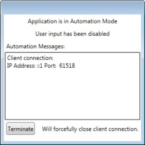
When the software acquires data, the Plate section displays in the main window behind the automation mode dialog and displays the data.
The Automation Messages area displays relevant information. To stop the automation process, click Terminate.
The StakMax® Microplate Handling System is an integrated microplate handler for use with Molecular Devices microplate readers, to provide simple, powerful, walk-away benchtop automation. The StakMax Microplate Handling System uses the SoftMax Pro Software Automation mode and the StakMax Software has a scripting tool. See StakMax Microplate Handling System on page 341.
Automation Scripts
You can script and run the automation commands in the SoftMax Pro Software through the automation API. For experienced automation programmers, the SoftMax Pro Data Acquisition and Analysis Software Automation API Reference Guide provides information about the available commands and parameters. The SoftMax Pro Software also supports a Microsoft Excel Add-In to write and run Excel Workflows.
Legacy scripts must use the Windows message WM_COPYDATA command. The WM_ SETTEXT command is not supported. Legacy scripts might not work correctly with the current automation interface. If your legacy script does not work properly, you should use the most recent version of the automation commands to rewrite the script.
To let the software accept legacy commands from scripts written for the SoftMax Pro Software automation interface version 5.x:
Select the Operations tab.
Click Automation Mode.
SoftMax Pro Excel Workflows
The SoftMax Pro Automation SDK is the underlying mechanism SoftMax Pro Excel workflows uses to access SoftMax Pro Software functionality.
The SoftMax Pro Excel workflows expand the industry-leading handling of plate format data by the SoftMax Pro Software with Excel-based handling of list format data. Use the SoftMax Pro Excel workflows to run discontinuous kinetic reads, multiplexed reads, kinetic well scan reads, and temperature-triggered reads.
After you install the custom Add-In in Excel, you can run and edit the Excel workflows or you can create your own workflows. The installation places the workflows in the same folder as the Excel Add-In files.
 For a 32-bit installation, the workflows are in the following folder:
For a 32-bit installation, the workflows are in the following folder:
C:\Program Files\Molecular Devices\SoftMax Pro 7.n.n Automation SDK\ExcelAddIn
 For a 64-bit installation, the workflows are in the following folder: C:\Program Files (x86)\Molecular Devices\SoftMax Pro 7.n.n Automation SDK\ExcelAddIn
For a 64-bit installation, the workflows are in the following folder: C:\Program Files (x86)\Molecular Devices\SoftMax Pro 7.n.n Automation SDK\ExcelAddIn
The Excel workflow files have a .xlsm extension.
Before you run or edit an Excel workflow, save a copy of the workflow on your computer.
The software allows you to use a barcode reader as an input device. When you place the cursor in a text field and then use the barcode reader to read a barcode, the barcode reader passes the text embedded in the barcode to the text field.
Before you use a barcode reader with the software, make sure you install the correct driver and that the barcode reader functions correctly. To test a barcode reader, open a text editor, such as Notepad, and then use the barcode reader to read a barcode. If the reader functions correctly, the text embedded in the barcode appears in the text editor.
Barcodes can have several different formats, such as MSI or Pharmacode. The barcode reader you use must support the type of barcode to read. See the documentation that comes with your barcode reader.
Help is available for dialogs that have a help icon or a More Information link. The Help tab in the Ribbon provides access to the help library.
 Click SoftMax Pro Help to view the Application Help.
Click SoftMax Pro Help to view the Application Help.
 Click Formula Reference to view the SoftMax Pro Data Acquisition and Analysis Software Formula Reference Guide.
Click Formula Reference to view the SoftMax Pro Data Acquisition and Analysis Software Formula Reference Guide.
 Click Release Notes to view the SoftMax Pro Data Acquisition and Analysis Software Release Notes.
Click Release Notes to view the SoftMax Pro Data Acquisition and Analysis Software Release Notes.
 Click Contact Us to access the following pages on Molecular Devices web site: What's New in the SoftMax Pro Software, the Molecular Devices Home page, the Molecular Devices Knowledge Base, or the Molecular Devices Support page.
Click Contact Us to access the following pages on Molecular Devices web site: What's New in the SoftMax Pro Software, the Molecular Devices Home page, the Molecular Devices Knowledge Base, or the Molecular Devices Support page.
 Click
Click  Software License to manage the software license. See Activating the Software License on page 8.
Software License to manage the software license. See Activating the Software License on page 8.
 Click SoftMax Pro to view the software version number and release information.
Click SoftMax Pro to view the software version number and release information.
Documentation
The SoftMax Pro Software installation places a copy of the available microplate reader user guides (.pdf) in the following location on the computer:
C:\ProgramData\Molecular Devices\User Guides
The most recent version of the microplate reader user guides are available on the Molecular Devices Knowledge Base:
In the software, select the Home tab, click Contact Us, and then select Knowledge Base. www.moleculardevices.com/service-support.
Molecular Devices is a leading worldwide manufacturer and distributor of analytical instrumentation, software, and reagents. We are committed to the quality of our products and to fully supporting our customers with the highest level of technical service.
Our Support website, www.moleculardevices.com/service-support, has a link to the Knowledge Base, which contains technical notes, software upgrades, safety data sheets, and other resources. If you still need assistance after consulting the Knowledge Base, you can submit a request to Molecular Devices Technical Support.
You can contact your local representative or Molecular Devices Technical Support at 800-635-5577 X 1815 (North America only) or +1 408-747-1700. In Europe call +44
(0) 118 944 8000.
To find regional support contact information, visit www.moleculardevices.com/contact.

Use the SoftMax Pro Software to perform state-of-the-art analysis. Use the software to control most Molecular Devices microplate reader instrument functions including the ability to define the settings to have the instrument run complete experiments and to define the formulas for result analysis.
When you start the software, the Untitled1 document tab displays in the Document Tabs area (number 4 in the following image) and the Workspace (number 7) displays the contents of the default protocol.

Note: For the SoftMax Pro Software - GxP edition, no document tabs display and the Workspace area is empty. Your permissions determine which actions you can perform. See SoftMax Pro Software - GxP Edition on page 247.

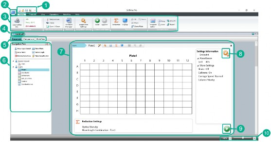
The numbers in the following table correspond to the image above.
Item | Description |
1 | Quick Access Toolbar: Use to create, open, and save protocols and data documents that contain the settings to run the instrument for data collection. You can customize this toolbar and you can change its location. See Quick Access Toolbar on page 47. |
2 | Application Menu: Use to manage protocols and data documents and to define options for the SoftMax Pro Software. See Application Menu on page 14. |
If the computer has access to the Internet, a browser window appears to display the Molecular Devices SoftMax Pro Insider page. To stop the appearance of the web page, see Application Options on page 45.
The  Application menu icon in the upper-left corner of the window provides access to the Application menu. Use the Application menu to create, open, save, rename, print, export, and import documents. Use the Recent Documents section to access the documents you most recently used.
Application menu icon in the upper-left corner of the window provides access to the Application menu. Use the Application menu to create, open, save, rename, print, export, and import documents. Use the Recent Documents section to access the documents you most recently used.
The Application menu also provides access to the SoftMax Pro Options dialog where you set options for Data Recovery, Web Browser, Plate Setup Helper, Plate Height Warning, Plate Eject After Read, Remote Control, Calculation, and SpectraMax iDx Control. See Application Options on page 45.
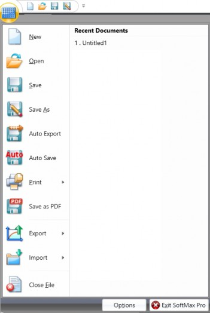
Click  to open the Application menu.
to open the Application menu.
 Select New to create a new document. See Creating Protocols and Data Documents on page 20.
Select New to create a new document. See Creating Protocols and Data Documents on page 20.
 Select
Select  Open to open a document or to select the document from the Recent Documents list on the right. See Opening Protocols and Data Documents on page 21.
Open to open a document or to select the document from the Recent Documents list on the right. See Opening Protocols and Data Documents on page 21.
 Select Save to save updates to a document.
Select Save to save updates to a document.
 Select
Select  Save As to rename a document, to save a protocol as a data document, to save a data document as a protocol, to move a document to a different location, or to give a new document a name. See Saving Protocols and Data Documents on page 22.
Save As to rename a document, to save a protocol as a data document, to save a data document as a protocol, to move a document to a different location, or to give a new document a name. See Saving Protocols and Data Documents on page 22.
 Select
Select  Auto Export to define settings to export documents to a new location, in a format that is compatible with other software applications. See Auto Export on page 23.
Auto Export to define settings to export documents to a new location, in a format that is compatible with other software applications. See Auto Export on page 23.
 For the SoftMax Pro Software - GxP edition, select Auto Save to define settings to save documents. See Auto Save on page 26.
For the SoftMax Pro Software - GxP edition, select Auto Save to define settings to save documents. See Auto Save on page 26.
 Click
Click  Print and select one of the following:
Print and select one of the following:
 Select
Select  Print All to print information, settings, and results in a document.
Print All to print information, settings, and results in a document.
 Select Print Preview to create a preview of information, settings, and results before you choose to print. See Previewing Print Jobs on page 28.
Select Print Preview to create a preview of information, settings, and results before you choose to print. See Previewing Print Jobs on page 28.
 Select Print Selected to select the experiment sections to print in the Print Selected dialog. See Printing Select Sections on page 29.
Select Print Selected to select the experiment sections to print in the Print Selected dialog. See Printing Select Sections on page 29.
 Select
Select  Printing Options to define the header and footer area for a printout, to add a logo image, and to set the print quality. See Printing Options on page 30.
Printing Options to define the header and footer area for a printout, to add a logo image, and to set the print quality. See Printing Options on page 30.
 Select
Select  Save As PDF to save the printed output of a document to a portable document format (.pdf). See Saving Data as a PDF on page 32.
Save As PDF to save the printed output of a document to a portable document format (.pdf). See Saving Data as a PDF on page 32.
 Click
Click  Export and select one of the following. See Exporting Data on page 36:
Export and select one of the following. See Exporting Data on page 36:
 Select Export As Data File (sdax) to export a SoftMax Pro Software - GxP edition version 7.1 document to the data document format for use in older versions of the SoftMax Pro Software.
Select Export As Data File (sdax) to export a SoftMax Pro Software - GxP edition version 7.1 document to the data document format for use in older versions of the SoftMax Pro Software.
 Select
Select  Export As Protocol File (sprx) to export a SoftMax Pro Software - GxP edition version 7.1 document to the protocol format for use in older versions of the SoftMax Pro Software.
Export As Protocol File (sprx) to export a SoftMax Pro Software - GxP edition version 7.1 document to the protocol format for use in older versions of the SoftMax Pro Software.
 Select
Select  Export to XML XLS TXT to export the data in a data document to a .xml,
Export to XML XLS TXT to export the data in a data document to a .xml,
.xls, or .txt file format for use in other applications.
 Click
Click  Import and select one of the following:
Import and select one of the following:
 Select
Select  Plate Format to import data into a Plate section in plate format. This requires a separate license, contact Molecular Devices. See Importing Data in Plate Format on page 39.
Plate Format to import data into a Plate section in plate format. This requires a separate license, contact Molecular Devices. See Importing Data in Plate Format on page 39.
 Select
Select  XML Format to import data into a Plate section in .xml format. This requires a separate license, contact Molecular Devices. See Importing Data in XML Format on page 41.
XML Format to import data into a Plate section in .xml format. This requires a separate license, contact Molecular Devices. See Importing Data in XML Format on page 41.
 Select Import Legacy Files to import the SoftMax Pro Software - GxP edition version 6.x and 7.0.x protocols and data documents into the SoftMax Pro Software - GxP edition version 7.1 database. See Importing Legacy Documents on page 42.
Select Import Legacy Files to import the SoftMax Pro Software - GxP edition version 6.x and 7.0.x protocols and data documents into the SoftMax Pro Software - GxP edition version 7.1 database. See Importing Legacy Documents on page 42.
 Select Close File to close the document that is open in the Workspace.
Select Close File to close the document that is open in the Workspace.
 Click Options at the bottom of the menu to set application options. See Application Options on page 45
Click Options at the bottom of the menu to set application options. See Application Options on page 45
 Click Exit SoftMax Pro at the bottom of the menu to exit the SoftMax Pro Software.
Click Exit SoftMax Pro at the bottom of the menu to exit the SoftMax Pro Software.
The SoftMax Pro Software uses two basic document types: protocols and data documents. You save both protocols and data documents just like any other file you save to a computer. Use the Protocols tab in the Ribbon to define which computer system database folders display in the Protocol Library. You should name the folders in a way that allows you to easily find the protocols.
 Protocols contain the settings that the instrument uses to collect data and the formulas to analyze data. Protocols are useful when you repeat experiments and when you create new documents.
Protocols contain the settings that the instrument uses to collect data and the formulas to analyze data. Protocols are useful when you repeat experiments and when you create new documents.
 Data documents contain the data the software collects when you run the experiment.
Data documents contain the data the software collects when you run the experiment.
Data documents allow you to create reports and graphs from the data you collect.
SoftMax Pro Software - Standard edition version 7.1 (and later) can open documents from version 4.0 or later.
SoftMax Pro Software - GxP edition version 7.1.1 allows you to import documents from version 6.0 or later. You can update documents created in earlier versions to a versions 6 or version 7 document and then import the document into the SoftMax Pro Software - GxP edition database. See Importing Legacy Documents on page 42.

Note: Before you open a document, make sure the instrument you select uses the same settings or compatible settings as the instrument used to create the document.

Protocols
You can use predefined protocols and you can create your own protocols. Protocols contain plate well layout assignments, reduction parameters, and instrument settings, but no data. Protocols are useful when you want to repeat experiments because they save instrument experiment settings and formulas for reuse. See Creating Protocols and Data Documents on page 20.
When you open a new document, the settings from the default protocol appear in the Workspace. The default protocol settings help you get started when you create a new document. When you install the software, the Basic Endpoint protocol is set as the default protocol with the file name default.spr. Use the Save As Default icon on the Protocols tab to change the default protocol settings. See Protocols Tab on page 51.

Note: When you save a data document as a protocol, the software creates a new protocol that saves the experiment settings without the data. Any data you collect in the current experiment remains unchanged and is saved with the data document.

The Protocol Manager icon on the Home tab and on the Protocols tab provides access to the Protocol Library. The Protocol Library contains over 160 protocols that contain instrument settings and formulas. You can customize the protocols in the Protocol Library to facilitate the data analysis and report creation.
Use the  Folder Locations icon on the Protocols tab to add or remove the folders that display in the Protocol Library. This helps you find the protocols you use most often. See Protocol Library Folder Locations on page 57.
Folder Locations icon on the Protocols tab to add or remove the folders that display in the Protocol Library. This helps you find the protocols you use most often. See Protocol Library Folder Locations on page 57.
The  Protocol Home Page icon on the Protocols tab provides access to the SoftMax Pro Software user community where you can share protocols, exchange tips and tricks, and network with other users.
Protocol Home Page icon on the Protocols tab provides access to the SoftMax Pro Software user community where you can share protocols, exchange tips and tricks, and network with other users.
Protocol File Extensions
You can open protocols that have the following file extensions. See Opening Protocols and Data Documents on page 21:
 .spr for SoftMax Pro Software - Standard edition version 6 and 7 protocols.
.spr for SoftMax Pro Software - Standard edition version 6 and 7 protocols.  .sprx for SoftMax Pro Software - GxP edition version 6 and 7.0.x protocols.
.sprx for SoftMax Pro Software - GxP edition version 6 and 7.0.x protocols.
 SoftMax Pro Software - GxP edition version 7.1.1 does not display file extensions for protocols.
SoftMax Pro Software - GxP edition version 7.1.1 does not display file extensions for protocols.
Data Documents
Data documents contain the instrument settings, the raw data the instrument collects, and the completed data analysis.
Data Document File Extensions
You can open data documents that have the following file extensions:
 .sda for SoftMax Pro Software - Standard edition version 6 and 7 data documents.
.sda for SoftMax Pro Software - Standard edition version 6 and 7 data documents.  .sdax for SoftMax Pro Software - GxP edition version 6 and 7.0.x data documents.
.sdax for SoftMax Pro Software - GxP edition version 6 and 7.0.x data documents.
 SoftMax Pro Software - GxP edition version 7.1.1 does not display file extensions for data documents.
SoftMax Pro Software - GxP edition version 7.1.1 does not display file extensions for data documents.
When you create a data document for an Imaging mode experiment or a Western Blot experiment, the software creates a folder with the same name as the data document.
Data Export Formats
You can export the data to files with the following file extensions: See Exporting Data on page 36.
 .xml
.xml
 .txt (list)
.txt (list)
 .txt (plate)
.txt (plate)  .xls (list)
.xls (list)
 .xls (plate)
.xls (plate)
Imaging Mode Data Documents
Before you start an image acquisition for an Imaging mode experiment or a Western Blot experiment, you must save the data document in a location with enough capacity for the image files. For best results, save Imaging mode data documents on the secondary hard drive inside the computer. Use of an external hard drive can slow the data acquisition and is not recommended. Use of a USB flash drive or saving to a network location is not supported.
When you create a data document for an Imaging mode experiment or a Western Blot experiment, the software creates a folder with the same name as the data document.
Example: If you save the data document with the name Imaging_Data, the software creates a new folder named Imaging_Data in the same folder where you save the data document. This folder stores the images and results.
 Imaging_Experiments Imaging_Data.sda
Imaging_Experiments Imaging_Data.sda  Imaging_Data
Imaging_Data
 Expt1
Expt1
Plate1
 IMAGES RESULTS
IMAGES RESULTS
The software stores the images separately for each plate in the IMAGES folder in .tiff format. The software stores image analysis data in the RESULTS folder. Western Blot experiments do not create or use the RESULTS folder.

Note: Do not rename, move, or delete the related folders or files. If you change the structure of these files and folders, the software may not be able to open the data document or might display inaccurate results.

Use the  Application menu to copy or delete data documents, image files, and analysis data files.
Application menu to copy or delete data documents, image files, and analysis data files.
To delete the images or the analysis data for an Imaging mode experiment:
In the Navigation Tree right-click the Plate section.
Select Delete Images or Delete Cell Data.
If you delete the .tiff file for a Western Blot experiment, the software recreates the .tiff image from the intensity data stored in the data document.

Note: When you save an Imaging mode data document as a protocol, the software saves only the settings and does not create other folders or files.

Acquisition of images in Imaging read mode requires significant computer memory and resources.
Each image file for an Imaging mode experiment can be larger than 2 megabytes. When you acquire the image of a single site in each well of a 96-well plate you can generate 300 megabytes of image data. A 384-well plate can generate 1 gigabyte of image data. When you acquire images of multiple sites, you increase the data storage requirement.
Before you start an Imaging read mode experiment, turn off all other programs to minimize the demands on computer memory and resources. When the software has limited access to computer memory and resources, image acquisition can take a long time. In some cases, images of some of the wells can be lost. See Optimizing the Computer for Image Acquisition on page 178.
For Imaging mode experiments, save the data to a .txt file format. If you use Auto Export to export multiple Imaging mode data documents, the software exports each new data document without the folders required to save images and results. See Auto Export on page 23.
Use the Quick Access toolbar and the  Application menu to create a new document that you can save as a protocol or data document. The Protocol Library contains protocols that you can use to create a new protocol or data document.
Application menu to create a new document that you can save as a protocol or data document. The Protocol Library contains protocols that you can use to create a new protocol or data document.
To create a document:
Click in the Quick Access toolbar or click to open the Application menu and select New. A new tab displays in the Document tabs and the Workspace displays the settings from the default protocol.

Note: You should save and name the protocol before you collect data. For the SoftMax Pro Software - GxP edition, you must save the document before you can proceed. See Saving Protocols and Data Documents on page 22.
Click  in the Quick Access toolbar or click
in the Quick Access toolbar or click  to open the Application menu and select Save As to display the Save As dialog.
to open the Application menu and select Save As to display the Save As dialog.
Navigate to where you want to save the document.
In the File Name field, enter the document name.
Click the Save As Type drop-down:
 For the SoftMax Pro Software - Standard edition, select Protocol Files (*.spr) to save the settings with no data as a protocol.
For the SoftMax Pro Software - Standard edition, select Protocol Files (*.spr) to save the settings with no data as a protocol.
 For the SoftMax Pro Software - Standard edition, select Data Files (*.sda) to save the settings with no data as a data document.
For the SoftMax Pro Software - Standard edition, select Data Files (*.sda) to save the settings with no data as a data document.
 For the SoftMax Pro Software - GxP edition, select Protocol Documents to save the settings with no data as a protocol.
For the SoftMax Pro Software - GxP edition, select Protocol Documents to save the settings with no data as a protocol.
 For the SoftMax Pro Software - GxP edition, select Data Documents to save the settings with no data as a data document.
For the SoftMax Pro Software - GxP edition, select Data Documents to save the settings with no data as a data document.
Set up the experiments for the document in the Navigation Tree. See Workspace on page 65.
Configure the settings for the instrument to use to read the Plate sections and Cuvette Set sections. See Acquisition Settings on page 109.
Set Data Reduction parameters. See Data Reduction on page 193.*
Set Display options. See Data Display Options on page 204.*
Click  in the Quick Access toolbar or click
in the Quick Access toolbar or click  to open the Application menu and select
to open the Application menu and select  Save to save your changes.
Save to save your changes.
*Can be done at any point in the process, before or after the initial read.
Use the Quick Access toolbar and the  Application menu to open documents. The Protocol Library contains protocols you can use to create a new protocol or a blank data document.
Application menu to open documents. The Protocol Library contains protocols you can use to create a new protocol or a blank data document.
The SoftMax Pro Software - Standard edition can open documents created by version 4.0 or later. When you open a document from an earlier version, the software converts it to the SoftMax Pro Software version 7.x format. After you save a document, only the current software version can open the new document.
The SoftMax Pro Software - GxP edition requires a few additional steps if you want to use documents that are from version 5 or earlier. See Importing Legacy Documents on page 42.

Note: Each instrument has different settings. Before you open a document, verify that the instrument used to create the document is the same as the instrument you select on the Home tab. Some instruments have incompatible settings.

To open documents:
Click in the Quick Access toolbar or click  to open the Application menu and Select Open to display the Open dialog.
to open the Application menu and Select Open to display the Open dialog.
Click the Data Files (*.sda) drop-down (SoftMax Pro Software - Standard edition) or the Open Type drop-down (SoftMax Pro Software - GxP edition). SoftMax Pro Software - GxP edition version 7.1.1 documents do not display the file extension.
 For SoftMax Pro Software - Standard edition, select Protocol Files (*.spr) to open a protocol with an .spr file extension.
For SoftMax Pro Software - Standard edition, select Protocol Files (*.spr) to open a protocol with an .spr file extension.
 For SoftMax Pro Software - Standard edition, select Data Files (*.sda) to open a data document with an .sda file extension.
For SoftMax Pro Software - Standard edition, select Data Files (*.sda) to open a data document with an .sda file extension.
 For SoftMax Pro Software - GxP edition, select Protocol Documents to open a version 7.1.1 protocol.
For SoftMax Pro Software - GxP edition, select Protocol Documents to open a version 7.1.1 protocol.
 For SoftMax Pro Software - GxP edition, select Data Documents to open a version
For SoftMax Pro Software - GxP edition, select Data Documents to open a version
7.1.1 data document.
Navigate to the document and select it.
Click Open. A new Document tab displays above the Workspace with the document name.
Before you use a protocol to collect data, you should save it as a data document.
Use the Quick Access toolbar and the  Application menu to save documents. Before you use a protocol, you should save the protocol as a data document. For the SoftMax Pro Software - GxP edition, use auto save settings to automatically save the document. See Auto Save on page 26.
Application menu to save documents. Before you use a protocol, you should save the protocol as a data document. For the SoftMax Pro Software - GxP edition, use auto save settings to automatically save the document. See Auto Save on page 26.
To save documents:
Select one of the following:
 Click
Click  in the Quick Access toolbar or click
in the Quick Access toolbar or click  to open the Applications menu and select Save to save the open document with updated information in the same location with the same name.
to open the Applications menu and select Save to save the open document with updated information in the same location with the same name.
 Click
Click  in the Quick Access toolbar or click
in the Quick Access toolbar or click  to open the Applications menu and select
to open the Applications menu and select  Save As to rename a document, to save a protocol as a data document, to save a data document as a protocol, to move a document to a different location, or to give a new document a name. The Save As dialog displays.
Save As to rename a document, to save a protocol as a data document, to save a data document as a protocol, to move a document to a different location, or to give a new document a name. The Save As dialog displays.
 Click to open the Applications menu and select Save As PDF to save the document in a .pdf format. See Saving Data as a PDF on page 32.
Click to open the Applications menu and select Save As PDF to save the document in a .pdf format. See Saving Data as a PDF on page 32.
For Save As, in the Save As dialog, navigate to where you want to save the document.
In the File Name field, enter the document name.
Click the Save As Type drop-down.
 For the SoftMax Pro Software - Standard edition, select Protocol Files (*.spr) to save the document as a protocol.
For the SoftMax Pro Software - Standard edition, select Protocol Files (*.spr) to save the document as a protocol.
 For the SoftMax Pro Software - Standard edition, select Data Files (*.sda) to save the document as a data document.
For the SoftMax Pro Software - Standard edition, select Data Files (*.sda) to save the document as a data document.
 For the SoftMax Pro Software - GxP edition, select Protocol Documents to save the document as a protocol.
For the SoftMax Pro Software - GxP edition, select Protocol Documents to save the document as a protocol.
 For the SoftMax Pro Software - GxP edition, select Data Documents to save the document as a data document.
For the SoftMax Pro Software - GxP edition, select Data Documents to save the document as a data document.
Click Save.
Use the Auto Export dialog to define how and where the software is to automatically export data immediately after each plate read completes. Auto export reduces the likelihood of lost data, particularly when you choose to export documents to corporate network file locations that are backed up on a regular basis. You can define multiple auto export instances. The software saves auto export settings with each document.
This feature helps prevent data loss when you do automated reads, such as with the StakMax Microplate Handling System. See StakMax Microplate Handling System on page 341.
For Imaging mode experiments, export the data to a .txt file format. If you use auto export to export multiple Imaging mode data documents, the software exports each new data document without the folders required to save images and results.
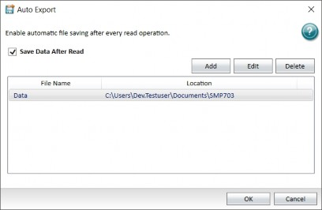
To automatically export a document:
Open the protocol or data document to export.
Click  to open the Application menu and select Auto Export to display the Auto Export dialog.
to open the Application menu and select Auto Export to display the Auto Export dialog.
Select the Save Data After Read check box to use auto export.
Click Add or select a document in the list and click Edit to display the Auto Export Properties dialog.
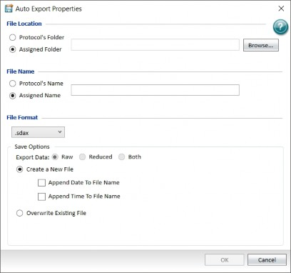

Note: Auto export properties settings are specific to the new export location or the export location you select to edit from the Auto Export dialog. Use this to customize the settings for each location to which you use auto export.

Select a File Location option.
 Select Protocol's Folder to export documents back to the folder that contains the originating document.
Select Protocol's Folder to export documents back to the folder that contains the originating document.
 Select Assigned Folder to export documents to a folder to which the computer has access. Click Browse to display the Browse For Folder dialog. Navigate to the folder or click Make New Folder to create a new folder where you want to export the document.
Select Assigned Folder to export documents to a folder to which the computer has access. Click Browse to display the Browse For Folder dialog. Navigate to the folder or click Make New Folder to create a new folder where you want to export the document.
Select a File Name option.
 Select Protocol's Name to name the document with the protocol name.
Select Protocol's Name to name the document with the protocol name.
 Select Assigned Name to assign a name to the document. In the text field, enter the name for the document. The text in this field is inserted at the start of each document name.
Select Assigned Name to assign a name to the document. In the text field, enter the name for the document. The text in this field is inserted at the start of each document name.
Click the File Format drop-down and select a file format.
 Select .sda or .sdax to export the file as a data document.
Select .sda or .sdax to export the file as a data document.
 Select .xml to export the file in .xml format. You should use the .xml format if you plan to import read data into other data collection and storage applications, specifically, LIMS (Laboratory Information Management System) or SDMS (Scientific Data Management System) packages.
Select .xml to export the file in .xml format. You should use the .xml format if you plan to import read data into other data collection and storage applications, specifically, LIMS (Laboratory Information Management System) or SDMS (Scientific Data Management System) packages.
 Select .txt (list) or .txt (plate) to export the document as a tab delimited text file that most word processor, spreadsheet, or database programs can open.
Select .txt (list) or .txt (plate) to export the document as a tab delimited text file that most word processor, spreadsheet, or database programs can open.
 Select .xls (list) or .xls (plate) to export the document in a format that Microsoft Excel can open. The Excel output has the same format as a tab delimited file with an
Select .xls (list) or .xls (plate) to export the document in a format that Microsoft Excel can open. The Excel output has the same format as a tab delimited file with an
.xls file extension.
Save Options: The available save options depend on the file format you select.
Select an Export Data option.
 Select Raw to export only the raw data.
Select Raw to export only the raw data.
 Select Reduced to export only the reduced data.
Select Reduced to export only the reduced data.
 Select Both to export both the raw and the reduced data in the same file.
Select Both to export both the raw and the reduced data in the same file.
Select one of the following:
 Select Create a New File to create a new document after each read. When you select this option and do not select either of the following check boxes, the software numbers documents with the same name sequentially. For example, Data 1, Data 2, and so on.
Select Create a New File to create a new document after each read. When you select this option and do not select either of the following check boxes, the software numbers documents with the same name sequentially. For example, Data 1, Data 2, and so on.
 Select the Append Date to File Name check box to add the date after the document name. If you select to append only the date to the document name, the software indexes the runs for that day starting with 1 and increments with each successive run. For example, the software names the first document named Data that you export on January 22nd, 2019 Data-01-22-19 1 and names the second document you export Data-01-22-19 2, and so on.
Select the Append Date to File Name check box to add the date after the document name. If you select to append only the date to the document name, the software indexes the runs for that day starting with 1 and increments with each successive run. For example, the software names the first document named Data that you export on January 22nd, 2019 Data-01-22-19 1 and names the second document you export Data-01-22-19 2, and so on.
 Select the Append Time to File Name check box to add the time after the document name.
Select the Append Time to File Name check box to add the time after the document name.
If you select both the date and the time, the time follows the date.
 Select Overwrite Existing File to overwrite an existing document for each read. Use this carefully because this can cause data loss. A document can overwrite only itself. If a different document with the same name exists in the save file location, the software appends a number to the end of the document name.
Select Overwrite Existing File to overwrite an existing document for each read. Use this carefully because this can cause data loss. A document can overwrite only itself. If a different document with the same name exists in the save file location, the software appends a number to the end of the document name.
Select Append to File to append the data from multiple plates into one document. Enter the maximum number of plates to append per document. This option is available when you select either the .txt or .xls format.
Tip: If you use the StakMax Microplate Handling System to read 10 plates, use this option to export the data from all 10 plates in a single document.

After you define each document name and location, click OK.
For the SoftMax Pro Software - GxP edition, use the Auto Save dialog to define how and where the software is to automatically save data immediately after each plate read completes. Auto save reduces the likelihood of lost data, particularly when you choose to save documents to corporate network file locations that are backed up on a regular basis. Auto save settings are saved with each document.
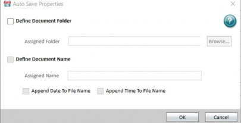
To automatically save a document:
Open the protocol or data document to save.
Click  to display the Application menu and select Auto Save to display the Auto Save Properties dialog.
to display the Application menu and select Auto Save to display the Auto Save Properties dialog.
Select the Define Document Folder check box to use auto save.
Next to the Assigned Folder field, click Browse to display the Assigned Folders dialog.
Navigate to the folder where you want to save the document and then click OK to return to the Auto Save Properties dialog.
Select the Define Document Name check box to define the document name when the document saves.
In the Assigned Name field, enter the name for the document when the document saves.
Select the Append Date to File Name check box to add the date after the document name. If you select to append only the date to the document name, the software indexes the runs for that day starting with 1 and increments with each successive run. For example, the software saves the first document named Data that you save on January 22nd, 2019 Data-01-22-19 1 and names the second document you save Data-01- 22-19 2, and so on.

Note: If you select both check boxes, the time follows the date.
Select the Append Time to File Name check box to add the time after the document name.

Use the  Application menu to print the contents of the document that is open in the Workspace. You can print all sections or select the sections to print. You can preview the print out before you print and you can define the page header, footer, and print quality options.
Application menu to print the contents of the document that is open in the Workspace. You can print all sections or select the sections to print. You can preview the print out before you print and you can define the page header, footer, and print quality options.
Print Options
Before you print, you can add a logo image, and define the header, footer, and print quality in the Printing Options dialog. See Printing Options on page 30.
Click  to open the Application menu, click Print, and then select
to open the Application menu, click Print, and then select  Printing Options to display the Printing Options dialog.
Printing Options to display the Printing Options dialog.
The Application menu provides several ways to print the document content. You can click a section in the Navigation Tree and click to have a section not print or you can select the sections to print from the Application menu.
To print a document:
Open the protocol or data document to print.
Click  to open the Application menu.
to open the Application menu.
Click  Print and select an option:
Print and select an option:
 Select Print All to print all the included sections in the document. The Print dialog displays.
Select Print All to print all the included sections in the document. The Print dialog displays.
 Select Print Preview to display the Print Preview dialog where you preview the print job before you print.
Select Print Preview to display the Print Preview dialog where you preview the print job before you print.
 Select Print Selected to display the Print Selected dialog where you select the sections to print.
Select Print Selected to display the Print Selected dialog where you select the sections to print.
 Select Printing Options to display the Printing Options dialog where you define the header and footer of the pages and the print quality for the print job.
Select Printing Options to display the Printing Options dialog where you define the header and footer of the pages and the print quality for the print job.
In the Print dialog, select the printer to use and set the print settings, including the number of copies to print. To print to a .pdf file, select the Molecular Devices (PDF Writer) or open the Application menu and select  Save As PDF.
Save As PDF.
Previewing Print Jobs
Use the Print Preview dialog to preview the print job before you print. Use the Print Options dialog to add a header, footer, and logo image. See Printing Options on page 30.
To preview the printed output:
Open the protocol or data document to preview.
Click  to open the Application menu, click
to open the Application menu, click  Print, and then select
Print, and then select  Print Preview to display the Print Preview dialog.
Print Preview to display the Print Preview dialog.
The dialog provides the following tools.  Scroll through the pages
Scroll through the pages

Zoom in

Zoom out

Scale to 100%

Scale to page width

Scale to the whole page

Scale to display two pages
Click to display the Print dialog.
Select the printer to use and set the print settings, including the number of copies to print.
To print to a .pdf file, select the Molecular Devices (PDF Writer). See Saving Data as a PDF on page 32.
Click Print.
Printing Select Sections
Use the Print Selected dialog to select the sections of the document to print. Use the Print Options dialog to add a header, footer, and logo image.
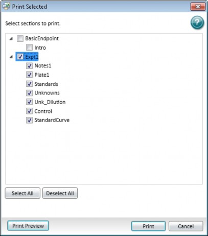
To print select sections of a document:
Open the protocol or data document to print.
Click  to open the Application menu, click
to open the Application menu, click  Print, and then select
Print, and then select  Print Selected to display the Print Selected dialog.
Print Selected to display the Print Selected dialog.
Select the check box for each section to print. Clear the check box for each section to not print.
 To select all the check boxes, click Select All.
To select all the check boxes, click Select All.  To clear all the check boxes, click Deselect All.
To clear all the check boxes, click Deselect All.
 To preview the print job before you print, click Print Preview.
To preview the print job before you print, click Print Preview.
Click Print to display the Print dialog.
Select the printer to use and set the print settings, including the number of copies to print.
To print to a .pdf file, select the Molecular Devices (PDF Writer).
Click Print.
Printing Options
Use the Printing Options dialog to define the contents of the header and footer and the quality of the printed output.
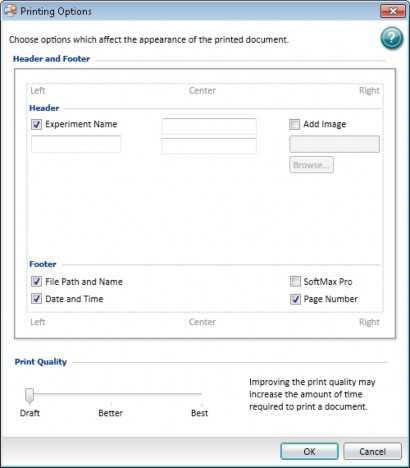
To define printing options:
Open the protocol or data document to print.
Click  to open the Application menu, click
to open the Application menu, click  Print, and then select Printing Options to display the Printing Options dialog.
Print, and then select Printing Options to display the Printing Options dialog.
Define the page header:
 Select the Experiment Name check box to include the experiment name in the header.
Select the Experiment Name check box to include the experiment name in the header.
 Enter text in the Left, Center, and Right text fields.
Enter text in the Left, Center, and Right text fields.
 Select the Add Image check box and click the Browse button to locate and select an image file (.jpg format). The software sizes the image to fit in the upper-right area of the page.
Select the Add Image check box and click the Browse button to locate and select an image file (.jpg format). The software sizes the image to fit in the upper-right area of the page.
Define the page footer:
 Select the File Path and Name check box to include the document name and path in the printout.
Select the File Path and Name check box to include the document name and path in the printout.
 Select the Date and Time check box to include the date and time.
Select the Date and Time check box to include the date and time.
 Select the SoftMax Pro check box to include the version of the SoftMax Pro Software.
Select the SoftMax Pro check box to include the version of the SoftMax Pro Software.
 Select the Page Number check box to include page numbers.
Select the Page Number check box to include page numbers.
Drag the Print Quality slider to adjust the print quality.
Click OK.
You can save the contents of a document in .pfd format. Before you save the .pdf file, you can define the header and footer of the pages and the print quality in the Printing Options dialog and predefine the sections that you want to exclude from the .pfd file in the Navigation Tree.
To define .pdf settings:
Click  to open the Application menu and select Save As PDF. You can also select the
to open the Application menu and select Save As PDF. You can also select the
Molecular Devices (PDF Writer) in the Print dialog.
The following tables define the settings for each of the tabs in the Molecular Devices (PDF Writer) - Create File dialog:
General Tab
Option | Description |
Option Set | Select a pre-defined set of .pdf settings from this list. To define a new set, select <Edit>. |
Format | To create a .pdf file, select .pdf from this list. You can also select from this list to create output in image file formats. |
File Name | Enter the file name in the path or click to browse for a folder and name the file. |
Append if output exists | Select this check box to append this file to an existing file instead of overwriting an existing file. |
Open destination folder after creation | Select this check box to open the folder where the file is saved after the file saves. |
Open the document after creation | Select this check box to open the file after the file saves. |
Document Tab
Option | Description |
Author | Enter the name of the author in this field to display in the document properties. |
Title | Enter the title of the document in this field to display in the document properties. |
Subject | Enter the subject of the document in this field to display in the document properties. |
Keywords | Enter keywords for the document in this field to display in the document properties. |
Quality | Select a quality to define the size of the .pdf file. |
Initial zoom level | Select a zoom level to define how the document displays each time it opens. |
Compatibility Level | Select a format to make the .pdf file compatible with older versions of PDF readers. Some options might not be supported in older version. |
PDF/A-1b | Select this check box to use the .pdf/A-1b archiving standard. |
Image Tab
Option | Description |
DPI | When you create an image file, select the resolution for the image in dots per inch. |
Text Alpha Bits | When you create an image file, select the number of bits to use for the alpha channel for text. |
Watermark Tab
Option | Description |
Text | Enter the text to display in the watermark. |
Font | Select the typeface for the watermark. |
Color | Click to select the color for the text. |
Size | Enter the size of the text in points. |
Outline width | Enter the width of the text outline in pixels to have the text display in outlines. To have the text display as a solid color, leave this field blank. |
Layer | To have the watermark text display on top of the document text, select Stamp. To have the watermark text display behind the document text, select Watermark. |
Rotation | Select to display the text upward from the lower left corner or downward from the upper left corner. |
Vertical position | Select to display the text on the top, center, or bottom of the document. |
Vertical adjustment | Enter a percentage offset for the vertical watermark position. |
Horizontal position | Select to display the text on the left, center, or right of the document. |
Horizontal adjustment | Enter a percentage offset for the horizontal watermark position. |
Merge Tab
Option | Description |
Append PDF | Enter the name of the file to which to append this file. To browse for the file, click |
Position | To append the new file to the end of the old file, select Bottom. To append the new file to the start of the old file, select Top. |
Background PDF | To print the data on an existing file, enter the file name in this field. Use this to print on company letterhead. To browse for the file, click |
Layer | To have the new file display on top of the old file, select Stamp. To have the new file display behind the old file, select Watermark. |
Security Tab
Option | Description |
Owner password | Enter the password that gives owner permissions for the file. |
User password | Enter the password that gives user permissions for the file. |
Key Length | Select the length of the key to use for document encryption. |
Set Permissions | Select this check box to limit access to the document for the user level. |
Select whether to permit printing and the print quality to permit. | |
Copy to clipboard | Select this check box to permit users to copy text from the file to the clipboard. |
Use the Export dialog to export data to a .xml, .xls, or .txt format. The software exports data values with the maximum floating point arithmetic precision, regardless of the display settings you define.

Note: For instructions to export membrane data, see Viewing Western Blot Membrane Data on page 241 and for instructions to export Imaging data to Microsoft Excel or PowerPoint see Viewing Imaging Data in Wells on page 207.

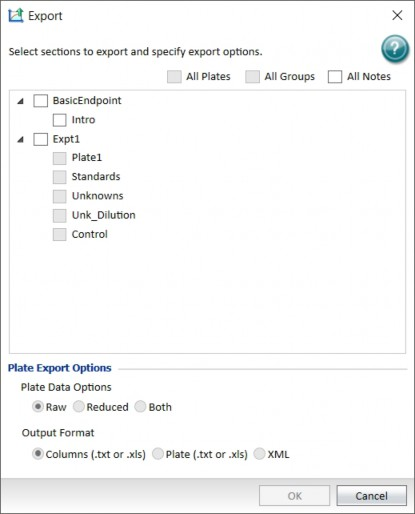
To export data:
Open the data document that contains the data to export.
Click  to open the Application menu, click Export, and then select
to open the Application menu, click Export, and then select  Export to XML XLS TXT to display the Export dialog.
Export to XML XLS TXT to display the Export dialog.
Select the following:
 Select the All Plates check box to export all Plate section data.
Select the All Plates check box to export all Plate section data.
 Select the All Groups check box to export all Group section data.
Select the All Groups check box to export all Group section data.  Select the All Notes check box to export all Note section data.
Select the All Notes check box to export all Note section data.
 Select the check box for each section to export.
Select the check box for each section to export.
 Clear the check box for each section to not export.
Clear the check box for each section to not export.
If you select to export Plate section data, select a Plate Data Option:  Select Raw to export only the raw data.
Select Raw to export only the raw data.
 Select Reduced to export only the reduced data.
Select Reduced to export only the reduced data.
Note: These options apply only to Plate sections.
 Select Both to export both the raw and the reduced data in the same file.
Select Both to export both the raw and the reduced data in the same file.

Select an Output Format option:
 Select Columns to export data in a single column of text for each well.
Select Columns to export data in a single column of text for each well.

Note: These options apply only to Plate sections.
 Select Plate to export data in a text matrix that corresponds to a plate grid.
Select Plate to export data in a text matrix that corresponds to a plate grid.  Select XML to export data in an .xml format.
Select XML to export data in an .xml format.

Click OK to display the Save As dialog.
Navigate to the folder where you want to save the data.
In the File Name field, enter the export file name.
Click the Save As Type drop-down and select the file type for the export file.
 If you select the XML Output Format, the only option is .xml. For a copy of the SoftMax Pro .xml schema, contact Molecular Devices.
If you select the XML Output Format, the only option is .xml. For a copy of the SoftMax Pro .xml schema, contact Molecular Devices.
 For details about the format and content of the .txt and .xls format export file, see Exporting File Details on page 356
For details about the format and content of the .txt and .xls format export file, see Exporting File Details on page 356
Click Save.
Use the  Application menu to import data into the software. Click
Application menu to import data into the software. Click  to open the Application menu, click
to open the Application menu, click  Import:
Import:
 Select
Select  Plate Format to import tab delimited text data into a Plate section. See Importing Data in Plate Format on page 39.
Plate Format to import tab delimited text data into a Plate section. See Importing Data in Plate Format on page 39.
 Select
Select  XML Format to import .xml data into a Plate section. See Importing Data in XML Format on page 41.
XML Format to import .xml data into a Plate section. See Importing Data in XML Format on page 41.
 Select
Select  Import Legacy Files to import SoftMax Pro Software - GxP edition version 6 and 7 documents into the SoftMax Pro Software - GxP edition version 7.1.1 database. See Importing Legacy Documents on page 42.
Import Legacy Files to import SoftMax Pro Software - GxP edition version 6 and 7 documents into the SoftMax Pro Software - GxP edition version 7.1.1 database. See Importing Legacy Documents on page 42.

Note: The import data in Plate format feature and the import data in the .xml format feature require separate licenses. To obtain a license for the Plate format data import feature and the .xml format data import feature, contact Molecular Devices.

The software installation includes templates to import data in the Plate format and a schema to import data in the .xml format.
When you import plate data, the software creates a new Plate section with the section name from the import file. If the Plate section name already exists, then the import data overwrites the existing data in the section. See Plate Sections on page 76.
When you import plate data into an existing Plate section, the software preserves the template and reduction settings in the existing Plate section if the data you import data is compatible with the settings in the existing section.
To preserve the template and reduction settings, the name of the Plate section in the source file must match the name of the Plate section in the destination file. If the names do not match, the software creates a new Plate section.
Another way to preserve template and reduction settings is to copy the import data from the new Plate section and then paste the data into an existing Plate section to use the template and reduction settings in the section where you paste the data.

Note: To maximize the number of data points the software uses for reduction, the end time reduction parameter changes to match the read time from the import file.

Importing Data in Plate Format
Use the  Application menu to import data in the Plate format.
Application menu to import data in the Plate format.
Before you can import plate data that you export in the Plate format from SoftMax Pro Software version 5.x and 6.x or that you acquire from a different software program, you must first use that software program to export the data into a format that is compatible with the SoftMax Pro Software version 7.1.1. The SoftMax Pro Software installation includes templates to import data in the Plate format.
To import data in the plate format:
Open or create a new protocol.
Define a Plate section into which to import the plate data. Name the Plate section with the same name as the Plate section in the import file.
Click  to open the Application menu.
to open the Application menu.
Click  Import and select
Import and select  Plate Format to import tab delimited text data.
Plate Format to import tab delimited text data.
In the Open dialog, navigate to and select the file to import.
Click Open to import the data. The Plate sections display the imported data.
Save the file.
After you import the data into the Plate sections, the Read Information area on the right indicates that the data was imported and shows the time and date of the import. For the SoftMax Pro Software - GxP edition, the Read Information includes the name of the user who imported the data.
More Information
Import templates are in a sub-folder of the Program Files folder where the SoftMax Pro Software is installed. The default installation path is:
C:\Program Files (x86)\Molecular Devices\SoftMax Pro 7.1.1\Plugins\Import-PlateFormat\Templates
The templates have the .xlsx format, but you must save the file in the .txt format with tab- separated values before you import the data.
The cells in the template are color-coded.
Background Color | Description |
White | Do not alter cell. |
Green | Cell requires information entry. |
Light Yellow | Cell information entry optional. |
You can paste your data directly into the template or use the template as a model for a script that converts your data to the acceptable format for import.
Plate Data Layout
The first line of an import template defines the number of Plate sections (or "Blocks") that are included in the document.
 ##BLOCKS= 1
##BLOCKS= 1
Each Plate section has the following format:
 Header lines
Header lines
The first header line contains descriptive titles for the data in the second header line. The second header line contains the type of section, Plate, and the title to be given to the Plate section in the document.
The fields in the header lines define the type of read, the number of wells in the plate, and the wavelengths used for the read, among other relevant information. The layout and format of the header lines are dependent on the read type. For more information, see the template for the read type of your data.
 Data lines
Data lines
The data lines follow the header lines with a blank row between the header lines and data lines. The layout and format of the data lines are dependent on the read mode and read type.
 The first column shows the time points for a kinetic read, the data points in a well scan read, or the wavelengths in a spectrum read. For endpoint reads, this column is blank.
The first column shows the time points for a kinetic read, the data points in a well scan read, or the wavelengths in a spectrum read. For endpoint reads, this column is blank.
 The second column shows the temperature for the read, if an incubator is used for the read. If the incubator is off, the value is zero.
The second column shows the temperature for the read, if an incubator is used for the read. If the incubator is off, the value is zero.
 The third column is where the read data starts.
The third column is where the read data starts.
The data displays in a table to indicate the columns and rows of the plate used for the read. The data for multiple time points for kinetic reads, multiple data points for well scan reads, or multiple wavelengths for spectrum reads is listed in separate tables below the previous table. For endpoint, kinetic, or well scan reads with multiple wavelengths, the data for each wavelength displays in separate tables to the right of the previous table.
wavelength 1 wavelength 2
1 | 2 | 3 | … |
1.596 | 2.479 | 2.95 | … |
1.024 | 0.308 | 3.925 | … |
0.195 | 0.287 | 2.638 | … |
… | … | … | … |
1 | 2 | 3 | … |
3.103 | 1.39 | 1.97 | … |
2.381 | 1.957 | 3.722 | … |
0.967 | 1.049 | 1.422 | … |
… | … | … | … |
Temperature
0:00:00 ##
1.564 | 3.344 | 2.378 | … |
0.82 | 1.797 | 1.064 | … |
0.421 | 3.066 | 3.906 | … |
… | … | … | … |
0.113 | 3.872 | 0.637 | … |
3.58 | 2.603 | 0.996 | … |
0.915 | 0.57 | 2.251 | … |
… | … | … | … |
0:01:58 ##
1.169 | 1.092 | 3.969 | … |
1.105 | 3.022 | 2.845 | … |
3.602 | 2.033 | 3.737 | … |
… | … | … | … |
1.126 | 0.004 | 1.934 | … |
1.933 | 2.834 | 0.657 | … |
0.437 | 3.242 | 1.337 | … |
… | … | … | … |
… ##
 End line
End line
The end line follows the data lines with a blank row between the data lines and end line. The end line of each Plate section is defined by the text: ~End
To import data from more than one Plate section in a single text file, include the header lines, the data lines, and the end line for each Plate section after the end line of the previous Plate section.
The final line of an import file contains a single field with the original name given to the import file, and the date and time that the file was saved. This information follows the end line for the last Plate section in the file.
Importing Data in XML Format
Use the  Application menu to import data in the .xml format.
Application menu to import data in the .xml format.
To import data in .xml format, you must use the SoftMax Pro Software .xml schema from software version 6.4.1 or later to format the .xml file.
To import data in .xml format:
Open or create a new protocol.
Define a Plate section into which to import the plate data. Name the Plate section with the same name as the Plate section in the import file.
Click  to open the Application menu.
to open the Application menu.
Click  Import and select
Import and select  XML Format to import .xml data.
XML Format to import .xml data.
In the Open dialog, navigate to and select the file to import.
Click Open to import the data. The Plate sections display the data you import.
Save the file.
After the data imports into the Plate sections, the Read Information area on the right indicates that the data was imported and shows the time and date of the import. For the SoftMax Pro Software - GxP edition, the Read Information includes the name of the user who imported the data.
More Information
Before you can import plate data that you acquire from a different software program, you must first use that software program to export the data into a compatible format. The SoftMax Pro Software installation includes templates to import data in a schema for the .xml format.
The .xml schema file for data import (XMLImportSchema.xsd) is in a sub-folder of the Program Files folder where the SoftMax Pro Software program is installed. The default installation path is:
C:\Program Files (x86)\Molecular Devices\SoftMax Pro 7.1.1\Plugins\Import-XML\Schema
For information about the .xml elements and their usages, see the comments in the schema file.
To import data from more than one Plate section in a single .xml file, make sure that all the Plate sections are between the <PlateSections> tags and you define each Plate section between a set of <PlateSection> tags.
<PlateSections>
<PlateSection>
[Data from the first Plate section]
</PlateSection>
<PlateSection>
[Data from the second Plate section]
</PlateSection>
</PlateSections>
Import SoftMax Pro Software - Standard Edition Version 4 and 5 Documents
The SoftMax Pro Software - Standard edition version 7.1 can open documents created by version 4.0 or later. To open documents created in a version earlier than version 4.0, you must first open the document in the SoftMax Pro Software 4.0 or later, and then save it as a version 4.0 or later document. The document must also meet instrument compatibility requirements.
To use a document from an earlier version of the SoftMax Pro Software, save the document with a different name or in a different location after you open the document with the current version.
After you open a document from an earlier version, review the document to make sure the conversion went well. The document conversion might change instrument settings, curve fits, or other items that have been updated for version 7.1.
Legacy documents have the following file extensions.
 .ppr for SoftMax Pro Software - Standard edition 4 and 5 protocols
.ppr for SoftMax Pro Software - Standard edition 4 and 5 protocols
 .pda for SoftMax Pro Software - Standard edition 4 and 5 data documents
.pda for SoftMax Pro Software - Standard edition 4 and 5 data documents  .epr for SoftMax Pro Software - GxP edition 4 and 5 protocols
.epr for SoftMax Pro Software - GxP edition 4 and 5 protocols
 .eda for SoftMax Pro Software - GxP edition 4 and 5 data documents
.eda for SoftMax Pro Software - GxP edition 4 and 5 data documents
Import Documents Into the SoftMax Pro Software - GxP Edition Database
For SoftMax Pro Software - GxP edition version 7.1.1 additional steps are required to import the document into the database. Use the Import Legacy Files dialog to import SoftMax Pro Software - GxP edition version 6.x and 7.0.x protocols and data documents into the SoftMax Pro Software - GxP edition version 7.1.1 database. Documents in the SoftMax Pro Software - GxP edition version 7.1.1 database do not display file extensions.
When you log on to the SoftMax Pro Software - GxP edition, you select a Project. The Import Legacy Files dialog displays only folders for that Project. To import documents into the folders for a different Project, you must log out and then select the different Project when you log back on.

Note: You cannot edit the documents you import into the SoftMax Pro Software - GxP edition version 7.1.1 database. If you choose to do anything with the document after you import it, you must open the document and use Save As to make a copy of the document.

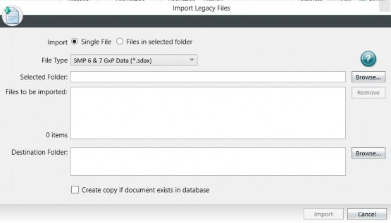
To import legacy documents:
Click  to open the Application menu.
to open the Application menu.
Click  Import and select
Import and select  Import Legacy Files to display the Import Legacy Files dialog.
Import Legacy Files to display the Import Legacy Files dialog.
Select an Import option:
 Select Single File to import one document.
Select Single File to import one document.
 Select Files In Selected Folder to import all the documents in the folder you select. If you select this option an additional check box displays.
Select Files In Selected Folder to import all the documents in the folder you select. If you select this option an additional check box displays.
Select the Include Subfolders and Import Whole Folder Structure check box to import all documents in the folder you select plus all documents in any subordinate folders. This copies the folder structure and all documents to the folder hierarchy for the Project you selected when you logged in.
Click the File Type drop-down:
 Select SMP 6 & 7 Data (*.sda) to import SoftMax Pro Software - Standard edition data documents.
Select SMP 6 & 7 Data (*.sda) to import SoftMax Pro Software - Standard edition data documents.
 Select SMP 6 & 7 Protocol (*.spr) to import SoftMax Pro Software - Standard edition protocols.
Select SMP 6 & 7 Protocol (*.spr) to import SoftMax Pro Software - Standard edition protocols.
 Select SMP 6 & 7 Data (*.sdax) to import SoftMax Pro Software - GxP edition data documents.
Select SMP 6 & 7 Data (*.sdax) to import SoftMax Pro Software - GxP edition data documents.
 Select SMP 6 & 7 Protocol Files (*.sprx) to import SoftMax Pro Software - GxP edition protocols.
Select SMP 6 & 7 Protocol Files (*.sprx) to import SoftMax Pro Software - GxP edition protocols.
Next to the Selected Folder field, click Browse to display either the Open dialog or the Select Folder dialog. The path displays in the Selected Folder field. The path and the file name can have a maximum of 256 characters.
Navigate to and select the document or folder to import and click Open or Select Folder
to return to the Import Legacy Files dialog.
In the Files To Be Imported field, select the documents you do not want to import and click Remove to remove the documents from the list.
Next to the Destination Folder field, click Browse to display the Select Folder for Import dialog.
Select the folder into which to import the documents and click OK to return to the Import Legacy Files dialog. The path displays in the Destination Folder field. The path and the file name can have a maximum of 256 characters.

Note: The path (including the file name) can have a maximum of 256 characters. The file name (without the path) can have a maximum of 50 characters. The file name cannot contain the following characters: < > | : * ? \ /

Select the Create Copy If Document Exists In Database check box to create a new document in the database if a document with the same name exists. Leave this check box clear to prevent the software from importing duplicate documents. The import does not overwrite a document.
Click Import to import the documents. The List of Files dialog displays to indicate the status of the import.
In the Import List of Files dialog, click Close to finish the import.
Use the SoftMax Pro Options dialog to define application level preference options that affect documents holistically.
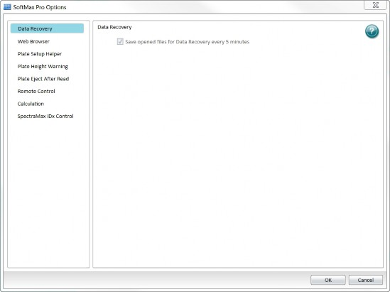
Click  to open the Application menu, and then click the Options button at the bottom of the menu to display the SoftMax Pro Options dialog.
to open the Application menu, and then click the Options button at the bottom of the menu to display the SoftMax Pro Options dialog.
The SoftMax Pro Options dialog contains settings for the following options:
 Data Recovery - The Save Opened Files For Data Recovery Every 5 Minutes check box is selected by default. The software saves unsaved documents to a temporary file every five minutes to assist with data recovery. If the software experiences an unexpected interruption, when the software restarts, the Document Recovery dialog displays the list of the documents that can be recovered. Recovered documents are saved to C:\Users\<windows user>\Documents\SMP<nn>. You cannot turn this option off.
Data Recovery - The Save Opened Files For Data Recovery Every 5 Minutes check box is selected by default. The software saves unsaved documents to a temporary file every five minutes to assist with data recovery. If the software experiences an unexpected interruption, when the software restarts, the Document Recovery dialog displays the list of the documents that can be recovered. Recovered documents are saved to C:\Users\<windows user>\Documents\SMP<nn>. You cannot turn this option off.
 Web Browser - Select the Do Not Display the Web Browser (What’s New Website) On Startup check box to stop the display of the What's New page of the Molecular Devices web site every time you start the software. This used to be the What's New tab that appeared in previous versions of the software. You can view the What's New page from the Help tab in the Ribbon. See Help Tab on page 56.
Web Browser - Select the Do Not Display the Web Browser (What’s New Website) On Startup check box to stop the display of the What's New page of the Molecular Devices web site every time you start the software. This used to be the What's New tab that appeared in previous versions of the software. You can view the What's New page from the Help tab in the Ribbon. See Help Tab on page 56.
 Plate Setup Helper - Select the Disable Auto Opening of Helper On New Protocol check box to prevent the display of the Plate Setup Helper dialog when you open a new document. See Plate Setup Helper on page 78.
Plate Setup Helper - Select the Disable Auto Opening of Helper On New Protocol check box to prevent the display of the Plate Setup Helper dialog when you open a new document. See Plate Setup Helper on page 78.
 Plate Height Warning - Select the Disable Plate Height Warning On Protocol Run check box to prevent the display of the plate height warning when you start a read. To prevent damage to the SpectraMax i3, i3x, iD3, iD5, Paradigm, and FilterMax F3 and F5 the plate height warning displays as a reminder to make sure that you correctly define the plate height. See Plate Editor on page 117.
Plate Height Warning - Select the Disable Plate Height Warning On Protocol Run check box to prevent the display of the plate height warning when you start a read. To prevent damage to the SpectraMax i3, i3x, iD3, iD5, Paradigm, and FilterMax F3 and F5 the plate height warning displays as a reminder to make sure that you correctly define the plate height. See Plate Editor on page 117.
 Plate Eject After Read - Select the Plate Remains Inside Instrument After Completion of Read to have the plate drawer remain closed after a read completes. Leave this check box clear to have the plate drawer open after a read completes.
Plate Eject After Read - Select the Plate Remains Inside Instrument After Completion of Read to have the plate drawer remain closed after a read completes. Leave this check box clear to have the plate drawer open after a read completes.
 Remote Control - Select the Enable Remote Control check box to use an Apple mobile device to control the software. If you select this option, download the SoftMax Pro Remote app from the Apple App Store. Verify that both the app and the software use the same Port. Enter the Host Name or IP address of the computer into the app settings.
Remote Control - Select the Enable Remote Control check box to use an Apple mobile device to control the software. If you select this option, download the SoftMax Pro Remote app from the Apple App Store. Verify that both the app and the software use the same Port. Enter the Host Name or IP address of the computer into the app settings.
 Calculation -
Calculation -
 Select the Calculate During Acquisition check box to have the software perform data calculations of the kinetic data while a kinetic acquisition is in progress. In the Calculate Every Cycles field, enter the number of kinetic reads between successive calculations. This option allows for the fact that calculations may take any amount of time, depending on the complexity of the protocol and the speed of the computer.
Select the Calculate During Acquisition check box to have the software perform data calculations of the kinetic data while a kinetic acquisition is in progress. In the Calculate Every Cycles field, enter the number of kinetic reads between successive calculations. This option allows for the fact that calculations may take any amount of time, depending on the complexity of the protocol and the speed of the computer.
 Select the Legacy Rounding check box to improve consistency with the SoftMax Pro Software version 5. This introduces a small factor to force rounding upward.
Select the Legacy Rounding check box to improve consistency with the SoftMax Pro Software version 5. This introduces a small factor to force rounding upward.
 SpectraMax iDx Control - When you use the SpectraMax iD3 and SpectraMax iD5, select the Enable Control of SpectraMax iDx Instruments check box to use the software to connect to a specific IP address. If the Instrument Connection dialog does not detect the instrument automatically, enter the IP address of the instrument. You can enter up to five different IP addresses to connect the computer to multiple instruments on your network. To find the instrument IP address, on the instrument touchscreen touch Maintenance > System Information. See SpectraMax iD5 Multi-Mode Microplate Reader on page 320 and SpectraMax iD3 Multi-Mode Microplate Reader on page 317.
SpectraMax iDx Control - When you use the SpectraMax iD3 and SpectraMax iD5, select the Enable Control of SpectraMax iDx Instruments check box to use the software to connect to a specific IP address. If the Instrument Connection dialog does not detect the instrument automatically, enter the IP address of the instrument. You can enter up to five different IP addresses to connect the computer to multiple instruments on your network. To find the instrument IP address, on the instrument touchscreen touch Maintenance > System Information. See SpectraMax iD5 Multi-Mode Microplate Reader on page 320 and SpectraMax iD3 Multi-Mode Microplate Reader on page 317.
The Quick Access toolbar provides a shortcut to the features in the Ribbon and in the Application menu. The toolbar displays to the right of the  icon in the upper-left corner of the main window. You can change content of the Quick Access toolbar and its location.
icon in the upper-left corner of the main window. You can change content of the Quick Access toolbar and its location.
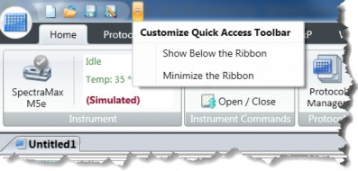
The Quick Access toolbar has the following icons by default.

Click to create a new document. A new document tab displays above the Workspace.

Click to open a document. Use the Open dialog to navigate the folder hierarchy and select a document.

Click to save changes to a document. For a new document, use the Save As dialog displays to save the document.

Click to rename a document, to save a protocol as a data document, to save a data document as a protocol, to move a document to a different location, or to give a new document a name.

Click to change the location of the Quick Access toolbar.
 Select Show Below the Ribbon to move the Quick Access toolbar below the Ribbon above the Workspace.
Select Show Below the Ribbon to move the Quick Access toolbar below the Ribbon above the Workspace.
 Select Show Above the Ribbon to move the Quick Access toolbar above the Ribbon.
Select Show Above the Ribbon to move the Quick Access toolbar above the Ribbon.
 Select Minimize the Ribbon to hide the Ribbon from the display. The Ribbon tab names continue to display. Click the tab name to display the tab content. Clear the check box next to this option to maximize the Ribbon.
Select Minimize the Ribbon to hide the Ribbon from the display. The Ribbon tab names continue to display. Click the tab name to display the tab content. Clear the check box next to this option to maximize the Ribbon.
Customizing the Quick Access Toolbar
To add Ribbon icons and Application menu items to the Quick Access toolbar:
In the Ribbon or the Application menu, right-click an icon and select Add to Quick Access Toolbar.
In the Quick Access toolbar, right-click an icon and select Remove from Quick Access Toolbar.
When you right-click an icon in the Quick Access toolbar, the Application menu, or in the Ribbon, you can move the location of the Quick Access toolbar and minimize/maximize the Ribbon.
The Ribbon contains tabs with icons that vary depending on the instrument that is connected to the computer and your context within the software. You can add the tools from the Ribbon to the Quick Access Toolbar to expedite your workflows in the software.
Home Tab
The Home tab displays the following icons:
 Click Instrument to connect the software to the instrument. Displays other instrument information such as connection status and chamber temperature. See Selecting an Instrument on page 58.
Click Instrument to connect the software to the instrument. Displays other instrument information such as connection status and chamber temperature. See Selecting an Instrument on page 58.
 Instrument Commands - Icons depend on the instrument you select.
Instrument Commands - Icons depend on the instrument you select.
 Click Temperature to display the Temperature Control dialog where you set the temperature of the plate chamber or cuvette chamber. See Temperature Control on page 112.
Click Temperature to display the Temperature Control dialog where you set the temperature of the plate chamber or cuvette chamber. See Temperature Control on page 112.
 Click Shake and hold the mouse button to shake the plate. Release the mouse button to stop the shake. This shake icon is independent of the shake settings in an experiment. When you create an experiment, a separate workflow allows you to define how to shake the plate as part of the experiment.
Click Shake and hold the mouse button to shake the plate. Release the mouse button to stop the shake. This shake icon is independent of the shake settings in an experiment. When you create an experiment, a separate workflow allows you to define how to shake the plate as part of the experiment.
 Click
Click  Open/Close to open and close the instrument plate drawer. The software can open and close other drawers for some instruments such as the drawers for the FlexStation® 3 Multi-Mode Microplate Reader. Click Tips for the tip rack drawer or click Reagent for the compound plate drawer.
Open/Close to open and close the instrument plate drawer. The software can open and close other drawers for some instruments such as the drawers for the FlexStation® 3 Multi-Mode Microplate Reader. Click Tips for the tip rack drawer or click Reagent for the compound plate drawer.

Note: The Info icon on the Operations tab provides access to the Instrument Information dialog. Use the Instrument Information dialog to open and close the cartridge drawers for the SpectraMax i3x and SpectraMax Paradigm. Use this dialog to open and close the filter drawers for the FilterMax F3 and FilterMax F5. See Instrument Information on page 354.

 Click
Click  Protocol Manager to display the list of protocols in the Protocol Library. The Protocol Library contains over 160 protocols that contain instrument settings and formulas. You can customize the protocols in the Protocol Library to facilitate the data analysis and report creation.
Protocol Manager to display the list of protocols in the Protocol Library. The Protocol Library contains over 160 protocols that contain instrument settings and formulas. You can customize the protocols in the Protocol Library to facilitate the data analysis and report creation.
 Click
Click  Acquisition Settings to display the Settings dialog where you define instrument settings for the read. See Acquisition Settings on page 109.
Acquisition Settings to display the Settings dialog where you define instrument settings for the read. See Acquisition Settings on page 109.
 Click ABS, FL, and LUM to do a quick start absorbance, fluorescence, or luminescence read using default settings. (Available for SpectraMax iD3 and SpectraMax iD5.)
Click ABS, FL, and LUM to do a quick start absorbance, fluorescence, or luminescence read using default settings. (Available for SpectraMax iD3 and SpectraMax iD5.)
 Controls and Status - Icons to start and stop a read.
Controls and Status - Icons to start and stop a read.
 Click
Click  Read to read the Plate section or Cuvette Set section you select in the Navigation Tree.
Read to read the Plate section or Cuvette Set section you select in the Navigation Tree.
Note: Use the Auto Read button on the Operations tab to read from multiple Plate sections or Cuvette Set sections. As information is read, the Workspace display the data.

 Click Stop to stop the read. The read stops immediately. If you click Stop while the plate is being read for a kinetic time point, the software completes the data collection for that time point before the read stops.
Click Stop to stop the read. The read stops immediately. If you click Stop while the plate is being read for a kinetic time point, the software completes the data collection for that time point before the read stops.

Note: If you stop a Kinetic read before it completes, you cannot restart the read or append data to the read. You must either let the read finish or click  Interrupt to pause the read.
Interrupt to pause the read.

 For Kinetic reads, click Interrupt to pause the read, and then click
For Kinetic reads, click Interrupt to pause the read, and then click  Append to continue the Kinetic read from where it left off. When you interrupt a read, the instrument finishes the read for all the wells you select in the plate and then waits for your input before continuing. This type of discontinuous kinetic read can help with acquisition development.
Append to continue the Kinetic read from where it left off. When you interrupt a read, the instrument finishes the read for all the wells you select in the plate and then waits for your input before continuing. This type of discontinuous kinetic read can help with acquisition development.
 After a Kinetic read ends successfully, click Append to read the same Plate section again and append the data to the data that already exists in the Plate section.
After a Kinetic read ends successfully, click Append to read the same Plate section again and append the data to the data that already exists in the Plate section.
 When you select a section in the Navigation Tree, the Home tab displays section-specific icons:
When you select a section in the Navigation Tree, the Home tab displays section-specific icons:
 Notes Controls and Formatting Tools display when you select a Note section. See Note Sections on page 70.
Notes Controls and Formatting Tools display when you select a Note section. See Note Sections on page 70.
 Plate Tools and Template Tools display when you select a Plate section. See Plate Sections on page 76.
Plate Tools and Template Tools display when you select a Plate section. See Plate Sections on page 76.
 Cuvette Tools and Template Tool display when you select a Cuvette Set section. See Cuvette Set Sections on page 80.
Cuvette Tools and Template Tool display when you select a Cuvette Set section. See Cuvette Set Sections on page 80.
 Column Tools, Summary Tools, and Formatting Tools display when you select a Group section. See Group Sections on page 82.
Column Tools, Summary Tools, and Formatting Tools display when you select a Group section. See Group Sections on page 82.
 Graph Type and Graph Tools display when you select a Graph section. See Graph Sections on page 85.
Graph Type and Graph Tools display when you select a Graph section. See Graph Sections on page 85.
Protocols Tab
The Protocols tab displays the following icons:
 Protocol Manager - Icons to manage and access the Protocol Library.
Protocol Manager - Icons to manage and access the Protocol Library.
 Click Folder Locations to manage the list of folders that display when you click Protocol Manager. See Protocol Library Folder Locations on page 57.
Click Folder Locations to manage the list of folders that display when you click Protocol Manager. See Protocol Library Folder Locations on page 57.
 Click
Click  Save As Default to overwrite the default protocol (default.spr) with the protocol settings you define for the document that is open in the Workspace. When you open a new document, the settings from the default protocol appear in the Workspace. The default protocol settings help you get started when you create a new document. When you install the software, the Basic Endpoint protocol is set as the default protocol.
Save As Default to overwrite the default protocol (default.spr) with the protocol settings you define for the document that is open in the Workspace. When you open a new document, the settings from the default protocol appear in the Workspace. The default protocol settings help you get started when you create a new document. When you install the software, the Basic Endpoint protocol is set as the default protocol.

Note: When you save a document as the default protocol, the data you collect in the current document remains unchanged. To keep the data, save the document as a data document.
 Click
Click  Protocol Manager to display the list of protocols in the Protocol Library. The Protocol Library contains over 160 protocols that contain instrument settings and formulas. You can customize the protocols in the Protocol Library to facilitate the data analysis and report creation.
Protocol Manager to display the list of protocols in the Protocol Library. The Protocol Library contains over 160 protocols that contain instrument settings and formulas. You can customize the protocols in the Protocol Library to facilitate the data analysis and report creation.
 Community - Access to the SoftMax Pro Software Community web site.
Community - Access to the SoftMax Pro Software Community web site.
 Click Protocol Home Page to display the SoftMax Pro Software Community web site. Use the Community website to share protocols, exchange tips and tricks, and network with other SoftMax Pro Software users. The computer must have access to the Internet.
Click Protocol Home Page to display the SoftMax Pro Software Community web site. Use the Community website to share protocols, exchange tips and tricks, and network with other SoftMax Pro Software users. The computer must have access to the Internet.
 Click Export for Sharing to export the protocol that is open in the Workspace to a format that you can upload to the Protocol Home Page Community web site. The export file contains no data and the first Note section becomes the protocol description on the web site. The software encrypts the protocol and saves it with a
Click Export for Sharing to export the protocol that is open in the Workspace to a format that you can upload to the Protocol Home Page Community web site. The export file contains no data and the first Note section becomes the protocol description on the web site. The software encrypts the protocol and saves it with a
.spz extension. Do not rename the file because it will not upload properly. To upload the protocol, click Protocol Home Page and follow the instructions on the SoftMax Pro Software Community web site.
View Tab
The View tab displays the following icons:
 Show/Hide Panel - Select the Navigation Tree check box to display the Navigation Tree in the Workspace. Clear this check box to hide the Navigation Tree to provide more space to view the content of the Workspace. See Navigation Tree on page 62.
Show/Hide Panel - Select the Navigation Tree check box to display the Navigation Tree in the Workspace. Clear this check box to hide the Navigation Tree to provide more space to view the content of the Workspace. See Navigation Tree on page 62.
 Window - Icons to change the layout of the Document tabs in the Workspace. See Workspace on page 65.
Window - Icons to change the layout of the Document tabs in the Workspace. See Workspace on page 65.
 Click Single Tab Group to display the data for a single Document tab in the Workspace.
Click Single Tab Group to display the data for a single Document tab in the Workspace.
 Click New Horizontal Tab Group to tile the content of the Document tabs horizontally. The tab you select moves below inactive tabs in the Workspace. Content resizes to accommodate the display for all documents you open in the Workspace.
Click New Horizontal Tab Group to tile the content of the Document tabs horizontally. The tab you select moves below inactive tabs in the Workspace. Content resizes to accommodate the display for all documents you open in the Workspace.
 Click New Vertical Tab Group to tile the content of the Document tabs vertically. The tab you select moves to the right of inactive tabs in the Workspace. Content resizes to accommodate the display for all documents you open in the Workspace.
Click New Vertical Tab Group to tile the content of the Document tabs vertically. The tab you select moves to the right of inactive tabs in the Workspace. Content resizes to accommodate the display for all documents you open in the Workspace.
 Expand/Collapse Sections - Icons to change the amount of data that displays in each section.
Expand/Collapse Sections - Icons to change the amount of data that displays in each section.
 Click Collapse All Sections to display only the experiment names in the Navigation Tree and only the section names in the Workspace.
Click Collapse All Sections to display only the experiment names in the Navigation Tree and only the section names in the Workspace.
 Click Expand All Sections to display all sections in each experiment in the Navigation Tree and to expand the display of the section content in the Workspace.
Click Expand All Sections to display all sections in each experiment in the Navigation Tree and to expand the display of the section content in the Workspace.
Operations Tab
The Operations tab displays the following icons:
 Instrument Tools - Icons that are specific to the instrument that you connect to the computer.
Instrument Tools - Icons that are specific to the instrument that you connect to the computer.
 Click Calibration to air-calibrate the instrument for the Absorbance read mode.
Click Calibration to air-calibrate the instrument for the Absorbance read mode.
The instrument calibration values are stored in the instrument firmware. See Instrument Calibration on page 352.
 Click Info to view instrument information such as the serial number and firmware version. Displays a list of the installed detection cartridges for the SpectraMax i3x, SpectraMax i3, and SpectraMax Paradigm. Displays the installed filters for the SpectraMax iD5, FilterMax F3, and FilterMax F5. Use this to configure the excitation and emission filter slides for the FilterMax F3 and FilterMax F5. See Instrument Information on page 354.
Click Info to view instrument information such as the serial number and firmware version. Displays a list of the installed detection cartridges for the SpectraMax i3x, SpectraMax i3, and SpectraMax Paradigm. Displays the installed filters for the SpectraMax iD5, FilterMax F3, and FilterMax F5. Use this to configure the excitation and emission filter slides for the FilterMax F3 and FilterMax F5. See Instrument Information on page 354.
 Click
Click  Filters to define the positions of the filters in the EMax® Endpoint Microplate Reader and VMax® Kinetic Microplate Reader. See Configuring Filters for the EMax and VMax Microplate Readers on page 339.
Filters to define the positions of the filters in the EMax® Endpoint Microplate Reader and VMax® Kinetic Microplate Reader. See Configuring Filters for the EMax and VMax Microplate Readers on page 339.
 Click Configure to adjust the intensity of the lamp for each of the installed filters for the EMax Plus. You can view the positions and wavelengths of the installed filters and other instrument information like the serial number and firmware version. See Adjusting the Lamp on page 340.
Click Configure to adjust the intensity of the lamp for each of the installed filters for the EMax Plus. You can view the positions and wavelengths of the installed filters and other instrument information like the serial number and firmware version. See Adjusting the Lamp on page 340.
 Click Initialize to return the EMax Plus plate carrier to its home position.
Click Initialize to return the EMax Plus plate carrier to its home position.
 Click Recover to restore the FlexStation 3 fluidics module to operating conditions after a read error.
Click Recover to restore the FlexStation 3 fluidics module to operating conditions after a read error.
 Click Air Gap to enter the FlexStation 3 pipette air gap which is the volume between the end of the pipette tip and the bottom of the liquid in the tip.
Click Air Gap to enter the FlexStation 3 pipette air gap which is the volume between the end of the pipette tip and the bottom of the liquid in the tip.
 Click Refresh to update the software for the installed detection cartridges for the SpectraMax i3x, SpectraMaxi3, and SpectraMax Paradigm and the installed filter slides for the FilterMaxF3 and FilterMaxF5.
Click Refresh to update the software for the installed detection cartridges for the SpectraMax i3x, SpectraMaxi3, and SpectraMax Paradigm and the installed filter slides for the FilterMaxF3 and FilterMaxF5.
 Click Wash Injectors to wash the injectors for the SpectraMax L Luminescence Microplate reader.
Click Wash Injectors to wash the injectors for the SpectraMax L Luminescence Microplate reader.
 Click
Click  Prime Injectors to prime the injectors for the SpectraMax L.
Prime Injectors to prime the injectors for the SpectraMax L.
 Click Reverse Injectors to reverse the injectors for the SpectraMax L.
Click Reverse Injectors to reverse the injectors for the SpectraMax L.
 Click Injector Tubing to determine when to replace injector tubing for the SpectraMax L.
Click Injector Tubing to determine when to replace injector tubing for the SpectraMax L.
 Click Change Aperture to change the aperture from 96-well plates to 384-well plates or from 384-well plates to 96-well plates for the SpectraMax L with a manual aperture.
Click Change Aperture to change the aperture from 96-well plates to 384-well plates or from 384-well plates to 96-well plates for the SpectraMax L with a manual aperture.
 Click Shake Settings to shake the plate for the SpectraMax L.
Click Shake Settings to shake the plate for the SpectraMax L.
 Calculations - The software does continuous recalculation of the data when you read plates, create or change formulas, or change settings that influence data. You may want to disable recalculations to edit the protocol without waiting for recalculations to complete. See Calculations and Numerical Precision on page 191.
Calculations - The software does continuous recalculation of the data when you read plates, create or change formulas, or change settings that influence data. You may want to disable recalculations to edit the protocol without waiting for recalculations to complete. See Calculations and Numerical Precision on page 191.
 Click Suspend Calculations to disable automatic recalculation. While suspended, no recalculation occurs regardless of what you change, add, or delete from the experiment. This is useful when you have a large complicated protocol and you want to modify the formulas without waiting for recalculations to complete.
Click Suspend Calculations to disable automatic recalculation. While suspended, no recalculation occurs regardless of what you change, add, or delete from the experiment. This is useful when you have a large complicated protocol and you want to modify the formulas without waiting for recalculations to complete.
 Click Resume Calculations to use automatic recalculation.
Click Resume Calculations to use automatic recalculation.
 Click Recalculate Now to recalculate all data one time. Use this when recalculation is suspended to see the results of the changes you made without enabling continuous recalculation.
Click Recalculate Now to recalculate all data one time. Use this when recalculation is suspended to see the results of the changes you made without enabling continuous recalculation.
 Click Function Editor to display the Function Editor dialog where you create custom curve fits for graphs. See Custom Curve Fit Settings on page 227.
Click Function Editor to display the Function Editor dialog where you create custom curve fits for graphs. See Custom Curve Fit Settings on page 227.
Under certain circumstances, a calculation status message displays in the Workspace footer. See Workspace on page 65.
 Calculating: Displays when the software calculates the formulas in an experiment and when you click Recalculate Now.
Calculating: Displays when the software calculates the formulas in an experiment and when you click Recalculate Now.
 Calculating Suspended: Displays when you click Suspend Calculation.
Calculating Suspended: Displays when you click Suspend Calculation.  No message displays under other conditions.
No message displays under other conditions.
 Automation - Icons to do multiple plate reads and for automation of the software.
Automation - Icons to do multiple plate reads and for automation of the software.
 Click Auto Read to automatically read multiple Plate sections as they display in an experiment. See Using Auto Read on page 180.
Click Auto Read to automatically read multiple Plate sections as they display in an experiment. See Using Auto Read on page 180.
 Click Plate Stacker when you use the StakMax Microplate Handling System instrument that uses the StakMax Software that is integrated with the SoftMax Pro Software. See StakMax Microplate Handling System on page 341.
Click Plate Stacker when you use the StakMax Microplate Handling System instrument that uses the StakMax Software that is integrated with the SoftMax Pro Software. See StakMax Microplate Handling System on page 341.
 Click Automation Mode to place the SoftMax Pro Software in automation mode. See Automation Mode on page 8.
Click Automation Mode to place the SoftMax Pro Software in automation mode. See Automation Mode on page 8.
GxP Tab (SoftMax Pro Software - GxP Edition)
The GxP tab, which is available when you use the SoftMax Pro Software - GxP edition (SoftMax Pro Software - GxP Edition on page 247), displays the following icons:
 User Account - Icons to manage user account information.
User Account - Icons to manage user account information.
 Click Account Information to display the User Account Information dialog where you view information about the current user. See Account Information on page 255.
Click Account Information to display the User Account Information dialog where you view information about the current user. See Account Information on page 255.
 Click User Log Off to log the current user off without closing the software.
Click User Log Off to log the current user off without closing the software.
 Click User Lock Session to reactivate a user session after the session times out due to inactivity.
Click User Lock Session to reactivate a user session after the session times out due to inactivity.
 Click Change Password to display the Change Password dialog where you change your password. See Changing Passwords on page 257.
Click Change Password to display the Change Password dialog where you change your password. See Changing Passwords on page 257.
 Data - Icons to track software usage.
Data - Icons to track software usage.
 Click Statements to display the Statements dialog where you view, edit, add, and sign statements. See GxP Statements on page 267.
Click Statements to display the Statements dialog where you view, edit, add, and sign statements. See GxP Statements on page 267.
 Click Audit Trail to display the Audit Trail dialog where you view activity related to the open document. See Document Audit Trail on page 273.
Click Audit Trail to display the Audit Trail dialog where you view activity related to the open document. See Document Audit Trail on page 273.
 Click Document Status to change the status of the document that is open in the Workspace. See Document Status on page 266.
Click Document Status to change the status of the document that is open in the Workspace. See Document Status on page 266.
 Click Release Protocol to release a protocol for the next step in the document workflow. See Releasing Protocols on page 267.
Click Release Protocol to release a protocol for the next step in the document workflow. See Releasing Protocols on page 267.
 Instrument - Icons to enable and disable the touchscreen for the SpectraMax iD3 or SpectraMax iD5. See SpectraMax iD3 Multi-Mode Microplate Reader on page 317 and SpectraMax iD5 Multi-Mode Microplate Reader on page 320.
Instrument - Icons to enable and disable the touchscreen for the SpectraMax iD3 or SpectraMax iD5. See SpectraMax iD3 Multi-Mode Microplate Reader on page 317 and SpectraMax iD5 Multi-Mode Microplate Reader on page 320.
Workflow Tab
The Workflow tab, for use with the Workflow view of the Workspace (Defining and Running Workflows on page 102) displays the following icons:
 Execution - Icons to Start, Pause, Resume, and Cancel the workflow.
Execution - Icons to Start, Pause, Resume, and Cancel the workflow.
 Designer - Icons to manage the tasks in the workflow and to change the appearance of the Workspace when you use the Workflow view.
Designer - Icons to manage the tasks in the workflow and to change the appearance of the Workspace when you use the Workflow view.
 Click Undo, Redo, and Clear to undo, redo, or clear the tasks in the Workspace.
Click Undo, Redo, and Clear to undo, redo, or clear the tasks in the Workspace.
 Click Zoom In, Zoom Out, and Reset Zoom to change the appearance of the tasks in Workspace.
Click Zoom In, Zoom Out, and Reset Zoom to change the appearance of the tasks in Workspace.
 Click Fit To Screen to size the tasks so that they all fit on one screen.
Click Fit To Screen to size the tasks so that they all fit on one screen.
 Click Mini Map to display an Overview dialog that helps you navigate a long timeline.
Click Mini Map to display an Overview dialog that helps you navigate a long timeline.
 Click Save As Image to export an image of the timeline to a .jpg, .png, .gif, or .xps format.
Click Save As Image to export an image of the timeline to a .jpg, .png, .gif, or .xps format.
 Status - Displays the status of the workflow.
Status - Displays the status of the workflow.
 Click Execution Log to display the Execution Log dialog where you view the status of the tasks as the workflow runs in real time.
Click Execution Log to display the Execution Log dialog where you view the status of the tasks as the workflow runs in real time.
Help Tab
The Help tab displays the following icons:
 Help
Help
 Click SoftMax Pro Help to view the application help.
Click SoftMax Pro Help to view the application help.
 Click
Click  Formula Reference to view the SoftMax Pro Data Acquisition and Analysis Software Formula Reference Guide. This document has four main sections:
Formula Reference to view the SoftMax Pro Data Acquisition and Analysis Software Formula Reference Guide. This document has four main sections:
 Introduction - Provides a general introduction to formulas.
Introduction - Provides a general introduction to formulas.
 Operators - Describes the types of operators you use to assemble formulas.
Operators - Describes the types of operators you use to assemble formulas.
 Functions - Describes the types of functions you use to assemble formulas.
Functions - Describes the types of functions you use to assemble formulas.
 Accessors - Describes special functions and protocol settings that you include in formulas.
Accessors - Describes special functions and protocol settings that you include in formulas.
 Click Release Notes to view the SoftMax Pro Data Acquisition and Analysis Software Release Notes for this software release.
Click Release Notes to view the SoftMax Pro Data Acquisition and Analysis Software Release Notes for this software release.
 If the computer has access to the Internet, click Contact Us to display a menu with the following options:
If the computer has access to the Internet, click Contact Us to display a menu with the following options:
 Select What's New to view information about what is new in the software. If you miss the What's New tab that displayed in the Document Tabs in previous versions of the software, you can view the information here.
Select What's New to view information about what is new in the software. If you miss the What's New tab that displayed in the Document Tabs in previous versions of the software, you can view the information here.
 Select Home Page to view the Molecular Devices web site home page.
Select Home Page to view the Molecular Devices web site home page.  Select Knowledge Base to view the Molecular Devices Knowledge Base.
Select Knowledge Base to view the Molecular Devices Knowledge Base.
 Select Request Support to access the Molecular Devices Support Request web page.
Select Request Support to access the Molecular Devices Support Request web page.
 Click Software License to display the Software License Activation dialog where you activate the software license. See Activating the Software License on page 8.
Click Software License to display the Software License Activation dialog where you activate the software license. See Activating the Software License on page 8.
 About - Click SoftMax Pro to view the software version number and release information.
About - Click SoftMax Pro to view the software version number and release information.
Use the Folder Locations dialog to manage the list of folders that appear in the Protocol Library. The Protocol Manager provides access to protocols included with the software and the protocols you store in the Protocol Library.
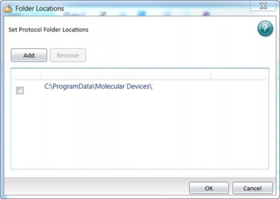
To manage the folders that display in the Protocol Library:
In the Ribbon, select the Protocols tab and click Folder Locations to display the Folder Locations dialog.
Click Add to display the Select Folder dialog.
To add a folder to the Protocol Library, either:  Navigate to a folder and click Select Folder.
Navigate to a folder and click Select Folder.
 Select the folder into which to add a new folder, click New Folder, enter the folder name, and then click OK.
Select the folder into which to add a new folder, click New Folder, enter the folder name, and then click OK.
To delete a folder from the Protocol Library, select the check box for each folder to remove and click Remove.

Note: The folder no longer displays in the Protocol Library but the folder and the documents in the folder remain in the database.

Click OK.
Use the Instrument Connection dialog to connect the SoftMax Pro Software to the microplate reader. See the instrument user guide for instructions to connect the cables between the computer and the instrument. See Supported Instruments and Detection Cartridges on page 316.

Note: You can use the software without a physical connection between the computer and the instrument in Offline mode to do data analysis or in Simulator mode to create protocols.

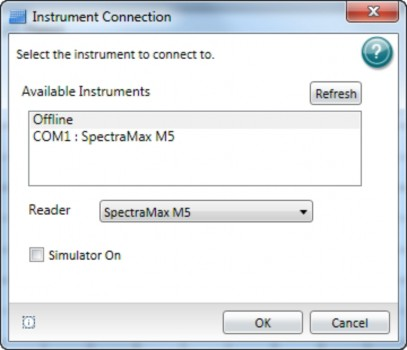
To select an instrument:
Power on the instrument and wait for the instrument initialization process to complete.
In the Ribbon, select the Home tab and click Instrument to display the Instrument Connection dialog.
If the instrument does not appear in the Available Instruments list, click Refresh.
In the Available Instruments list:
 Select the communication port to which you connect the instrument or select
Select the communication port to which you connect the instrument or select
Offline.
 To work offline for data analysis, select Offline, then click the Reader drop-down and select an instrument.
To work offline for data analysis, select Offline, then click the Reader drop-down and select an instrument.
 To work in simulator mode to create protocols, select Offline, click the Reader drop- down and select an instrument, then select the Simulator On check box.
To work in simulator mode to create protocols, select Offline, click the Reader drop- down and select an instrument, then select the Simulator On check box.
Click OK. The Home tab displays an icon for the instrument you select.


Note: The icon is for troubleshooting purposes only.
Instrument Connection Status
In the Ribbon, on the Home tab, the instrument icon indicates the status of the connection between the computer and the instrument. If the status indicates the instrument is disconnected, make sure that the instrument is powered on and that the cables between the computer and the instrument are secure.
Instrument connected
Instrument disconnected
Instrument in Simulator mode
Instrument Calibration
You should calibrate some instruments before use. See Instrument Calibration on page 352.
SpectraMax Paradigm Considerations
When you first install the SpectraMax Paradigm, you must remove hardware transport locks as described in the instrument user guide. As a safety precaution, the SoftMax Pro Software controls internal locks to prevent the drawers from opening until the software detects and initializes the instrument. See Removing Software Locks on page 328.
SpectraMax iD3 and SpectraMax iD5 Considerations
When you use the SoftMax Pro Software to operate the SpectraMax iD3 or SpectraMax iD5, your company network configuration could prevent the connection between the computer and the instrument.
You can use the Ethernet cable to connect the computer directly to the instrument or you can connect the SpectraMax iD3 and SpectraMax iD5 to your company intranet. See SpectraMax iD3 Multi-Mode Microplate Reader on page 317 and SpectraMax iD5 Multi- Mode Microplate Reader on page 320.
You may have to do the following to select the SpectraMax iD3 and SpectraMax iD5:
On the SpectraMax iD3 and SpectraMax iD5 instrument touchscreen, navigate to the
Maintenance page System Information tab and note the instrument IP address.
In the SoftMax Pro Software, click  to open the Application menu.
to open the Application menu.
At the bottom of the Application menu, click the Options button to display the SoftMax Pro Options dialog.
In the list on the left, click SpectraMax iDx Control.
Select the Enable Control of SpectraMax iDx Instruments check box.
Enter the IP address of the instrument in one of the fields. There are five fields so you can enter up to five IP addresses.
Click OK.
Select the Home tab and click Instrument to display the Instrument Connection dialog.
Click Refresh if needed and the SpectraMax iD3 and SpectraMax iD5 instruments should appear. If the instrument does not appear, you may have to work with your company network administrator to confirm that your company network configuration permits the communication between the computer and the instrument.
When you use a computer running the SoftMax Pro Software to operate the instrument, the instrument touchscreen is locked.
For users that use the SoftMax Pro Software - GxP edition to operate the instrument, the user must have the following permission to lock and unlock the instrument touchscreen:
 SoftMax Pro Software - GxP edition version 7.0.3 users require the Sign Signature permission.
SoftMax Pro Software - GxP edition version 7.0.3 users require the Sign Signature permission.
 SoftMax Pro Software - GxP edition version 7.1.1 and later users require the Lock/Unlock Instrument permission.
SoftMax Pro Software - GxP edition version 7.1.1 and later users require the Lock/Unlock Instrument permission.
In the Ribbon, on the GxP tab, users with appropriate permission can use the following icons to lock and unlock the instrument touchscreen:
 Click
Click  GxP Mode On to lock the instrument touchscreen and operate the instrument from the computer running the SoftMax Pro Software in GxP mode. This locks the instrument touchscreen for all users and you must operate the instrument from a computer running the SoftMax Pro Software - GxP edition.
GxP Mode On to lock the instrument touchscreen and operate the instrument from the computer running the SoftMax Pro Software in GxP mode. This locks the instrument touchscreen for all users and you must operate the instrument from a computer running the SoftMax Pro Software - GxP edition.
 Click
Click  GxP Mode Off to release the lock from the instrument touchscreen and allow users to use the instrument touchscreen to run experiments.
GxP Mode Off to release the lock from the instrument touchscreen and allow users to use the instrument touchscreen to run experiments.

Note: The instrument remains locked until the user with the appropriate permission
clicks GxP Mode Off to stop the GxP mode. You cannot use the Instrument Connection dialog to disconnect from a SpectraMax iD3 and SpectraMax iD5 that is locked in GxP mode.

Each tab between the Ribbon and the Workspace is a protocol or data document. The Untitled1 tab displays the default protocol when you log on for the first time to help you create your first document. Depending on your View tab settings, as you use the software to define additional documents, each document appears as a tab above the Workspace to the left of the Untitled1 tab.

Note: For the SoftMax Pro Software - GxP edition, no document tabs display and the Workspace area is empty. Your permissions determine which actions you can perform. See SoftMax Pro Software - GxP Edition on page 247.

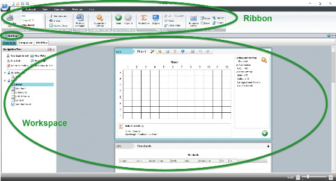
Select a tab to display the contents of the document in the Workspace.
Tip: If you miss the What's New tab from previous versions of the software, the Help tab on the Ribbon provides access to the Molecular Devices What's New web page. See Help Tab on page 56. The  Application menu provides access to the Application Options dialog where you can choose to display the What's New information every time you start the software. See Application Options on page 45.
Application menu provides access to the Application Options dialog where you can choose to display the What's New information every time you start the software. See Application Options on page 45.

The Navigation Tree displays section controls, the list of experiments in the open document and the sections in each experiment. The Navigation Tree displays to the left of the Workspace when you use the Document view and the Comparison view for a document. The Workflow view displays icons you can drag into the Workspace. See Workspace on page 65.
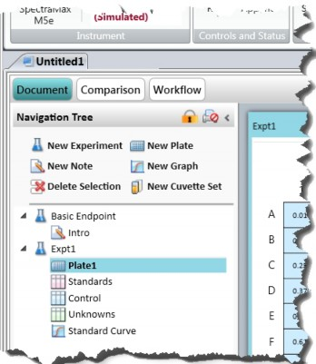

The following icons appear above the Navigation Tree:


For the SoftMax Pro Software - GxP edition, select a section and click to lock the section and prevent edits. Click  again to unlock the section. See SoftMax Pro Software - GxP Edition on page 247.
again to unlock the section. See SoftMax Pro Software - GxP Edition on page 247.

Select a section and click to prevent the section from appearing in the printed version of the document. Sections that do not print display  . Click
. Click  again to have the section appear in the printed versions of the document. To prevent or allow printing of all the sections in an experiment, select the experiment in the Navigation Tree and click
again to have the section appear in the printed versions of the document. To prevent or allow printing of all the sections in an experiment, select the experiment in the Navigation Tree and click
. You can override this setting from the  Application menu when you print the
Application menu when you print the
contents of the document.

Click to hide the Navigation Tree and increase the Workspace area display. In the Ribbon, use the View tab to hide the Navigation Tree.
Section Controls
Use the controls in the Navigation Tree to manage the experiments in the document and to manage the sections in the experiments. Sections include Note, Plate, Graph, and Cuvette Set. Experiments can also contain Group sections. A Group section contains a group of plate wells and related formulas. You create Group sections when you configure Plate sections and Cuvette Set sections from the Template Editor dialog. See Template Editor on page 87.

Note: If you add an experiment or section to the wrong location in the Navigation Tree, drag and drop experiments within the hierarchy and drag and drop sections within an experiment.

To manage experiments:
Above the Workspace, select a Document tab. The experiments and the sections in the document display in the Navigation Tree.
To add an experiment to the document, select the experiment that most closely resembles the experiment to create and click New Experiment. A duplicate of the experiment you select displays below the experiment. The software duplicates the sections and settings but does not duplicate the data.
To add a Note section, Plate section, or Cuvette Set section to an experiment, select the section that most closely resembles the section to create. The software adds the new section below the section you select.
 Click
Click  New Note to add a Note section. See Note Sections on page 70.
New Note to add a Note section. See Note Sections on page 70.  Click
Click  New Plate to add a Plate section. See Plate Sections on page 76.
New Plate to add a Plate section. See Plate Sections on page 76.
 Click
Click  New Cuvette Set to add a Cuvette Set section. See Cuvette Set Sections on page 80.
New Cuvette Set to add a Cuvette Set section. See Cuvette Set Sections on page 80.
To add a Graph section, click  New Graph to display the New Graph dialog. Set the options for the graph. See Graphing Data on page 212. Click OK. The Graph section displays below the section you select. See Graph Sections on page 85.
New Graph to display the New Graph dialog. Set the options for the graph. See Graphing Data on page 212. Click OK. The Graph section displays below the section you select. See Graph Sections on page 85.
To delete a section, select the section or sections to delete (Ctrl+click to multi-select) or select an experiment to delete an entire experiment, then click Delete Selection.
Note: You cannot undo the deletion. When you delete a Plate section, the software also deletes the data from the Plate section.

To change the sequence of the sections in an experiment, drag the section name and drop it elsewhere in the Navigation Tree. You can move the sections within an experiment. You cannot move sections between experiments.
Select a section to display the section content in the Workspace.
Renaming, Duplicating, Deleting Experiments and Sections
Right-click an experiment or a section to Rename, Duplicate, or Delete the experiment or section.
 When you duplicate an experiment, the software duplicates all sections in the experiment to a new experiment, without data.
When you duplicate an experiment, the software duplicates all sections in the experiment to a new experiment, without data.
 When you duplicate a Note section or a Graph section, the software creates a new section with the contents of the source section.
When you duplicate a Note section or a Graph section, the software creates a new section with the contents of the source section.
 When you duplicate a Group section, the software creates a new Group section with the same properties as the source section.
When you duplicate a Group section, the software creates a new Group section with the same properties as the source section.
 When you duplicate a Plate section, the software creates a new Plate section with the settings from the source Plate section, without data.
When you duplicate a Plate section, the software creates a new Plate section with the settings from the source Plate section, without data.
The Workspace appears below the Ribbon. The Document tabs above the Workspace list the documents you have open. You open and save documents from the Quick Access toolbar and from the  Application Menu.
Application Menu.
In the Ribbon, use the View tab to split the Workspace to view multiple documents at the same time. See View Tab on page 52.
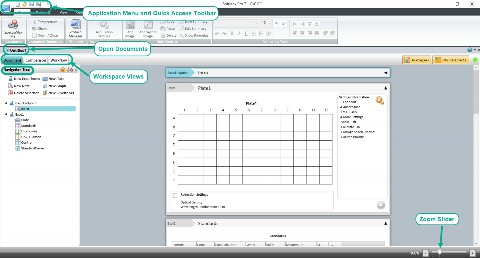
Use the three buttons below the Document tabs to change the Workspace view. Use each Workspace view to manage the open document and experiment results.
 Use the Document view to scroll through the experiment sections.
Use the Document view to scroll through the experiment sections.
 Use the Comparison view to drag sections from the Navigation Tree and arrange them in the Workspace wherever you want.
Use the Comparison view to drag sections from the Navigation Tree and arrange them in the Workspace wherever you want.
 Use the Workflow view to manage complex experiments that include repeated tasks and multitask kinetic reads.
Use the Workflow view to manage complex experiments that include repeated tasks and multitask kinetic reads.
The left side of the Workspace is the Navigation Tree that displays the experiments in the open document. Each document can contain a virtually unlimited number of experiments. Each experiment can contain a virtually unlimited number of Note, Plate, Cuvette Set, Group, and Graph sections.
The Navigation Tree for the Document view and Comparison view displays section controls and a list of the experiment sections. See Workspace Sections on page 68.
After you use the Document view or the Comparison view to define the experiments, the Workflow view contains icons that you drag into the Workspace to define an experiment workflow that can include delays and repeated cycles for more complex experiments.
Drag the slider on the bottom right to zoom the focus of the Workspace in or out.
Document View
Use the Document view scrollable area to view the experiments and sections in the open document. The Document view displays by default. Click the Document button above the Navigation Tree, if needed.
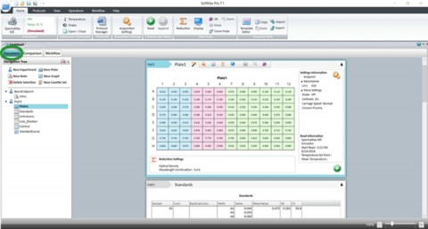
To view a section either click the section in the Navigation Tree or use the scroll bar on the right until the section comes into view.
Comparison View
Use the Comparison view to move the sections to position them where they are most useful. To use the Comparison view, click the Comparison button above the Navigation Tree.
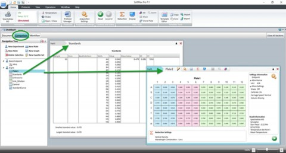
Drag sections from the Navigation Tree into the Workspace. Sections can overlap. Double- click a section to add the section to the bottom of the list of sections in the Workspace.
Workflow View
After you define the experiment in the Document view or the Comparison view, use the Workflow view to drag-and-drop tasks into the Workspace to create a timeline for a multi- task document that can involve several experiments with multiple reads. Define the experiments with all applicable sections from the Document view and then use the Workflow view to create the workflow that uses the experiments and Plate sections to run more complicated assays such as multitask kinetic reads that last hours or days. When you click the Workflow button above the Navigation Tree, the Ribbon automatically displays the Workflow tab. See Defining and Running Workflows on page 102.
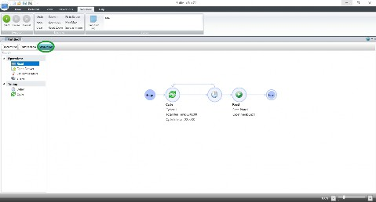
To create a workflow:
 Drag tasks from the menu on the left to the timeline on the right.
Drag tasks from the menu on the left to the timeline on the right.  To define repeated tasks, place the tasks in a Cycle task.
To define repeated tasks, place the tasks in a Cycle task.
 In the Ribbon, Use the Workflow tab to start, pause, resume, and cancel the workflow.
In the Ribbon, Use the Workflow tab to start, pause, resume, and cancel the workflow.
Use the Workspace to manage documents. Each document can contain a virtually unlimited number of experiments. The Navigation Tree displays the experiments and experiment sections in the document.
Experiments
 Experiments are an organizational tool within the document to maintain separate data sets. Each experiment can contain a virtually unlimited number of sections. Use sections to document what the experiment is designed to accomplish, define instrument settings, define analytical formulas, and define the presentation of the data that the software collects.
Experiments are an organizational tool within the document to maintain separate data sets. Each experiment can contain a virtually unlimited number of sections. Use sections to document what the experiment is designed to accomplish, define instrument settings, define analytical formulas, and define the presentation of the data that the software collects.
Sections in Experiments
Each experiment is made up of Note sections, Plate sections, Cuvette Set sections, Group sections, and Graph sections. You can create and edit sections at any point in the data collection process: before you collect data, to adjust how you collect data, and to manage the presentation of the data you collect. Links in the following list take you to the description of the settings for each section. The SoftMax Pro Software - GxP edition allows you to lock each section to restrict changes. See Locking and Unlocking Sections on page 253.
 Note - Use Note sections to enter text and report summary information to the experiment. Note sections can contain text, Summary formulas, images such as your
Note - Use Note sections to enter text and report summary information to the experiment. Note sections can contain text, Summary formulas, images such as your
company logo, and images of the other sections in the document. See Note Sections on page 70.
 Plate - Use Plate sections to define plate settings and instrument settings to collect data from the instrument. Use plate settings you to define the data display and data reduction. Each Plate section can have unique instrument settings to run different types of reads within the experiment. See Plate Sections on page 76.
Plate - Use Plate sections to define plate settings and instrument settings to collect data from the instrument. Use plate settings you to define the data display and data reduction. Each Plate section can have unique instrument settings to run different types of reads within the experiment. See Plate Sections on page 76.
 Cuvette Set - Use Cuvette Set sections to define instrument settings to collect data from a cuvette port. Each Cuvette Set section can have unique instrument settings to run different types of reads. See Cuvette Set Sections on page 80.
Cuvette Set - Use Cuvette Set sections to define instrument settings to collect data from a cuvette port. Each Cuvette Set section can have unique instrument settings to run different types of reads. See Cuvette Set Sections on page 80.
 Group - Use Group sections to combine the data from wells in a plate or several cuvettes into groups. You create Group sections in the Template Editor dialog when you work with Plate sections and Cuvette Set sections. See Group Sections on page 82.
Group - Use Group sections to combine the data from wells in a plate or several cuvettes into groups. You create Group sections in the Template Editor dialog when you work with Plate sections and Cuvette Set sections. See Group Sections on page 82.

 Graph Use Graph sections to define the graphical presentation of the data the software collects as scatter plot graphs or bar graphs. See Graph Sections on page 85.
Graph Use Graph sections to define the graphical presentation of the data the software collects as scatter plot graphs or bar graphs. See Graph Sections on page 85.
Managing Experiments
Use the New Experiment icon in the Navigation Tree to add an experiment to a document. To add an experiment:
In the Navigation Tree, select an experiment that is similar to the one you want to add.
Click  New Experiment.
New Experiment.
A duplicate of the experiment displays below the experiment you select. The software duplicates the sections and settings, but not the data. Drag it to a different location in the hierarchy, if needed.
Right-click the experiment:
 Select Rename to change the name of the experiment. Use the Rename Section dialog to enter a new name for the experiment.
Select Rename to change the name of the experiment. Use the Rename Section dialog to enter a new name for the experiment.
 Select Duplicate to copy the experiment.
Select Duplicate to copy the experiment.
 Select Delete to delete the experiment. The software deletes all sections and all data in the experiment.
Select Delete to delete the experiment. The software deletes all sections and all data in the experiment.
Note Sections
Use Note sections to enter text and data analysis formulas for an experiment. A Note section can contain text, images, and Summary formulas. Summary formulas can be part of a Note section or Group section to generate analysis data, text, or user-entered constants such as certificate values. See Formulas on page 96.
Managing Note Sections
Use the  New Note icon in the Navigation Tree to add a Note section to an experiment. To add a Note section:
New Note icon in the Navigation Tree to add a Note section to an experiment. To add a Note section:
In the Navigation Tree, select the section above where you want to add a Note section.
Click New Note.
A new blank Note section displays below the section you select. Drag it to a different location in the hierarchy, if needed.
Right-click the Note section:
 Select Rename to change the name of the Note section. The Rename Section dialog displays where you to enter a new name for the Note section.
Select Rename to change the name of the Note section. The Rename Section dialog displays where you to enter a new name for the Note section.
 Select Duplicate to copy the Note section.
Select Duplicate to copy the Note section.  Select Delete to delete the Note section.
Select Delete to delete the Note section.

When you select a Note section in the Navigation Tree, the Note section content displays in the Workspace and the section toolbar contains the following icons:

Click to add a formula from the Formula Editor dialog. See Formula Editor on page
98.

Click to add an image from the computer file system. See Managing Images on page
73.

Click to add an image of a section in the experiment. See Managing Section Images

on page 73.

Click to show or hide the formula in a Summary formula frame. Summary Formula Tools on page 72.

Click to refresh the data in a section image.
The Home tab provides:
 Note Controls - Contains the icons described above plus icons to Copy,
Note Controls - Contains the icons described above plus icons to Copy,  Paste, Delete, and
Paste, Delete, and  Edit Summary formulas.
Edit Summary formulas.
 Formatting Tools - Contains icons to manage text in the frames and the placement of frames in the section. See Formatting Text in Section Frames on page 74.
Formatting Tools - Contains icons to manage text in the frames and the placement of frames in the section. See Formatting Text in Section Frames on page 74.
Frames
Everything in a Note section is contained in frames. When you click in the blank area of a Note section in the Workspace, a new frame appears. You can add as many frames as you need. A frame has a header bar and an outline. When you click into a frame to make it active, the frame header bar and outline display. Use Ctrl+click to make multiple frames active within a Note section.
 To enter text, click into a frame and start typing. Use the Home tab Formatting Tools to format the text within the frame.
To enter text, click into a frame and start typing. Use the Home tab Formatting Tools to format the text within the frame.
 To add an image, click into an empty frame and use the icons in the Note section toolbar or on the Home tab.
To add an image, click into an empty frame and use the icons in the Note section toolbar or on the Home tab.
 To resize a frame, hover the cursor over the frame side border to display a two arrow head cursor, then drag the border to change the size.
To resize a frame, hover the cursor over the frame side border to display a two arrow head cursor, then drag the border to change the size.
 To move a frame, hover the cursor over the frame header bar to display a four arrow head cursor, then drag the frame to the new location.
To move a frame, hover the cursor over the frame header bar to display a four arrow head cursor, then drag the frame to the new location.
 To align frames, the Home tab Formatting Tools section and the frame header right-click menu provide the following icons/options (Ctrl+click to multi-select):
To align frames, the Home tab Formatting Tools section and the frame header right-click menu provide the following icons/options (Ctrl+click to multi-select):
 Click to align a single frame to the left edge of the Note section or align the left edges of multiple frames to the left-most frame.
Click to align a single frame to the left edge of the Note section or align the left edges of multiple frames to the left-most frame.
 Click to align a single frame to the right edge of the Note section or align the right edges of multiple frames to the right-most frame.
Click to align a single frame to the right edge of the Note section or align the right edges of multiple frames to the right-most frame.
 Click to align a single frame to the top edge of the Note section or align the top edges of multiple frames to the top-most frame.
Click to align a single frame to the top edge of the Note section or align the top edges of multiple frames to the top-most frame.
 Click to align a single frame to the bottom edge of the Note section or align the bottom edges of multiple frames to the bottom-most frame.
Click to align a single frame to the bottom edge of the Note section or align the bottom edges of multiple frames to the bottom-most frame.
 To copy a frame:
To copy a frame:
 Right-click a frame and select Copy then right-click in a Note section and select Paste.
Right-click a frame and select Copy then right-click in a Note section and select Paste.  Select the frame in the Note section, select the Home tab and click Copy in the Note
Select the frame in the Note section, select the Home tab and click Copy in the Note
Controls then click in a Note section and click Paste on the Home tab.
 To delete a frame:
To delete a frame:
 Right-click on the frame header and select Delete.
Right-click on the frame header and select Delete.
 Select the frame in the Note section, select the Home tab and click Delete in the Note Controls.
Select the frame in the Note section, select the Home tab and click Delete in the Note Controls.
Managing Text
You can manage the text in each frame the same way most text processing software applications allow you to manage text. The Home tab provides Formatting Tools to format text.
Within a frame, select the text to manage:
 Right-click and select Cut to move the text to the clipboard.
Right-click and select Cut to move the text to the clipboard.  Right-click and select Copy to copy the text to the clipboard.
Right-click and select Copy to copy the text to the clipboard.
 Right-click and select Paste to paste the cut or copied text to the new location.
Right-click and select Paste to paste the cut or copied text to the new location.  Press the Delete key to delete the text.
Press the Delete key to delete the text.
Summary Formula Tools
Use formulas to automate data analysis for results reports. Summary formulas typically reduce data to a single value or array. Use the Formula Editor dialog to manage the Summary formulas in Note sections.
For a complete guide to formulas and their use, select the Help tab and click  Formula Reference.
Formula Reference.
 To create a new Summary formula, click
To create a new Summary formula, click  in the Note section toolbar or click New Summary on the Home tab.
in the Note section toolbar or click New Summary on the Home tab.
 To edit a Summary formula, double-click in a frame that contains a formula or click a frame and click Edit Summary on the Home tab.
To edit a Summary formula, double-click in a frame that contains a formula or click a frame and click Edit Summary on the Home tab.
 To copy a Summary formula to the clipboard, click a frame that contains a formula and click
To copy a Summary formula to the clipboard, click a frame that contains a formula and click  Copy on the Home tab.
Copy on the Home tab.
 To paste the Summary formula to a new location, click where you want to paste the formula and click
To paste the Summary formula to a new location, click where you want to paste the formula and click  Paste on the Home tab.
Paste on the Home tab.
 To delete a Summary formula, click a frame that contains a formula (Ctrl+click to multi- select) and click
To delete a Summary formula, click a frame that contains a formula (Ctrl+click to multi- select) and click  Delete on the Home tab.
Delete on the Home tab.
By default, Summary formulas in the Note section display the result of the formula without displaying the actual formula. You can show or hide the formula with the result.
 Click in the section toolbar or click
Click in the section toolbar or click  Show Formulas on the Home tab to display all formulas in the Note section.
Show Formulas on the Home tab to display all formulas in the Note section.
 Click
Click  in the section toolbar or click Hide Formulas on the Home tab to hide all formulas in the section.
in the section toolbar or click Hide Formulas on the Home tab to hide all formulas in the section.
Managing Images
There are two types of images you can insert into a Note section. You can insert an image from your computer file system such as a company logo and you can insert an image of another section in the experiment.
For directions to insert a section image and to refresh the content of a section image, see Managing Section Images on page 73.
To insert an image from your computer file system:
Click in a blank area of the Note section to place the cursor in a new frame where you want to insert the image.

Note: You must place each image in its own frame and the frame cannot contain text.

Either click in the Note section toolbar or select the Home tab and click  Add Image. You can also right-click in a Note section and select Add Image.
Add Image. You can also right-click in a Note section and select Add Image.
In the Open dialog, navigate to and select the image to insert.
Click Open to display the image in the Note section. To delete an image:
 Right-click on the frame header and select Delete.
Right-click on the frame header and select Delete.
 In the Note section, select the frame. In the Ribbon, select the Home tab. In the Note Controls, click Delete.
In the Note section, select the frame. In the Ribbon, select the Home tab. In the Note Controls, click Delete.
Managing Section Images
Use section images to insert a dynamic copy of an entire section into a Note section. As you make changes to the section, the image of that section also updates in the Note section.
To manage section images:
In the Navigation Tree, select a Note section.
Click in a blank area of the Note section to create a new frame.

Note: You must place each image in its own frame and the frame cannot contain text.

Click  in the Note section toolbar or select the Home tab and click Add Section Image. The Add Section Image dialog displays. You can also right-click in the Note section and select Add Section Image.
in the Note section toolbar or select the Home tab and click Add Section Image. The Add Section Image dialog displays. You can also right-click in the Note section and select Add Section Image.
In the list of sections, select the option next to the section to display as an image in the Note section.
Click Add Section Image to display the section image in the Note section.
To delete a section image, select the section image to delete, right-click and select Delete.

Note: When you delete a section from the document, the software also deletes images of the section from the Note sections. When you delete an experiment from the document, the software deletes the images of the sections in the experiment from the remaining Note sections.

Refreshing Section Images
To refresh the section images in a Note section, click in the Note section toolbar. All the section images in the Note section update to their current state.
For example, if you insert an image of a Graph section and then make changes to the graph section, the Graph section image in the Note section refreshes.

Note: Section images automatically refresh when you open the document, scroll up and down, switch between Document and Comparison views, or start to print or print preview the document.

Formatting Text in Section Frames
The Home tab provides Formatting Tools to format the text you select in a text frame in a Note section or a Group section. The Formatting Tools are similar to the format tools in most word processing software applications.
To format text:
In the Navigation Tree, select a Note section or a Group section.
Select the text in the frame that you want to format.
Use the following, as needed:
 Select a font type
Select a font type  Select a font size
Select a font size
 Click to make text subscript.
Click to make text subscript.
 Click to make text superscript.
Click to make text superscript.
 Click to undo the previous action.
Click to undo the previous action.  Click to redo the previous action.
Click to redo the previous action.  Click to make text bold.
Click to make text bold.
 Click to make text italic.
Click to make text italic.  Click to underline text.
Click to underline text.
 Click
Click  to create an unordered bulleted list.
to create an unordered bulleted list.
To add a blank line between lines of bulleted text, click at the end of a line and then press Shift+Enter.
 Click to create an ordered numbered list.
Click to create an ordered numbered list.
To add a blank line between lines of numbered text, click at the end of a line and then press Shift+Enter.
 Click to change the font color.
Click to change the font color.
 Click to align the line to the left edge.
Click to align the line to the left edge.  Click to center the line.
Click to center the line.
 Click to align the text to the right edge.
Click to align the text to the right edge.  Click to left and right justify the text.
Click to left and right justify the text.
 Click to out dent an indented text.
Click to out dent an indented text.  Click to indent the selected text.
Click to indent the selected text.
 Click , , , and to align the frames within the section. See Note Sections on page 70.
Click , , , and to align the frames within the section. See Note Sections on page 70.
Plate Sections
Use Plate sections to define plate related instrument settings, data reduction settings, and data display settings. When you want to read the same physical plate twice with different instrument settings you create two Plate sections in the experiment. You can create as many Plate sections as you need. Use Auto Read to read multiple plate sections. See Using Auto Read on page 180.
Plate sections contain a grid that represents the wells in the plate you select, instrument Settings Information to the right of the grid, and Reduction Settings below the grid. If colors appear in the plate grid, the Plate section contains templates. You assign each group in the template a different color and the Group section table displays the corresponding color.
After a read, Read Information displays below the instrument Settings Information on the right.
Managing Plate Sections
Use the  New Plate icon in the Navigation Tree to add a Plate section to an experiment. To add a Plate section:
New Plate icon in the Navigation Tree to add a Plate section to an experiment. To add a Plate section:
In the Navigation Tree, select the section in the experiment above where you want to add a Plate section.
Click New Plate.
A new blank Plate section displays below the section you select. Drag it to a different location in the hierarchy, if needed.
Right-click the Plate section:
 Select Rename to change the name of the Plate section. Use the Rename Section dialog to enter a new name for the section.
Select Rename to change the name of the Plate section. Use the Rename Section dialog to enter a new name for the section.
 Select Duplicate to copy the Plate section. When you duplicate a Plate section, the new Plate section contains all the settings from the original Plate section, without data.
Select Duplicate to copy the Plate section. When you duplicate a Plate section, the new Plate section contains all the settings from the original Plate section, without data.
 Select Delete to delete the Plate section.
Select Delete to delete the Plate section.
When you select a Plate section in the Navigation Tree, the Plate section settings display in the Workspace and the section toolbar displays the following icons:


Click to display the Plate Setup Helper dialog that contains most of the following icons plus the ability to select a different instrument to do the read. See Plate Setup Helper on page 78.


Click to display the Settings dialog where you configure the acquisition settings such as read mode, read type, wavelengths, plate type, read area, etc. Also displays in the Settings Information area to the right of the grid. See Acquisition Settings on page 109.

Click to display the Template Editor dialog where you assign wells in the plate to groups and create templates and Group sections. See Template Editor on page 87.


Click to display the Data Reduction dialog where you choose data reduction settings for analysis. Also displays in the Reduction Settings area below the grid. See Data Reduction on page 193.

Click to display the Display Options dialog where you choose options for how to display results. See Data Display Options on page 204.

Click to mask wells. See Masking Wells or Cuvettes on page 210.

Click to zoom. See Zooming Well and Cuvette Display on page 210.


Click to display reduced data in a three dimensional graph. See Viewing Data in 3D Graphs on page 236.

Click to start the read after you define all settings for the plate. Icon is located in the Settings Information area to the right of the grid, bottom right corner. See Collecting Data on page 108.
The Home tab provides:
 Plate Tools - Contains the icons described above plus a Clone Plate icon to clone a plate in the Plate section.
Plate Tools - Contains the icons described above plus a Clone Plate icon to clone a plate in the Plate section.
 Template Tools - Contains the Template Editor icon described above plus icons to
Template Tools - Contains the Template Editor icon described above plus icons to  Copy,
Copy,  Paste, Import, and Export template data. See Template Tools on page 89.
Paste, Import, and Export template data. See Template Tools on page 89.
Cloning Plates
Use plate clones to apply multiple templates and reductions to the same set of raw data. You can add as many plate clones as needed to the Plate section. Plate clones display in tabs at the top of the Plate section. The first tab on the left is the original plate. Each plate clone tab displays the original plate name followed by the number of the clone.

To clone a plate:
In the Navigation Tree, select the Plate section that contains the plate to clone.
Select the Home tab and click Clone Plate in the Plate Tools. The Plate section displays the plate clone as a tab next to the original plate name.
Click the tab for the plate clone to make the plate clone active in the section.
To delete a plate clone, click the X in the clone tab.
Copying Plate Data
You can copy plate data from one Plate section to a different Plate section within the same document or between different documents. The format of the source plate data must match the format of the target Plate section. The Clone Plate feature is the most efficient way to copy plate data between Plate sections in the same document.

Note: You can paste only endpoint data and the data is limited to one wavelength.
You can paste endpoint plate data that you copy from an external program, such as a spreadsheet or text editor when the format of the data from the external program exactly matches the format of the target Plate section.

To copy plate data:
In the Navigation Tree, select the source Plate section.
To copy all data from the entire plate, hover the cursor over the plate grid in the Workspace, right-click and select Copy.
In the Navigation Tree, select the destination Plate section.
Hover the cursor over the plate grid in the Workspace, right-click and select Paste Plate Data.
If you paste data from an external program, click Paste Data.
When you paste over existing data, click Yes on the confirmation message.
If the format of the data does not match the format of the target plate, a message displays and data does not paste.
The Read Information on the right indicates that the data was pasted and shows the time and date of the paste.
Plate Section Data Display
Plate section settings depend on the plate type you select and the actual collection of data. After you define the Plate section settings and the instrument reads the plate data, the section displays the results of the read. The precision of the data display depends on the available screen space. The values that display are a representation of the data. The software rounds the last digit that displays based on the actual data value. You can customize the data display to Numeric notation or Scientific notation format and specify the number of significant figures or decimal places. You can set these options separately for raw data and reduced data. See Collecting Data on page 108.
Plate Setup Helper
Use the Plate Setup Helper dialog to setup a plate to acquire data. This dialog is useful when you first learn the software because it walks you through each step to create a Plate section in sequence. However, each icon is duplicated in the Plate section toolbar and/or on the Home tab.
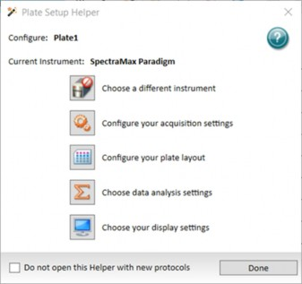
When you first start using the software and you select a Document tab above the Workspace, the Plate Setup Helper appears. You can also access the Plate Setup Helper from the icon in the Plate section toolbar.
The Configure caption displays the name of the plate.
The Current Instrument caption displays the instrument to do the read.

Click to display the Instrument Connection dialog where you select the instrument to do the read. The icon image changes to reflect the instrument you select and the icon displays the connection status between the software and the instrument. After you select the instrument, you can click any of the following icons in any sequence. The following are instrument specific and are reset if you change the instrument. See Selecting an Instrument on page 58.

Click to display the Settings dialog where you define acquisition settings such as read mode, read type, wavelengths, etc. See Acquisition Settings on page 109.

Click to display the Template Editor dialog where you assign wells in the plate to Group sections and to create templates. See Template Editor on page 87.

Click to display the Data Reduction dialog where you define data reduction settings for analysis. See Data Reduction on page 193.

Click to display the Display Options dialog where you define how to display results.
See Data Display Options on page 204.
Select the Do Not Open This Helper With New Protocols check box to prevent the display of the Plate Setup Helper dialog each time you open a new document. The SoftMax Pro Options dialog has a setting to make the dialog display each time if you change your mind. See Application Options on page 45.
Cuvette Set Sections
Use Cuvette Set sections to define cuvette related instrument settings, data reduction settings, and data display settings from instruments that have a cuvette port. You can create as many Cuvette Set sections as you need and each Cuvette Set section can contain up to 96 cuvettes. Cuvettes are read one at a time.
Cuvette Set sections contain a cuvette data display, instrument Settings Information on the right, and Reduction Settings below the data display. The software numbers the cuvettes in a Cuvette Set section as if they were wells in a plate. The first 12 cuvettes are numbers A1 through A12, and then the next cuvette is number B1. This representation matches the software data analysis capabilities. If colors appear in the cuvette data display, the Cuvette Set section contains templates. You assign each group in the template a different color and the Group section table displays the corresponding color. After a read, Read Information displays below the instrument Settings Information on the right.
Managing Cuvette Set Sections
Use the  New Cuvette Set icon in the Navigation Tree to add a Cuvette Set section to an experiment.
New Cuvette Set icon in the Navigation Tree to add a Cuvette Set section to an experiment.
To add a Cuvette Set section:
In the Navigation Tree, select the section in the experiment above where you want to add a Cuvette Set section.
Click  New Cuvette Set.
New Cuvette Set.
A new blank Cuvette Set section displays below the section you select. Drag it to a different location in the hierarchy, if needed.

Note: When you create a Cuvette Set section with an existing Cuvette Set section active in the workspace, the software makes a copy of the active Cuvette Set section and the new Cuvette Set section is a duplicate of the active Cuvette Set section.

Right-click the Cuvette Set section:
 Select Rename to change the name of the Cuvette Set section. Use the Rename Section dialog to enter a new name for the section.
Select Rename to change the name of the Cuvette Set section. Use the Rename Section dialog to enter a new name for the section.
 Select Duplicate to copy the Cuvette Set section.
Select Duplicate to copy the Cuvette Set section.  Select Delete to delete the Cuvette Set section.
Select Delete to delete the Cuvette Set section.
When you select a Cuvette Set section in the Navigation Tree, the Cuvette Set section settings display in the Workspace and the section toolbar contains the following icons:

Also displays in the Settings Information area to the right of the display. Click to display the Settings dialog where you configure the acquisition settings such as read mode, read type, wavelengths, etc. See Acquisition Settings on page 109.

Click to display the Template Editor dialog where you assign cuvettes in the section to groups and to create templates and Group sections. See Template Editor on page 87.


Also displays in the Reduction Settings area below the display. Click to display the Data Reduction dialog where you choose data reduction settings for analysis. See Data Reduction on page 193.

Click to display the Display Options dialog where you choose options for how to display results. See Data Display Options on page 204.

Click to mask wells. See Masking Wells or Cuvettes on page 210.


Click to zoom. See Zooming Well and Cuvette Display on page 210.
The Home tab provides:
 Controls and Status - Contains icons to Read, Append, and Reference read the cuvette you select.
Controls and Status - Contains icons to Read, Append, and Reference read the cuvette you select.
 Cuvette Tools - Contains the icons described above plus icons to New and Delete cuvettes in the Cuvette Set section.
Cuvette Tools - Contains the icons described above plus icons to New and Delete cuvettes in the Cuvette Set section.
 Template Tools - Contains the
Template Tools - Contains the  Template Editor icon described above.
Template Editor icon described above.
Managing Cuvettes in a Cuvette Set Section
Each Cuvette Set section can contain up to 96 cuvettes. You can also use the Template Editor dialog to add cuvettes to a Cuvette Set section.
To manage cuvettes:
In the Navigation Tree, select a Cuvette Set section.
Select the Home tab and click  New in the Cuvette Tools to add a cuvette to the section.
New in the Cuvette Tools to add a cuvette to the section.
Click to select a cuvette or Ctrl+click to multi-select cuvettes.
Click Delete in the Cuvette Tools on the Home tab.
Copying Cuvette Data
You can copy cuvette data from one or more cuvettes in a Cuvette Set section to a cuvette or cuvettes in the same or a different Cuvette Set section. You can copy and paste data within the same document or between documents. Right-click and select Duplicate to copy all the cuvette data from one Cuvette Set section to all the cuvettes in a new Cuvette Set section in the same document.
To copy cuvette data:
In the Navigation Tree, select a Cuvette Set section.
Click a cuvette or Ctrl+click to multi-select cuvettes.
Right-click and select Copy Cuvette Data to copy the data to the clipboard.
Click the cuvette into which to paste the data. If you copy data from multiple cuvettes, click the first cuvette where you want to paste the data. The software pastes cuvette data into consecutive cuvettes.
Example: If you copy data from three cuvettes and then click cuvette A6 to paste the data, the data pastes into cuvettes A6, A7, and A8.
Right-click and select Paste Cuvette Data.
The Read Information on the right indicates that the data was pasted and shows the time and date of the paste.
Cuvette Set Section Data Display
Cuvette Set section settings depend on to the actual collection of data. After you define the Cuvette Set section settings and the instrument reads the cuvette data, the Cuvette Set section displays the results of the read. See Collecting Data on page 108.
Group Sections
Use Group sections to group the wells in a plate or the cuvettes in a Cuvette Set section for data analysis. When you click a Plate section or a Cuvette Set section in the Navigation Tree, use the Template Editor dialog to create Group sections. See Template Editor on page 87.
Group sections contain a table and an area to add frames. Frames can contain text or Summary formulas. See Formulas on page 96.
Each column in the table contains a formula to apply to the data in the column. The table displays reduced numbers from the Plate section or Cuvette Set section in the Values column. You can use the columns in the table as plots in the graphs contained in Graph sections. See Graph Sections on page 85.
For a complete guide to formulas and their use, select the Help tab and click  Formula Reference.
Formula Reference.
Managing Group Sections
You add Group sections from the Template Editor dialog. You access the Template Editor dialog from a Plate Section or from a Cuvette Set section.
To add a Group section:
In the Navigation Tree, select either a Plate section or a Cuvette Set section.
Click  in the section toolbar or on the Home tab to display the Template Editor dialog. See Template Editor on page 87.
in the section toolbar or on the Home tab to display the Template Editor dialog. See Template Editor on page 87.
Select the wells or the cuvettes to group.
On the right side of the Template Editor, click Add in the Groups area to display the Group Settings dialog. See Group Settings on page 92.
Complete the fields in the Group Settings dialog and click OK.
Click OK in the Template Editor dialog to display a new Group section in the Navigation Tree.
Drag the section to a different location in the hierarchy, if needed. Right-click the Group section:
 Select Rename to change the name of the Group section. Use the Rename Section dialog to enter a new name for the Group section.
Select Rename to change the name of the Group section. Use the Rename Section dialog to enter a new name for the Group section.
 Select Duplicate to copy the Group section.
Select Duplicate to copy the Group section.  Select Delete to delete the Group section.
Select Delete to delete the Group section.
When you select a Group section in the Navigation Tree, the Group section settings display in the Workspace and the section toolbar contains the following icons:

Click to add a column.

Click to delete a column.


Click to display the Formula Editor dialog. See Formula Editor on page 98.


Click to show or hide the formula in a Summary formula frame. See Summary Formula Tools on page 84.

Click to show or hide columns in the table.
The Home tab provides:
 Column Tools - Contains icons to manage columns in the table. See below.
Column Tools - Contains icons to manage columns in the table. See below.
 Summary Tools - Contains the icons described above plus icons to
Summary Tools - Contains the icons described above plus icons to  Copy, Paste,
Copy, Paste,  Delete, and
Delete, and  Edit Summary formulas.
Edit Summary formulas.
 Formatting Tools - Contains icons to manage text in the frames and the placement of frames in the section. See Formatting Text in Section Frames on page 74.
Formatting Tools - Contains icons to manage text in the frames and the placement of frames in the section. See Formatting Text in Section Frames on page 74.
Column Tools
Columns can contain references to other columns, either in the current section or in a different section.
Example: To subtract the mean values in one group from those in a different group, create a new column (in either group). If the two groups are named “Group 1” and “Group 2,” and both groups contain a column entitled “Mean,” create a column within “Group 1” that subtracts the mean values in “Group 2” from those in “Group 1.” The column formula would be:
Mean – (Mean@Group2)
Drag and drop columns in the table to change the column sequence. Drag the column header borders to make columns wider or narrower.
Use the Column Tools on the Home tab to manage the column you select in the Group section. Click a column in the table. Some icons allow you to Ctrl+click to multi-select columns. Each icon has a corresponding right-click menu option.

 New - Click to add a column to the right of the column you select. The Formula Editor dialog displays.
New - Click to add a column to the right of the column you select. The Formula Editor dialog displays.

Note: If you plan to reference the formula for this column in a different formula, for example referencing the formula in a column of a group table, do not use reserved characters or names of operators, functions, or accessors in the formula name.

 Copy - Click to copy the column you select to the clipboard.
Copy - Click to copy the column you select to the clipboard.
 Paste - Select the column to the left of where you want to paste the column and click Paste to paste the column to the right of the selected column. If the Paste icon is disabled, there is no applicable content on the clipboard. You must first copy content to the clipboard.
Paste - Select the column to the left of where you want to paste the column and click Paste to paste the column to the right of the selected column. If the Paste icon is disabled, there is no applicable content on the clipboard. You must first copy content to the clipboard.
 Delete - Click to delete the column you select.
Delete - Click to delete the column you select.
 Edit - Click to edit the column you select. The Formula Editor dialog displays.
Edit - Click to edit the column you select. The Formula Editor dialog displays.
 Cut - Click to remove the column you select to the clipboard.
Cut - Click to remove the column you select to the clipboard.
 Auto Size - Click to size the column you select to fit the column content.
Auto Size - Click to size the column you select to fit the column content.
 Show/Hide - Click to display the Show/Hide Group Table Columns dialog. Select the check box for each column to display and clear the check box for each column to hide. Click Show All to select all check boxes. Click Hide All to clear all check boxes.
Show/Hide - Click to display the Show/Hide Group Table Columns dialog. Select the check box for each column to display and clear the check box for each column to hide. Click Show All to select all check boxes. Click Hide All to clear all check boxes.
 Hide Replicates - Click to hide replicates in the table. Click to select the columns to display again.
Hide Replicates - Click to hide replicates in the table. Click to select the columns to display again.
Summary Formula Tools
Use formulas to create data analysis templates that automate the analysis and results for experiments. Use the Formula Editor dialog to add and edit Summary formulas in Group sections. Summary formulas typically reduce data to a single value or array.
For a complete guide to formulas and their use, select the Help tab and click  Formula Reference.
Formula Reference.
 To create a new Summary formula, click
To create a new Summary formula, click  in the section toolbar or click New Summary on the Home tab.
in the section toolbar or click New Summary on the Home tab.
 To edit a Summary formula, double-click in a frame that contains a formula or click a frame and click
To edit a Summary formula, double-click in a frame that contains a formula or click a frame and click  Edit Summary on the Home tab.
Edit Summary on the Home tab.
 To copy a Summary formula to the clipboard, click a frame that contains a formula and click
To copy a Summary formula to the clipboard, click a frame that contains a formula and click  Copy on the Home tab.
Copy on the Home tab.
 To paste the Summary formula to a new location, click where you want to paste the formula and click
To paste the Summary formula to a new location, click where you want to paste the formula and click  Paste on the Home tab.
Paste on the Home tab.
 To delete a Summary formula, click a frame that contains a formula (Ctrl+click to multi- select) and click
To delete a Summary formula, click a frame that contains a formula (Ctrl+click to multi- select) and click  Delete on the Home tab.
Delete on the Home tab.
By default, Summary formulas in the Group section display the result of the formula without displaying the actual formula. You can show or hide the formula with the result.
 Click
Click  in the section toolbar or click
in the section toolbar or click  Show Formulas on the Home tab to display all formulas in the active Group section.
Show Formulas on the Home tab to display all formulas in the active Group section.
 Click
Click  in the section toolbar or click Hide Formulas on the Home tab to hide all formulas in the section.
in the section toolbar or click Hide Formulas on the Home tab to hide all formulas in the section.
You can copy a formula or column from one area of the program to a different area or from one experiment to a different experiment. After you paste a formula you can edit the copy. You can copy and paste formulas in contiguous column formulas as a unit.
Frames
Group sections can contain frames. Group section frames are identical to Note section frames except you cannot enter images in a Group section. See Note Sections on page 70.
Formatting Tools
The Formatting Tools for a Group section are the same as the Formatting Tools for a Notes section.
Graph Sections
Use Graph sections to plot information as a scatter plot graph or a bar graph. You can create custom graphs and you can graph the data from Group section tables. You can use columns in a Group section table as the X or Y input for plots on a graph in a Graph section. The Graph section can use data from any Group section in the document and you can create as many Graph sections as you need.
Graph sections contain either a scatter plot graph or a bar graph. Scatter plot graphs have a legend area and curve fit results. You can define Graph sections at any point in the data collection process but graphs tend to be more relevant for data analysis.
Managing Graph Sections
Use the  New Graph icon in the Navigation Tree to add a Graph section to an experiment. To add a Graph section:
New Graph icon in the Navigation Tree to add a Graph section to an experiment. To add a Graph section:
In the Navigation Tree, select the section in the experiment above where you want to add a Graph section.
Click  New Graph.
New Graph.
Use the Plot Editor dialog to create the graph. See Graphing Data on page 212.
After you click OK in the Plot Editor dialog, a new Graph section displays below the section you select in the Navigation Tree. Drag it to a different location in the hierarchy, if needed.
Right-click the Graph section:
 Select Rename to change the name of the Graph section.
Select Rename to change the name of the Graph section.  Select Duplicate to copy the Graph section.
Select Duplicate to copy the Graph section.
 Select Delete to delete the Graph section.
Select Delete to delete the Graph section.
When you select a Graph section in the Navigation Tree, the Graph section settings display in the Workspace and the section toolbar contains the following icons:

Click to display the Plot Editor dialog to edit the graph.


Click to display the Graph Appearance dialog to label the axes and other display options. See Graph Appearance on page 219.
 Category - Click the drop-down and select a category (scatter plot graphs only).
Category - Click the drop-down and select a category (scatter plot graphs only).

 Fit - Click the drop-down and select a fit (scatter plot graphs only).
Fit - Click the drop-down and select a fit (scatter plot graphs only).

Click to display the Curve Fit Settings dialog to define curve fits. See Curve Fit Settings on page 221.
The Home tab provides:
 Graph Types - Contains icons to switch between a Scatter graph and a Bar graph.
Graph Types - Contains icons to switch between a Scatter graph and a Bar graph.
 Graph Tools - Contains the icons described above plus an
Graph Tools - Contains the icons described above plus an  Export Graph icon to export graph data to an image format file.
Export Graph icon to export graph data to an image format file.
Templates
Templates provide the link between raw data and analysis groups. A template uses a map of the wells in the plate you assign to a Plate section or the cuvettes in a Cuvette Set section to allow you to identify the wells that are blanks, replicates, samples, and groups. Groups appear as Group sections in the Navigation Tree. Template tools provide access to the Template Editor dialog where you create groups and templates. See Template Editor on page 87.
Each template contains samples and groups:
 A set of one or more replicate wells makes up a sample.
A set of one or more replicate wells makes up a sample.  A set of related samples forms a group.
A set of related samples forms a group.
Example: You can have a group named “Standards” that contains seven samples named STD01, STD02, …, STD07, and a group named “Unknowns” that contains five samples named UNK01, UNK02, …, UNK05.
Each sample is applied to a column or some other subset of wells on a plate or to one or more cuvettes. Each well you designate to be part of a group has a group name, a sample name (or replicate ID), a sample descriptor (optional), and a column format for the formula calculations and data reports you define in the corresponding Group section. Samples and groups can exist across multiple Plate sections and Cuvette Set sections.
Template Editor
The Template Editor displays a representation of the plate type or the set of cuvettes as a grid. Use the grid to designate the location of blanks, standards, controls, unknowns, empty wells, or to assign wells/cuvettes to groups that become Group sections in an experiment.
The Template Editor for a Cuvette Set section displays a grid with 96 cells in the column and row format of a 96-well plate. The software numbers the cuvettes in the template as if they were wells in a plate. This representation corresponds with the data analysis capabilities of the software. When you add a group to a Cuvette Set section template, you add cuvettes to the Cuvette Set section.
To import a template file or to export a template to a document for use in future experiments, see Template Tools on page 89.
Each Plate section and Cuvette Set section can have one template. If the section contains a template, the Template Editor displays the existing template when you click  .
.
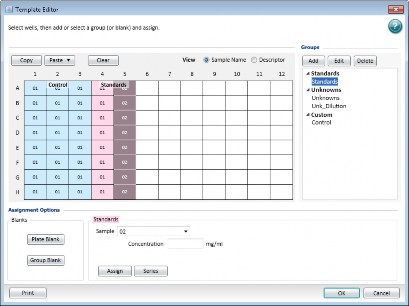
To manage templates:
In the Navigation Tree, select a Plate section or Cuvette Set section.
Click  in the section toolbar, on the Home tab, or in the Plate Setup Helper dialog to display the Template Editor dialog.
in the section toolbar, on the Home tab, or in the Plate Setup Helper dialog to display the Template Editor dialog.
Select a View option:
 Select Sample Name to display the sample name in the wells in the grid.
Select Sample Name to display the sample name in the wells in the grid.  Select Descriptor to display the descriptor information only.
Select Descriptor to display the descriptor information only.
Drag the cursor across the grid to select wells. When you select multiple wells, the selection must be a rectangular group of contiguous wells.
Click one of the following:
 In the Assignment Options area, click Plate Blank (Plate sections) or Blank (Cuvette Set sections) to specify wells/cuvettes as blanks. The software does not add a group in the Groups area. For Kinetic and Spectrum data, the software averages and subtracts the blank value from each point in the read.
In the Assignment Options area, click Plate Blank (Plate sections) or Blank (Cuvette Set sections) to specify wells/cuvettes as blanks. The software does not add a group in the Groups area. For Kinetic and Spectrum data, the software averages and subtracts the blank value from each point in the read.
 In the Groups area, click Add to create a Group section. The Group Settings dialog displays. See Group Settings on page 92.
In the Groups area, click Add to create a Group section. The Group Settings dialog displays. See Group Settings on page 92.
After you complete the fields in the Group Settings dialog, use the Template Editor to do the following for a group.
 Select a group and click Edit to display the Group Settings dialog where you can edit the group settings.
Select a group and click Edit to display the Group Settings dialog where you can edit the group settings.
 Select a group and click Delete to delete the group from the template and to delete the Group section from the Navigation Tree.
Select a group and click Delete to delete the group from the template and to delete the Group section from the Navigation Tree.
 Select a group and click Plate Blank or click Group Blank.
Select a group and click Plate Blank or click Group Blank.
 To specify wells as group blank, select the wells, click Group Blank, and then click Assign. Select the wells or cuvettes to use for the group blank. These should be wells or cuvettes you want to assign to a group, but not the “Blank” group. Select a group from the Group Types list. Click Group Blank and then click Assign
To specify wells as group blank, select the wells, click Group Blank, and then click Assign. Select the wells or cuvettes to use for the group blank. These should be wells or cuvettes you want to assign to a group, but not the “Blank” group. Select a group from the Group Types list. Click Group Blank and then click Assign
 Select a group, select additional wells, and then click Assign to add the wells to the group.
Select a group, select additional wells, and then click Assign to add the wells to the group.
 Select a group, select wells, and then click Series to display the Series dialog where you define a series. See Creating a Series on page 94.
Select a group, select wells, and then click Series to display the Series dialog where you define a series. See Creating a Series on page 94.
 Select wells in one or more groups and click Copy to copy the well assignments to the clipboard. Use this to duplicate well assignments within the current template. You can also paste the same sample names but create new groups. You can copy only contiguous wells in the template. Then click in the well at the corner of the paste area or highlight the paste area and click Paste to display a menu. To copy and paste an entire template to a different experiment section see Template Tools on page 89.
Select wells in one or more groups and click Copy to copy the well assignments to the clipboard. Use this to duplicate well assignments within the current template. You can also paste the same sample names but create new groups. You can copy only contiguous wells in the template. Then click in the well at the corner of the paste area or highlight the paste area and click Paste to display a menu. To copy and paste an entire template to a different experiment section see Template Tools on page 89.
 Select Paste to add the new wells to the current group.
Select Paste to add the new wells to the current group.
 Select Paste With New Group to have the wells create a new group in the Groups list.
Select Paste With New Group to have the wells create a new group in the Groups list.
 Select wells that are in a group and click Clear to remove the wells from the group. If you clear all the wells you assign to a group, the group continues to display in the Groups area and the Group section continues to display in the Navigation Tree.
Select wells that are in a group and click Clear to remove the wells from the group. If you clear all the wells you assign to a group, the group continues to display in the Groups area and the Group section continues to display in the Navigation Tree.
Select a group then click the Sample drop-down and select a sample. In the
Concentration field, enter the concentration.
Click Print to print the Template Editor dialog. You must click OK to save the template before you can print.
Click OK.
Blanks
Use the Template Editor to configure plate blanks (Plate sections), blanks (Cuvette Set sections), and group blanks. You can use blanks in combination and have cumulative effects.
Use plate blanks and blanks when you prepare all samples on the plate in the same way. You can turn off plate blank subtraction in the Data Reduction dialog to review data with or without plate blank subtraction. See Data Reduction on page 193. Use plate blanks to correct reads when you prepare all samples on a plate in the same buffer or matrix, and therefore can use the same correction value. The software subtracts plate blanks from the raw data or after pathlength correction if you use PathCheck® Pathlength Measurement Technology. For Kinetic and Spectrum data, the software averages and subtracts the blank value from each point in the read. For Cuvettes Sets blanks, the software subtracts the average value of all cuvettes in a blank group from individual cuvette reads in the same Cuvette Set section.
Template blanks are subtracted after the cuvette reference read is subtracted.
In a plate blank group the software subtracts the average value of all the wells in the blank group from each individual well value in the plate. If you have an instrument that supports PathCheck Pathlength Measurement Technology, the software subtracts the Plate Blank after pathlength correction.
Group Blanks (Plates and Cuvettes)
Use group blanks to correct reads when you prepare samples on a plate in a different buffer or matrix, and therefore need to be individually corrected. Group blanks can be subtracted from raw data, like plate blank, or after post-reduction calculations, for example, wavelength, kinetic reduction, and so on. You can assign blank wells within a group, other than the “Blank” group.
The software subtracts the group blank when you assign a group blank and you do not have the option to review the uncorrected data. To see the reduced number without the group blank subtracted, you must mask the group blank wells or cuvettes. See Masking Wells or Cuvettes on page 210.
Group blanks apply to all wells or cuvettes in a group and can be subtracted from wells or cuvettes in more than one Plate section or Cuvette Set section.
Template Tools
For a Plate section, use the Home tab Template Tools to copy a template and then paste the template to another Plate section in the document or even to a comparable section in a different document. Both Plate sections must have the same plate type. If the destination Plate section contains a template, Paste overwrites the existing template with the template copy.
To copy a template:

 Copy - Select the source Plate section in the Navigation Tree and click Copy to copy the template from the active Plate section to the clipboard.
Copy - Select the source Plate section in the Navigation Tree and click Copy to copy the template from the active Plate section to the clipboard.

 Paste - Select the destination Plate section in the Navigation Tree and click Paste.
Paste - Select the destination Plate section in the Navigation Tree and click Paste.
 Select Paste to paste only the template settings without the groups.
Select Paste to paste only the template settings without the groups.  Select Paste With New Groups to paste the template and its groups.
Select Paste With New Groups to paste the template and its groups.
When you copy a template from one experiment and paste it into a different experiment, the group names and sample names of the destination template will be identical to those of the source template. Since they are in different experiments, the full name is different.
For example, group@experiment#2 instead of group@experiment#1.
 Changes made to the template in the destination Plate section have no effect on the source Plate section.
Changes made to the template in the destination Plate section have no effect on the source Plate section.
 Data from the two Plate sections are not analyzed together.
Data from the two Plate sections are not analyzed together.
When you copy a template from a Plate section in an experiment to a different Plate section in the same experiment, the destination template is an extension of the source template. All wells in the destination section are considered replicates of the wells in the source section, with the same group and sample names.
 Changes you make to the template in the destination Plate section are also made to the template in the source Plate section.
Changes you make to the template in the destination Plate section are also made to the template in the source Plate section.
 Data from the two Plate sections are analyzed together.
Data from the two Plate sections are analyzed together.
Import and Export
On the Home tab, use the Template Tools to import template information into a Plate section from a tab-delimited ASCII text file in Unicode (UTF-8) format. You can prepare template files outside the SoftMax Pro Software and then import the file when you are ready to run samples.
Tip: To determine the correct format to import a template, export a template from the SoftMax Pro Software and examine the contents of the resulting file.

To import a template:
In the Navigation Tree, select the destination Plate section.
On the Home tab, click Import to display the Open dialog.
Navigate to and select the <template>.txt file to import.
Click Open.
To export a template:
In the Navigation Tree, select the source Plate section.
On the Home tab, click Export to display the Save As dialog.
Navigate to the location where you want to save the template file.
In the File Name field, enter a name for the file.
Click the Save As Type drop-down and select Text files (*.txt) or Excel files (*xls). Text files save in tab delimited format.
Click Save.
Template File Format
When you save template data as a tab delimited ASCII text file in Unicode (UTF-8) format, the template file consists of ten columns of data separated by tabs. Each line of the file provides information for a single well in the plate.
When you export template information, the first line of data contains template information for well A1, the second line of data contains template information for well A2, and so on, until a line is created in the export file for each well in the plate. If no template information exists for a well in a plate, the corresponding line in the file is left blank.
The order of the import template information must match the export order. Blank lines in the file are assigned to a well to provide a well with no template setting.
ASCII Template File Columns and Descriptions
Col | Column Entry | Description |
A | Well Location | In this column, the wells do not need to be in order. |
B | Group Name | Assign in the Group Settings dialog. If this field is missing, the rest of the line is ignored. You can enter a text string in this field. |
C | Group Type | Assign in the Template Editor dialog. Three text strings are supported: Standards, Unknowns, Custom. Blank groups have an Empty column format. If this field is blank, no sample name is assigned to the well, although the sample name is included in the group. |
D | Sample Name | The sample name is set in the Sample field in the Template Editor. If this field is blank, no sample name is assigned to the well, although the sample name is included in the group. |
E | Descriptor1 Name | Assign in the Group Settings dialog. |
F | Descriptor1 Value | Assign in the Group Settings dialog. You can enter a numeric value in this field or it can be blank. |
G | Descriptor1 Units | Assign in the Group Settings dialog. Supported strings are unit/ml, mg/ml, µg/ml*, ng/ml, mg, ng, and ml. If this column is blank, unit/ml is assigned. |
H | Descriptor2 Name | Assign in the Group Settings dialog. |
I | Descriptor2 Value | Assign in the Group Settings dialog. You can enter a numeric value in this field or it can be blank. |
J | Descriptor2 Units | Assign in the Group Settings dialog. Supported strings are unit/ml, mg/ml, µg/ml*, ng/ml, mg, ng, and ml. If this column is blank, unit/ml is assigned. |
* The µ symbol can be imported only if the ASCII text file is saved in Unicode (UTF-8) format.
You can open a tab delimited ASCII file with a spreadsheet program, such as Microsoft Excel.

Note: Do not edit the file in Excel because the SoftMax Pro Software import only supports the format for files you save as an ASCII text file in Unicode (UTF-8) format.
Group Settings
Use the Group Settings dialog to define the name for a group of related samples, a descriptor related to the samples, and the initial column format for the data calculated and reported in a Group section.
Use the Template Editor to assign wells to groups. Some protocols automatically create groups such as Standard or Unknown. When you create a group in the Template Editor dialog, (even if you do not select wells in the template), a Group section is added in the Navigation Tree for the experiment. To delete a group, you must delete the Group section. When you clear a group from the Template Editor, you only remove the assignment of wells from that group name. Clearing a group does not delete the group.
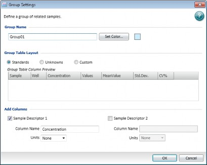
To define group settings:
In the Navigation Tree, select a Plate section or Cuvette Set section.
Click  in the section toolbar, on the Home tab, or in the Plate Setup Helper dialog to display the Template Editor dialog.
in the section toolbar, on the Home tab, or in the Plate Setup Helper dialog to display the Template Editor dialog.
Drag the cursor to select one or more wells. In the Groups area, click Add or select a group and click Edit to display the Group Setting dialog.
In the Group Name field, enter the name to assign to the group.
Click Set Color and select the color to display for the wells in the group.
Select a Group Table Layout option. The Group Table Column Preview shows how the columns will display in the table in the Group section. The Columns and Formulas table on the following page summarizes the formulas associated with each column.
 Select Standards to create a group with the following group table columns: Sample, Well, Concentration, Values, Mean Value, Standard Deviation, and CV%. The Concentration column becomes the Sample Descriptor1 by default under the assumption that the Group section will contain concentration information. You can use this column for numerical data such as dilution factor or fraction number.
Select Standards to create a group with the following group table columns: Sample, Well, Concentration, Values, Mean Value, Standard Deviation, and CV%. The Concentration column becomes the Sample Descriptor1 by default under the assumption that the Group section will contain concentration information. You can use this column for numerical data such as dilution factor or fraction number.
 Select Unknowns to create a group with the following group table columns: Sample, Well, Values, Result, Mean Result, Standard Deviation, and CV%.
Select Unknowns to create a group with the following group table columns: Sample, Well, Values, Result, Mean Result, Standard Deviation, and CV%.

Note: The Unknowns group does not have a sample descriptor by default. You can select the respective check boxes to add one or two sample descriptors and then enter the descriptive information.

 Select Custom to create a group with the following group table columns: Sample, Well, Values, Mean Value, Standard Deviation, and CV%.
Select Custom to create a group with the following group table columns: Sample, Well, Values, Mean Value, Standard Deviation, and CV%.

Note: The Custom group does not have a sample descriptor by default. You can select the respective check boxes to add one or two sample descriptors and then enter the descriptive information.

In the Add Columns area, select the Sample Descriptor1 check box if you want to use the descriptor. When you select the Standards Group Table Layout this is selected by default and the column Name defaults to Concentration.
In the Column Name field, enter the name of the sample descriptor.

Note: If you plan to reference the name of this column in a formula, do not use reserved characters or names of operators, functions, or accessors in the formula name. For information about reserved characters and words, see “Formula Rules” in the SoftMax Pro Data Acquisition and Analysis Software Formula Reference Guide.

Click the Units drop-down and select the unit of measure.
Select the Sample Descriptor2 check box to add a second sample descriptor column to the table.

Note: The Sample Descriptor you assign in the Group settings dialog yields group table columns that you cannot edit. To create editable sample descriptor columns, add new columns and enter a formula such as: !Sampledescriptor,
!factor, !concentration.
Click OK to close the Group Settings dialog. The software places the wells you select in the new group.
Click Series to display the Series dialog where you define a series for the wells you select.
Click OK to close the Template Editor and apply the template.
Group Table Layout - Default Columns
The Group Table Layout you select defines which columns are in the Group section table. The following lists the default column names and each column's formula for the Standard, Unknown, or Custom Group Table Layouts.
Columns and Formulas
Column Name | Formula | Standard | Unknown | Custom |
Sample | !SampleNames |
|
|
|
Wells | !WelllDs |
|
|
|
Concentration | !Concentration |
| ||
Values | !WellValues |
|
|
|
MeanValue | Average(Values) |
|
| |
Std.Dev. | Stdev(!WellValues) |
|
| |
CV% | Cv(!WellValues) |
| ||
Result | InterpX(STD@ StandardCurve, Values) |
| ||
MeanResult | Average(Result) |
| ||
Std.Dev. | Stdev(Result) | |||
CV% | Cv(Result) |
|
Creating a Series
Use the Series dialog to define several samples as a series. Use a series to enter incremental sample descriptors (e.g., dilutions or concentrations) and sample names to a template when the increment can be expressed as a mathematical operation. When you work with groups of wells in the template, the standard value or dilution factor increases or decreases in specific steps. The series name can also increment.
A series is defined in one direction (starting from left, right, top, or bottom) and therefore you must configure samples sequentially in either ascending or descending order.
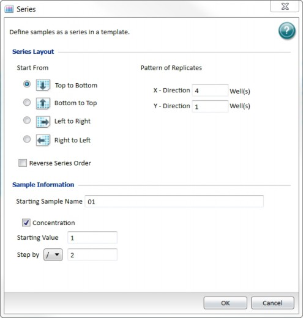
To create a series:
In the Navigation Tree, select a Plate section or Cuvette Set section.
Click  in the section toolbar, on the Home tab, or in the Plate Setup Helper dialog to display the Template Editor dialog.
in the section toolbar, on the Home tab, or in the Plate Setup Helper dialog to display the Template Editor dialog.
In the Template Editor dialog, click and drag the mouse to select wells to be part of the series.
In the Groups area, select a group name.
Click Series to display the Series dialog.
In the Series Layout area select a Start From option for how the series fills the wells.
In Patterns of Replicates area, enter the number of replicates in the X-Direction field and enter the number of replicates in the Y-Direction field.
The maximum number of replicates depends on the well selection. For example, if you fill down from the top and you choose a block of wells that is 4 wells wide by 8 wells high, the maximum number of replicates is four. With the same block of wells selected, filling from the left would permit eight replicates. If the number of replicates you choose does not divide evenly into the number of rows or columns you select, depending on the filling direction, the remaining wells that cannot contain replicates are labeled as more individual wells in the series. To create a series that includes all the wells in the plate, select all the wells, select the fill direction, and then set the replicates to 1.
Select the Reverse Series Order check box to reverse the order of the series.
In the Sample Information area, in the Starting Sample Name field, enter the name of the first sample in the series. Subsequent replicates use this name as a base and either increment the number within the name or append a number to it.
Select the Concentration check box to increment the sample name and the concentration. Leave this check box clear to increment only the names of a series of samples without incrementing the concentration or dilution. If you select this check box, the following two fields are available:
In the Starting Value field, enter a value for the descriptor if a you define a sample descriptor for the group.
Click the Step By drop-down and select the operator for the series (+, -, *, or /) and then enter a value for the increment. For example, with a starting value of 0.5, the division operator (/) and the increment 2, the series starts with 0.5 and divides each subsequent sample by 2 to produce the series 0.5, 0.25, 0.125, and so on.

Note: To increment the names of a series of samples with a constant concentration or dilution, click the Step By drop-down and select the multiplication operator (*) and then enter a value of 1 for the increment.

Click OK.
Formulas
Formulas are powerful data analysis tools that can automate the analysis and results reporting for plate reads. Formulas are mathematical functions you create with operators and accessors to convert and analyze raw data for presentation in the appropriate output format. See Formula Editor on page 98.
The software includes many formulas to expedite data analysis. The formulas in the software use a hierarchical naming structure, much like the directories and sub directories in computer file systems. All objects (for example, columns, Summaries, wells, graphs, plots) in the SoftMax Pro Software have names. You use these names to refer to the objects when you write formulas.
The SoftMax Pro Data Acquisition and Analysis Software Formula Reference Guide identifies and enumerates the details about formulas, operators, functions, and accessors that you can use. Select the Help tab and click  Formula Reference.
Formula Reference.
 You can use Summary formulas in Group sections and Note sections to reduce data to a single value or array.
You can use Summary formulas in Group sections and Note sections to reduce data to a single value or array.
 You can use Reduction formulas in Plate sections and Cuvette Set sections to apply a formula to the entire section.
You can use Reduction formulas in Plate sections and Cuvette Set sections to apply a formula to the entire section.
 You can use Column formulas in Group sections to apply a formula to each column in the section.
You can use Column formulas in Group sections to apply a formula to each column in the section.
 You can assign formulas to the X and Y axes in a Graph section.
You can assign formulas to the X and Y axes in a Graph section.
Operators
Use operators to combine other formula building blocks together. Operators let you combine and compare numbers, functions, accessors, and text strings in a variety of ways within formulas. Most operators are mathematical symbols, e.g. +, -, *, /, <. > etc. Boolean operators have text, e.g. If, And, Or, Not.
Functions
In contrast to operators, functions have names and accept up to four parameters. They do operations such as standard deviation or slope. You can input zero to four parameters into functions. You can use lists of numbers, arrays of numbers, and lists of text strings as input parameters, and the function can return either lists or arrays of numbers or text. Functions return numbers, text, or Booleans.
The general format for a function is:
FunctionName(Parameter1, Parameter2, Parameter3, Parameter4)
If a function has more than one parameter, the order in which you list parameters is extremely important. If you enter the parameters in the incorrect order, the function returns erroneous results.
Accessors
Accessors are special functions that provide access to other specific information in the software. For example, the number of Vmax Points used to calculate the Vmax Rate. Accessors are frequently used by themselves as column formulas. They are also used as parameters within several functions, most notably kinetic and spectrum reduction functions. Accessors can be combined with functions and mathematical operators to create complex formulas.
Unlike functions, accessors do not have related parameters. Accessors are always preceded by an exclamation point (!, also known as a “bang”).
Formula Rules
The following is a very high level summary of formula rules:
 Formulas are not case sensitive.
Formulas are not case sensitive.
 If an object’s name contains a space, starts with a number, or includes one or more of the following special characters: # $ % / * ?, the name must be enclosed in single quotation marks. For example, ‘OD Values’. Do not use ^ @ ~ or & in object names because these characters have special meanings in the software.
If an object’s name contains a space, starts with a number, or includes one or more of the following special characters: # $ % / * ?, the name must be enclosed in single quotation marks. For example, ‘OD Values’. Do not use ^ @ ~ or & in object names because these characters have special meanings in the software.
 When create you a formula that references columns in more than one Group section, make sure the Group sections all have the same number of rows (samples).
When create you a formula that references columns in more than one Group section, make sure the Group sections all have the same number of rows (samples).
 Column formulas must evaluate either to text, to numbers, or to a Boolean (for example, to True or False) because a column cannot contain text (“Pass”) and numeric (“1.002”) results.
Column formulas must evaluate either to text, to numbers, or to a Boolean (for example, to True or False) because a column cannot contain text (“Pass”) and numeric (“1.002”) results.
 When a formula includes a text result that you want to display, the result must be enclosed in double quotation marks, for example, “Out of Range”.
When a formula includes a text result that you want to display, the result must be enclosed in double quotation marks, for example, “Out of Range”.
Formula Editor
Use the Formula Editor dialog to create formulas that convert and analyze raw data for presentation in the appropriate output format. Use formulas to create powerful data analysis templates that can automate the analysis and results reporting for experiments.
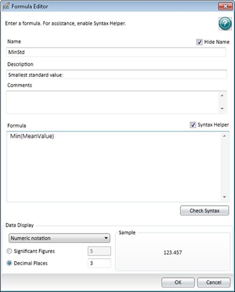
There are several types of formulas:
 You can use Summary formulas in Group sections and Note sections to reduce data to a single value or array.
You can use Summary formulas in Group sections and Note sections to reduce data to a single value or array.
 You can use Reduction formulas in Plate sections and Cuvette Set sections to apply a formula to the entire section.
You can use Reduction formulas in Plate sections and Cuvette Set sections to apply a formula to the entire section.
 You can use Column formulas in Group sections to apply a formula to each column in the section.
You can use Column formulas in Group sections to apply a formula to each column in the section.
 You can assign formulas to the X and Y axes in a Graph section. The Formula Editor dialog varies based on how you access the dialog.
You can assign formulas to the X and Y axes in a Graph section. The Formula Editor dialog varies based on how you access the dialog.
To create formulas:
There are several ways to access the Formula Editor.
 In the Navigation Tree, select a Note Section or a Group section. In the section toolbar click
In the Navigation Tree, select a Note Section or a Group section. In the section toolbar click  , on the Home tab click
, on the Home tab click  New Summary, or select a formula in a section and click Edit Summary. This is a Summary formula.
New Summary, or select a formula in a section and click Edit Summary. This is a Summary formula.
 In the Navigation Tree, select a Plate section or a Cuvette Set section. Click in the section toolbar, the Reduction Settings area, or on the Home tab. In the Data Reduction dialog select Custom from a drop-down and click . This is a Reduction formula. See Data Reduction on page 193.
In the Navigation Tree, select a Plate section or a Cuvette Set section. Click in the section toolbar, the Reduction Settings area, or on the Home tab. In the Data Reduction dialog select Custom from a drop-down and click . This is a Reduction formula. See Data Reduction on page 193.
 In the Navigation Tree, select a Group section. In the section toolbar click , double-click a column header, or on the Home tab click
In the Navigation Tree, select a Group section. In the section toolbar click , double-click a column header, or on the Home tab click  New or click Edit in the Column Tools. This is a Column formula.
New or click Edit in the Column Tools. This is a Column formula.
 In the Navigation Tree, select a Graph section or in the Navigation Tree click
In the Navigation Tree, select a Graph section or in the Navigation Tree click  New Graph. In the section toolbar click
New Graph. In the section toolbar click  or on the Home tab click Plot Editor. In the Plot Editor dialog in the Data Input area, click the X-Axis or Y-Axis drop-down and select Custom and then click .
or on the Home tab click Plot Editor. In the Plot Editor dialog in the Data Input area, click the X-Axis or Y-Axis drop-down and select Custom and then click .

Note: The following steps describe the flow for Summary formulas. The Formula Editor has fewer fields for other formula types but the workflow for the Formula field is the same for all formulas.

In the Name field, enter the formula name. You can display the name and/or description in the Note/Group section. To not display the formula name in the section, select the Hide Name check box.

Note: If you plan to reference this formula in a different formula, for example referencing the formula in a column of a group table, do not use reserved characters or names of operators, functions, or accessors in the formula name. For information about reserved characters and words, see “Formula Rules” in the SoftMax Pro Data Acquisition and Analysis Software Formula Reference Guide.

In the Description field, enter a description of the formula. This displays in the section and can be left blank.
In the Comments field, enter a comment to annotate the formula. This displays only in the Formula Editor dialog.
Select the Syntax Helper check box to display the Syntax Helper formula completion tool. The Syntax Helper displays the formulas that are available and the parameters each formula expects to receive.
Tip: When you start to enter a formula, a list displays below the text as you type. The Syntax Helper analyzes text as you type and compares it to formulas that are available for use in the software.

In the Formula field, enter the formula.
Click Check Syntax to check the validity of the formula. A message displays to help you troubleshoot the formula syntax.
Click the Data Display drop-down.
 Select Numeric Notation to display the full numeric value in the result.
Select Numeric Notation to display the full numeric value in the result.
 Select Scientific Notation to display a concatenated numeric value in the results.
Select Scientific Notation to display a concatenated numeric value in the results.
A preview of the Data Display displays in the Sample area on the right when you select one of the following:
 Select Significant Figures and enter the number of figures to display.
Select Significant Figures and enter the number of figures to display.
 Select Decimal Places and enter the number of decimal places to display.
Select Decimal Places and enter the number of decimal places to display.
Click OK.
Use workflows to define complex reads such as multitask kinetic reads that last hours or days. Use the Workflow view of the Workspace to drag-and-drop tasks into a timeline. The Workflow tab in the Ribbon contains the icons to execute and monitor the workflow.
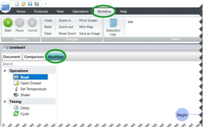
Pause a workflow to work with other features in the software, such as define protocols or run short reads, while the software waits to do the next non-timing task in the workflow. When you pause a workflow, all delays and cycle timings continue to run. When the workflow reaches a non-timing task, such as a read, the task starts after you resume the workflow. If you resume the workflow after the scheduled time for a task to start, then the task starts when you resume the workflow and all subsequent tasks are rescheduled to a later time.
For example, if a delay before a read is set for 30 minutes and you resume the workflow after 40 minutes, then the read starts when you resume the workflow and all subsequent tasks are rescheduled to start 10 minutes later than their original times.
To define and run a workflow:
Open a document in the Workspace.
Select the Document view of the Workspace and create the experiments with the applicable sections. You can define the acquisition settings for each Plate section from the Workflow view.
Select the Workflow view of the Workspace. The Ribbon automatically displays the Workflow tab.
Drag tasks from the Navigation Tree on the left into the timeline on the right.
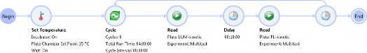
 To repeat Kinetic tasks, place the tasks to repeat in a Cycle task.
To repeat Kinetic tasks, place the tasks to repeat in a Cycle task.
 To gather data over long periods of time, use a Kinetic read type and then define the Timing settings to acquire a single point with each read. See Timing Settings on page 123.
To gather data over long periods of time, use a Kinetic read type and then define the Timing settings to acquire a single point with each read. See Timing Settings on page 123.

Note: Place only Kinetic reads within a cycle. If you place other read types in a cycle, the software overwrites the previously acquired data in the Plate section. You can place an Endpoint, Well Scan, Spectrum, or Flex read before or after a cycle to preserve the acquired data.

Click  to edit the task settings. See Workflow Task Settings on page 104.
to edit the task settings. See Workflow Task Settings on page 104.
Click to remove the task from the timeline, if needed.
In the Ribbon, on the Workflow tab, use the Designer buttons to manage the creation of the workflow.
 Click Undo to undo the most recent change you made to the timeline.
Click Undo to undo the most recent change you made to the timeline.  Click Redo to redo an action.
Click Redo to redo an action.
 Click Clear to clear the timeline and start over.
Click Clear to clear the timeline and start over.
 Click Zoom In to zoom in to the Workflow view similar to using the slider on the bottom right.
Click Zoom In to zoom in to the Workflow view similar to using the slider on the bottom right.
 Click Zoom Out to zoom out of the Workflow view.
Click Zoom Out to zoom out of the Workflow view.
 Click Reset Zoom to set the zoom to the default setting.
Click Reset Zoom to set the zoom to the default setting.
 Click Fit To Screen to set the view so that the workflow fits on the screen without scroll bars.
Click Fit To Screen to set the view so that the workflow fits on the screen without scroll bars.
 Click Mini Map to display the Overview dialog that helps you navigate a long timeline.
Click Mini Map to display the Overview dialog that helps you navigate a long timeline.
 Click Save As Image to export an image of the timeline to an image file with the .jpg,
Click Save As Image to export an image of the timeline to an image file with the .jpg,
.png, .gif, or .xps format.
Save the document before you start a read.
Insert the plate in the instrument.
In the Ribbon, on the Workflow tab, use the Execution buttons to execute the workflow.  Click Start to run the workflow.
Click Start to run the workflow.
 Click Pause to temporarily stop the workflow.
Click Pause to temporarily stop the workflow.  Click Resume to restart the paused workflow.
Click Resume to restart the paused workflow.  Click Cancel to cancel the workflow.
Click Cancel to cancel the workflow.
Click Execution Log to view the status of the tasks that were executed including the time, step name, and related messages
Workflow Task Settings
Each task in the workflow allows you to define settings that are applicable for that task.
Select a task in the timeline.
Click  to edit the settings for that task.
to edit the settings for that task.
Read Task Settings
Use the read task settings to select the experiment and Plate section you define from the Document view of the Workspace.
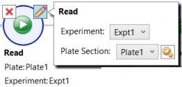
To define read task settings:
Click the Experiment drop-down and select the experiment that contains the Plate section to read.
Click the Plate Section drop-down and select a Plate section.
The read uses the acquisition settings you define for the Plate section. To edit the acquisition settings, click . See Acquisition Settings on page 109.
Tip: If you place a Kinetic read task in a Cycle for the SpectraMax iD3, SpectraMax iD5, SpectraMax i3x, SpectraMax Paradigm, FilterMax F3, and FilterMax F5, clear the Show Pre-Read Optimization Options check box. Pre-Read optimization requires user interaction. If you select this check box, the software waits for user interaction before each read. See Show Pre-Read Optimization Options on page 143.

Open Drawer Task Settings
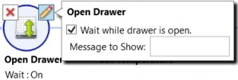
To define drawer task settings:
Select the Wait While Drawer is Open check box to pause the workflow until the drawer is closed. Leave the check box clear if you require the workflow to continue to the next task with the drawer open.
In the Message to Show field, enter the message to display when the drawer opens or enter instructions for the operator.
Set Temperature Task Settings

To define set temperature settings:
Select On and in the Plate Chamber Set Point field, enter the temperature to turn on the read chamber incubator, or select Off to turn off temperature control.
Select the Wait While the Temperature Changes check box to pause the workflow until the read chamber reaches the set point. Leave the check box clear if you require the workflow to continue to the next task before the chamber reaches its set point.
Shake Task Settings
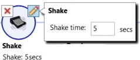
To define shake task settings:
 In the Shake time field, enter the number of seconds to shake the plate.
In the Shake time field, enter the number of seconds to shake the plate.
Delay Task Settings
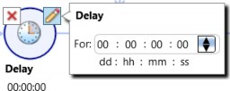
To define delay task settings:

Note: The Delay task continues even when you pause the workflow.
 Enter values for the delay in Days:Hours:Minutes:Seconds, or click a value and use the arrows on the right.
Enter values for the delay in Days:Hours:Minutes:Seconds, or click a value and use the arrows on the right.

Cycle Task Settings
The number of cycles is calculated based on how many Cycle Intervals can be completed within the Total Run Time.
When you define the timing for a cycle, make sure that the tasks in the cycle finish within the time you allot. The workflow editor does not calculate the time it takes to do a read. If the read takes longer than the time you allot for the cycle, then the next cycle begins immediately after the cycle tasks complete.
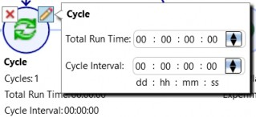
To define cycle task settings:
To include a task in the cycle, drag the task between the start and end points of the cycle task.
In the Total Run Time field, enter values in Days:Hours:Minutes:Seconds to define the total time for all the cycles to complete.
In the Cycle Interval field, enter values in Days:Hours:Minutes:Seconds to define the time from the start of one cycle to the start of the next cycle.


Note: The cycle interval continues even when you pause the workflow.

Data collection depends upon the settings you define for each Plate section and each Cuvette Set section in the document.

Note: When you do not physically connect the computer to an instrument, you can select Offline or Simulator On to create documents for later use. Document settings are specific to the instrument that you select. If you change instruments, some settings may be reset to the default protocol settings.

Instrument Settings
Use the Settings dialog to configure the settings for the instrument to use to read each Plate section and Cuvette Set section. Settings include the read mode, the read type, wavelengths, plate type, wells to read, PathCheck technology, optics settings, shake parameters, timing for Kinetic runs, speed read, and more.
To access the Settings dialog:
In the Navigation Tree, select a Plate section or Cuvette Set section.
Click  in the section toolbar, the Settings Information area, or on the Home tab to display the Settings dialog.
in the section toolbar, the Settings Information area, or on the Home tab to display the Settings dialog.
Standard View
Use the Settings dialog, for all instruments, to select a read mode and a read type. The settings that determine how the instrument is to read the plate or cuvette are then grouped into categories along the left side of the dialog. This is known as the Standard view of the Settings dialog. See Acquisition Settings on page 109.
You must use the Standard view to define the settings for Imaging reads and ScanLater Western Blot reads.

CAUTION! If you define an Imaging read or a ScanLater Western Blot read in the Standard view and then switch to the Acquisition view, your settings are not saved.

Acquisition View
The Settings dialog for the SpectraMax i3, SpectraMax i3x, SpectraMax iD3, and SpectraMax iD5 provides an Acquisition view to configure plate reads.
The Acquisition view uses an acquisition plan with tools that allow you to define settings in a workflow design when you need to do multi-step plate reads. See Acquisition View and Reads With Injectors on page 154.
To switch between the Standard view and the Acquisition view:
 Click in the lower-left corner in the Settings dialog.
Click in the lower-left corner in the Settings dialog.
CAUTION! You must use the Acquisition view to define reads with injection. If you define a read with injection and then switch to the Standard view, your settings are not saved.

Use the Settings dialog to configure the following parameters for a Plate section or Cuvette Set section: read type, read mode, wavelengths, plate type, wells to read, PathCheck technology, optics, shake, timing for Kinetic runs, speed read, and more.
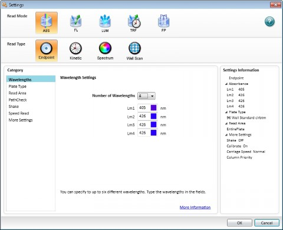
Each Plate section or Cuvette Set section in a document must use the same instrument but can have different parameters for the acquisition settings.
To define acquisition settings:
In the Navigation Tree, select a Plate section or Cuvette Set section.
Click  in the section toolbar, in the Settings Information area, or on the Home tab to display the Settings dialog.
in the section toolbar, in the Settings Information area, or on the Home tab to display the Settings dialog.
For the SpectraMax Paradigm, SpectraMax i3, and SpectraMax i3x, select the detection cartridge or optical configuration to use. This determines the available read modes. See Selecting a Detection Cartridge or Optical Configuration on page 111.
For all instruments, select a read mode. This determines the available read types.  Absorbance Read Mode on page 278
Absorbance Read Mode on page 278
 Fluorescence Intensity Read Mode on page 284
Fluorescence Intensity Read Mode on page 284
 Luminescence Read Mode on page 289 (Luminescence Dual Wavelength is available for the SpectraMax L and SpectraMax iD5)
Luminescence Read Mode on page 289 (Luminescence Dual Wavelength is available for the SpectraMax L and SpectraMax iD5)
 Time-Resolved Fluorescence Read Mode on page 293
Time-Resolved Fluorescence Read Mode on page 293  FRET Read Mode on page 298
FRET Read Mode on page 298
 Fluorescence Polarization Read Mode on page 303
Fluorescence Polarization Read Mode on page 303  AlphaScreen Read Mode on page 306
AlphaScreen Read Mode on page 306
 ScanLater Western Blot TRF Read Mode on page 309
ScanLater Western Blot TRF Read Mode on page 309  Imaging Read Mode on page 312
Imaging Read Mode on page 312
Select a read type. This determines which setting categories appear in the Category list.  Endpoint Read Type on page 275
Endpoint Read Type on page 275
 Spectrum Read Type on page 276
Spectrum Read Type on page 276  Well Scan Read Type on page 276
Well Scan Read Type on page 276  Flex Read Type on page 277
Flex Read Type on page 277
 Membrane Read Type on page 277
Membrane Read Type on page 277
Select each category in the list on the left to display the corresponding settings. The options that display depend on the instrument, read mode, and read type you select.
 Wavelength Settings on page 113
Wavelength Settings on page 113  Plate Type Settings on page 115
Plate Type Settings on page 115
 Read Area Settings on page 119
Read Area Settings on page 119
 PathCheck Technology Settings on page 120
PathCheck Technology Settings on page 120  TRF Settings on page 121
TRF Settings on page 121
 PMT and Optics Settings on page 121
PMT and Optics Settings on page 121  Timing Settings on page 123
Timing Settings on page 123
 Well Scan Settings on page 124
Well Scan Settings on page 124  Shake Settings on page 124
Shake Settings on page 124
 Speed Read Settings on page 125
Speed Read Settings on page 125  Well Area Settings on page 126
Well Area Settings on page 126
 Image Acquisition Settings on page 126
Image Acquisition Settings on page 126  Image Analysis Settings on page 128
Image Analysis Settings on page 128
 Region of Interest Settings on page 140
Region of Interest Settings on page 140  More Settings on page 141
More Settings on page 141
 Compound Transfer Settings on page 145
Compound Transfer Settings on page 145  Compound Source Settings on page 148
Compound Source Settings on page 148  Pipette Tips Layout Settings on page 149
Pipette Tips Layout Settings on page 149
 Compound and Tips Columns Settings on page 150
Compound and Tips Columns Settings on page 150  Triturate Settings on page 153
Triturate Settings on page 153
After you define the instrument settings, click OK to close the Settings dialog.

Note: You should save the document before you start a read. For Imaging reads and Western Blot reads, you must save the document before you start the read.

Selecting a Detection Cartridge or Optical Configuration
When the instrument uses detection cartridges or another optional optical configuration, the Settings dialog displays the available options above the read modes. Each detection cartridge contains the light source, optics, and electrical components needed to do specific read modes for some applications. See Supported Detection Cartridges on page 343.
 The SpectraMax Paradigm requires detection cartridges to do reads.
The SpectraMax Paradigm requires detection cartridges to do reads.
 The SpectraMax i3x supports user-installable detection cartridges to expand its read capabilities. Cartridges are for top reads only.
The SpectraMax i3x supports user-installable detection cartridges to expand its read capabilities. Cartridges are for top reads only.

Note: When you select to work offline in Simulator mode, the Settings dialog displays all detection cartridges that the instrument supports.
When you connect the computer to an instrument, the Settings dialog displays the detection cartridges that you install in the instrument.

For the SpectraMax i3x:
 Select Monochromator to use the instrument monochromator.
Select Monochromator to use the instrument monochromator.
 Select MiniMax for imaging reads that use the SpectraMax MiniMax 300 Imaging Cytometer. For transmitted light imaging, you need to install the Transmitted Light (TL) Detection Cartridge, but you do not need to select it in the Settings dialog.
Select MiniMax for imaging reads that use the SpectraMax MiniMax 300 Imaging Cytometer. For transmitted light imaging, you need to install the Transmitted Light (TL) Detection Cartridge, but you do not need to select it in the Settings dialog.
After you select the detection cartridge or optical configuration, select the read mode and read type for the protocol.
Use the Temperature Control dialog to set the temperature in the plate chamber when you use an instrument that provides temperature control. The instrument monitors the temperature of the air inside the plate chamber and the software displays the air temperature of the chamber on the Home tab. The temperature display continuously updates with the current air temperature in the chamber.
For instruments with a cuvette chamber, the instrument control panel displays the temperature within the cuvette chamber. The plate chamber temperature can be different from what displays on the instrument control panel. The software plate chamber temperature display should be similar to the control panel temperature display after both chambers reach equilibrium. During warm-up, you might notice a discrepancy in temperatures, which is normal.
You can set the temperature 2°C or more above the current air temperature in the chamber. After you turn on the temperature control, the chamber can take from 10 to 30 minutes to reach the set temperature, depending on the difference between the start temperature and the set temperature.

Note: The instrument temperature sensors detect the temperature of the air inside the chamber, not the temperature of the samples in the plate. If you use the instrument to warm the samples, you should use a seal or lid on the plate to prevent evaporation of the sample. A seal or lid helps to maintain uniform temperature.
Letting the prepared sample equilibrate inside the plate chamber can take an hour or more. You can speed up equilibration by pre-warming the sample and the assay reagents before you place the plate in the chamber. Validate the data quality to determine whether the seal or lid can stay on the plate for the read.

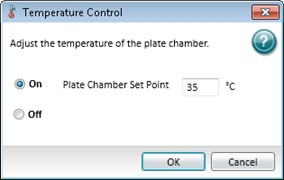
To set the temperature in the plate chamber:
Select the Home tab and click Temperature to display the Temperature Control dialog.
Select the On option.
In the Plate Chamber Set Point field, enter the temperature in degrees Celsius.
Click OK.
After you turn off the temperature control, open the plate drawer to help the plate chamber cool to the ambient temperature.
Use the Wavelengths category in the Settings dialog to define wavelength settings. These settings are dependent on the instrument, read mode, and read type you select.
Some instruments allow you to choose to use all wavelengths for the read or to specify specific bandwidths. Select the spectral bandwidth of the wavelength. The instrument uses the bandwidth you select for all the wavelengths in a multiple wavelength read.
The user guide for each instrument describes the instrument's bandwidth range and how to optimize excitation and emission wavelengths for a protocol. See the instrument user guide.
Fluorescence Intensity Read Mode
To define wavelengths for the Fluorescence Intensity read mode:
Click the Number of Wavelength Pairs drop-down and select the number of wavelength pairs.
In the Excitation fields, enter the excitation wavelengths.
In the Emission fields, enter the emission wavelengths.
Endpoint, Kinetic, Well Scan, and Flex Read Types
To define wavelengths for the Endpoint, Kinetic, Well Scan, and Flex read types:
Click the Number of Wavelengths drop-down and select the number of wavelengths to read.
For each wavelength, enter or select the wavelength value for the read.
Spectrum Read Type
To define wavelengths for the Spectrum read type:
In the Start field, enter the starting wavelength.
In the Stop field, enter the ending wavelength.
In the Step field, enter the value for how much the wavelength should increment between reads. The minimum step increment is 1 nm.
Cutoffs
The Gemini™ XPS, Gemini™ EM, and SpectraMax M series instruments support cutoff filters. The term cutoff refers to the longpass filters the instrument uses to block unwanted residual excitation light and minimize background interference.
The cutoff settings depend on the read mode (Fluorescence, Fluorescence Polarization, or Time Resolved Fluorescence) and the read type (Endpoint, Kinetic, Spectrum, or Well Scan). The Luminescence read mode does not use emission cutoff filters.
To define the cutoff filters:
 Select the Auto Cutoff check box to have the software choose the longpass emission filter based on the excitation wavelength you enter.
Select the Auto Cutoff check box to have the software choose the longpass emission filter based on the excitation wavelength you enter.
 Clear the Auto Cutoff check box, then click the drop-down and select the cutoff filter for each wavelength. For the Spectrum read type you must select a cutoff filter (or None).
Clear the Auto Cutoff check box, then click the drop-down and select the cutoff filter for each wavelength. For the Spectrum read type you must select a cutoff filter (or None).
When you clear the Auto Cutoff check box, to determine the manual setting for a cutoff filter, you need to know the value of the Stokes shift, which is the difference between the wavelengths of the excitation and emission maxima. If the Stokes shift is small, choose an excitation wavelength that is as far as possible from the emission maximum while still capable of exciting the fluorophore. This causes less of the excited light to overlap the emission spectrum which permits better selection and quantitation of the emitted light.
Imaging Read Mode
Select the wavelengths or channels to use. The software acquires images separately for each wavelength or channel and you can analyze each image separately.
The SpectraMax MiniMax 300 Imaging Cytometer captures images from the bottom of each plate well. You can illuminate the sample with white transmitted light from the top of the plate when you use the Transmitted Light (TL) Detection Cartridge, or you can use fluorescent excitation from the bottom of the plate. See Transmitted Light (TL) Detection Cartridge on page 351.
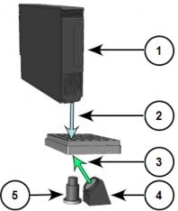
Path of Selected Light Sources
Item | Description |
1 | Transmitted Light (TL) Detection Cartridge |
2 | Path of white light from the Transmitted Light (TL) Detection Cartridge |
3 | Path of fluorescent excitation |
4 | Light source for fluorescent excitation |
5 | Camera lens |
For best results with transmitted-light reads, use a plate with no cover. You can use a clear cover, if required. For Fluorescent reads, you can use a plate with a solid cover.
Use the Plate Type category in the Settings dialog to select the type of plate to read. The software includes a plate library that contains plates of various sizes with standard dimensions. If you are uncertain which plate to use, select the Standard plate definition.
If you change the Plate Type setting, the software discards the well assignments for the template you assign to that Plate section. Group sections remain and you can select new wells to assign to the existing Group sections.
Your plate selection determines the display of the wells in the Plate section in the Workspace.
To define the plate setting:
Click the Plate Format drop-down and select the number of wells in the plate.
Select the Is Lidded check box if the plate has a lid.

CAUTION! If the plate has a lid, you must verify that the plate height with a lid is set accurately in the Plate Editor dialog before you start a read.

In the Select Specific list, select the plate to read.
For the SpectraMax Paradigm you can define the plate orientation to match the orientation of the plate in the drawer.
To define the plate orientation:
 Select Landscape to put the A1 location in the upper-left corner closest to the instrument.
Select Landscape to put the A1 location in the upper-left corner closest to the instrument.
 Select Portrait to put the A1 location in the upper-right corner closest to the instrument.
Select Portrait to put the A1 location in the upper-right corner closest to the instrument.
 Select Opposite Landscape to put the A1 location in the lower-right corner farthest from the instrument.
Select Opposite Landscape to put the A1 location in the lower-right corner farthest from the instrument.
 Select Opposite Portrait to put the A1 location in the lower-left corner farthest from the instrument.
Select Opposite Portrait to put the A1 location in the lower-left corner farthest from the instrument.
Edit Plate
You can edit the dimensions of a plate or add a custom plate to the plate library.

Note: You can use the custom plate definitions you create or edit for Imaging reads when you select the Imaging read mode. Plate definitions you create, edit, or optimize for other read modes do not appear in the list of available plates for the Imaging read mode.

To edit the dimensions of a plate or to add a new plate to the library:
Select a plate from the list.
Click Edit Plate to display the Plate Editor dialog. See Plate Editor on page 117.
For a new plate, in the Plate Name field, enter the name for the plate.
Define the plate dimensions and click Save.
You can select the plate and click Remove to remove it from the plate library.
CAUTION! The SpectraMax Paradigm, SpectraMax i3x, SpectraMax iD3, SpectraMax iD5, and FilterMax F5 have an automatic read height (Z-height) adjustment for Fluorescence read mode and Luminescence read mode. For top reads, the lens or the plate can be damaged if you do not properly set the plate height. If the plate has a lid, you must select the Is Lidded check box and verify that the plate height with a lid is set accurately in the Plate Editor dialog before you start a read.

Import Plate Definitions
You can import plates for the SpectraMax i3, SpectraMax i3x, SpectraMax Paradigm, SpectraMax iD3, SpectraMax iD5, FilterMax F3, and FilterMax F5.
To import plate definitions:
Click Import Plate to display the Open dialog.
Navigate to and select the plate definition file: Plate File *.plt format or Multimode File
*.xml format.
Click Open.
Plate Editor
Use the Plate Editor dialog to modify the definition of a plate or to add a plate definition to the plate library. The software saves plate definitions with a *.plt file in a sub-folder of the Program Data folder. Custom plate definitions save to the computer. When you open a protocol that uses a custom plate definition that you save on a different computer, the software allows you to save the custom plate definition on the new computer.

CAUTION! To prevent damage to the instrument, set the plate height and read height accurately before you start a read.

To edit a plate definition:
In the Navigation Tree, select a Plate section.
Click  in the section toolbar, the Settings Information area, or on the Home tab to display the Settings dialog.
in the section toolbar, the Settings Information area, or on the Home tab to display the Settings dialog.
Select the Plate Type category.
Click the Plate Format drop-down and select the number of wells in the plate.
In the Select Specific list, select the plate to edit or copy.
Click Edit Plate to display the Plate Editor dialog. In the Acquisition view, click to display the Plate Editor dialog.
To create a new plate, in the Plate Name field, enter the new plate name.
If you access the Plate Editor from the Acquisition view, you can click Delete to remove a custom plate definition. You cannot remove the plates installed with the software.
After you define the plate settings described in the table on the following page, click
Save.

Note: For the Left Edge to Left Well Center measurement in the table on the following page, the distance from the left edge of the plate to the center of well A1 must also include an offset for the angle of the optics. To determine the correct settings for these fields, measure the applicable areas of the plate in the lab.

Plate Editor Settings (all measurements in millimeters)
Field Name | Image | Description |
Left Edge to Left Well Center | Enter the distance from the left edge of the plate to the center of well A1. | |
Horizontal Center to Center | Enter the horizontal distance between well centers. | |
Top Edge to Top Left Well Center | Enter the distance from the top edge of the plate to the center of well A1. | |
Vertical Center to Center | Enter the vertical distance between well centers. | |
Well Diameter and Well Shape | Enter the diameter of a round well or the width of a square well. For the SpectraMax i3, SpectraMax i3x, SpectraMax Paradigm, SpectraMax iD3, SpectraMax iD5, FilterMax F3, and FilterMax F5, select the Well Shape Square check box for square wells. | |
Well Bottom Type / Thickness | Select the Clear Well Bottom check box if the wells have a clear bottom, rather than opaque. For the SpectraMax i3x with the SpectraMax MiniMax 300 Imaging Cytometer, enter the thickness of the bottom of the well of the plate. This determines the initial focus distance for Imaging reads. | |
Well Volume / Depth | For the SpectraMax i3, SpectraMax i3x, SpectraMax Paradigm, SpectraMax iD3, SpectraMax iD5, FilterMax F3, and FilterMax F5, enter the depth of the well. For the SpectraMax i3x with the SpectraMax Injector Cartridge, enter the working volume of the well for the plate in microliters. This determines the maximum allowable dispense volume for reads with injection. | |
Plate Height | For the SpectraMax i3, SpectraMax i3x, SpectraMax Paradigm, SpectraMax iD3, SpectraMax iD5, FilterMax F3, and FilterMax F5, enter the height of the plate in millimeters and also the height of the plate with a lid. This determines the read height for top reads. | |
Plate Length | For the SpectraMax i3, SpectraMax i3x, SpectraMax Paradigm, SpectraMax iD3, SpectraMax iD5, FilterMax F3, and FilterMax F5, enter the length of the plate. |
Plate Editor Settings (all measurements in millimeters) (continued)
Field Name | Image | Description |
Plate Width | For the SpectraMax i3, SpectraMax i3x, SpectraMax Paradigm, SpectraMax iD3, SpectraMax iD5, FilterMax F3, and FilterMax F5, enter the width of the plate. |
Use the Read Area category in the Settings dialog to select the wells to read. Partial plate reads are available for all read types, although it is most useful for the Fast Kinetic read type or the Imaging read mode. Partial plate reads can significantly reduce the time required for the Kinetic read type or to acquire images because the instrument does not have to read the entire plate.
To select a contiguous, rectangular region on the plate:
 Drag the mouse pointer to select the wells to read.
Drag the mouse pointer to select the wells to read.
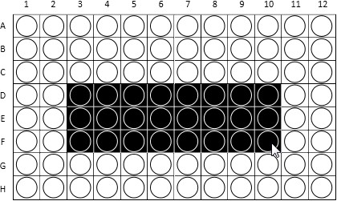
Columns do not need to start with “1” but must be contiguous. To read all the wells in the plate:
 Select the Select All check box.
Select the Select All check box.
To select non-contiguous wells for the SpectraMax i3, SpectraMax iD3, SpectraMax iD5, and SpectraMax i3x:
Select the More Settings category.
Select the Well read order.
Select the Read Area category.
Press the CTRL key as you click each well.
If you select a partial plate read, only the wells to read are visible in the data display, to indicate that no data will be collected for the other wells. All wells display in the Template Editor dialog.
Western Blot Membrane Read Area Settings
To scan a membrane, you must first place it in a Molecular Devices ScanLater™ membrane holder. See Loading the Membrane Holder on page 176.
A high resolution scan of the entire surface can take approximately 15 minutes. Define a smaller area for the scan to reduce the scan time. The Read Area category displays the approximate area to scan.
To select the area to scan from the Target Read Area list:
 Select Mini Membrane to scan an area 85 mm x 65 mm.
Select Mini Membrane to scan an area 85 mm x 65 mm.
 Select Whole Membrane Holder to scan an area 109 mm x 77 mm.
Select Whole Membrane Holder to scan an area 109 mm x 77 mm.
 Select ROI Selection to scan an area based on the region of interest (ROI) you define and acquire in the Plate section.
Select ROI Selection to scan an area based on the region of interest (ROI) you define and acquire in the Plate section.
If you do not define and acquire a region of interest in the Plate section, the ROI Selection option is not available.
Use the PathCheck category in the Settings dialog to use PathCheck Technology for Absorbance read mode Endpoint read type protocols. See PathCheck Pathlength Measurement Technology on page 280.
To define PathCheck settings:
 Select the PathCheck check box to use the PathCheck Technology Water Constant correction.
Select the PathCheck check box to use the PathCheck Technology Water Constant correction.
 Clear the PathCheck check box to not use the PathCheck Technology Water Constant correction.
Clear the PathCheck check box to not use the PathCheck Technology Water Constant correction.
The temperature-independent PathCheck® Pathlength Measurement Technology normalizes your absorbance values to a 1 cm path length based on the near-infrared absorbance of water.
The Beer–Lambert law states that absorbance is proportional to the distance that light travels through the sample:
A = cL
where A is the absorbance, is the molar absorptivity of the sample, c is the concentration of the sample, and L is the pathlength. The longer the pathlength, the higher the absorbance.
Microplate readers use a vertical light path so the distance of the light through the sample depends on the volume. This variable pathlength makes it difficult to do extinction-based assays and makes it confusing to compare results between microplate readers and spectrophotometers.
The standard pathlength of a 1 cm cuvette is the conventional basis to quantify the unique absorptivity properties of compounds in solution. Quantitative analysis can be done on the basis of extinction coefficients, without standard curves (for example, NADH-based enzyme assays). When you use a cuvette, the pathlength is known and is independent of sample volume, so absorbance is directly proportional to concentration when there is no background interference.
Use the TRF Settings category in the Settings dialog to define the integration delay before data is collected and the integration time of the fluorescence signal. The Time-Resolved Fluorescence read mode measures fluorescence as a function of time after excitation. See Time-Resolved Fluorescence Read Mode on page 293.
To define TRF settings:
Click the Integration Delay drop-down and select the amount of time to elapse between the flash of the lamp (excitation) and the beginning of data acquisition from the well (emission).
Click the Integration Time drop-down and select the amount of time for the instrument to read the well.
Use the PMT and Optics category in the Settings dialog to define sensitivity settings for the Photomultiplier Tubes and optics for all read modes except Absorbance.
Click the PMT Gain drop-down:
 Select Automatic to have the instrument automatically adjust the PMT voltage for varying concentrations of sample in the plate. Available for the Fluorescence read mode with the Endpoint, Spectrum, and Well Scan read types. The Luminescence and Time- Resolved Fluorescence read modes use the Automatic setting and the following options are not available.
Select Automatic to have the instrument automatically adjust the PMT voltage for varying concentrations of sample in the plate. Available for the Fluorescence read mode with the Endpoint, Spectrum, and Well Scan read types. The Luminescence and Time- Resolved Fluorescence read modes use the Automatic setting and the following options are not available.
 Select High for samples that have a lower concentration (dim samples).
Select High for samples that have a lower concentration (dim samples).  Select Medium for samples that have medium concentration.
Select Medium for samples that have medium concentration.
 Select Low for samples that have a higher concentration (bright samples).
Select Low for samples that have a higher concentration (bright samples).  Select Manual to enter a specific voltage.
Select Manual to enter a specific voltage.
The SpectraMax i3x uses two light sources. The Spectral Fusion™ Illumination uses the spectral range of a high power Xenon flash lamp intensified by LEDs in the visible range. The instrument uses automatic LED power adjustment with high PMT Gain when the excitation wavelength is between 430 nm and 680 nm for high sensitivity across multiple fluorophores. In multiple-wavelength reads, the PMT Gain is set to High and cannot be changed.
For some instruments, the PMT sensitivity is set to Automatic for the Luminescence and Time Resolved Fluorescence read modes. For these instruments, the PMT Gain category is not available for these read modes.
To set the resolution for the full scan and for a secondary scan of a region of interest for Western Blot membrane scans:
Click the Default Scan Resolution and select the resolution to apply to the entire read area of the membrane you define in the Read Area category settings.
Click the ROI Scan Resolution and select the resolution to apply to the region of interest (ROI) you define in the Plate section.
A High resolution scan provides the best results. A Low resolution scan provides the fastest read.
The general workflow to acquire Western Blot data is to scan the read area of the membrane you define with a low resolution and then scan the region of interest (ROI) you define at a high resolution.
For some instruments in certain read modes, you can enter the Integration Time or the number of Flashes Per Read.
On-the-Fly Detection
For the SpectraMax Paradigm and for the SpectraMax i3x with some detection cartridges you can select the On the Fly Detection options.
On-the-Fly Detection yields faster read times because the plate moves continuously as the instrument measures each well.
To disable On-the-Fly Detection and have the plate stop moving for each read:  Select Off-Stop and Go.
Select Off-Stop and Go.
To use On-the-Fly Detection:
 Select Performance for a faster read time than not using On the Fly Detection, but not as fast as the Speed mode. Performance provides considerably better results than Speed for demanding assays.
Select Performance for a faster read time than not using On the Fly Detection, but not as fast as the Speed mode. Performance provides considerably better results than Speed for demanding assays.
 Select Speed for the fastest possible read time per plate. However, there is a tradeoff between the data quality and read speed because the instrument samples each well for shorter integration times.
Select Speed for the fastest possible read time per plate. However, there is a tradeoff between the data quality and read speed because the instrument samples each well for shorter integration times.
To set the integration time for the SpectraMax Paradigm and FilterMax F5, and the SpectraMax i3x with some detection cartridges:
 In the Integration Time field, enter the number of milliseconds needed to validate the measurement time per well.
In the Integration Time field, enter the number of milliseconds needed to validate the measurement time per well.
To have an instrument with bottom read capability read up through the bottom of the plate:  Select the Read From Bottom check box.
Select the Read From Bottom check box.
For the SpectraMax i3, i3x, iD3, iD5, Paradigm, and FilterMax F5, you can specify the read height.
CAUTION! To prevent damage to the instrument, set the plate height and read height accurately before you start a read.

To set the read height:
 In the Read Height field, enter the distance in millimeters between the objective lens and the plate.
In the Read Height field, enter the distance in millimeters between the objective lens and the plate.
Read Height Optimization
Use the Read Height Optimization feature to find the optimized read height before the read.
Select the More Settings category.
Select the Show Pre-Read Optimization Options check box.
Read Height is available for the SpectraMax i3x and FilterMax F5 for top read only.
Use the Timing category in the Settings dialog to define the total run time and the time interval between reads for the Kinetic read type and Flex read type.
Each instrument has a unique minimum allowable read interval that depends on factors that include the number of wavelengths, the number of wells to read, and the distance the instrument filter wheel must move. The maximum read interval also varies by instrument, for example, the SpectraMax M2 has a maximum read interval of 2 hours and 45 minutes, and the SpectraMax Paradigm has a maximum read interval of 18 hours and 12 minutes. If you enter an invalid read interval, a message indicates the minimum or maximum allowable value for the read interval.
Tip: In some cases, choosing wavelengths in ascending order can yield the shortest possible interval.

The software calculates the minimum interval, maximum interval, and number of reads based on the values you enter in the Total Run Time field and the Interval field. The minimum permitted interval values display below the Interval field.
To define Timing settings when you select the Row and Column read order in the More Settings category:
In the Total Run Time field, enter the total run time.
In the Interval field, enter the time to wait between reads.
To define Timing settings when you select the Well read order in the More Settings category:
In the Well Run Time field, enter the well run time.
In the Interval field, enter the time to wait between reads. You can define the Interval down to the millisecond.

Note: Well read order is not available for the Time-Resolved Fluorescence read mode on the SpectraMax iD5.

Single Point Read sets the Total Run Time and the Interval to the same value and is useful when you run a multitask kinetic read with alternating read modes within a cycle. See Defining and Running Workflows on page 102.
To read only one time point:
 Click Single Point Read.
Click Single Point Read.
Use the Well Scan Settings category in the Settings dialog to define the pattern and density for the reads within each well.
The Well Scan read type takes reads at more than one location within a well. The Well Scan read type takes multiple reads of a single well of a plate on an evenly spaced pattern inside of each well at single or multiple wavelengths.
Some applications involve the detection of cells in large area tissue culture plates. Use the Well Scan read type with such plates to permit maximum surface area detection in cell-based protocols. Since many cell lines tend to grow as clumps or in the corners of plate wells, you can choose from several patterns and define the number of points to scan in order achieve the best results for your application.
The image in the Well Scan settings displays the shape of the well based on the definition of the plate you select. The fill pattern is either round or square to match the well shape. The number of available points depends on the well size of the plate you select.
Density determines the number of points to read in the line patterns and the maximum number of horizontal and vertical points to include in the cross or fill pattern.
To define Well Scan settings:
Select a Pattern. Up to four scan patterns are available, depending on the instrument.
Click the Density drop-down and select the density.
Use the Shake category in the Settings dialog to set options to shake the plate in the chamber. Shake options are dependent on the instrument and the read type you select.
To define shake settings:
 Select the Before First Read check box to shake the plate for the duration you enter into the text field before the first wavelength read.
Select the Before First Read check box to shake the plate for the duration you enter into the text field before the first wavelength read.
 Clear the Before First Read check box to not shake the plate.
Clear the Before First Read check box to not shake the plate.
For the Kinetic read type, you can shake the plate before the first read as described above and you can shake the plate between reads. For single wavelength reads, this shakes the plate before each read at that wavelength. For multiple wavelength reads, this shakes the plate before each read at the first wavelength only.
To define shake settings for the Kinetic read type:
 Select the Between Reads check box to shake the plate for the duration you enter into the text fields between reads.
Select the Between Reads check box to shake the plate for the duration you enter into the text fields between reads.
 Clear the Between Reads check box to not shake the plate between reads.
Clear the Between Reads check box to not shake the plate between reads.

Note: The Before First Read and Between Reads options are available in the Standard View. To shake the plate from the Acquisition view, place a Shake node in the time line where you want the shake to occur.

For the SpectraMax i3, SpectraMax i3x SpectraMax Paradigm, FilterMax F3, and FilterMax F5, define the following shake settings:
Select the Before First Read check box.
In the text field, enter the length of time to shake the plate in seconds.
Click the Shake Intensity drop-down and select Low, Medium, or High. The actual shake speed is based on the plate format.
Click the Shake Mode drop-down and select Linear or Orbital.
For the SpectraMax iD3 and SpectraMax iD5, define the following shake settings:
Select the Before First Read check box.
In the text field, enter the length of time to shake the plate in seconds.
Click the Shake Intensity drop-down and select Low, Medium, or High. The actual shake speed is based on the plate format.
Click the Shake Mode drop-down and select Orbital, Linear, or Double Orbital.
Use the Speed Read category in the Settings dialog to read the plate faster for the Absorbance read mode by decreasing the number of lamp flashes. The Speed Read option is useful for the Spectrum read type and can greatly reduce the protocol run time.
For instruments that support software calibration, Speed Read turns off calibration and uses the air calibration values stored in the instrument firmware. As a result, Speed Read might not provide as accurate an absorbance measurement at each wavelength of a scan as with the normal read.
To define Speed Read settings:
 Select the Speed Read check box to use the speed read.
Select the Speed Read check box to use the speed read.  Clear the Speed Read check box to not use speed read.
Clear the Speed Read check box to not use speed read.
Use the Well Area Settings category in the Settings dialog to acquire images at more than one location, or site, within a well to form a single seamless tiled image for the Imaging read mode. If you select to acquire images of more than one site in the well, the software tiles the images together into a single image for analysis. Image acquisition time increases with each site you select. For faster image acquisition, select fewer sites.
To define Well Area settings, select the number of sites to acquire:
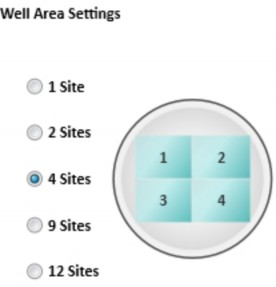
Use the Image Acquisition Settings category in the Settings dialog to define the exposure time and focus adjustment for two sample wells. The instrument uses these settings for every well in the plate during acquisition. You can set the exposure and focus adjustment separately for each wavelength or channel.
The instrument acquires one site in each well. If you select to acquire more than one site, the instrument acquires the first site.
To acquire the image for maximum intensity:
Click to the right of the Well field above the maximum intensity image area.
Click the well you expect to have the brightest image. The well displays red.
Click Acquire Max Image and wait for the instrument to acquire the image. To acquire the image for minimum intensity:
Click  to the right of the Well field above the minimum intensity image area.
to the right of the Well field above the minimum intensity image area.
Click the well you expect to have the darkest image. The well displays blue.
Click Acquire Min Image and wait for the instrument to acquire the image.
For some multi-channel experiments, the brightest and darkest images for one channel can be different than the brightest and darkest images for another channel. In this case, try to locate the wells that give you the best results between the different channels.
To view the image for a specific wavelength:
 Click the tab above the image for that wavelength. To view an image with all the wavelengths:
Click the tab above the image for that wavelength. To view an image with all the wavelengths:
 Click Composite.
Click Composite.
To zoom the image in and out:
 Right-click the image and select Zoom In or Zoom Out,
Right-click the image and select Zoom In or Zoom Out,  Hold the CTRL key and press + or -.
Hold the CTRL key and press + or -.
 Use the mouse wheel to zoom in or out. To move the image in the image area:
Use the mouse wheel to zoom in or out. To move the image in the image area:
 Use the scroll bars or click the image and drag it into position. To view a larger version of the image area:
Use the scroll bars or click the image and drag it into position. To view a larger version of the image area:
 Double-click the image to display the Zoom Well dialog. See Zooming Image in a Well on page 179.
Double-click the image to display the Zoom Well dialog. See Zooming Image in a Well on page 179.
Set Exposure Time and Focus Adjustment
You can adjust the exposure and focus separately for each wavelength or channel. To view the image for a specific wavelength:
 Click the tab above the image for that wavelength. To view an image with all the wavelengths:
Click the tab above the image for that wavelength. To view an image with all the wavelengths:
 Click Composite.
Click Composite.
Set the exposure and focus adjustment in the row you designate for the specific channel.
Exposure
Use Auto Exposure to have the software determine the perceived best intensity for the Max Intensity or Min Intensity image, whichever is brightest. To view what effect the new exposure value has on the images, acquire the maximum intensity and minimum intensity images again.
To have the software determine the best exposure:
 Click Auto Expose.
Click Auto Expose.
Increase the exposure time to increase the intensity of the image or decrease the exposure time to decrease the intensity of the image. After each adjustment, acquire the images again to view what effect the change has on the intensity.
To manually adjust the intensity of the images,
 In the Exposure field, enter the number of milliseconds to hold the camera shutter open.
In the Exposure field, enter the number of milliseconds to hold the camera shutter open.
Focus
The system optics use a laser automatic focus system and software algorithms to find the initial focus distance for the cells in the plate wells. Increase the Focus Adjustment value to move the objective lens closer to the sample. Decrease the Focus Adjustment value to move the objective lens farther away from the sample. The instrument uses this setting for every well in the plate during acquisition.
For transmitted light images, make sure that enough contrast exists between the objects and the background. Less contrast exists as you make the focus sharper. For best results when you use a preset drawing analysis, make sure that the objects are brighter than the background.
To adjust the focus:
 In the Focus Adjustment field, enter the number of microns to move the objective lens closer to or farther away from the sample.
In the Focus Adjustment field, enter the number of microns to move the objective lens closer to or farther away from the sample.
After each adjustment, acquire the images again to view what effect the change has on the focus.
Use the Image Analysis Settings category in the Settings dialog to define how to analyze images for the Imaging read mode.
To acquire images without analysis:
 Click No Analysis.
Click No Analysis.
Discrete Object Analysis
Discrete Object Analysis uses proprietary algorithms to analyze separate objects, or cells, based on multiple parameters including the signal intensity over the background and the size of the objects. You can use transmitted light or a fluorescent wavelength to find nuclei or easily separable objects in the image. The StainFree™ Cell Detection Algorithm eliminates cell staining for cell counting and confluency measurements using proprietary transmitted light analysis technology.
To define discrete object analysis settings:
Click Discrete Object Analysis to display the Wavelength for Finding Objects list.
Select the wavelength to use to identify the objects in the well images.
Select the Image Analysis Settings category.
Click Find Objects and enter size and intensity values or use proprietary algorithms with the drawing tools to graphically define the objects and the background areas for the analysis. See Finding Discrete Objects or Confluent Areas on page 129.
Click Classify Objects and define separate measurements for different types of found objects, or cells. See Classifying Discrete Objects on page 133.
Click Select Measurements and view the results of the analysis for the wells you select. See Viewing and Selecting Measurement Statistics on page 134.
Field Analysis
Field Analysis uses proprietary algorithms to analyze confluent areas based on parameters including the signal intensity over the background and the size of the areas.
To define field analysis settings:
Click Field Analysis to display the Wavelength for Finding Confluent Areas list.
Select the wavelength to use to identify the confluent areas in the well images. The StainFree™ Cell Detection Algorithm eliminates cell staining for cell counting and confluency measurements using proprietary transmitted light analysis technology.
Click Find Confluent Areas and use proprietary algorithms with the provided drawing tools to graphically define the confluent areas and the background areas for the analysis. See Finding Discrete Objects or Confluent Areas on page 129.
Click Select Measurements and view the results of the analysis for the wells you select. See Viewing and Selecting Measurement Statistics on page 134.
The SoftMax Pro Software proprietary algorithms with the drawing tools in the Find Objects and Find Confluent Areas settings help the software learn the patterns of the objects you want to find. Depending on the complexity of the object patterns, this teaching process can take several iterations. See Resolving Issues with Object Drawing and Finding on page 136.
Finding Discrete Objects or Confluent Areas
The Find Objects or Find Confluent Areas settings display the minimum and maximum images from the Image Acquisition Settings.
 Click to view the page in full screen.
Click to view the page in full screen.
 Click to restore the page to its original size.
Click to restore the page to its original size.
In full screen view, select the tabs at the top of the page to switch between the different analysis settings.
Use the buttons above the image to switch the view of the image between wavelengths and to show or hide found objects (or confluent areas) and drawings. When a button is filled, the related wavelength, objects (or confluent areas), and drawings display in the image. When a button is outlined, the related wavelength, objects (or confluent areas), and drawings do not display in the image. When you click a button above one of the images, it affects the display of both images.
Use the controls below the image to adjust the intensity of each wavelength.
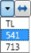
To adjust the wavelength intensity:
Select the wavelength to adjust.
Drag the slider bar on the left to adjust the low level of intensity or click to move the sliders to the outside edges. The intensity level displays above the bar.
Drag the slider bar on the right to adjust the high level of intensity or click  to move the sliders to the outside edges.
to move the sliders to the outside edges.
From the list on the right, select the color for the view.
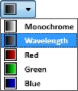
For fluorescent acquisition and discrete object analysis, select a Finding Method:
 Select Set Size and Intensity to define the intensity threshold above the background intensity to apply separately to each object in the image that meets the defined size range. This analysis helps to detect objects in areas of the image where the intensity is uneven.
Select Set Size and Intensity to define the intensity threshold above the background intensity to apply separately to each object in the image that meets the defined size range. This analysis helps to detect objects in areas of the image where the intensity is uneven.
 Select Draw on Images to use the drawing tools to help the software learn the patterns of the objects you want to find.
Select Draw on Images to use the drawing tools to help the software learn the patterns of the objects you want to find.
Set Size and Intensity
The Set Size and Intensity settings are available for fluorescent acquisition and discrete object analysis.
To define set size and intensity settings:
Click .
Click four or more representative objects on the images that you want to detect as cells.
In the Min Width field, enter the minimum width of the object to find, in microns.
In the Max Width field, enter the maximum width of the object to find, in microns.
In the Intensity Above Background field, enter the intensity threshold above the background intensity at which to detect the dimmest object. For example, if the background intensity is 1000 and the intensity of the dimmest object is 1200, enter 200.
Click Apply.
Grow
Use the Grow setting to define the number of pixels to increase the diameter of the found objects in one wavelength, so they can be measured at the new size in another wavelength of the acquisition. For example, if you use a stain for nuclei, you can find the object in the first wavelength and then increase the diameter to find the protein of interest in another fluorescence wavelength. The innovative "grow without touching" algorithm increases the size of the measured areas without letting the areas touch or overlap their edges.
Draw on Images
Use the drawing tools to help the software learn the patterns of the objects or confluent areas you want to find. Depending on the complexity of the object or area patterns this teaching process can take some time. Each preset drawing analysis works with specific cell types. Select the preset analysis that works best with your images.
To use a preset drawing analysis:
In the Settings list, select a preset drawing.
Click Apply to find objects or confluent areas that use the preset.
After you acquire data, select Stored Setting in the Settings list to use the previously defined analysis settings.
To start from scratch, select Create New Setting in the Settings list.
To select the objects for fluorescent acquisition and discrete object analysis:

Note: This method is not available for transmitted light acquisition or for confluent area analysis.

Click .
Click a line width.
Click four or more representative objects on the images. To define the objects or confluent areas:
Click the object or area pen .
Select a line width.
For discrete object analysis, draw inside the object up to the edge, but do not include the edge. When the object is filled in with yellow, the drawing is outlined in green. For best results, fill in four or more representative objects.
For field analysis, draw across confluent areas, avoiding background. For best results, draw across four or more representative areas.
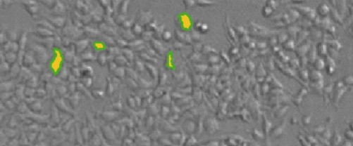
To define the background:
Click the background pen .
Select a line width.

Tip: For best results, define four or more representative background areas.
Draw on the image to define artifacts and background areas in blue.

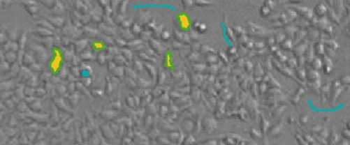
To correct a drawing of an object or area:
 Click Undo to undo the most recent action.
Click Undo to undo the most recent action.  Click Redo to restore the most recent action.
Click Redo to restore the most recent action.
 Click Start Over to clear the drawings from the image.
Click Start Over to clear the drawings from the image.
To erase parts of drawings:
Click Erase.
Select a line width.
Drag the eraser across the drawings to remove.
After you define the objects and areas, click Apply to find the objects or confluent areas in the image.
Continue to draw and to apply until you get satisfactory results. See Resolving Issues with Object Drawing and Finding on page 136.
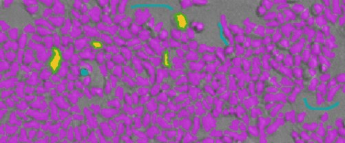
You can then classify objects or view the measurement statistics.
Classifying Discrete Objects

Note: Before you can classify objects, you must first find objects in the Find Objects
The Classify Objects settings display the minimum and maximum images from the Image Acquisition settings display along with the found objects from the Find Objects settings. The Classify Objects settings are not available for field analysis of confluent areas.
settings. See Finding Discrete Objects or Confluent Areas on page 129.

Use the bottom of the page to classify the found objects in the images into two separate classifications.
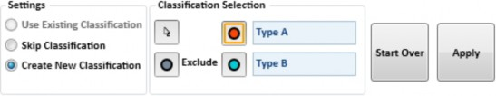
To classify the found objects:
 Select Use Existing Classification to use the previously defined classification settings when in Re-Analysis mode.
Select Use Existing Classification to use the previously defined classification settings when in Re-Analysis mode.
 Select Skip Classification to not use classification in the analysis.
Select Skip Classification to not use classification in the analysis.
 Select Create New Classification to replace the Type A and Type B titles with your own titles for the classifications. See below.
Select Create New Classification to replace the Type A and Type B titles with your own titles for the classifications. See below.
Create New Classification
When you select Create New Classification, you can replace the Type A and Type B titles with your own titles for the classifications. Titles must use only letters, numbers, and spaces, and can be up to 16 characters long, including spaces. They must start and end with a letter. The titles must be unique and you cannot use "Exclude" as a title, since this is a reserved word.
To create a new classification:
Click to select objects for the first classification then click the objects in the images.
Click to select objects for the second classification then click the objects in the images.
To exclude objects from being classified, click then click the objects in the images. If you exclude objects, you must also use at least one of the classifications types to include objects.
To deselect a selected object click it again.
To remove all the selections from the images, click Start Over.
Click Apply to find and classify the objects in the image.
Continue to select and to apply until you get satisfactory results.
View the measurement statistics.
Viewing and Selecting Measurement Statistics
The Measurement Selections settings table displays the analysis results for the minimum intensity and maximum intensity images.
The possible included measurements are as follows:
 Object Count: The total number of objects detected in the image. Not used for field analysis of confluent areas.
Object Count: The total number of objects detected in the image. Not used for field analysis of confluent areas.
 Field Count: The total number of confluent areas detected in the image. Not used for discrete object analysis.
Field Count: The total number of confluent areas detected in the image. Not used for discrete object analysis.
 Object Percentage: The percentage the objects detected in the image by classification.
Object Percentage: The percentage the objects detected in the image by classification.
Not used for field analysis of confluent areas.
 Covered Area: The combined area of all the objects or confluent areas detected in the image as a percentage of the entire image area.
Covered Area: The combined area of all the objects or confluent areas detected in the image as a percentage of the entire image area.
2
 Object Area: The average area of the objects detected in the image expressed in µm .
Object Area: The average area of the objects detected in the image expressed in µm .
Not used for field analysis of confluent areas.
2
 Field Area: The average area of the confluent areas detected in the image expressed in µm . Not used for discrete object analysis.
Field Area: The average area of the confluent areas detected in the image expressed in µm . Not used for discrete object analysis.
 Object Roundness: The average roundness of each object detected in the image. A shape factor of 1.00 is perfectly round, while a shape factor of 0.00 is not round at all. Not used for field analysis of confluent areas.
Object Roundness: The average roundness of each object detected in the image. A shape factor of 1.00 is perfectly round, while a shape factor of 0.00 is not round at all. Not used for field analysis of confluent areas.
 Field Roundness: The average roundness of each confluent area detected in the image. A shape factor of 1.00 is perfectly round, while a shape factor of 0.00 is not round at all. Not used for discrete object analysis.
Field Roundness: The average roundness of each confluent area detected in the image. A shape factor of 1.00 is perfectly round, while a shape factor of 0.00 is not round at all. Not used for discrete object analysis.
 Object Average Intensity: The average fluorescent signal intensity of the objects detected in the image. This measurement is not used for field analysis of confluent areas. Not used for transmitted light.
Object Average Intensity: The average fluorescent signal intensity of the objects detected in the image. This measurement is not used for field analysis of confluent areas. Not used for transmitted light.
 Field Average Intensity: The average fluorescent signal intensity of the confluent areas detected in the image. This measurement is not used for discrete object analysis and not used for transmitted light.
Field Average Intensity: The average fluorescent signal intensity of the confluent areas detected in the image. This measurement is not used for discrete object analysis and not used for transmitted light.
 Object Intensity: The average total fluorescent signal intensity of the objects detected in the image. Not used for field analysis of confluent areas and not used for transmitted light.
Object Intensity: The average total fluorescent signal intensity of the objects detected in the image. Not used for field analysis of confluent areas and not used for transmitted light.
 Field Intensity: The average total fluorescent signal intensity of the confluent areas detected in the image. Not used for discrete object analysis and not used for transmitted light.
Field Intensity: The average total fluorescent signal intensity of the confluent areas detected in the image. Not used for discrete object analysis and not used for transmitted light.
 Total Intensity: The combined total fluorescent signal intensity of the objects or confluent areas detected in the image expressed in million intensity counts. Not used for transmitted light.
Total Intensity: The combined total fluorescent signal intensity of the objects or confluent areas detected in the image expressed in million intensity counts. Not used for transmitted light.
To include the measurements in the analysis:
Click Select Measurements in the lower-right area of the page.  Click Remove to exclude a measurement.
Click Remove to exclude a measurement.
 Click Add to include a measurement.
Click Add to include a measurement.
 Click Remove All to exclude all measurements.
Click Remove All to exclude all measurements.  Click Add All to include all measurements.
Click Add All to include all measurements.
Click Done to add the selected measurements to the data reduction list that you use to view data in the Plate section or to add to a Group section for further analysis. See Plate Sections on page 76 or Group Sections on page 82.
Click Show Details to view the measurements in an interactive image, data table, and chart. See Viewing Imaging Data in Wells on page 207.
If no measurements display and you did not make changes to the analysis settings since the last measurement, click Measure to analyze the selected wells. This is useful if you change acquisition wells and want to analyze the new wells.
Resolving Issues with Object Drawing and Finding
The SoftMax Pro Software proprietary algorithms provide drawing tools in the Find Objects or Find Confluent Areas settings to help the software learn the patterns of the objects that you want to find. Depending on the complexity of the object patterns, this teaching process can take several iterations.
The software uses a complex algorithm to learn the properties of the cells or confluent areas in the image. The algorithm examines each pixel and how it relates to its surrounding area. Cells change shape and size under different conditions such as confluency. Artifacts can look like cells or confuse the algorithm. Cells that are touching are more difficult to find than sparse cells in an image. Complex images can require more drawing examples to create a good training set.
Some common issues with finding cells and confluent areas are as follows:
 Under splitting finds multiple cells or confluent areas that can also include background.
Under splitting finds multiple cells or confluent areas that can also include background.
 Over splitting finds portions of cells or confluent areas and can include several found objects within a single cell or confluent area.
Over splitting finds portions of cells or confluent areas and can include several found objects within a single cell or confluent area.
 Artifacts can be found and counted as cells or confluent areas.
Artifacts can be found and counted as cells or confluent areas.
 Ghosting finds background areas next to cells or confluent areas.
Ghosting finds background areas next to cells or confluent areas.
Each preset drawing analysis is designed to work with specific cell types. Select the preset analysis that works best with your images.
To resolve issues:
In the Settings list, select a preset drawing analysis.
Click Apply to find objects or confluent areas using the preset.
For transmitted light images, make sure that enough contrast exists between the objects and the background. The sharper the focus, the less contrast exists. To increase the contrast between the objects and the background, move the lens closer to or farther away from the plate.
Adjust the focus in the Image Acquisition Settings. Increase the Focus Adjustment value to move the objective lens closer to the sample. Decrease the Focus Adjustment value to move the objective lens farther away from the sample. In general, move the lens closer to make the objects darker than the background, move the lens farther away to make the objects brighter than the background.

Note: For best results when you use a preset drawing analysis, make sure that the objects are brighter than the background.

To create an iterative training set for complex images:
Carefully draw four or more cells or confluent areas that best represent your target population. Draw inside the cell or confluent area up to the edge, but do not include the edge.
Define the artifacts and background areas in the image.
Apply the drawing and then try to fix the problems.
Continue to adjust the drawings. After you fix some problems, the results can look worse as the algorithm emphasizes the fixes. Continue to adjust to create a complete training set.
After the result looks reasonable, scroll and look around the image for other issues.
Stop when you are satisfied or you get diminishing returns. As the training data set grows, more drawings will have less impact. At some point changes will be of little benefit.
If, at the end of the process, it is still not right, start again and repeat all the steps. Sometimes there is something that had an unexpected influence on the algorithm and starting over can produce a better result.
Resolve Under Splitting Issues
Under splitting finds multiple cells or confluent areas that can also include background.
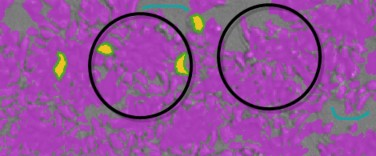
Under splitting can be caused by drawing outside of the edge of the cells or confluent areas. The lines between the cells or confluent areas are interpreted as being part of the cell or confluent area structure.
To resolve under splitting issues:
 Draw inside the cell or confluent area up to the edge, but do not include the edge. You can also use the background pen to draw on the lines between the cells or confluent areas.
Draw inside the cell or confluent area up to the edge, but do not include the edge. You can also use the background pen to draw on the lines between the cells or confluent areas.
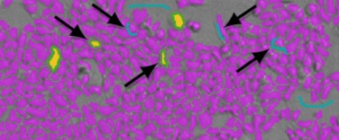
Resolve Over Splitting Issues
Over splitting finds portions of cells or confluent areas and can include several found objects within a single cell or confluent area.
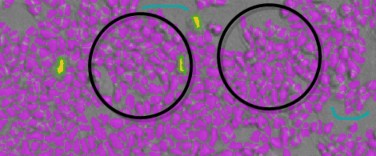
Over splitting can be caused by drawing too small within the cells or confluent areas. Sometimes over splitting can happen after you use the background pen to remove an artifact.
To resolve over splitting issues:
 Draw inside the cell or confluent area up to the edge, but do not include the edge.
Draw inside the cell or confluent area up to the edge, but do not include the edge.
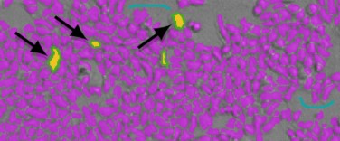
If over splitting is the result of artifact removal:
 Erase the blue from the artifact defined by the background pen.
Erase the blue from the artifact defined by the background pen.
Resolve Artifact Issues
Artifacts can be found and counted as cells or confluent areas.
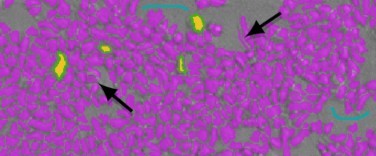
Artifact issues can be caused by debris or other artifacts in the image where the edges and surrounding pixels confuse the software.
To resolve artifact issues:
 Use the background pen to define artifacts as background and not cells or confluent areas.
Use the background pen to define artifacts as background and not cells or confluent areas.

Resolve Ghosting Issues
Ghosting finds background areas next to cells or confluent areas.
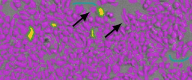
Ghosting can be caused by the edges of cells or confluent areas and the surrounding pixels that confuse the software.
To resolve ghosting issues:
 Use the background pen to draw over the area of the ghost. Draw this area right to the edge of the cell or confluent area.
Use the background pen to draw over the area of the ghost. Draw this area right to the edge of the cell or confluent area.
 If necessary, use the object pen to draw on the cell or confluent area so that the drawing goes out to the edge of the cell or confluent area.
If necessary, use the object pen to draw on the cell or confluent area so that the drawing goes out to the edge of the cell or confluent area.

You can define a region of interest for the images in all wells to analyze for your application. The software uses only the region of interest you select for analysis. This is useful if cells tend to congregate in the same region of the wells.
To select the well to use to define the region of interest:
Click to the right of the Well field above the image area. The well fills with red and is used to determine the region of interest.
Select the well to use and click Acquire All Sites. To view the image for a specific wavelength:
 Click the tab above the image for that wavelength. To view an image with all the wavelengths:
Click the tab above the image for that wavelength. To view an image with all the wavelengths:
 Click Composite.
Click Composite.
To zoom the image in and out:
 Right-click the image and select Zoom In or Zoom Out,
Right-click the image and select Zoom In or Zoom Out,  Hold the CTRL key and press + or -.
Hold the CTRL key and press + or -.
 Use the mouse wheel to zoom in or out. To move the image in the image area:
Use the mouse wheel to zoom in or out. To move the image in the image area:
 Use the scroll bars or click the image and drag it into position. To define a region of interest:
Use the scroll bars or click the image and drag it into position. To define a region of interest:
Select the Enable Region Selection check box to display a rectangle on the image.
Click Resize and then drag the corners of the rectangle to redefine the size of the region.
To start over, click Draw and then drag a new rectangle on the image to define the region.
To use the entire image for the analysis:
 Clear the Enable Region Selection check box.
Clear the Enable Region Selection check box.
The More Settings category in the Settings dialog provides more settings options. The options vary depending on the instrument you select, read mode, and read type.
Calibrate
The More Settings category in the Settings dialog provides a Calibrate option for some instruments.
For the Absorbance read mode, the instrument makes an air-calibration measurement at each wavelength before the read. If you turn calibration off, the software uses the air- calibration values stored in the instrument firmware or the values from the previous calibration.
For Fluorescence and Luminescence read modes, the instrument makes a reference read at each wavelength before the read. If you turn calibration off, the software uses the default values stored in the instrument firmware or the values from the previous calibration.
For the Kinetic read type, the instrument makes the calibration measurement between reads during a run, unless the read interval is too short to allow calibration.
To define calibration settings:
 Select the Calibrate check box to have the instrument run calibration for the wavelengths you specify before each read.
Select the Calibrate check box to have the instrument run calibration for the wavelengths you specify before each read.
 Clear the Calibration check box to have the instrument begin reads or complete reads more quickly. You should calibrate at your assay wavelengths for at least one plate before you turn off calibration.
Clear the Calibration check box to have the instrument begin reads or complete reads more quickly. You should calibrate at your assay wavelengths for at least one plate before you turn off calibration.
New calibrations overwrite the calibration setting stored in firmware for the current data acquisition read, and for any subsequent reads you do with the Calibration check box clear. When you power the instrument off and then back on, calibrations reset to those stored in the firmware.
To update the air-calibration values stored in the firmware for the Absorbance read mode:
Select the Operations tab.
Click Calibration.
Carriage Speed
The More Settings category in the Settings dialog provides a Carriage Speed option for some instruments. You can slow down the carriage speed for samples (such as, fragile clots) that rapid carriage movement can disrupt.
Click the Carriage Speed drop-down:
 Select Normal to use the normal carriage speed.
Select Normal to use the normal carriage speed.  Select Slow to use a slower carriage speed.
Select Slow to use a slower carriage speed.
Read Order
The More Settings category in the Settings dialog provides a Read Order option that varies depending on the instrument, read mode, and read type.
For multi-wavelength reads, click the Read Order drop-down:
 Select Column to have the instrument read the entire plate (or chosen number of strips) at the first wavelength. The instrument then goes back and reads the plate at the second and subsequent wavelengths.
Select Column to have the instrument read the entire plate (or chosen number of strips) at the first wavelength. The instrument then goes back and reads the plate at the second and subsequent wavelengths.
 Select Wavelength to have the instrument read all wavelengths for the first column of wells in the plate first and then read all wavelengths for the second column, third column, and so on.
Select Wavelength to have the instrument read all wavelengths for the first column of wells in the plate first and then read all wavelengths for the second column, third column, and so on.
For single wavelength reads, click the Read Order drop-down:
 Select Row to read the entire plate row-by-row.
Select Row to read the entire plate row-by-row.
 Select Column to read the entire plate column-by-column.
Select Column to read the entire plate column-by-column.
 Select Well to read each well individually with all wavelengths and intervals you define for the read before the software reads the next well. This is useful for spectral scans, area scans, and specialized, fast-kinetic applications.
Select Well to read each well individually with all wavelengths and intervals you define for the read before the software reads the next well. This is useful for spectral scans, area scans, and specialized, fast-kinetic applications.
Settling Time
The More Settings category in the Settings dialog provides a Settling Time option for some instruments.
Settling Time is the delay between the motion of the instrument and the start of the read. This delay allows time for the meniscus motion to cease, which potentially improves precision, especially in the low density, high volume plates with fewer than 96 wells.
To define settling time settings:
 Select the Settling Time check box to add a delay between the read of each column. In the Duration field, enter the delay time between 100 and 1000 milliseconds. There is no delay between each well in a column.
Select the Settling Time check box to add a delay between the read of each column. In the Duration field, enter the delay time between 100 and 1000 milliseconds. There is no delay between each well in a column.
 Clear the Settling Time check box to not have a delay.
Clear the Settling Time check box to not have a delay.
Show Pre-Read Optimization Options
The More Settings category in the Settings dialog provides a Show Pre-Read Optimization Options check box for some instruments. From the Acquisition view, you can add Plate Optimization to the beginning of the time line. Plate dimensions can vary slightly between production lots, which can have a potential effect on measurement accuracy.
To define pre-read optimization settings:
 Select the Show Pre-Read Optimization Options check box to display the Pre-Read Optimization Options dialog before the instrument reads the plate. Use this dialog to optimize the plate dimensions after you click Read and before the instrument reads the plate. See Pre-Read Optimization Options on page 184.
Select the Show Pre-Read Optimization Options check box to display the Pre-Read Optimization Options dialog before the instrument reads the plate. Use this dialog to optimize the plate dimensions after you click Read and before the instrument reads the plate. See Pre-Read Optimization Options on page 184.
 Clear the Show Pre-Read Optimization Options check box to use the plate dimensions saved in the plate library.
Clear the Show Pre-Read Optimization Options check box to use the plate dimensions saved in the plate library.
Use the Pre-Read Optimization Options dialog to optimize labware dimensions by determining the centers of the four corner wells on the plate. The software adds a new plate definition to the plate library with dimensions from each plate you optimize. If you change the plate orientations for measurements, you must do labware optimization for each plate orientation separately.
Some instruments feature an objective lens that you can adjust. Use the Pre-Read Optimization Options dialog to move the lens up and down to optimize the read height for the Luminescence, Fluorescence Intensity, Fluorescence Polarization, and Time-Resolved Fluorescence read modes. Read height is the distance between the top (for top reads) or bottom (for bottom read) surface of the plate to read and the surface of the objective lens. You optimize the read height to match the focus of the optics with the sample volume. This maximizes the raw signal, which yields the highest precision and maximum sensitivity. For the FilterMax F5, this is available for top reads only.
Attenuation
The More Settings category in the Settings dialog provides an Attenuation option for some instruments. Attenuation filters reduce the intensity of very bright samples that can exceed the linear dynamic range of the detection system.
To define Attenuation settings:
 Select the Attenuation check box to use attenuation filters for very bright samples.
Select the Attenuation check box to use attenuation filters for very bright samples.  Clear the Attenuation check box to not use attenuation filters.
Clear the Attenuation check box to not use attenuation filters.
Normalization
The More Settings category in the Settings dialog provides a Normalization option for instruments that support the AlphaScreen read mode. The conversion rate of photons to counts is individual for each detector. Raw data from the same plate can seem to be different from one instrument to the next. The data format each instrument manufacturer uses can be counts normalized-per-second or not-normalized counts, therefore raw data can be different by several orders of magnitude.

Note: The number of counts and the size of figures is in no way an indication of sensitivity.

To define normalization settings:
 Select the Normalization check box to normalize raw data to counts per second.
Select the Normalization check box to normalize raw data to counts per second.
 Clear the Normalization check box to not normalize raw data to counts per second.
Clear the Normalization check box to not normalize raw data to counts per second.
Interlaced Reading
The More Settings category in the Settings dialog provides an Interlaced Reading option for the SpectraMax i3x and SpectraMax Paradigm when you install the AlphaScreen Detection Cartridge and do an Endpoint read type.
When you read a sample with a small signal, an interference can occur from the afterglow of a very strong emitting adjacent sample that the instrument just measured. Such cross talk can occur through the wall of a white 384-well plate. Use Interlaced Reading to have the instrument read every other well in a checkerboard pattern, and then do another plate run to read the omitted wells.
Although background is significantly lower with the AlphaScreen read mode than with the Fluorescence Intensity read mode measurements, you should use blank or assay controls for background correction. Use blank replicates to effectively measure the background. For improved results, you should use replicates for all blanks, controls, and samples.
To define interlaced reading settings:
 Select the Interlaced Reading check box to prevent interference.
Select the Interlaced Reading check box to prevent interference.  Clear the Interlaced Reading check box to not use the feature.
Clear the Interlaced Reading check box to not use the feature.
The Compound Transfer category in the Settings dialog displays for the FlexStation 3.
You must configure all compound transfer settings correctly. When you select to do compound transfers, four additional categories appear in the Settings dialog. Use these settings to define precise fluid transfers for the protocol and help prevent flooding of the assay plate. Keep in mind the actual maximum volume the wells allow as you define the settings. The maximum cumulative volume depends on the assay plate type you select.
For the Endpoint and Kinetic read types, the transfers are done to all the wells you select before the first read.
For the Flex read type, the transfers are done for a column while that column is read. All transfers and reads are done for that column before the instrument moves to the next column.
To set the number of compound transfers in each column during a read: Click the No. of Compound Transfers drop-down.
 Select 0 to not do compound transfers for the read. No other options display and no other settings are required.
Select 0 to not do compound transfers for the read. No other options display and no other settings are required.
 Select 1 to do one compound transfer. displays with additional settings.
Select 1 to do one compound transfer. displays with additional settings.
 Select 2 to do two compound transfers. displays with additional settings.
Select 2 to do two compound transfers. displays with additional settings.
 Select 3 to do three compound transfers.
Select 3 to do three compound transfers.  displays with additional settings.
displays with additional settings.
Initial Volume
The software assigns the initial volume to all wells and uses this value to compute the total volume in each well after all fluids dispense. As you define the volume for each transfer in the Compound & Tips Column category, the software uses the Initial Volume value to warn you of the potential for overflow of fluid from the wells. See Compound and Tips Columns Settings on page 150.
In the Initial Volume field, enter a value that equals the largest initial volume in the wells of the assay plate before the compound transfers. If there is no fluid volume in the assay plate before the compound transfers, enter 0.
 For a 96-well plate, this value can be 0 µL to 269 µL. Typical values are about 10 µL to 200 µL.
For a 96-well plate, this value can be 0 µL to 269 µL. Typical values are about 10 µL to 200 µL.
 For a 384-well plate, this value can be 0 µL to 120 µL. Typical values are about 5 µL to 80 µL.
For a 384-well plate, this value can be 0 µL to 120 µL. Typical values are about 5 µL to 80 µL.
Transfer Settings
You define the following settings for each compound transfer.
Select the compound transfer to define.

Note: The compound transfer you select displays with a light blue background and this is the only indication for which transfer you are defining.

In the Pipette Height field, enter a value between 1 µL to 300 µL for a 96-well plate or 1 µL to 130 µL for a 384-well plate. This setting determines the volume of fluid in microliters, measured from the bottom of the assay plate well, above which the tip of the pipette is to remain during the dispense portion of the transfer event. Use this setting to place the tip of the pipette below the surface of the liquid at the end of the transfer to minimize the possibility that undispensed drops remain on the tips.

Note: As you configure subsequent transfers, calculate the amount of fluid added and set the pipette height accordingly. Example: If the initial volume is 15 μL and the first transfer dispenses 20 μL, set the pipette height for the first transfer to
25 μL. If the second transfer dispenses 15 μL, set the pipette height for the second transfer to 45 μL.

In the Volume field, enter the volume of liquid to dispense to each well of the assay plate that you select to receive the transfer.
 For a 96-well plate, the range is 1 µL to 200 µL.
For a 96-well plate, the range is 1 µL to 200 µL.  For a 384-well plate, the range is 1 µL to 30 µL.
For a 384-well plate, the range is 1 µL to 30 µL.

Note: Keep in mind the maximum total volume each well can hold as you accumulate volumes with multiple transfers.

In the Rate field, enter a value of 1 to 8. This setting determines the rate at which the instrument dispenses fluid into the well of the assay plate.
 In a 96-well plate, a setting of 1 is equal to 16 µL per second and each subsequent number increases in increments of ~16 µL per second, so that a setting of 2 is equal to 31 µL per second.
In a 96-well plate, a setting of 1 is equal to 16 µL per second and each subsequent number increases in increments of ~16 µL per second, so that a setting of 2 is equal to 31 µL per second.
 In a 384-well plate, a setting of 1 is equal to 4 µL per second and each subsequent number increases in increments of 4 µL per second, so that a setting of 2 is equal to 8 µL per second.
In a 384-well plate, a setting of 1 is equal to 4 µL per second and each subsequent number increases in increments of 4 µL per second, so that a setting of 2 is equal to 8 µL per second.
A setting of 1 or 2 can help minimize cell damage or dislodgment. For non-contact dispensing, use a rate of 8 to make sure that all liquid dispenses from the pipette tip.
In the Time Point field, enter the point in time after the read starts when the fluid is to begin being dispensed. This value must be equal to or greater than the value the instrument displays for the Minimum Time up to 9999 seconds. This time point becomes the baseline time. This is not the time interval between transfers. For the Endpoint and Kinetic read types, Time Point is the time at which the first dispense occurs. The Endpoint or Kinetic read begins after all transfers are made.

Note: The Time Point value cannot be less than the Minimum Time the software identifies for each transfer.

The Minimum Time field displays the minimum time required before a pipetting event can occur. This minimum time value is cumulative, not an interval between pipetting events. The value is the minimum number of seconds of elapsed time from the beginning of the read. It considers the mechanical speed of the pipette head and the time needed to load and unload tips, aspirate and dispense fluids, triturate fluids, and shake the plate.
The minimum time for the second pipetting event depends on when the first pipetting event occurs. The calculation for the second event starts at the end of the first event and adds the total time necessary to load pipette tips, aspirate new fluids from the compound plate, and dispense them into the assay plate.
Leave Tips On Between Columns
For the Flex read type, the pipettor returns the tips to the tip rack after all the transfers for a column are complete and then installs tips from the tip rack before the first transfer for the next column.
 Select the Leave Tips On Between Columns check box to use tips from the same position in the tip rack for the first and last transfers in each column. This can reduce the cycle time between columns.
Select the Leave Tips On Between Columns check box to use tips from the same position in the tip rack for the first and last transfers in each column. This can reduce the cycle time between columns.
 Clear the Leave Tips On Between Columns check box to have the instrument install tips from the tip rack before the first transfer for the next column.
Clear the Leave Tips On Between Columns check box to have the instrument install tips from the tip rack before the first transfer for the next column.
You define tip assignments in the Compound & Tips Columns category. See Compound and Tips Columns Settings on page 150.
Avoiding Problems
Time point calculations are based on the number of wells you select in the Read Area category and the Pipette Tips & Columns category settings you define for the transfer. If your Time Point entry is not long enough to be compatible with the volumes and transfer speed you define, a message instructs you to increase the Time Point entry.
If you enter transfer volumes that add up to more than the maximum that can fit in the assay plate, an overflow message indicates that you have exceeded the volume limit of the assay plate.

Note: The Minimum Time Value that displays below the Time Point field is different for each transfer you define.

Use the Compound Source category in the Settings dialog to select the plate type for the compound plate. The instrument aspirates (withdraws) fluids from the compound plate and then dispenses (injects) the fluids into the assay plate during the run.
The plate type you select in the Compound Source category must match the type and well configuration of the actual compound plate to use and it must be compatible with the number of wells in the plate type you select for the assay plate in the Plate Type category. See Plate Type Settings on page 115.
The instrument sets the pipette height for the compound plate. The well bottom height is different for different types of plates. Select the plate type correctly to prevent jamming the pipette tips into the bottom of the well.
 For 96-well plates, the instrument aspirates using a pipette height of 20 µL above the bottom of the well.
For 96-well plates, the instrument aspirates using a pipette height of 20 µL above the bottom of the well.
 For 384-well plates, the instrument aspirates using a pipette height of 10 µL above the bottom of the well.
For 384-well plates, the instrument aspirates using a pipette height of 10 µL above the bottom of the well.
You define the pipette height for the assay plate in the Compound Transfer category. See Compound Transfer Settings on page 145.
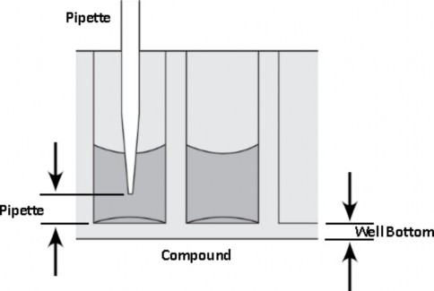
CAUTION! Selection of an incorrect compound plate type can result in the pipette tips jamming into the wells and damaging the plate, the tips, and the instrument.

Use the Pipette Tips Layout category in the Settings dialog to define which pipette tips to use. If you use a partial rack of tips, use this category to have the software instruct the instrument to pull tips from the location of the tips you insert in the tip drawer.
When you select a 96-well assay plate in the Plate Type category, the Plate Tips Layout category displays a column of 12 tips. See Plate Type Settings on page 115.
When you select a 384-well assay plate in the Plate Type category, the Plate Tips Layout category displays a column of 24 tips.
To use all the tips in the rack:
 Select the Select All check box.
Select the Select All check box.
The tips selection must be contiguous. To select a contiguous set of tips:  Drag the mouse to select the tips to use.
Drag the mouse to select the tips to use.
If you change the assay plate type in the Plate Type category to a plate with a different number of wells (for example, from 96-wells to 384-wells), the Pipette Tips Layout category defaults to the selection of the full rack of tips.

CAUTION! You should use a full rack of tips each time you do a fluid transfer. If you configure a pipetting function from a tip that is not present, your samples do not receive the intended compound. There is potential of damage to the plate, the tips, and the instrument.

Use the Compound & Tips Columns category in the Settings dialog to define the tips and compounds to use for each transfer.
These settings are dependent on the selection you make in the Plate Type category for the assay plate and the number of transfers you define in the Compound Transfer category. See Plate Type Settings on page 115 and Compound Transfer Settings on page 145.
 For a 96-well assay plate, 12 columns display.
For a 96-well assay plate, 12 columns display.
 For 384-well assay plate, use the scroll bar to view the additional columns. Each transfer appears as a color coded row.
For 384-well assay plate, use the scroll bar to view the additional columns. Each transfer appears as a color coded row.
The black row at the bottom represents the initial volume in the wells based on your Initial Volume entry in the Compound Transfer category.
Your Read Area category setting also affects these settings. See Read Area Settings on page 119.
Display for a read area that includes columns 3 - 8 on a 96-well assay plate
The left axis displays the dispensed compound volume as a percentage of the total well volume on the assay plate.
Each assay plate column has two indicators for each transfer:
 #T = Tips: Displays the column in the tip rack drawer from which the instrument will pull the tip for the transfer. You define available tips in the Pipette Tips Layout category. See Pipette Tips Layout Settings on page 149.
#T = Tips: Displays the column in the tip rack drawer from which the instrument will pull the tip for the transfer. You define available tips in the Pipette Tips Layout category. See Pipette Tips Layout Settings on page 149.
 #C = Compound: Displays the column in the compound plate from which the instrument will aspirate the fluid to transfer to the assay plate for each pipetting event.
#C = Compound: Displays the column in the compound plate from which the instrument will aspirate the fluid to transfer to the assay plate for each pipetting event.
 Hover the mouse over a cell to display details including the transfer volume.
Hover the mouse over a cell to display details including the transfer volume.
Tip: To leave the tips on between columns for the Flex read type, select the Leave Tips On between Columns check box in the Compound Transfer category.

Auto Populate
Use the Auto Populate feature to have the software assign the fluid to aspirate from the compound plate starting with the first available column. The instrument then dispenses the aspirated fluid to the first available column in the assay plate based on your Read Area category settings.
The software makes the assignments based on the following conditions:  All columns you select in the Read Area category are to receive fluid.
All columns you select in the Read Area category are to receive fluid.
 The fluids transfer from left to right. The read-transfer-read sequence in each column is initiated only after the read-transfer-read event from the previous column completes (the total read time for that column).
The fluids transfer from left to right. The read-transfer-read sequence in each column is initiated only after the read-transfer-read event from the previous column completes (the total read time for that column).
 The fluid transfer targets are cumulative from transfer to transfer. That is, the targets for the second transfer start with the next available clean tip and untargeted compound column rather than reusing tips and compound columns targeted by the preceding fluid
The fluid transfer targets are cumulative from transfer to transfer. That is, the targets for the second transfer start with the next available clean tip and untargeted compound column rather than reusing tips and compound columns targeted by the preceding fluid
transfer.
 Each fluid transfer uses a new tip.
Each fluid transfer uses a new tip.
Example: Suppose you define the following settings for three fluid transfers:  Read Area category: Columns 1 through 4
Read Area category: Columns 1 through 4
 Compound Source category: 12-column compound plate, such as a 96-well plate
Compound Source category: 12-column compound plate, such as a 96-well plate  Pipette Tips Layout category: Full rack of tips
Pipette Tips Layout category: Full rack of tips
The software instructs the instrument to selects tips from columns 1 - 4 in the tip rack drawer, to aspirate compound from columns 1 - 4 in the compound plate drawer, and to dispense the compound into the wells in columns 1 - 4 on the assay plate in the read chamber drawer. The second transfer uses the next four columns (5 through 8), and the third transfer uses the remaining four unused columns (9 through 12).

Note: The software does not assign targets beyond the limitations of the available tips and compound source columns. After all available tips and compound source columns have been assigned, the software stops assigning targets.

To have the software automatically assign the tips and columns:  Click Auto Populate.
Click Auto Populate.
Manually Populate
For more complex assays, you can manually define the tips to use and the columns from which to aspirate compound.
Image example displays:
Read Area: columns 3 - 8 on a 96-well assay plate Compound Transfers: 2
Selecting a tip with Pipette Tips Layout: columns 3 - 8 No fluid transfer for compound 2 into column 3
You can manually assign tips and source columns for each and every transfer.
To assign each transfer a set of tips from the tip rack and a column from the source plate:
Click T in a column to display a drop-down list of the pipette tip columns you made available in the Pipette Tips Layout category. Select the column from which to have the instrument pull the tip from the instrument tip drawer.
Click C in a column to display a drop-down list of the number of columns in the compound plate from which the instrument can aspirate the compound. Select the column on the source plate from which to aspirate the compound.
If the assay requires that no fluid is to transfer to the assay plate for a column during one or more transfer operations, click X at the top of the drop-down list. displays for the columns to skip.
To allow a transfer for a skipped column, click , then assign the tip and source columns for the transfer.

Tip: To leave the tips on between columns for the Flex read type, select the Leave Tips On between Columns check box in the Compound Transfer category.

Use the Triturate category in the Settings dialog to define how to mix the contents of the wells in a plate by using the pipettor to alternately aspirate fluid from a well and then dispense it back into the well.
Trituration is recommended when you need to resuspend the compound in the source plate before it is added, when you transfer low volumes of fluid to the assay plate, or when you transfer fluid before or during an absorbance read to make sure that the well contents are properly mixed.
To define triturate settings:
- Select the compound transfer to define and repeat the following steps for each applicable transfer.
Select the Compound Source check box to do trituration in the compound plate.

Note: Select both check boxes to do trituration in both plates.
Select the Assay Plate check box to do trituration in the assay plate.

In the Volume field, enter the volume of fluid in microliters to withdraw from the well.
In the Cycles field, enter the number of times to aspirate and dispense the fluid in the well.
For the Assay Plate, enter a value for the Height at which the trituration occurs. The height setting must consider the trituration volume you enter and the total volume in the well to have the tips remain below the liquid surface and not aspirate air.

Note: If you enter a Time Point that is incompatible with the Triturate settings, a message appears. You modify the Time Point in the Compound Transfer category. See Compound Transfer Settings on page 145.

Acquisition View and Reads With Injectors
The Settings dialog for the SpectraMax i3, SpectraMax i3x, SpectraMax iD3, and SpectraMax iD5 provides two methods to configure a plate read.

Note: You must use the Acquisition view to define reads with injection.
The Acquisition view uses an acquisition plan with tools that allows you to define settings in a workflow design when you need to do multi-step plate reads.

To switch between the views:
 Click in the lower-left corner in the Settings dialog.
Click in the lower-left corner in the Settings dialog.

Note: If you define a read with injection and then switch to the Standard view, your settings are not saved.

The following image shows a read for a 96-well Standard plate of an entire plate with an Acquisition Plan for a Luminescence Kinetic read with SmartInject technology. The Acquisition Plan starts with plate optimization and does 10 baseline reads before the injection step. It then delays one second after the injection ends before the Luminescence read starts. All the acquisition steps are in a Loop between the For Each Well node and the Next Well node.
Plate Settings
Use the top area of the dialog to select the plate settings, read area, and read order. To define plate settings:
Click the Plate Size drop-down and select the number of wells in the plate.
Click the Plate Name drop-down and select a plate.
Click to display the Plate Editor dialog where you can edit or create a plate. See Plate Editor on page 117.
Select the Plate has a Lid on Top check box if the plate has a lid.
CAUTION! If the plate has a lid, you must verify that the plate height with a lid is set accurately in the Plate Editor dialog before you start a read.

Click Read Area:
 Select the Select All check box to read all the wells in the plate.
Select the Select All check box to read all the wells in the plate.
 To select a contiguous, rectangular region on the plate, use your mouse to drag the pointer and select the wells to read.
To select a contiguous, rectangular region on the plate, use your mouse to drag the pointer and select the wells to read.
Select a Read Order:
 Select Row to read the entire plate row-by-row.
Select Row to read the entire plate row-by-row.
 Select Column to read the entire plate column-by-column.
Select Column to read the entire plate column-by-column.
 To do a Well read order, add a For Each Well loop in the Acquisition view.
To do a Well read order, add a For Each Well loop in the Acquisition view.
Toolbox and Acquisition Plan
The lower area of the dialog provides a toolbox that contains the available steps and the Acquisition Plan that displays the time line of steps for the protocol.
 Shake - Add a Shake step to have the instrument shake the plate in the chamber.
Shake - Add a Shake step to have the instrument shake the plate in the chamber.
Click  to display Shake settings where you define the shake duration and shake method. To shake the plate at the same time as an injection, add a SmartInject™ step not an Inject step or a Shake step.
to display Shake settings where you define the shake duration and shake method. To shake the plate at the same time as an injection, add a SmartInject™ step not an Inject step or a Shake step.

 Plate Optimizer - Add a Plate Optimizer node to have the software display the Pre- Read Optimization Options dialog before the plate is read. You can place this step only at the beginning of the Acquisition Plan. See Show Pre-Read Optimization Options on page 143.
Plate Optimizer - Add a Plate Optimizer node to have the software display the Pre- Read Optimization Options dialog before the plate is read. You can place this step only at the beginning of the Acquisition Plan. See Show Pre-Read Optimization Options on page 143.
 Delay - Add a Delay step after an Inject step or a SmartInject step to have the instrument wait after the injection before the read begins. Click
Delay - Add a Delay step after an Inject step or a SmartInject step to have the instrument wait after the injection before the read begins. Click  to display Delay settings where you define the number of seconds to wait between steps (from 0.001 seconds to 100 seconds). The Delay node compensates for the hardware delay. See below for details.
to display Delay settings where you define the number of seconds to wait between steps (from 0.001 seconds to 100 seconds). The Delay node compensates for the hardware delay. See below for details.
 Inject - Add an Inject step for a simple injection. Click
Inject - Add an Inject step for a simple injection. Click  to display Inject settings. Select the injector to use and enter the number of microliters (μL) to dispense. You can dispense from 1 μL to the maximum allowable volume of the well, based on the plate type you select. Define the dispense volume based on the requirements of your assay and the net volume available in the well. To shake the plate after an injection, add a Shake step after the Inject step. To shake the plate during an injection, use a SmartInject step not an Inject step.
to display Inject settings. Select the injector to use and enter the number of microliters (μL) to dispense. You can dispense from 1 μL to the maximum allowable volume of the well, based on the plate type you select. Define the dispense volume based on the requirements of your assay and the net volume available in the well. To shake the plate after an injection, add a Shake step after the Inject step. To shake the plate during an injection, use a SmartInject step not an Inject step.
 Smart Inject - Add a SmartInject step to shake the plate during an injection. The plate continues to shake through the following delay step, if you add a Delay step and stops shaking before the instrument reads the well. Click to display SmartInject settings. Select the injector to use and enter the number of microliters (μL) to dispense. You can dispense from 1 μL to the maximum allowable volume of the well, based on the plate type you select. Define the dispense volume based on the requirements of your assay and the net volume available in the well.
Smart Inject - Add a SmartInject step to shake the plate during an injection. The plate continues to shake through the following delay step, if you add a Delay step and stops shaking before the instrument reads the well. Click to display SmartInject settings. Select the injector to use and enter the number of microliters (μL) to dispense. You can dispense from 1 μL to the maximum allowable volume of the well, based on the plate type you select. Define the dispense volume based on the requirements of your assay and the net volume available in the well.

 Baseline - For the Kinetic read type, add a Baseline step before an Inject step or a SmartInject step to have the instrument take baseline reads. Click and enter the number of baseline reads (from 1 to 999). You can then subtract the baseline data from the reads that follow the injection. You can use the Formula Editor dialog to automate baseline subtraction.
Baseline - For the Kinetic read type, add a Baseline step before an Inject step or a SmartInject step to have the instrument take baseline reads. Click and enter the number of baseline reads (from 1 to 999). You can then subtract the baseline data from the reads that follow the injection. You can use the Formula Editor dialog to automate baseline subtraction.
 For Each Well - Reads with injection are generally done well-by-well. Use the For Each Well loop to have the instrument run all the steps in the Acquisition Plan for each well individually. All the injections, delays, and reads you define are done on the first well before the steps are run again for the next well. The software adds a Next Well node to the end of the plan. Add the steps for the assay between the For Each Well node and the Next Well node.
For Each Well - Reads with injection are generally done well-by-well. Use the For Each Well loop to have the instrument run all the steps in the Acquisition Plan for each well individually. All the injections, delays, and reads you define are done on the first well before the steps are run again for the next well. The software adds a Next Well node to the end of the plan. Add the steps for the assay between the For Each Well node and the Next Well node.
Creating Acquisition Plans
The steps in the Acquisition Plan occur in sequence from left to right between the Begin node and the End node. When a step has multiple settings, the settings display below the step in the time line.
To create an acquisition plan:
To start from scratch, click Clear All or click the Load Predefined Acquisition Template
drop-down and select a predefined Acquisition Plan.
In the Toolbox area on the left, either double-click or drag Acquisitions, Actions, and Loops to the Acquisition Plan. The software allows you to place each step in an appropriate place in the plan. Example: You can place the Plate Optimizer node only at the beginning of the plan.
When you add a step to the Acquisition Plan, a prompt appears:
 Some Acquisitions require you to select hardware for the optical configuration. This can be the monochromator or a detection cartridge for the SpectraMax i3x. See Supported Detection Cartridges on page 343.
Some Acquisitions require you to select hardware for the optical configuration. This can be the monochromator or a detection cartridge for the SpectraMax i3x. See Supported Detection Cartridges on page 343.
 All Acquisitions require you to select a read type. See Endpoint Read Type on page 275, Kinetic Read Type on page 275, Spectrum Read Type on page 276, and Well Scan Read Type on page 276.
All Acquisitions require you to select a read type. See Endpoint Read Type on page 275, Kinetic Read Type on page 275, Spectrum Read Type on page 276, and Well Scan Read Type on page 276.
Add Actions and Loops.
Add an injector step or a SmartInject step.
Click a node to display .  Click to delete the node.
Click to delete the node.
 Click
Click  to display settings for the node.
to display settings for the node.
 Wavelength Settings on page 113
Wavelength Settings on page 113
 PathCheck Technology Settings on page 120
PathCheck Technology Settings on page 120  PMT and Optics Settings on page 121
PMT and Optics Settings on page 121
 Well Scan Settings on page 124
Well Scan Settings on page 124  Shake Settings on page 124
Shake Settings on page 124
 Speed Read Settings on page 125
Speed Read Settings on page 125
 Normalization on page 144 (for SpectraMax i3x)
Normalization on page 144 (for SpectraMax i3x)  Interlaced Reading on page 144
Interlaced Reading on page 144
After you define the settings for a step in the Acquisition Plan, click the Workspace outside of the settings.
After you define the instrument settings, click OK to close the Settings dialog.
Before you start a read, you should save the document. See Saving Protocols and Data Documents on page 22.
SpectraMax i3x Injector Reads
To define injector reads for the SpectraMax i3x:
Install the Injector Cartridge into the cartridge drawer.
When you add a Luminescence read to the Acquisition Plan, select INJECTOR from the Select Hardware list to use the Injector Cartridge for the read. A Luminescence read with injection is taken from the top of the plate.
When you add a Fluorescence Intensity read to the Acquisition Plan, select MONO from the Select Hardware list to use the instrument's built-in monochromator for the read. A Fluorescence Intensity read with injection is taken from the bottom of the plate.
Delay Details
SpectraMax iD3 and SpectraMax iD5 Delay
The Delay step compensates for the hardware delay. If the delay you define is longer than the hardware delay, then the actual delay time is the delay time you define. However, if the delay you define is shorter than the hardware delay, then the actual delay time is the hardware delay time. For example, if you define a Luminescence read delay of 1 second, then the actual delay time between the end of the injection and the beginning of the read is
1 second. However, if you define a Luminescence read delay of 0.05 seconds, then the actual delay time between the end of the injection and the beginning of the read is 0.3 seconds due to the hardware delay.
 For Absorbance reads there is an 800 msec delay after injection for both injectors.
For Absorbance reads there is an 800 msec delay after injection for both injectors.
 For Luminescence top reads there is a 500 msec delay after injection for both injectors.
For Luminescence top reads there is a 500 msec delay after injection for both injectors.
 For Fluorescence top and bottom reads there is a 500 msec delay when the injector 1 injection starts and a 500 msec delay after the injector 2 injection ends.
For Fluorescence top and bottom reads there is a 500 msec delay when the injector 1 injection starts and a 500 msec delay after the injector 2 injection ends.
SpectraMax i3x Delay
 For Luminescence reads, there is a delay of 0.3 seconds after the injection ends and before the read begins to allow time for the detector to move into position for the read.
For Luminescence reads, there is a delay of 0.3 seconds after the injection ends and before the read begins to allow time for the detector to move into position for the read.
 For Fluorescence intensity reads, there is no delay for injector number 1. The read starts at the same time as the injection unless you add a Delay step. For injector number 2, there is a delay of 0.3 seconds after the injection ends and before the read begins.
For Fluorescence intensity reads, there is no delay for injector number 1. The read starts at the same time as the injection unless you add a Delay step. For injector number 2, there is a delay of 0.3 seconds after the injection ends and before the read begins.
Creating Absorbance Mode Protocols
To create an Absorbance Mode protocol:
Select an instrument. See Selecting an Instrument on page 58.
Open a document.
In the Navigation Tree, select a Plate section or a Cuvette Set section.
Click  in the section toolbar, the Settings Information area, or on the Home tab to display the Settings dialog.
in the section toolbar, the Settings Information area, or on the Home tab to display the Settings dialog.
For the SpectraMax Paradigm, select the Absorbance Detection Cartridge. For the SpectraMax i3x, select Monochromator.
Select the ABS read mode.
Select a Read Type.
Define the settings.
For more information about the settings, see the SoftMax Pro Application Help.
After you define the instrument settings, click OK to close the Settings dialog.
Create a template, if applicable. See Template Editor on page 87.
Set Data Reduction parameters, if applicable. See Data Reduction on page 193.
Set Display options, if applicable. See Data Display Options on page 204.
Save the settings to a protocol. See Saving Protocols and Data Documents on page 22.
Absorbance is the quantity of light absorbed by a solution. To measure absorbance accurately, it is necessary to eliminate light scatter. If there is no turbidity, then absorbance = optical density.
A = log10(I0 /I) = –log10(I/I0)
where I0 is intensity of the incident light before it enters the sample divided by the light after it passes through the sample, and A is the measured absorbance.
Applications of Absorbance
Absorbance measurements are used to quantify the concentration of an absorbing species. It must be known at what wavelength a species absorbs light. For example, the concentration of nucleic acids can be quantified by measuring the absorbance at 260 nm.
Optimizing Absorbance Assays
You can adjust the wavelength of the incident light in 1 nm increments. The software allows you to read up to six wavelengths per plate or cuvette for Endpoint and Kinetic read types and up to four wavelengths for Well Scan reads.
It is good scientific practice to designate wells in the plate to serve as plate blanks or group blanks in the Template Editor dialog from a Plate section. See Template Editor on page 87.

Note: Assay optimization requires the use of a computer and SoftMax Pro Software.
You can use the PathCheck Pathlength Measurement Technology feature to normalize the data to a 1 cm pathlength. See PathCheck Pathlength Measurement Technology on page 280.

Creating Fluorescence Intensity Mode Protocols
To create a Fluorescence Intensity protocol:
Select an instrument. See Selecting an Instrument on page 58.
In the Navigation Tree, select a Plate section or Cuvette Set section.
Click  in the section toolbar, the Settings Information area, or on the Home tab to display the Settings dialog.
in the section toolbar, the Settings Information area, or on the Home tab to display the Settings dialog.
For the SpectraMax Paradigm, select a Fluorescence Intensity cartridge. For the SpectraMax i3x, select either Monochromator or select a Fluorescence Intensity cartridge.
Select the FL read mode.
Select a Read Type.
Define the settings.
For more information about the settings, see the SoftMax Pro Application Help.
After you define the instrument settings, click OK to close the Settings dialog.
Create a template, if applicable. See Template Editor on page 87.
Set Data Reduction parameters, if applicable. See Data Reduction on page 193.
Set Display options, if applicable. See Data Display Options on page 204.
Save the settings to a protocol. See Saving Protocols and Data Documents on page 22.
Fluorescence occurs when absorbed light is re-radiated at a longer wavelength. In the Fluorescence Intensity (FL) read mode, the instrument measures the intensity of the re- radiated light and expresses the result in Relative Fluorescence Units (RFU).
The governing equation for fluorescence is:
Fluorescence = extinction coefficient × concentration × quantum yield × excitation intensity × pathlength × emission collection efficiency
Fluorescent materials absorb light energy of a characteristic wavelength (excitation), undergo an electronic state change, and instantaneously emit light of a longer wavelength (emission). Most common fluorescent materials have well-characterized excitation and emission spectra. The following figure shows an example of excitation and emission spectra for a fluorophore. The excitation and emission bands are each fairly broad, with half-bandwidths of approximately 40 nm, and the difference between the wavelengths of the excitation and emission maxima (the Stokes shift) is generally fairly small, about 30 nm. There is considerable overlap between the excitation and emission spectra (gray area) when a small Stokes shift is present.
Excitation maximum
Emission maximum
Stokes Shift
Absorption
1.0
Relative Fluorescence
0.5
0
500 550 600 650
Wavelength (nm)
Tip: If the Stokes shift is small, choose an excitation wavelength that is as far away from the emission maximum as possible while still being capable of stimulating the fluorophore so that less of the excited light overlaps the emission spectrum, permitting better selection and quantitation of the emitted light.

Because the intensity of the excitation light is usually many tens of thousands of times greater than that of the emitted light, some type of spectral separation is necessary to reduce the interference of the excitation light with detection of the emitted light.
The SpectraMax readers incorporate many features designed to restrict interference from reflected excitation light. These features include a set of long-pass emission cutoff filters that can be set automatically by the instrument or manually by the user.
Excitation maximum of fluorophore
Excitation
reading wavelength
Emission maximum of fluorophore
Emission
reading wavelength
1.0
Relative Fluorescence
0.5
0
500 550 600 650
Wavelength (nm)
The previous figure shows that the best results are often obtained when the excitation and emission wavelengths used for reads are not the same as the peak wavelengths or maxima of the excitation and emission spectra of the fluorophore. When the wavelengths for excitation and emission are separated, a smaller quantity of excitation light passes through to the emission monochromator (gray area) and on to the PMT, resulting in a purer emission signal and more accurate data.
The SpectraMax readers permit scanning of both excitation and emission wavelengths, using separate tunable monochromators. One benefit of scanning emission spectra is that you can determine more accurately whether the emission is, in fact, the expected fluorophore, or multiple fluorophores, and not one generated by a variety of background sources or by contaminants. One more benefit is that you can find excitation and emission wavelengths that prevent interference when interfering fluorescent species are present.
For this reason, it is desirable to scan emission for both an intermediate concentration of labeled sample, as well as the background of unlabeled sample. The optimal setting is where the ratio of the sample emission to background emission is at the maximum.
Optimizing Fluorescence Intensity Assays
The optimal instrument settings for detection of a particular fluorophore depend on a number of different factors. Settings you can adjust for assay optimization include the excitation and emission wavelengths, emission cutoff filter, reads per well, the PMT voltage, and the temperature of the read chamber.
Another important factor that is independent of the instrument but can affect assay optimization is the Stokes shift, which is the difference between the wavelengths of the excitation and emission maxima. When the Stokes shift is very small, optimizing the excitation and emission wavelengths and correct cutoff filter choices are very important.
 Excitation and Emission Wavelengths
Excitation and Emission Wavelengths
The excitation and emission wavelengths can be set in 1 nm increments between 250 nm and 850 nm. The available wavelengths are dependent on the instrument. For more information about the available wavelengths, see the documentation for the instrument you are using.
A procedure to optimize excitation and emission wavelengths for a given assay is outlined in Spectral Scanning on page 163.
 Emission Cutoff Filter
Emission Cutoff Filter
The emission cutoff filters assist in reducing background. Sources of background include stray excitation light and native fluorescence of plate materials, sample constituents, and solvents (including water). The default setting lets the instrument and the software determine which cutoff filter to use for the Endpoint and Kinetic read types. The Spectrum read type default uses no cutoff filter.
 Reads Per Well
Reads Per Well
The number of reads per well can vary between 1 (for a quick estimate) and 100 (for very precise measurements). The default number of reads per well varies with the read mode: for Fluorescence, the default is 6, and for Luminescence the instrument does 1 read per well.
 PMT Voltage
PMT Voltage
The voltage of the photomultiplier tube can be set to low (for higher concentration samples), medium, or high (for lower concentration samples) for all read modes. For the Endpoint and Spectrum read types, you can select Automatic to have the instrument automatically adjusts the PMT voltage for varying concentrations of sample in the plate.
 Temperature Control
Temperature Control
The chamber of the instrument is isothermal at ambient as well as at elevated temperatures.
The temperature in the read chamber can be adjusted from 2°C (3.6°F) above ambient to the maximum temperature for the instrument. See the instrument user guide.
Spectral Scanning
This procedure optimizes excitation and emission wavelengths for Fluorescence assays using spectral scanning.
For the SpectraMax iD3, SpectraMax iD5, SpectraMax i3x, and SpectraMax Paradigm with a Tunable Wavelength (TUNE) Detection Cartridge, see Spectral Optimization on page 182.
Pipette 200 µL of sample that includes the fluorophore and 200 µL of a buffer control into separate wells of the plate.
Excitation Scan
Set up a Plate section for the Fluorescence read mode, Spectrum read type, Em Fixed/Ex Scan, with no cutoff filter (default), and medium PMT.
Set the emission wavelength based on the tentative value from the literature (or from a customary filter set used to measure the fluorophore). If the emission wavelength is not known, select a tentative emission wavelength about 50 nanometers greater than the absorbance maximum of the fluorophore. If necessary, the absorbance maximum can be determined by performing an optical density spectral scan first.
Set the excitation scan to start/stop approximately 50 nm below/above the tentative excitation value from the literature (or the customary excitation filter).
Set the step increment to 2 nm or 3 nm. You can choose to do a preliminary scan with a 10 nm increment to determine the approximate peak location, and then repeat the scan over a narrower wavelength range with a 2 nm or 3 nm increment.
Do the scan and view the results as a plot of emission fluorescence vs. excitation wavelength. Note the excitation wavelength at the emission peak and the maximum RFU value.
If a Missing Data Points message occurs, it can be due to possible saturation reported by the software at the end of the spectral scan. Reset the PMT to Low and rescan the sample (scan the buffer blank with the PMT set to Medium or High). If the error occurs after you scan with the PMT set to Low, you may need to dilute the sample.
If the excitation scan shows no apparent peak, change the PMT setting to High and rescan the sample. If the spectral scan still shows no apparent peak, adjust the Y-scale of the zoom plot so that the plot fills the graph.
Select the optimal excitation wavelength.
 If the excitation peak wavelength and emission wavelength are separated by more than 80 nm, use the excitation peak wavelength value.
If the excitation peak wavelength and emission wavelength are separated by more than 80 nm, use the excitation peak wavelength value.
 If the excitation and emission wavelengths are less than 80 nm apart, use the shortest excitation wavelength that gives 90% maximal emission. Follow the plot to the left of the peak until the RFU value falls to approximately 90% of the maximum, and then drop a line from the 90% point on the plot to the x-axis as shown in the following figure.
If the excitation and emission wavelengths are less than 80 nm apart, use the shortest excitation wavelength that gives 90% maximal emission. Follow the plot to the left of the peak until the RFU value falls to approximately 90% of the maximum, and then drop a line from the 90% point on the plot to the x-axis as shown in the following figure.
Plot of RFU and Wavelength
Emission Scan #1
Set up a second Plate section for the Fluorescence read mode, Spectrum read type, Ex Fixed/Em Scan, with no cutoff filter (default), and Medium PMT.
Set the excitation wavelength to the value you determine in the Excitation Scan section above.
Set the emission scan to start/stop approximately 50 nm below or above the tentative emission value from the literature (or existing filter pair).

Note: If the Stokes shift is less than 50 nm, then start the emission scan above the excitation wavelength.

Set the step increment to 2 nm to 3 nm (or do a preliminary scan with a 10 nm increment to determine the approximate peak location and then repeat the scan over a narrower wavelength range using a 2 nm to 3 nm increment.)
Do the scan and view the results as a plot of fluorescence vs. emission wavelength.
Choose the Emission Filter
Select an emission cutoff filter that blocks as much of the residual excitation light as possible without unduly reducing the fluorescence signal. The cutoff wavelength choices are 325, 420, 435, 475, 495, 515, 530, 550, 570, 590, 610, 630, 665, or 695 nm. The cutoff value should be near the maximum emission wavelength (preferably between the excitation wavelength and the maximal emission wavelength) but a minimum of 10 nm less than the emission wavelength. If you have questions, contact Molecular Devices Technical Support and speak to an application scientist.
Emission Scan #2
Set up a third Plate section for an emission scan as specified in Emission Scan #1, except select the Manual Cutoff Filter and set the wavelength to the value you determine in the Choose the Emission Filter section above.
Do the scan and view the results as a plot of fluorescence vs. emission wavelength. Note the wavelength that gives the maximum emission (the optimal emission wavelength).
Compare the spectra of the sample that contains the fluorophore to the spectra of the buffer blank to get an estimate of the signal-to-noise ratio. If there is significant background interference, repeat the Choose the Emission Filter steps and the steps in this section with a different choice of cutoff filter.
Results
The optimal excitation and emission wavelengths are those you determine in the Excitation Scan section and the Emission Scan #2 section.
Comments
 For the Fluorescence read mode with the Endpoint or Kinetic read type, the AutoCutoff feature generally selects the same cutoff filter wavelength as the previously described optimization method. However, you can specify the cutoff filters manually.
For the Fluorescence read mode with the Endpoint or Kinetic read type, the AutoCutoff feature generally selects the same cutoff filter wavelength as the previously described optimization method. However, you can specify the cutoff filters manually.
 For emission wavelengths less than 325 nanometers, experimental iteration is usually the best method to determine the optimal emission and excitation wavelengths. Start the previously described optimization procedure. Try emission and excitation wavelength combinations with the 325 cutoff or with no cutoff filter. For excitation wavelengths greater than 660 nanometers, try emission and excitation wavelength combinations with the 695 cutoff or with no cutoff filter.
For emission wavelengths less than 325 nanometers, experimental iteration is usually the best method to determine the optimal emission and excitation wavelengths. Start the previously described optimization procedure. Try emission and excitation wavelength combinations with the 325 cutoff or with no cutoff filter. For excitation wavelengths greater than 660 nanometers, try emission and excitation wavelength combinations with the 695 cutoff or with no cutoff filter.
The following table lists default settings for the emission cutoff filters.
# | Automatic Cutoff Selection Wavelength (nm) | Endpoint and Kinetic Modes Emission Wavelength (nm) |
1 | None | < 415 |
2 | 420 | 415–434 |
3 | 435 | 435–454 |
4 | 455 | 455–474 |
5 | 475 | 475–494 |
6 | 495 | 495–514 |
7 | 515 | 515–529 |
8 | 530 | 530–549 |
9 | 550 | 550–569 |
10 | 570 | 570–589 |
11 | 590 | 590–609 |
12 | 610 | 610–629 |
13 | 630 | 630–664 |
14 | 665 | 665–694 |
15 | 695 | 695–850 |
Emission Cutoff Filter Default Settings For SpectraMax M2, M2e, M3, M4, M5, M5e, and FlexStation
Creating Luminescence Mode Protocols
The SpectraMax L has a unique set of Luminescence Mode settings. For details see the SpectraMax L User Guide.
To create a Luminescence Mode protocol:
Select an instrument. See Selecting an Instrument on page 58.
In the Navigation Tree, select a Plate section or Cuvette Set section.
Click  in the section toolbar, the Settings Information area, or on the Home tab to display the Settings dialog.
in the section toolbar, the Settings Information area, or on the Home tab to display the Settings dialog.
For the SpectraMax Paradigm, select a Luminescence cartridge. For the SpectraMax i3x, select either Monochromator or select a Luminescence cartridge.
Select the LUM read mode.
Select a Read Type.
Define the settings.
For more information about the settings, see the SoftMax Pro Application Help.
After you define the instrument settings, click OK to close the Settings dialog.
Create a template, if applicable. See Template Editor on page 87.
Set Data Reduction parameters, if applicable. See Data Reduction on page 193.
Set Display options, if applicable. See Data Display Options on page 204.
Save the settings to a protocol. See Saving Protocols and Data Documents on page 22.
Luminescence is the emission of light by processes that derive energy from essentially non- thermal changes, the motion of subatomic particles, or the excitation of an atomic system by radiation. Luminescence detection relies on the production of light from a chemical reaction in a sample.
In luminescence read mode, no excitation is necessary as the species being measured emit light naturally. For this reason, the lamp does not flash, so no background interference occurs. A dark estimate is done over a dark reference, and multiple reads are averaged together into one read per well.
The default setting for luminescence is the “zero order” position where the grating monochromator acts as a mirror that reflects all light to the PMT detector. You can choose the wavelength where peak emission is expected to occur. Also, multiple wavelength choices let species with multiple components be differentiated and measured easily. In luminescence read mode, no emission cutoff filter is used.
Optimizing Luminescence Assays
Luminescence can be read from the top or the bottom of a plate. You should use solid white plates or white plates with clear bottoms for luminescence reads.
For standard luminescence a separate light path without monochromators carries the emitted light to a dedicated PMT. The optimal emission wavelength is between 360 nm and 630 nm. In the Settings dialog the emission says All.
For wavelength-selectable luminescence, the instrument uses the emission monochromator to differentiate the wavelengths being emitted from the well. You can define multiple emission wavelengths.
To read only one luminescent event in the well, you can get the best sensitivity using the standard luminescence measurement, without a wavelength selected.
Luminescence read times are not designated by multiple reads per well, but rather by the total integration time you enter (between 1 ms and 1500 ms). Typical luminescence assays require between 500 ms and 1000 ms integration.
If wells are incubated for a long period of time, you should mix the plate before the read. This can be done using the Shake setting.
If it seems that the signal is always higher in the first wells read (for example, column A), you should dark adapt the plate to reduce the auto-luminescence of the white plastic. To help eliminate background luminescence from a plate that has been exposed to light, you should dark adapt the plate by placing the sample-loaded plate inside the instrument for several minutes before you start the read.
Creating Time-Resolved Fluorescence Mode Protocols
To create a Time-Resolved Fluorescence Mode protocol:
Select an instrument. See Selecting an Instrument on page 58.
In the Navigation Tree, select a Plate section or Cuvette Set section.
Click in the section toolbar, the Settings Information area, or on the Home tab to display the Settings dialog.
For the SpectraMax Paradigm and SpectraMax i3x, select a TRF-capable detection cartridge.
Click TRF to select the Time-Resolved Fluorescence read mode.
Click a Read Type.
Define the settings.
For more information about the settings, see the SoftMax Pro Application Help.
After you define the instrument settings, click OK to close the Settings dialog.
Create a template, if applicable. See Template Editor on page 87.
Set Data Reduction parameters, if applicable. See Data Reduction on page 193.
Set Display options, if applicable. See Data Display Options on page 204.
Save the settings to a protocol. See Saving Protocols and Data Documents on page 22.
In Time-Resolved Fluorescence (TRF) read mode, the instrument detects the extremely long emission half-lives of rare earth elements called lanthanides.
Time-Resolved Fluorescence is a measurement technique that depends on three characteristics that lead to better discrimination between the specific signal, proportional to the quantity of label, and the unspecific fluorescence resulting from background and compound interference:
 Pulsed excitation light sources
Pulsed excitation light sources
 Time-gated electronics faster than the fluorescence lifetime
Time-gated electronics faster than the fluorescence lifetime  Labels with prolonged fluorescence lifetime
Labels with prolonged fluorescence lifetime
The time-gating electronics introduce a delay between the cutoff of each light pulse and the start of signal collection. During the delay, the unspecific fluorescence (caused by test compounds, assay reagents, and the plate) vanishes, while only a small portion of the specific fluorescence from the label is sacrificed. Enough of the specific signal remains during the decay period, with the added benefit of reduced background.
The use of long-lived fluorophores combined with time-resolved detection (a delay between excitation and emission detection) minimizes interference from fluorescence excitation light. Assays with these long-lifetime fluorophores have the advantage of very low background fluorescence. TRF detection is widely used in high throughput screening applications such as kinase assays.
In normal Fluorescence Intensity mode, the reads are taken while the lamp is on. The most common limitation to sensitivity in normal fluorescence is excitation energy or background fluorescence that cannot be eliminated from the emission signal. Since the lamp is the source of excitation energy, turning it off provides the best means of eliminating background excitation. The elimination of background excitation is the critical difference between fluorescence intensity measurements and TRF measurements.
Optimizing Time-Resolved Fluorescence Assays
For the Time-Resolved Fluorescence read mode, the instrument flashes the excitation lamp, then, after the lamp is off, collects the delayed emission for a period of time before the lamp flashes again. Long-lifetime rare-earth lanthanide dyes are generally used to provide a long- lived fluorescent signal that persists after the lamp turns off. Background fluorescence fades, while lanthanide chelates and cryptates have fluorescent lifetimes between 100 µs and 2 ms.
Time-Resolved Fluorescence assays can be read from the top or bottom of a plate. You should use solid white plates for top reads, and white plates with clear bottoms for bottom reads.
To optimize data collection for a particular assay, you define when to start and end data acquisition. The minimum is 50 µs after the lamp turns off and the maximum is 1450 µs, in 50 µs or 200 µs steps.
If the assay you use has low signal or gives results with high %CV, use 100 reads per well. If you require a faster read speed, experiment with fewer flashes per well until you achieve acceptable precision and speed.
The important settings to get the best results in Time-Resolved Fluorescence assays are integration delay and integration time:
To define TRF settings:
Click the Integration Delay drop-down and select the amount of time to elapse between the flash of the lamp (excitation) and the beginning of data acquisition from the well (emission).
Click the Integration Time drop-down and select the amount of time for the instrument to read the well.
The integration delay and integration time are usually specified in the package insert of commercially available Time-Resolved Fluorescence reagent kits. If you do not use a kit, start with a delay of 50 µs and try different delays up to 400 µs with a fixed integration time of
400 µs. After you choose the optimal delay, based on the highest ratio of a well that contains a fluorophore divided by wells that contain only buffer, optimize the integration time, which is generally between 400 µs and 1000 µs.
Some examples of TRF assays are:
 IMAP® TR-FRET
IMAP® TR-FRET
 Cisbio HTRF
Cisbio HTRF
 LanthaScreen TR-FRET
LanthaScreen TR-FRET  LANCE TR-FRET
LANCE TR-FRET
Creating FRET Mode Protocols
To create a Fluorescence Resonance Energy Transfer (FRET) protocol:
Select an instrument. See Selecting an Instrument on page 58.
In the Navigation Tree, select a Plate section or Cuvette Set section.
Click  in the section toolbar, the Settings Information area, or on the Home tab to display the Settings dialog.
in the section toolbar, the Settings Information area, or on the Home tab to display the Settings dialog.
For the SpectraMax Paradigm and SpectraMax i3x, select a FRET-capable detection cartridge.
Select the FRET read mode.
Select a Read Type.
Define the settings.
For more information about the settings, see the SoftMax Pro Application Help.
After you define the instrument settings, click OK to close the Settings dialog.
Create a template, if applicable. See Template Editor on page 87.
Set Data Reduction parameters, if applicable. See Data Reduction on page 193.
Set Display options, if applicable. See Data Display Options on page 204.
Save the settings to a protocol. See Saving Protocols and Data Documents on page 22.
Fluorescence resonance energy transfer (FRET) is a distance-dependent interaction between the electronic excited states of two dye molecules in which excitation is transferred from a donor molecule to an acceptor molecule without emission of a photon.
FRET relies on the distance-dependent transfer of energy from a donor molecule to an acceptor molecule. Due to its sensitivity to distance, FRET has been used to investigate molecular interactions. FRET is the radiationless transmission of energy from a donor molecule to an acceptor molecule. The donor molecule is the dye or chromophore that initially absorbs the energy and the acceptor is the chromophore to which the energy is subsequently transferred. This resonance interaction occurs over greater than interatomic distances, without conversion to thermal energy, and without a molecular collision. The transfer of energy leads to a reduction in the fluorescence intensity and excited state lifetime of the donor, and an increase in the emission intensity of the acceptor. A pair of molecules that interact in such a manner that FRET occurs is often referred to as a donor/acceptor pair.
While there are many factors that influence FRET, the primary conditions that need to be met for FRET to occur are relatively few:
 The donor and acceptor molecules must be in close proximity to each other.
The donor and acceptor molecules must be in close proximity to each other.
 The absorption or excitation spectrum of the acceptor must overlap the fluorescence emission spectrum of the donor.
The absorption or excitation spectrum of the acceptor must overlap the fluorescence emission spectrum of the donor.
The degree to which they overlap is referred to as the spectral overlap integral (J).
 The donor and acceptor transition must be approximately parallel.
The donor and acceptor transition must be approximately parallel.
Creating Fluorescence Polarization Mode Protocols
To create a Fluorescence Polarization Mode protocol:
Select an instrument. See Selecting an Instrument on page 58.
In the Navigation Tree, select a Plate section or Cuvette Set section.
Click  in the section toolbar, the Settings Information area, or on the Home tab to display the Settings dialog.
in the section toolbar, the Settings Information area, or on the Home tab to display the Settings dialog.
For the SpectraMax Paradigm and SpectraMax i3x, select a Fluorescence Polarization (FP) Detection Cartridge.
Select the FP read mode.
Select a Read Type.
Define the settings.
For more information about the settings, see the SoftMax Pro Application Help.
After you define the instrument settings, click OK to close the Settings dialog.
Create a template, if applicable. See Template Editor on page 87.
Set Data Reduction parameters, if applicable. See Data Reduction on page 193.
Set Display options, if applicable. See Data Display Options on page 204.
Save the settings to a protocol. See Saving Protocols and Data Documents on page 22.
Fluorescence Polarization detection is based on Fluorescence Intensity, with the important difference that it uses plane-polarized light, rather than non-polarized light. Microplate readers measure the Fluorescence Polarization of the sample by detecting light emitted both parallel and perpendicular to the plane of excitation.
By using a fluorescent dye to label a small molecule, the binding of a small molecule to an interaction partner of equal or greater size can be monitored through its speed of rotation.
The Fluorescence Polarization read mode returns two sets of data: one for fluorescence intensity parallel (P) to the excitation plane, and the other for fluorescence intensity perpendicular (S) to the excitation plane. The software uses the S and P values to calculate the Polarization (mP) and Anisotropy (r) values.
Although the raw S and P values are the true actual values returned from the instrument, the calculated Polarization (mP) and Anisotropy (r) values are treated as the raw data. These become the basis for further reduction calculations.
You can choose to display these data types in the Plate section. When raw (S&P) is displayed, the mP value is by default used for all reduction calculations. When exporting, the raw values that display are exported, whether mP, r, or Raw (S&P).
Polarization (mP) is calculated as follows:
mP = 1000 *
(parallel - (G * perpendicular)) (parallel + (G * perpendicular))
Anisotropy (r) is calculated as follows:
r = (parallel - (G * perpendicular)) (parallel + (2G * perpendicular))
Optimizing Fluorescence Polarization Assays
Fluorescence Polarization for the SpectraMax i3x Multi-Mode Detection Platform, the SpectraMax Paradigm Multi-Mode Microplate Reader, the SpectraMax M5 and M5e Multi- Mode Microplate Readers, the FlexStation 3 Multi-Mode Microplate Reader, and the FilterMax F3 and FilterMax F5 Multi-Mode Microplate Readers can be read from the top of a plate. The plastic from which a plate is formed has an effect on the light polarization, precluding bottom reads and reads of a covered plate from the top.
You should use solid black plates for reads. If the assay components seem to bind to the plate, as evidenced by poor mP dynamic range (small difference between bound and unbound tracer), you should use plates treated to minimize binding, or polypropylene plates, and add a very small quantity of detergent to the assay buffer.
Background wells, which contain all assay components minus the fluorophore, should be run alongside samples. If the signal in the background wells is more than 1/10 the signal in the wells that contain fluorophore, then background wells should be run on each assay plate. The average raw signal from the background's parallel and perpendicular reads should be subtracted from the raw parallel and perpendicular reads of each sample well before the mP calculation is done.
For best precision in assays that uses a low quantity of fluorophore (for example, <5 nm fluorescein), set the PMT sensitivity to High and the number of reads to 100. If a faster read speed is required, experiment with fewer flashes per well until acceptable precision and speed are achieved. Fewer flashes result in a higher speed, but with less precision.
Creating AlphaScreen Mode Protocols
To create an AlphaScreen Mode protocol:
Select the SpectraMax Paradigm or SpectraMax i3x instrument. See Selecting an Instrument on page 58.
In the Navigation Tree, select a Plate section.
Click  in the section toolbar, the Settings Information area, or on the Home tab to display the Settings dialog.
in the section toolbar, the Settings Information area, or on the Home tab to display the Settings dialog.
Select an AlphaScreen Detection Cartridge.
Select the Screen read mode.
Select a Read Type.
Define the settings.
For more information about the settings, see the SoftMax Pro Application Help.
After you define the instrument settings, click OK to close the Settings dialog.
Create a template, if applicable. See Template Editor on page 87.
Set Data Reduction parameters, if applicable. See Data Reduction on page 193.
Set Display options, if applicable. See Data Display Options on page 204.
Save the settings to a protocol. See Saving Protocols and Data Documents on page 22.
ALPHA stands for Amplified Luminescent Proximity Homogeneous Assay. AlphaScreen® is a bead-based chemistry used to study molecular interactions between moieties A and B, for example. When a biological interaction between A and B moves beads (coated with A and B, respectively) together, a cascade of chemical reactions produce a greatly amplified signal.
The cascade finally resulting in signal is triggered by laser excitation (680 nm), making a photosensitizer on the A-beads convert oxygen to an excited (singlet) state. The energized oxygen diffuses away from the A-bead. When reaching the B-bead in close proximity, it reacts with a thioxene derivative on the B-bead generating chemiluminescence at 370 nm. Energy transfer to a fluorescent dye on the same bead shifts the emission wavelength into the
520 nm to 620 nm range. The limited lifetime of singlet oxygen in solvent (~4 microseconds) lets diffusion reach up to only around 200 nm distance. Thus, only B-beads in the proximity of A-beads yield signal, which indicates binding between moieties A and B.
An AlphaScreen measurement includes a light pulse, by turning on the laser diode for a specified time, turning off the laser diode, followed by the measurement of the AlphaScreen signal, as specified in the measurement protocol timing parameters.

Note: AlphaScreen beads are light sensitive. Beads are best handled under subdued (<100 lux) or green filtered (Roscolux filters #389 from Rosco, or equivalent) light conditions. Do incubation steps in the dark.

For more information, see AlphaScreen Read Mode on page 306.
Creating Western Blot TRF Mode Protocols
To create a Western Blot TRF Mode protocol:
Select the SpectraMax Paradigm or SpectraMax i3x instrument. See Selecting an Instrument on page 58.
In the Navigation tree, select a Plate section.
Click  in the section toolbar, the Settings Information area, or on the Home tab to display the Settings dialog.
in the section toolbar, the Settings Information area, or on the Home tab to display the Settings dialog.
Select the SCANLATER WB cartridge for the ScanLater Western Blot (WB) Detection Cartridge. (Skip this step for the SpectraMax iD5.)
Select the TRF read mode.
Select the Membrane read type.
Define the settings. For more information about the settings, see the SoftMax Pro Application Help.
After you define the instrument settings, click OK to close the Settings dialog.
Save the settings to a protocol. See Saving Protocols and Data Documents on page 22.
Protein detection is an important task for pharmaceutical and clinical research, and Western Blots (WB), or protein immunoblots, are one of the most common methods employed for this purpose. Various techniques are used to detect proteins on Western Blot membranes including fluorescence, silver staining, and chemiluminescence. However, each technique has its limitations, and there is a continuous need to improve quantitation, accuracy, and dynamic range of Western Blots.
The Molecular Devices ScanLater™ Western Blot Assay Kit is a novel system for protein analysis that can be used with the SpectraMax Paradigm, SpectraMax i3x, and SpectraMax iD5. Membranes are incubated with Eu-chelate labeled secondary antibodies or streptavidin that bind specifically to the target protein-specific primary antibody. Europium has a long fluorescence lifetime, on the order of 1 msec, and detection is done in Time Resolved Fluorescence (TRF) mode which significantly reduces background from auto-fluorescence or other sources of short lifetime emissions. The membranes are placed into the instrument where they are scanned with the ScanLater Western Blot (WB) Detection Cartridge.
The method does not involve enzyme detection, and the Eu-chelates are resistant to photo- bleaching, so the signal remains stable for long periods of time (weeks to months). This allows you repeat the read of membranes and the potential for comparison of band intensities to known standards for more accurate quantitation. There is also no camera blooming, as can occur with chemiluminescence or fluorescence detection, so the system gives sharp bands and excellent image quality.
5
The TRF detection employs photon counting, so the theoretical dynamic range is >10 . In practice, however, dynamic range is limited by saturation of binding sites on high-abundant bands and non-specific binding to background membrane.
The SpectraMax Western Blot system is a simple, sensitive, and stable platform that provides excellent Western Blot capability for the SpectraMax Paradigm, SpectraMax i3x, and SpectraMax iD5 to extend the uses of these essential laboratory instruments.
Loading the Membrane Holder

Note: Handle membranes only by the edges using clean forceps. Take care to not touch the membrane with gloved or bare hands.

To scan a membrane, you must first place it in a Molecular Devices ScanLater™ membrane holder. The maximum size of a membrane that will fit in the membrane holder is 109 mm x 77 mm.
To load the membrane holder:
Place the membrane on the membrane holder with one corner of the membrane aligned with the A1 corner of the membrane holder.
A1
Slide the holder clips to place them over the membrane as close to the edges of the membrane as possible to expose the maximum scanning area of the blot.
Lower the holder clips into place and then gently press the end of each holder clip to snap it into place and secure the membrane to the holder.

CAUTION! To prevent damage to the instrument or the membrane holder, make sure that all the holder clips are securely snapped into place before you insert the membrane holder into the instrument.

Load the membrane holder into the plate drawer with the A1 corner in the A1 position of the drawer. See the user guide for your instrument.
Creating Imaging Mode Protocols
To create an Imaging mode protocol:
Select the SpectraMax i3x instrument. See Selecting an Instrument on page 58.
In the Navigation Tree, select a Plate section or Cuvette Set section.
Click  in the section toolbar, the Settings Information area, or on the Home tab to display the Settings dialog.
in the section toolbar, the Settings Information area, or on the Home tab to display the Settings dialog.
Select MiniMax in the Optical Configuration list.
Select the Imaging read mode.
If you have previously acquired images and want to make changes to the analysis settings for those images, select the Re-analysis read mode.
Define the Imaging read settings or the Re-analysis settings.
For more information about the Imaging read settings or Re-analysis settings, see the SoftMax Pro Software application help.
After you define the instrument settings, click OK to close the Settings dialog.
Create a template, if applicable. See Template Editor on page 87.
Set Data Reduction parameters, if applicable. See Data Reduction on page 193.
Set Display options, if applicable. See Data Display Options on page 204.
Save the settings to a protocol. See Saving Protocols and Data Documents on page 22.
Imaging read mode does whole-cell imaging assays.
Whole-cell imaging assays are cell-based, or object-based, rather than the single-point measurements found in other types of plate reads. These types of assays can yield more biologically meaningful results that can discriminate the fluorescence related to objects, such as cells or beads, from the bulk solution within a plate well.
The measurement is primarily fluorescent with quantification of cell size, shape, area, and intensity. Label-free quantification is also supported through brightfield, transmitted light imaging. The camera resolution in the SpectraMax MiniMax 300 Imaging Cytometer is sufficient to determine the approximate shape of small 8 micron objects, such as blood cells.
For more information, see Imaging Read Mode on page 312.
Optimizing the Computer for Image Acquisition
Acquiring images requires a large portion of computer memory and resources. When the software has limited access to computer memory and resources, image acquisition can take a long time. In some cases, images of some of the wells can be lost. Turn off all other programs to minimize the demands on computer memory and resources.
Before you start an image acquisition, save the protocol to a .txt file format, in a location with enough capacity for the image files. For best results, save Imaging mode files on the secondary hard drive inside the computer. If you use Auto Save to save multiple Imaging mode documents, the software saves each new document without the folders required to save images and analysis results.

Note: Use of an external hard drive can slow the data acquisition and is not recommended. Use of a USB flash drive or saving to a network location is not supported.

When you create a document for an Imaging mode experiment or a Western Blot experiment, the software creates a folder with the same name as the document. Each image file can be larger than 2 megabytes. The software can generate 300 megabytes of image data when you acquire the image of a single site in each well of a 96-well plate. A 384-well plate can generate 1 gigabyte of image data. When you acquire images of multiple sites, you increase the data storage requirement.
An image of the selected well displays in the Image Acquisition, Image Selection, and Region of Interest categories in the Settings dialog.
To view a larger version of the image area:
 Double-click the image to display the Zoom Well dialog.
Double-click the image to display the Zoom Well dialog.
In the Zoom Well dialog, the image area displays the acquired image from the selected well. To zoom the image in and out:
 Right-click the image and select Zoom In or Zoom Out,
Right-click the image and select Zoom In or Zoom Out,  Hold the CTRL key and press + or -.
Hold the CTRL key and press + or -.
 Use the mouse wheel to zoom in or out. To move the image in the image area:
Use the mouse wheel to zoom in or out. To move the image in the image area:
 Use the scroll bars or click the image and drag it into position.
Use the scroll bars or click the image and drag it into position.
Collecting Data From Plates
You can start a read after you define the acquisition settings. It is not necessary to define groups and assign wells in the Template Editor dialog first. The values that the software receives from the instrument are raw values. The settings in the Template Editor have no effect on these raw values.
The SoftMax Pro Options dialog has an option to have the plate remain inside the instrument after the read completes. See Application Options on page 45.
Use auto read to read multiple Plate sections in the same experiment. See Using Auto Read on page 180.
To collect data from plates:
To open the plate drawer of the instrument, select the Home tab and click 
Open/Close. See Home Tab on page 49.
The plate carrier on the EMax Plus moves in and out of the read chamber during the read, and then returns to the home position after the read ends. If the plate carrier does not return to the home position, select the Operations tab and click Initialize.
Insert the prepared plate matching well A1 with position A1 in the plate drawer. Make sure the plate is flat against the drawer bottom or against the adapter.
Click  Open/Close to close the plate drawer.
Open/Close to close the plate drawer.
Open a document that contains the acquisition settings for the plate read. As an alternative, create new acquisition settings by selecting the Plate section in the Navigation Tree and configuring the acquisition settings sing the Settings dialog. See Acquisition Settings on page 109.
You should save the document before you start a read. For Imaging reads and Western Blot reads, you must save the document before you start the read.
Click  Read below the Settings Information area or on the Home tab. The Read button changes to
Read below the Settings Information area or on the Home tab. The Read button changes to  Stop so you can terminate a read.
Stop so you can terminate a read.
The instrument reads the Plate section you select.
 For the SpectraMax i3x, SpectraMax Paradigm, SpectraMax iD3, SpectraMax iD5, FilterMax F3, and FilterMax F5 and you select to do pre-read optimizations, the Pre- Read Optimization Options dialog displays. See Pre-Read Optimization Options on page 184.
For the SpectraMax i3x, SpectraMax Paradigm, SpectraMax iD3, SpectraMax iD5, FilterMax F3, and FilterMax F5 and you select to do pre-read optimizations, the Pre- Read Optimization Options dialog displays. See Pre-Read Optimization Options on page 184.
 For the SpectraMax i3x and SpectraMax Paradigm with a Tunable Wavelength (TUNE) Detection Cartridge and select to run spectral optimization, the Spectral Optimization Wizard runs before the plate is read. See Spectral Optimization on page 182.
For the SpectraMax i3x and SpectraMax Paradigm with a Tunable Wavelength (TUNE) Detection Cartridge and select to run spectral optimization, the Spectral Optimization Wizard runs before the plate is read. See Spectral Optimization on page 182.
After the read completes, the plate drawer opens so you can remove the plate. If temperature control is on, the drawer closes again after approximately 10 seconds.
After the read completes, save the document and do any additional data analysis.
Use auto read to have the software automatically advances to the next Plate section after a read. The reads progress in the sequence that the Plate sections display within an experiment in the Navigation Tree. When you start a read for a Plate section that you configure to automatically advance with Auto Read, the software advances to the next Plate section in the experiment and then reads that plate. If you configure multiple Plate sections to automatically advance with Auto Read, the Auto Read feature reads all enabled Plate sections until it reads a non-enabled Plate section or the last Plate section in the experiment. The software does not read the Plate sections that appear above the Plate section you select in the Navigation Tree.
For example, if you have five Plate sections (Plate 1, Plate 2, Plate 3, Plate 4, and Plate 5) in an experiment, you can configure Plate 1, Plate 2, and Plate 3 to automatically advance with Auto Read. If you start a read for Plate 2, then the software reads Plate 2, Plate 3, and Plate 4 in sequence. Plate 1 is not read, since it comes before Plate 2. Plate 5 is not read since Plate 4 is not configured to automatically advance with Auto Read.
You can set an interval, or delay time, between plate reads.
The software can collect data from one or more plates, using the same or different instrument settings for different plates, and stores the data in a single document. You can read multiple plates with a single command in the software when you define separate plate reads and use Auto Read.
To enable Auto Read:
In the Navigation Tree, select the experiment that has the Plate sections that you want to automatically advance with Auto Read.
Select the Operations tab and click Auto Read.
In the Auto Read dialog, select the Plate sections you want to automatically advance with Auto Read.
Optionally, enter the number of seconds to delay (the interval) between each Plate section read.
Click OK.

Note: If you have a Cuvette Set section that follows an enabled Plate section, Auto Read does not advance to or beyond the Cuvette Set section.

Spectral optimization in spectral assays improves accuracy while reducing data acquisition and computational burden. Spectral optimization can help to get the maximum signal-to- background ratio for most fluorophores or luminescence labels that are compatible with the wavelength ranges of the instrument or detection cartridge.
To do spectral optimization, there must be a minimum of 10 data points in the range for both the excitation and emission wavelengths. Make sure that the Wavelength Increment permits a minimum of 10 data points in each range.
The Start Emission Wavelength value must be a minimum of 20 nm greater than the Start Excitation Wavelength value. You should use an emission value that is a minimum of 40 nm greater than the excitation value.
Spectral optimization for fluorescence intensity reads is available for the SpectraMax iD3, SpectraMax iD5, and SpectraMax i3x using the built-in monochromator.
Spectral optimization for both Fluorescence Intensity and Luminescence reads is available for the SpectraMax Paradigm with the Tunable Wavelength (TUNE) Detection Cartridge.
To add spectral optimization to a protocol:
In the Navigation Tree, select a Plate section.
Click  in the section toolbar, in the Settings Information area, or on the Home tab to display the Settings dialog.
in the section toolbar, in the Settings Information area, or on the Home tab to display the Settings dialog.
On the left, select the Wavelengths category.
Select the Unknown option.
Define all acquisition settings and click OK to close the Settings dialog.
Spectral Optimization Wizard
To run spectral optimization:
In the Navigation Tree, select the Plate section.
Click  Read below the Settings Information area or on the Home tab to display the Spectral Optimization Wizard.
Read below the Settings Information area or on the Home tab to display the Spectral Optimization Wizard.
On the Read Settings page:
Enter the wavelength ranges and other optimization parameters. You can enter only emission values for Luminescence reads.
Click Advanced Parameters to display advanced parameters.
In the Reading Height field, enter the reading height.
In the Integration Time field, enter the integration time.
For Time-Resolved Fluorescence reads, enter Pulse Length, Number of Pulses, and
Measurement Delay.
Click Next to display the Blank Well page.
On the Blank Well page:
Select the well that corresponds with a well that contains buffer or other liquid for background correction.
Click Next to display the Sample Well page.
On the Sample Well page:
Select the well that corresponds with a well that contains your sample.
Click Next and wait while the indicator displays the progress.
On the Optimization Complete page:

Note: For a Luminescence protocol, this is a 2-dimensional graph.
View the 3-dimensional heat map image. The software uses the formula (S – B) / B to generate, where S = signal and B = background.
In the image, locate the cross hair that indicates the optimized peak wavelengths.
To change the wavelengths for the read, either:  Drag the cross hair to a new location
Drag the cross hair to a new location
 Enter values in the Excitation field and the Emission field. The Emission value must be a minimum of 20 nm greater than the Excitation value. Use an emission value that is a minimum of 40 nm greater than the excitation value. You can specify only emission values for Luminescence reads.
Enter values in the Excitation field and the Emission field. The Emission value must be a minimum of 20 nm greater than the Excitation value. Use an emission value that is a minimum of 40 nm greater than the excitation value. You can specify only emission values for Luminescence reads.
Select the Use Log Scale check box to use log scale for the display of the heat map image.
If you edit the Wavelength (Custom) values, click Reset to Optimized Peak to reset the values to the software defined optimized peak.
Right-click on the image:
 Select Copy Raw Data to copy the data in a tab-delimited format that you can paste into a spreadsheet or text editor (SpectraMax i3x only).
Select Copy Raw Data to copy the data in a tab-delimited format that you can paste into a spreadsheet or text editor (SpectraMax i3x only).
 Select Copy Image to copy the image into a bitmap file that you can paste into an image editing program.
Select Copy Image to copy the image into a bitmap file that you can paste into an image editing program.
 Select Save Raw Data to Disk to save the data into a text file in tab delimited format (SpectraMax i3x with the monochromator only).
Select Save Raw Data to Disk to save the data into a text file in tab delimited format (SpectraMax i3x with the monochromator only).
 Select Save Image to Disk to save the image into a .bmp file.
Select Save Image to Disk to save the image into a .bmp file.
Click Restart Wizard to redefine the settings and run the wizard again.
To save the wavelength values without reading the plate, click Cancel and then click Yes
in the message.
Click Read to save the protocol with the specified excitation and emission wavelengths and use these values to read the plate.
Use the Pre-Read Optimization Options dialog to run the Microplate Optimization wizard and the Read Height Optimization wizard before the instrument reads the plate.
Plate dimensions can vary slightly between production lots, which can have a potential effect on measurement accuracy. Use the software to optimize plate dimensions by determining the centers of the four corner wells on the plate. Each time you optimize a plate, the software adds a new plate definition with dimensions specific to that lot.
For the SpectraMax i3x, SpectraMax Paradigm, SpectraMax iD3, SpectraMax iD5, FilterMax F3, and FilterMax F5, in certain read modes, you can use pre-read optimization options. Use this function to do plate optimization and read height adjustment. The optimization settings are dependent on the instrument and the read mode.
To have the Pre-Read Optimization Options dialog display before a plate read:
In the Navigation Tree, select a Plate section.
Click  in the section toolbar, in the Settings Information area, or on the Home tab to display the Settings dialog.
in the section toolbar, in the Settings Information area, or on the Home tab to display the Settings dialog.
On the left, select the More Settings category and then select the Show Pre-Read Optimization Options check box. From the Acquisition view, add a Plate Optimizer node to the beginning of the Acquisition Plan.
Define all acquisition settings and click OK to close the Settings dialog.
Run Pre-Read Optimization Options
To run a protocol with pre-read optimization options:
In the Navigation Tree, select the Plate section.
Click  Read below the Settings Information area or on the Home tab to display the Pre-Read Optimization Options dialog.
Read below the Settings Information area or on the Home tab to display the Pre-Read Optimization Options dialog.
Select the Run Microplate Optimization... check box to run the Microplate Optimization wizard before the plate read.
Select the Run Read Height Adjustment... check box to run the Read Height Optimization wizard before the plate read.
Select the Plate is Lidded check box if the plate has a lid.
Some instruments allow you to select the plate orientation:

Note: If you change the plate orientation for a read, you must do plate optimization for each plate orientation separately.

 Landscape
Landscape  Portrait
Portrait
 Opposite Landscape
Opposite Landscape  Opposite Portrait
Opposite Portrait
Click Run Optimization to run the optimization options.
 If you select the Run Microplate Optimization... check box, the Microplate Optimization wizard displays. See Microplate Optimization Wizard on page 185.
If you select the Run Microplate Optimization... check box, the Microplate Optimization wizard displays. See Microplate Optimization Wizard on page 185.
 If you select the Run Read Height Adjustment... check box, the Read height Optimization wizard displays. If you select both check boxes this wizard displays after you finish the Microplate Optimization wizard. See Read Height Optimization Wizard on page 186.
If you select the Run Read Height Adjustment... check box, the Read height Optimization wizard displays. If you select both check boxes this wizard displays after you finish the Microplate Optimization wizard. See Read Height Optimization Wizard on page 186.
After the wizards run, the Pre-Read Optimization Options dialog displays. Click Read Plate to start the read.
Microplate Optimization Wizard
Use the Microplate Optimization wizard to optimize the plate dimensions to determine the centers of the four corner wells on the plate. Each time you optimize a plate, the software adds a new plate definition with dimensions specific to that lot.

Note: If you use a plate type in different plate orientations for measurements, you must do plate optimization for each plate orientation separately.

To do plate optimization:
In the Pre-Read Optimization Options dialog, select the Run Microplate Optimization Before Reading the Plate check box. See Pre-Read Optimization Options on page 184.
Select the Plate Is Lidded check box if the plate has a lid.
Select a Microplate orientation option.
Click Run Optimization to display the Microplate Optimization wizard.
On the Insert the Microplate page:
Click Open the Microplate Drawer to move the plate drawer outside the instrument.
Fill the corner wells of the plate with identical samples. To ensure accuracy, samples must be applicable for the read mode. Sample concentration and volume must be identical in each well.
Place the prepared plate on the plate drawer.
Click Close the Microplate Drawer to load the plate into the instrument.
Select the Select the Microplate Orientation option that matches the orientation of the plate in the plate drawer and is the same as the orientation you select in the Pre- Read Optimization Options dialog. The orientation displays on the right, with well A1 marked in red.
Click Next to start the optimization.
On the Optimize page:
 Wait for the software to optimize the plate.
Wait for the software to optimize the plate.
 If needed, click Stop Optimization to stop the plate optimization.
If needed, click Stop Optimization to stop the plate optimization.
On the Select the Center of the Up... page:
Drag the cross hair to the center of the upper left well.
Click Next.
On the Select the Center of the Lo... page.
Drag the cross hair to the center of the lower left well.
Click Next.
On the Select the Center of the Up... page:
Drag the cross hair to the center of the upper right well.
Click Next.
On the Select the Center of the Lo... page:
Drag the cross hair to the center of the lower right well.
Click Next.
On the Verify Well Centers page:
Verify that the x and y offset and distances between rows and columns are correct. If needed, click in each of the Microplate Dimensions fields and enter the dimension in millimeters.
In the Microplate Name field, enter the name of the plate.
Click Save to add the plate definition to the plate library and to either return to the Pre- Read Optimization dialog or to start the Read Height Optimization wizard. See Read Height Optimization Wizard on page 186.
Read Height Optimization Wizard
When the instrument features an objective lens, use the Read Height Optimization Wizard to adjust the settings to move the lens up and down to optimize the read height for the Luminescence, Fluorescence Intensity, Fluorescence Polarization, and Time-Resolved Fluorescence read modes. Read height is the distance between the top (for top reads) or bottom (for bottom read) surface of the plate to read and the surface of the objective lens.
Optimize read height to match the focus of the optics with the sample volume. This maximizes the raw signal, which yields the highest precision and maximum sensitivity.
The optimized read height is saved in the protocol and is used for all subsequent runs of the protocol until you perform a new optimization or you manually select a read height option.
Use a standard or sample position with a good signal or pipette liquid with a known maximum signal to a well on the plate used in the optimization. The concentration of the optimization sample should be a minimum of ten times greater than the detection limit. The sample volume should be the same as that of samples measured in the protocol. If you use a layout with standards, the software selects the standard well closest to the center of the plate. If you do not use a layout with standards, the software selects the first sample.

Note: When you optimize read height for a fluorescence protocol, make sure the optimization sample is the same fluorescent substance that the detection method is configured to detect.

To use the Read Height Optimization wizard:
In a plate of the same type for the read, place a single sample that has a known maximum signal and volume.
Place the plate into the instrument plate chamber.
In the Pre-Read Optimization Options dialog, select the Run Read Height Adjustment...
check box. See Pre-Read Optimization Options on page 184.
Select the Plate Is Lidded check box if the plate has a lid.
Select a Microplate orientation option.
Click Run Optimization to display the Read Height Optimization wizard.
On the Select Well page:
Select the well in the plate image that contains the sample.
Click Next.
On the Optimize page:
 Wait for the software to optimize. Optimization can take from several seconds to several minutes depending on the detection methods you use.
Wait for the software to optimize. Optimization can take from several seconds to several minutes depending on the detection methods you use.
On the Optimization Complete page:
To specify a different read height, enter a value in the Custom Read Height field, in millimeters.
Click Save to save the read height in the protocol. The software uses this read height for all subsequent runs of the protocol until you perform a new optimization or you select a read height option.
The Pre-Read Optimization dialog displays. When you complete the optimization, click
Read Plate to start the plate read.
Collecting Data From Cuvettes
Two types of data collection are possible when you use a cuvette: a reference read and a sample read.
You can start a read after you define the acquisition settings. It is not necessary to define groups and assign cuvettes in the Template Editor dialog first, but you can use the Template Editor to create the required number of cuvettes in the section. As an alternative, you can create a small number of cuvettes one at a time with the  New Cuvette Set icon in the Navigation Tree.
New Cuvette Set icon in the Navigation Tree.
Instrument settings must be the same for all cuvettes in a Cuvette Set section.
Cuvette Set sections have a limit of 96 cuvettes. If you reach this limit, create a new Cuvette Set section.
Sample Read
If you select more than one cuvette, the software starts with the left-most selected cuvette that does not contain sample read data.
To do a sample read:
In the Navigation Tree, select a cuvette in the Cuvette Set section.
Click  Read on the Home tab or below the Settings Information area. The Read button changes to Stop, to terminate a read.
Read on the Home tab or below the Settings Information area. The Read button changes to Stop, to terminate a read.
Reference Read
You can take a reference read either on air or you can use a cuvette that contains the buffer of your sample.
The reference can be read before or after you read samples.
If you do not take a reference read in a Cuvette Set section before samples were read and you then read a reference, the following occurs:
 The software applies the reference read to all cuvettes in the Cuvette Set section if it is the first reference read.
The software applies the reference read to all cuvettes in the Cuvette Set section if it is the first reference read.
 In subsequent reference reads, if you select one or more cuvettes, the software selectively replaces the reference read for the cuvettes you select.
In subsequent reference reads, if you select one or more cuvettes, the software selectively replaces the reference read for the cuvettes you select.
 The time and date of the read displays under each cuvette in the section.
The time and date of the read displays under each cuvette in the section.
 The software applies the reference to new cuvettes you subsequently create in the section.
The software applies the reference to new cuvettes you subsequently create in the section.
You can have more than one reference per Cuvette Set section. To do a reference read:
Select the cuvettes in the Cuvette Set section.
Place the correct reference in the cuvette port.
Click Ref.
The time and date stamp of the reference for the cuvettes you select changes.
Any new cuvettes you create in the Cuvette Set section after you read a second reference use the new reference read.
The software applies the reference read to all cuvettes in the Cuvette Set section, unless you select specific cuvettes. The reference value does not display. To see the reference value, use one of the following procedures.
Procedure 1:
Create a cuvette in the Cuvette Set section and Ref on air (empty cuvette port).
Read a cuvette that contains the blanking solution.
If you want to have both reference and read values available, do the following:
Create a Cuvette Set section with up to the maximum of 96 cuvettes.
Define a template blank in the Cuvette Set section.
Place buffer in the cuvette and click  Read.
Read.
Click  Read again to read the remaining samples.
Read again to read the remaining samples.
The software subtracts the optical density of the cuvette you designate as the template blank from the optical density of all the other cuvettes in the Cuvette Set section.
Procedure 2:
Create a Cuvette Set section with up to the maximum of 96 cuvettes.
Reference and read the cuvette.
Create a template with the applicable groups.
Create a column in each Group table with the formula !wellprereadLm1.
If you have a multiple wavelength read and you want to see the reference at each wavelength, create more columns with the formula !wellprereadLmx where x is 2, 3, or 4, corresponding to the wavelength for which you want to see a reference.
The OD/RFU/RLU with the reference subtracted displays in the Values column. The reference value for each sample displays in the custom column you create.
Collecting Data From Membrane Holders
You can start a read after you define the acquisition settings.
Use auto read to read multiple Plate sections in the same experiment. See Using Auto Read on page 180.
If you use the SoftMax Pro Software - GxP edition, you must have the following permissions to complete a Western Blot membrane read:
 Read Empty Plates/Cuvettes to start a read.
Read Empty Plates/Cuvettes to start a read.
 Create/Save Data Documents to save the data document before the read.
Create/Save Data Documents to save the data document before the read.
 Overwrite Plate/Cuvette Data to do a high-resolution ROI read. See SoftMax Pro Software - GxP Edition on page 247.
Overwrite Plate/Cuvette Data to do a high-resolution ROI read. See SoftMax Pro Software - GxP Edition on page 247.
For information on the data-analysis tools for Western Blot images, see Viewing Western Blot Membrane Data on page 241.
To collect data from a membrane holder:
Select the Home tab and click Open/Close to open the instrument drawer.
Insert the prepared membrane holder matching the A1 position on the membrane holder with the A1 position in the plate drawer in landscape orientation. Make sure the membrane holder is flat against the drawer bottom.
CAUTION! To prevent damage to the instrument or the membrane holder, make sure that all the holder clips are securely snapped into place before you insert the membrane holder into the instrument.

Click  Open/Close to close the drawer.
Open/Close to close the drawer.
Open a document that contains the applicable acquisition settings for the membrane read. To define membrane holder acquisition settings, select a Plate section in the Navigation Tree and configure the acquisition settings in the Settings dialog. See Acquisition Settings on page 109.
You should save the document before you start a read. For Imaging reads and Western Blot reads, you must save the document before you start the read.
Click  Read on the Home tab or below the Settings Information area. The Read button changes to
Read on the Home tab or below the Settings Information area. The Read button changes to  Stop, to terminate a read.
Stop, to terminate a read.
After the software reads the Plate section, click on the left side of the Plate section and then drag across the image to define the region of interest (ROI) to scan.
Click to scan the region using the ROI Scan Resolution you define in the Settings dialog. The data from the ROI scan replaces the data from the original scan. See Viewing Western Blot Membrane Data on page 241.
When the read completes, click Open/Close to open the drawer and remove the membrane holder.
Save the document.

Each document has a minimum of one Plate section or one Cuvette Set section. Most documents have a plate template and related Group sections, Graph sections, and Note sections. Depending upon the protocol and how you want to report the data, some documents may not have all sections.
Some simple protocols, such as a read of the absorbance of proteins at 280 nm in a cuvette or in a plate with PathCheck Pathlength Measurement Technology, let you calculate concentration in the Plate section or Cuvette Set section which makes Group sections and Graph sections necessary only if you want to display the data in tables or graphically.
Many protocols consist of data acquired in a Plate section or Cuvette Set section. You define standards and unknowns in a template. The software then interpolates the unknowns from a standard curve.
Calculations and Numerical Precision
The calculations done by the software on real numbers use 64-bit double-precision (15+ digits of precision) as defined by the Institute of Electrical and Electronics Engineers standard for floating point arithmetic (IEEE 754). Computations always use the maximum available precision. Rounding occurs only as required for display formatting purposes, or in the evaluation of a formula in which the Round operator is used.
See “Technical Details of Numerical Calculations” in the application help.
Numbers from Plate sections, Cuvette Set sections, Group sections, and Summaries display, print, and export with as many digits after the decimal point as you specify. All numbers the software saves for the document are stored with full 64-bit double-precision.
The precision of the Plate section data display varies based on the space available to view the characters. When you increase the number of digits, the font size of the values in the Plate section decreases. If the value becomes too long, the numbers are cut off at the edge of the wells. When you export plate data, the values are not limited by space and can have more digits for each well. The values that display in a Plate section are only a representation of the data. In both the Plate section and in the exported data, the last digit that displays or exports is rounded based on the actual data value.
You can customize the data display to Numeric notation or Scientific notation format and specify the number of Significant Figures or Decimal Places. You can set these options separately for raw data and reduced data.
Although the software can display reads and the numbers derived from those reads with more than four decimal places, the resolution of the instrument ultimately determines the precision of the calculations. For more information see the instrument user guide.

Note: In SoftMax Pro Software versions older than version 6.0, the software used a text-conversion algorithm with a slight upward bias. This can result in a mismatch between the rounded values in the newer version and the older version. Example: When rounding the raw value 14.849999… to one decimal place, versions 6.0 and newer display 14.8, while older versions display 14.9. This does not affect the accuracy of the calculations, since rounding occurs only as required for display formatting purposes, or in the evaluation of a formula in which you use the Round operator.
Computations always use the maximum available precision.

When reducing the data the instrument collects, the software does calculations hierarchically. If you do not select an option in the hierarchy in the Settings dialog, an option is not available for the instrument you use, an option is not applicable to the type of read being done, or an option is not defined in the Template Editor dialog or the Reductions dialog, then the software continues with the next listed calculation in the hierarchy.
The following is the general hierarchy of reduction calculations:
Apply Well Masking
Subtract Plate Background constant
Apply PathCheck Technology normalization
Subtract Plate Blank
Apply Smoothing
Time Alignment (Interpolate Raw Data)
Subtract Group Blank (pre-reduction option)
Calculate mP or Anisotropy
Set first data point to zero
Convert OD to %T
Apply Reduction Limits
Apply Wavelength Combination
Apply Baseline Options
Apply Kinetic or Spectrum Reduction
Subtract Group Blank (post-reduction option) For more information on calculations, see:
 Kinetic Data Reduction Options on page 201
Kinetic Data Reduction Options on page 201
 Spectrum Data Reduction Options on page 202
Spectrum Data Reduction Options on page 202
 Absorbance Read Mode on page 278 Optical Density and %Transmittance calculations
Absorbance Read Mode on page 278 Optical Density and %Transmittance calculations  PathCheck Pathlength Measurement Technology on page 280
PathCheck Pathlength Measurement Technology on page 280
 Fluorescence Polarization Read Mode on page 303
Fluorescence Polarization Read Mode on page 303  Curve Fit Functions on page 366
Curve Fit Functions on page 366
 For information on statistical functions, see the SoftMax Pro Data Acquisition and Analysis Software Formula Reference Guide.
For information on statistical functions, see the SoftMax Pro Data Acquisition and Analysis Software Formula Reference Guide.
Data Reduction
Use the Data Reduction dialog to define how the software is to reduce data. The reduction process is based on formulas that reduce the raw data to show a single number for each well or cuvette. Further analysis of this reduced number is done in Group sections and Graph sections.
When the software reduces the raw information the instrument collects, calculations are done hierarchically. Only the data reduction calculations that apply to the data based on the instrument, read mode, read type, and settings are done. See Calculation Hierarchy on page 192.
Click in the section toolbar, in the Reduction Settings area, or on the Home tab to display the Data Reduction dialog.
The Data Reduction dialog displays only the reduction options that are available for the instrument you use, the options you select in the Settings dialog, and the options you define in the template.
The software does the applicable calculations in the Plate section or Cuvette Set section in the order that displays in the Data Reduction dialog. If you do not select an option in the Settings dialog, an option is not available for the instrument you use, or an option is not defined in the template, the software continues with the next applicable calculation.
Raw Data Steps
The software uses the following steps to calculate the raw data displays:
Apply PathCheck (Absorbance Endpoint only)
PathCheck Pathlength Measurement Technology normalization calculations apply to the data only when you use PathCheck in the PathCheck category for an Absorbance Endpoint read. When you use PathCheck, you can disable this calculation in the Data Reduction dialog by clearing the Apply PathCheck check box. See PathCheck Pathlength Measurement Technology on page 280.
Apply Plate Background OD (Absorbance Endpoint only)
The Plate Background OD is the OD of the plate material. It is independent of liquid volume in the well. Subtraction of the Plate Background constant applies to the data only when you use PathCheck in the PathCheck category for an Absorbance Endpoint read. To define the constant, enter a value in the field. When you use PathCheck, you can disable this calculation in the Data Reduction dialog by clearing the Apply Plate Background OD check box.
Use Plate Blank
The Use Plate Blank calculation is available when you specify a plate blank in the Template Editor for the plate. To allow subtraction of the plate blank value, select the Use Plate Blank check box. See Template Editor on page 87.
Smoothing
Use smoothing to reduce noise in Kinetic reads for the FlexStation 3 data. This setting takes the moving average of the raw data and displays the plot using the averaged values.
The default is no smoothing, or a setting of 1 “averaged” point.
 A setting of 3 provides the least amount of smoothing, where the software adds the value of the center point to the values of the points on either side. The software then divides the sum of these points by three and substitutes the resulting value for the center point.
A setting of 3 provides the least amount of smoothing, where the software adds the value of the center point to the values of the points on either side. The software then divides the sum of these points by three and substitutes the resulting value for the center point.
 A setting of 9 averages the center point with the four points on each side.
A setting of 9 averages the center point with the four points on each side.
When you read multiple wavelengths, the software does smoothing before doing wavelength combination calculations such as ratios or multiplication. For example, if you read at two wavelengths and choose to take a ratio of those wavelengths, the software performs smoothing on each individual wavelength and the wavelength ratio is calculated using smoothed data.
Time Alignment
For the FlexStation 3, the software logs each data value with its own read time and can align the time points by Wavelength or by Well to interpolate the data against a single time point.
 Select the Time Alignment check box and then click Wavelength to do wavelength combination calculations correctly. For example, you can take a ratio of two different wavelengths (Lm1/Lm2) in a single well that have been read at two different time points. The Wavelength option is available only when two or more wavelengths are present in the data.
Select the Time Alignment check box and then click Wavelength to do wavelength combination calculations correctly. For example, you can take a ratio of two different wavelengths (Lm1/Lm2) in a single well that have been read at two different time points. The Wavelength option is available only when two or more wavelengths are present in the data.
With Wavelength selected, the software uses quadratic interpolation to calculate the interpolated values. This results in the loss of one point at each end of the plot. Before starting the calculation, the software determines the starting point by averaging the initial data points of the separate wavelengths. For example, if the first data points of the two wavelengths have time values of 0.3 and 0.5 seconds, the software averages these data points and uses 0.4 seconds as its initial point for interpolation.
 Select the Time Alignment check box and then click Well to normalize the kinetic read times of the wells in the column against the read time of the first well in the column.
Select the Time Alignment check box and then click Well to normalize the kinetic read times of the wells in the column against the read time of the first well in the column.
Injection occurs at the same time in all the wells of a column, but each of the wells is read sequentially. So, each well is read at a different time point during the reaction from the injection. With Well selected, the data in the wells are interpolated against the time point of the read of the first well.
Group Blank Options
The Group Blank Options calculation is available when you specify a group blank in the Template Editor for the plate. The subtraction of the group blank value can be selected as a pre-reduction process or a post-reduction process.
 To use the group blank value subtraction calculation as a pre-reduction process, click
To use the group blank value subtraction calculation as a pre-reduction process, click
Before Reduction.
 To use the group blank value subtraction calculation as a post-reduction process, click After Reduction. When you select After Reduction in Group Blank Options, the last step in the Data Reduction dialog shows Group Blank Subtracted.
To use the group blank value subtraction calculation as a post-reduction process, click After Reduction. When you select After Reduction in Group Blank Options, the last step in the Data Reduction dialog shows Group Blank Subtracted.
Polarization or Anisotropy (Fluorescence Polarization read mode only)
The Fluorescence Polarization read mode returns two sets of data: one for fluorescence intensity parallel (P) to the excitation plane, and the other for fluorescence intensity perpendicular (S) to the excitation plane. The software uses the S and P values to calculate the Polarization (mP) and Anisotropy (r) values. Click the data type to use as the raw data for the reduction.
G Factor
The G factor, or grating factor, is used in Fluorescence Polarization to correct polarization data for optical artifacts, converting relative mP data to theoretical mP data. Optical systems, particularly with reflective components, pass light of different polarization with different efficiency. G factor corrects for this instrument-based bias. To define the G Factor, enter a value in the field.
Set first data point to zero (Kinetic read type only)
Select this check box to offset the first data point to (0,) and shift all other data accordingly. If you clear this check box, some data points that do not fall within the reduction limits can disappear.
To see more data and still display absolute values, increase the reduction limits for Min OD, Min RLU, or Min RFU and the Max OD, Max RLU, or Max RFU.
Raw Data Display Mode (Absorbance read mode only)
For Absorbance reads, choose whether to display absorbance data as Optical Density or
%Transmittance.
 Optical Density: The quantity of light passing through a sample to a detector relative to the total quantity of light available. Optical Density includes absorbance of the sample plus light scatter from turbidity.
Optical Density: The quantity of light passing through a sample to a detector relative to the total quantity of light available. Optical Density includes absorbance of the sample plus light scatter from turbidity.
 % Transmittance: The ratio of transmitted light to the incident light (for the Absorbance read mode).
% Transmittance: The ratio of transmitted light to the incident light (for the Absorbance read mode).
Click the data type to use as the raw data for the reduction.

Note: The software uses separate mathematical calculations to handle Optical Density (OD) and %Transmittance (%T) calculations for Pre-read plate blanking, PathCheck Pathlength Measurement Technology, and Reference, because OD calculations are done on a linear scale, while %T calculations are done on a logarithmic scale. However, the software does not do other calculations differently for OD and %T modes. Because of this, you should use %T only for raw OD, raw OD with Pre-read plate blank subtraction, or raw OD reads which are normalized by the PathCheck Pathlength Measurement Technology. Use caution when you use %T on reduced numbers or the reads that apply to other calculations since the software might not calculate data correctly.

Data Reduction Steps
Data Reduction display includes one or more of the following calculations:
Baseline Options
Baseline options affect the way that the data is graphed for the FlexStation 3.
 Absolute displays the raw data without any change in the way it is graphed. The software uses raw data in subsequent reduction calculations.
Absolute displays the raw data without any change in the way it is graphed. The software uses raw data in subsequent reduction calculations.
 Zero Baseline offsets the graph slightly. For example, if you enter 5 for the number of points, then the software uses the average of the first 5 points as the baseline value, and all raw data is subtracted from this value.
Zero Baseline offsets the graph slightly. For example, if you enter 5 for the number of points, then the software uses the average of the first 5 points as the baseline value, and all raw data is subtracted from this value.
Baseline subtraction applies only to the reduced data. The raw data plots do not change. To view the plot with baseline subtraction, select Reduced Plot in the Display dialog or select Show Reduced in the Zoom Well dialog.
If two or more wavelengths are present in a read, and you combine these wavelengths with the Zero Baseline selected, the zero baseline applies only after the wavelength combination.
 % Baseline makes data from the FlexStation 3 look similar to data from the FLIPR System. You can import data from the FLIPR System into the software, and this option modifies the plot and reduction calculations to make data from the FlexStation 3 comparable to data from the FLIPR System.
% Baseline makes data from the FlexStation 3 look similar to data from the FLIPR System. You can import data from the FLIPR System into the software, and this option modifies the plot and reduction calculations to make data from the FlexStation 3 comparable to data from the FLIPR System.
This method averages the first number of points you specify (the upper box), divides the raw data by this average value, and then multiplies by 100 (%). Enter a value from 0.001 to 99999 to use to multiply the % Baseline value.
This calculation is done only on the reduced data and only after any wavelength combinations are calculated.
To view the modified plot, select Reduced Plot in the Display dialog or select Show Reduced in the Zoom Well dialog.
Limits
Apply the specified reduction limits to the reduced data after this step. To specify the limits, enter values in the fields.
Limits define the data that displays and is included in data reduction. If you change a limit to show less data, you can change the limit to display the excluded data again.
The display of OD, RFU, or RLU values is relative to the first point measured for each well.
Negative Kinetic values decrease with time, and limits should be set accordingly (below 0) to view negative Kinetic data.
 Min OD, Min RFU, or Min RLU defines the limit for the minimum value to report. Values from the read that are under this limit do not display and are excluded from data reduction. The default is 0 OD or RFU/RLU. To display negative Kinetics, set the value below 0 (zero).
Min OD, Min RFU, or Min RLU defines the limit for the minimum value to report. Values from the read that are under this limit do not display and are excluded from data reduction. The default is 0 OD or RFU/RLU. To display negative Kinetics, set the value below 0 (zero).
 Max OD, Max RFU, or Max RLU defines the limit for the maximum value to report.
Max OD, Max RFU, or Max RLU defines the limit for the maximum value to report.
Values from the read that are above this limit do not display and are excluded from data reduction.
 Lag Time for the Kinetic read type defines the period of time to be excluded from data reduction. It can be used to ignore the initial lag phase of reactions.
Lag Time for the Kinetic read type defines the period of time to be excluded from data reduction. It can be used to ignore the initial lag phase of reactions.
 End Time for the Kinetic read type specifies the time after which data points are excluded from data reduction. The default setting is the total assay time for the Kinetic read type.
End Time for the Kinetic read type specifies the time after which data points are excluded from data reduction. The default setting is the total assay time for the Kinetic read type.
 Start for the Spectrum read type specifies the limit in nm for the minimum wavelength setting to report. Values from the read that are under this limit do not appear in the reduced display and are excluded from data reduction.
Start for the Spectrum read type specifies the limit in nm for the minimum wavelength setting to report. Values from the read that are under this limit do not appear in the reduced display and are excluded from data reduction.
 End for the Spectrum read type specifies the limit for the maximum wavelength setting to report. Values from reads that are above this limit do not appear in the reduced display and are excluded from data reduction.
End for the Spectrum read type specifies the limit for the maximum wavelength setting to report. Values from reads that are above this limit do not appear in the reduced display and are excluded from data reduction.
Wavelength Options
Select an available wavelength formula from the list. To use a custom reduction, select Custom from the list and then, click  to display the Formula Editor dialog. See Data Reduction Formulas on page 199.
to display the Formula Editor dialog. See Data Reduction Formulas on page 199.
Kinetic Reduction
Select a Kinetic reduction mode from the list. To use a custom reduction, select Custom from the list and then, click  to display the Formula Editor dialog. See Data Reduction Formulas on page 199.
to display the Formula Editor dialog. See Data Reduction Formulas on page 199.
Set the number of Vmax Points as needed to ensure that the Vmax line segment passes though the most linear region of the reaction.
Spectrum Reduction
Select a Spectrum reduction mode from the list. To use a custom reduction, select Custom from the list and then, click  to display the Formula Editor dialog. See Data Reduction Formulas on page 199.
to display the Formula Editor dialog. See Data Reduction Formulas on page 199.
Well Scan Reduction
Select Maximum, Minimum, Average, or Custom from the list. Average provides the average value for all points in the Well Scan. To use a custom reduction, select Custom from the list and then, click  to display the Formula Editor dialog. See Data Reduction Formulas on page 199.
to display the Formula Editor dialog. See Data Reduction Formulas on page 199.
Group Blank Subtracted
When you select After Reduction under Group Blank Options, the last step in the Data Reduction dialog displays Group Blank Subtracted.
After you set all applicable data reduction options, click OK.
The software reduction process is based on formulas that reduce the raw data to show a single number for each well or cuvette. Further analysis of the reduced number is done in Group sections and Graph sections. See Group Sections on page 82 and Graphing Data on page 212.
For a full discussion of custom formulas, see the SoftMax Pro Data Acquisition and Analysis Software Formula Reference Guide.
Custom Reduction Formulas
If the predefined Reduction formulas do not meet your needs, create custom Reduction formulas. Select Custom from the menus or dialogs to display a Formula button that provides access to the Formula Editor dialog.
The following tables list examples of formulas you can use to combine multiple wavelengths in the Formula Editor dialog.
Wavelength Reduction Formula Examples for Specific Wavelength Combinations
2 Wavelengths | 3 Wavelengths | 4 to 6 Wavelengths |
!Lm1 + !Lm2 | Lm1 + !Lm2 + !Lm3 | !Lm1 + !Lm2 + ... + !Lmn |
!Lm1 - !Lm2 | (!Lm1 – !Lm3) / (!Lm2 – !Lm3) | (!Lm1 – !Lm6) /(!Lm2 – !Lm5) / (!Lm3 – !Lm4) |
!Lm1 / !Lm2 | !Lm1 / !Lm3 | !Lm1 / !Lmn |
!Lm1 * !Lm2 | !Lm1 * !Lm3 | !Lm1 * !Lmn |
Log10(!Lm1/!Lm2) | Log10(!Lm1/!Lm3) | Log10(!Lm1/!Lmn) |
!Pathlength | !Pathlength | !Pathlength |
Wavelength Reduction Formula Examples for Wavelength Combinations
Formula | Description |
!Lmx / constant | For example, Lm1 / 1.44 for quantitating a polyclonal antibody by measuring the absorbance at A280 with PathCheck Pathlength Measurement Technology on. |
Average(!Lm1&!Lm2&!Lm3) | Averages together the optical densities for multiple reads at the same wavelength (for example, if you read the well three times at 280 nm). |
Min(!Lm1&!Lm2&!Lm3) | Reports the minimum OD/RFU/RLU recorded for multiple wavelength reads in each well. |
Max(!Lm1&!Lm2&!Lm3) | Reports the maximum OD/RFU/RLU recorded for multiple wavelength reads in each well. |
If(!Lmz<A,makeerr(118), (if (!Lmx>B, makeerr(117), !Lm1))) | Reports “low” for a well with an OD/RFU/RLU less than A, “high” for an OD/ RFU/RLU greater than B, and the OD/ RFU/RLU of a well that lies between A and B. |
You can use custom Reduction formulas that use mathematical operators or terms to obtain specific types of data. The following table provides examples of formulas for the Kinetic read type and the Spectrum read type.
Kinetic Reduction Formula Examples
Formula | Description |
Vmaxcorr(!combinedplot, !Vmaxpoints,!readinterval) | Reports Vmax correlation coefficient for plots in all 96 wells. |
Vmax(Delta(!combinedplot), !Vmaxpoints,!readinterval) | Reports the Vmax Rate of the delta between each time point. |
Spectrum or Kinetic Reduction Formula Example
Formula Description | |
Nthitem (!Lm1,X) | Reports the optical density at item X in the list of reads. For example, if you have a Kinetic run with 20 time points and X is 10, it reports the OD/RFU/RLU of the 10th time point. Similarly, if you have a Spectrum scan with 20 measurements and X is 10, it reports the OD/RFU/RLU of the 10th wavelength measured. |
Enclose the accessor names for custom Reduction formulas for imaging data in square brackets to prevent conflicts with other formula elements.
Imaging Reduction Formula Example
Formula Description | |
![TypeAObjectCount] - ![TypeBObjectCount] | Reports the difference between the number of Type A and Type B cells detected in the image. |
Click OK. The formula displays and becomes the default selection for the Custom option.
The software applies Kinetic reductions to the value at each time point after the wavelength combination formula is applied.
Vmax
Vmax is the maximum slope of the Kinetic display of mOD/min or RFU/RLU per second. The software calculates Vmax by measuring the slopes of a number of straight lines, where Vmax Points determines the number of contiguous points over which each straight line is defined.
An alternative method to analyze non-linear Kinetic reactions is to report the elapsed time until the maximum reaction rate is reached, rather than to report the maximum rate itself. When you use this in conjunction with Vmax Points, Time to Vmax is the time to the midpoint of the line defined by Vmax Points and used to calculate Vmax.
Vmax Rate is reported as signal/min (milli-OD, RFU, or RLU units per minute) for the Kinetic read type. It is calculated using a linear curve fit, y = Ax + B. A creeping iteration is done using Vmax Points and the slope of the steepest line segment is reported as Vmax Rate. It can also be reported as units per second (the default for Fluorescence and Luminescence modes).
Vmax (milli-units per min) and Vmax (units per sec) reductions are available for all instruments that support the Kinetic read type. The default Kinetic absorbance reduction is Vmax (milli-units per min).
Time to Vmax is useful for applications that include coagulation chemistry where the changing concentration of the reagents does not change Vmax, but rather changes the time at which the reaction reaches the maximum rate.
The software determines the number of available Vmax Points from the Timing settings. Enter a value in the Vmax Points field to define the maximum size of the line segment used to determine the slope of the line used to calculate the rate of the reaction. The default is the total number of points taken in the read.
The first slope is calculated for a line drawn that starts at the first read as defined by Lag Time and ends at a total number of reads equal to the Vmax Points setting. The second and subsequent slopes are calculated to start at the second time point and end at a total number of reads equal to the Vmax Points setting. The steepest positive or negative slope is reported as Vmax.
If the data plot displays fewer time points (data points) than Vmax Points, the software uses all the time points to determine the slope of the data.
Onset Time
Onset Time reports the time required for a Kinetic reaction to reach a specified OD or RFU/RLU (onset OD/RFU/RLU).
This elapsed time data is useful for cascade reactions including clot formation (such as, endotoxin testing) and clot lysis applications where the change in reagent concentration does not have an effect on the maximum optical density change but changes the time required for the reaction to reach completion.
Time at Minimum
Reports the time at the minimum OD, RFU/RLU, or %T that falls within the reduction limits.
Time at Maximum
Reports the time at the maximum OD, RFU/RLU, or %T that falls within the reduction limits.
Time at 1/2 Maximum
Reports the time at the half of the maximum OD, RFU/RLU, or %T that falls within the reduction limits.
To calculate this reduction, the software determines the Kinetic point (within the reduction limits) that has the maximum signal level (OD or %T) and divides it by 2 to get the 1/2 Maximum value. Then it finds the time value at the 1/2 Maximum.
Area Under Curve
This reduction estimates the area under the curve as defined by the data plots within the reduction limits. The data plots are treated as a series of trapezoids with vertices at successive data points and at the X-axis coordinates of the data points. The areas defined by each of the trapezoids are then computed and summed.
Slope
The slope reduction option determines the slope of the combined plot (for example, the slope of the line using linear regression after the wavelength combination reduction). This reduction uses all visible time points in the reduction window.
Slope is the same as Vmax Rate when Vmax Rate is set to the same number of points as the run but is different if you have modified Vmax Points.
To use a custom reduction, select Custom from the list and then, click  to display the Formula Editor dialog. See Data Reduction Formulas on page 199.
to display the Formula Editor dialog. See Data Reduction Formulas on page 199.
The software applies the Spectrum Reduction formula to the list of numbers in each well (values at each wavelength) after the wavelength combination formula is applied. The default reduction for the Spectrum read type is Lambda at Maximum.
 Maximum: Reports the maximum absorbance (optical density) or percent transmittance (%T), RFU, or RLU within the reduction limits.
Maximum: Reports the maximum absorbance (optical density) or percent transmittance (%T), RFU, or RLU within the reduction limits.
 Minimum: Reports the minimum absorbance (optical density) or percent transmittance (%T), RFU, or RLU within the reduction limits.
Minimum: Reports the minimum absorbance (optical density) or percent transmittance (%T), RFU, or RLU within the reduction limits.
 Lambda at Maximum: Reports the wavelength at which maximum absorbance (optical density) or percent transmittance (%T), RFU, or RLU within the reduction limits.
Lambda at Maximum: Reports the wavelength at which maximum absorbance (optical density) or percent transmittance (%T), RFU, or RLU within the reduction limits.
Lambda at Minimum: Reports the wavelength of minimum absorbance (optical density) or percent transmittance (%T), RFU, or RLU within the reduction limits.
 Area Under Curve: Estimates the area under the curve as defined by the data plots, within the reduction limits. The data plots are treated as a series of trapezoids with vertices at successive data points and at the X-axis coordinates of the data points. The software computes and sums the areas defined by each of the trapezoids.
Area Under Curve: Estimates the area under the curve as defined by the data plots, within the reduction limits. The data plots are treated as a series of trapezoids with vertices at successive data points and at the X-axis coordinates of the data points. The software computes and sums the areas defined by each of the trapezoids.
To use a custom reduction, select Custom from the list and then, click  to display the Formula Editor dialog. See Data Reduction Formulas on page 199.
to display the Formula Editor dialog. See Data Reduction Formulas on page 199.
The Imaging Data list contains the measurement selections from the Image Analysis Settings in the Settings dialog. See Viewing and Selecting Measurement Statistics on page 134.
Separate data types are available for each measured wavelength and classification.
 Object Count: The total number of objects detected in the image. Not used for field analysis of confluent areas.
Object Count: The total number of objects detected in the image. Not used for field analysis of confluent areas.
 Field Count: The total number of confluent areas detected in the image. Not used for discrete object analysis.
Field Count: The total number of confluent areas detected in the image. Not used for discrete object analysis.
 Object Percentage: The percentage the objects detected in the image by classification.
Object Percentage: The percentage the objects detected in the image by classification.
Not used for field analysis of confluent areas.
 Covered Area: The combined area of all the objects or confluent areas detected in the image as a percentage of the entire image area.
Covered Area: The combined area of all the objects or confluent areas detected in the image as a percentage of the entire image area.
2
 Object Area: The average area of the objects detected in the image expressed in µm .
Object Area: The average area of the objects detected in the image expressed in µm .
Not used for field analysis of confluent areas.
2
 Field Area: The average area of the confluent areas detected in the image expressed in µm . Not used for discrete object analysis.
Field Area: The average area of the confluent areas detected in the image expressed in µm . Not used for discrete object analysis.
 Object Roundness: The average roundness of each object detected in the image. A shape factor of 1.00 is perfectly round, while a shape factor of 0.00 is not round at all. Not used for field analysis of confluent areas.
Object Roundness: The average roundness of each object detected in the image. A shape factor of 1.00 is perfectly round, while a shape factor of 0.00 is not round at all. Not used for field analysis of confluent areas.
 Field Roundness: The average roundness of each confluent area detected in the image. A shape factor of 1.00 is perfectly round, while a shape factor of 0.00 is not round at all. Not used for discrete object analysis.
Field Roundness: The average roundness of each confluent area detected in the image. A shape factor of 1.00 is perfectly round, while a shape factor of 0.00 is not round at all. Not used for discrete object analysis.
 Object Average Intensity: The average fluorescent signal intensity of the objects detected in the image. This measurement is not used for field analysis of confluent areas. Not used for transmitted light.
Object Average Intensity: The average fluorescent signal intensity of the objects detected in the image. This measurement is not used for field analysis of confluent areas. Not used for transmitted light.
 Field Average Intensity: The average fluorescent signal intensity of the confluent areas detected in the image. This measurement is not used for discrete object analysis and not used for transmitted light.
Field Average Intensity: The average fluorescent signal intensity of the confluent areas detected in the image. This measurement is not used for discrete object analysis and not used for transmitted light.
 Object Intensity: The average total fluorescent signal intensity of the objects detected in the image. Not used for field analysis of confluent areas and not used for transmitted light.
Object Intensity: The average total fluorescent signal intensity of the objects detected in the image. Not used for field analysis of confluent areas and not used for transmitted light.
 Field Intensity: The average total fluorescent signal intensity of the confluent areas detected in the image. Not used for discrete object analysis and not used for transmitted light.
Field Intensity: The average total fluorescent signal intensity of the confluent areas detected in the image. Not used for discrete object analysis and not used for transmitted light.
 Total Intensity: The combined total fluorescent signal intensity of the objects or confluent areas detected in the image expressed in million intensity counts. Not used for transmitted light.
Total Intensity: The combined total fluorescent signal intensity of the objects or confluent areas detected in the image expressed in million intensity counts. Not used for transmitted light.
To use a custom reduction, select Custom from the list and then, click  to display the Formula Editor dialog. See Data Reduction Formulas on page 199.
to display the Formula Editor dialog. See Data Reduction Formulas on page 199.
Data Display Options
Use the Display Options dialog to specify how to display data for Plate sections and Cuvette Set sections. The values that display in a Plate section are only a representation of the data. In the Plate section, the last digit that displays is rounded based on the actual data value.
The values are not limited by space and can have more digits for each well when you export plate data.
You can clone a plate to view both raw and reduced data or multiple reductions of the same data. See Plate Sections on page 76.

Note: If you change the display setting for one cuvette, you change the display settings for all the cuvettes in that Cuvette Set section.

To define display options:
Click in the section toolbar or on the Home tab to display the Display Options dialog.
Select a Specify How Data Is Displayed option:
 Select Raw Data to display the default data type for the read type you select, See the Raw Data Settings section below.
Select Raw Data to display the default data type for the read type you select, See the Raw Data Settings section below.
 Select Reduced Data to display reduced data. See the Reduced Data Settings section below.
Select Reduced Data to display reduced data. See the Reduced Data Settings section below.
 For the Imaging read mode Imaging Data replaces the Raw Data option. See the Imaging Data Settings section below.
For the Imaging read mode Imaging Data replaces the Raw Data option. See the Imaging Data Settings section below.
In the Raw/Reduced Data Format area, click the drop-down:
 Select Default to have the software determine the number of decimal places to display based on the space available. For example, for a plate with 96 wells or fewer, each well is limited to five digits, plus one character for the decimal point, if applicable. For a 384-well plate, each well is limited to four characters, including the decimal point. If the value requires greater precision than can fit in the available space, the format changes to scientific notation.
Select Default to have the software determine the number of decimal places to display based on the space available. For example, for a plate with 96 wells or fewer, each well is limited to five digits, plus one character for the decimal point, if applicable. For a 384-well plate, each well is limited to four characters, including the decimal point. If the value requires greater precision than can fit in the available space, the format changes to scientific notation.
 Select Numeric Notation to display data in numeric format. Select to display either Significant Figures or Decimal Places and then enter the number of figures or places to display.
Select Numeric Notation to display data in numeric format. Select to display either Significant Figures or Decimal Places and then enter the number of figures or places to display.
 Select Scientific Notation to display data in scientific notation format. Select to display either Significant Figures or Decimal Places and then enter the number of figures or places to display.
Select Scientific Notation to display data in scientific notation format. Select to display either Significant Figures or Decimal Places and then enter the number of figures or places to display.
Click OK.
Raw Data Settings
Select Raw Data to display the default data type for the read type you select.
 The Endpoint read type displays raw absorbance, fluorescence, or luminescence values.
The Endpoint read type displays raw absorbance, fluorescence, or luminescence values.  The Kinetic read type displays the change in raw OD/RFU/RLU values over time as a plot.
The Kinetic read type displays the change in raw OD/RFU/RLU values over time as a plot.
 The Spectrum read type displays raw OD/RFU/RLU values for the range of wavelengths as a plot.
The Spectrum read type displays raw OD/RFU/RLU values for the range of wavelengths as a plot.
 The Well Scan read type displays raw OD/RFU/RLU values as shades of blue to red.
The Well Scan read type displays raw OD/RFU/RLU values as shades of blue to red.  To display a reduced number, select the With Reduced Number check box.
To display a reduced number, select the With Reduced Number check box.
Reduced Data Settings
Select Reduced Data to display reduced data only. The software reports the reduced number in the Group section when you define a template. The reduced data display is based on the selections you make in the Data Reduction dialog. See Data Reduction on page 193.
 Click the Options drop-down:
Click the Options drop-down:
 Select Number to view only the reduced number.
Select Number to view only the reduced number.
 Select Plot for the Kinetic read type to display a plot of the raw data. To also view the reduced number, select the Reduced Number check box.
Select Plot for the Kinetic read type to display a plot of the raw data. To also view the reduced number, select the Reduced Number check box.
 Select Grayscale to display the raw data in eight shades of gray, that range from light for values less than or equal to the low limit, to dark for values greater than or equal to the high limit. Enter the High Limit and the Low Limit for the grayscale map. To also view the reduced number, select the Reduced Number check box.
Select Grayscale to display the raw data in eight shades of gray, that range from light for values less than or equal to the low limit, to dark for values greater than or equal to the high limit. Enter the High Limit and the Low Limit for the grayscale map. To also view the reduced number, select the Reduced Number check box.
 Select Color Map to display the raw data in eight colors, that range from blue for values less than or equal to the low limit, to red for values greater than or equal to the high limit. To define the High Limit and the Low Limit for the color map, enter values in the fields. To also view the reduced number, select the Reduced Number check box.
Select Color Map to display the raw data in eight colors, that range from blue for values less than or equal to the low limit, to red for values greater than or equal to the high limit. To define the High Limit and the Low Limit for the color map, enter values in the fields. To also view the reduced number, select the Reduced Number check box.
Imaging Data Settings
For the Imaging read mode Imaging Data replaces the Raw Data option.
 Click the Data Type drop-down. The options available are the measurement selections you set in the Image Analysis Settings category in the Settings dialog. Separate data types are available for each measured wavelength and classification, if applicable. See Viewing and Selecting Measurement Statistics on page 134.
Click the Data Type drop-down. The options available are the measurement selections you set in the Image Analysis Settings category in the Settings dialog. Separate data types are available for each measured wavelength and classification, if applicable. See Viewing and Selecting Measurement Statistics on page 134.
 Select Object Count to display the total number of objects detected in the image.
Select Object Count to display the total number of objects detected in the image.
Not used for field analysis of confluent areas.
 Select Field Count to display the total number of confluent areas detected in the image. Not used for discrete object analysis.
Select Field Count to display the total number of confluent areas detected in the image. Not used for discrete object analysis.
 Select Object Percentage to display the percentage the objects detected in the image by classification. Not used for field analysis of confluent areas.
Select Object Percentage to display the percentage the objects detected in the image by classification. Not used for field analysis of confluent areas.
 Select Covered Area to display the combined area of all the objects or confluent areas detected in the image as a percentage of the entire image area.
Select Covered Area to display the combined area of all the objects or confluent areas detected in the image as a percentage of the entire image area.
2
 Select Object Area to display the average area of the objects detected in the image expressed in µm . Not used for field analysis of confluent areas.
Select Object Area to display the average area of the objects detected in the image expressed in µm . Not used for field analysis of confluent areas.
2
 Select Field Area to display the average area of the confluent areas detected in the image expressed in µm . Not used for discrete object analysis.
Select Field Area to display the average area of the confluent areas detected in the image expressed in µm . Not used for discrete object analysis.
 Select Object Roundness to display the average roundness of each object detected in the image. A shape factor of 1.00 is perfectly round, while a shape factor of 0.00 is not round at all. Not used for field analysis of confluent areas.
Select Object Roundness to display the average roundness of each object detected in the image. A shape factor of 1.00 is perfectly round, while a shape factor of 0.00 is not round at all. Not used for field analysis of confluent areas.
 Select Field Roundness to display the average roundness of each confluent area detected in the image. A shape factor of 1.00 is perfectly round, while a shape factor of 0.00 is not round at all. Not used for discrete object analysis.
Select Field Roundness to display the average roundness of each confluent area detected in the image. A shape factor of 1.00 is perfectly round, while a shape factor of 0.00 is not round at all. Not used for discrete object analysis.
 Select Object Average Intensity to display the average fluorescent signal intensity of the objects detected in the image. This measurement is not used for field analysis of confluent areas. Not used for transmitted light.
Select Object Average Intensity to display the average fluorescent signal intensity of the objects detected in the image. This measurement is not used for field analysis of confluent areas. Not used for transmitted light.
 Select Field Average Intensity to display the average fluorescent signal intensity of the confluent areas detected in the image. This measurement is not used for discrete object analysis and not used for transmitted light.
Select Field Average Intensity to display the average fluorescent signal intensity of the confluent areas detected in the image. This measurement is not used for discrete object analysis and not used for transmitted light.
 Select Object Intensity to display the average total fluorescent signal intensity of the objects detected in the image. Not used for field analysis of confluent areas and not used for transmitted light.
Select Object Intensity to display the average total fluorescent signal intensity of the objects detected in the image. Not used for field analysis of confluent areas and not used for transmitted light.
 Select Field Intensity to display the average total fluorescent signal intensity of the confluent areas detected in the image. Not used for discrete object analysis and not used for transmitted light.
Select Field Intensity to display the average total fluorescent signal intensity of the confluent areas detected in the image. Not used for discrete object analysis and not used for transmitted light.
 Select Total Intensity to display the combined total fluorescent signal intensity of the objects or confluent areas detected in the image expressed in million intensity counts. Not used for transmitted light.
Select Total Intensity to display the combined total fluorescent signal intensity of the objects or confluent areas detected in the image expressed in million intensity counts. Not used for transmitted light.
 Optionally, select the With Reduced Number check box to include the reduced data number in the display.
Optionally, select the With Reduced Number check box to include the reduced data number in the display.
After you scan a membrane for Western Blot data, the data displays in the software as an image. Use the image tools in the Plate section to zoom, crop, colorize, and adjust the intensity of the image. You can select a region of interest (ROI) and rescan the membrane at a higher resolution. See Viewing Western Blot Membrane Data on page 241.
Western Blot membrane data is saved as a TIFF image to allow you to use the image analysis tool of your choice for analysis. The SoftMax Pro Software includes a version of the ImageJ software from U.S. National Institute of Health (NIH). See Analyzing Western Blot Images on page 246.
To view the membrane image in the ImageJ software, click  in the section toolbar and then click ImageJ Editor.
in the section toolbar and then click ImageJ Editor.
To view the membrane image with another image-analysis tool, click  in the section toolbar and then click External Image Editor. This option is available if you have .tif files associated with a program other than the ImageJ software. The icon for this tool changes depending on the image-analysis tool you select. See Defining the Membrane Image-Analysis Tool on page 246.
in the section toolbar and then click External Image Editor. This option is available if you have .tif files associated with a program other than the ImageJ software. The icon for this tool changes depending on the image-analysis tool you select. See Defining the Membrane Image-Analysis Tool on page 246.

Note: The image tools are available when you view a Plate section that contains membrane data.

You can view a combination of the raw image and the analysis data in up to four wells from a Plate section or the two wells from the Image Analysis Settings. See Plate Sections on page 76 or Image Analysis Settings on page 128.
The Zoom icon becomes active for a Plate section when the imaging data in a well is available for a zoomed display.
To display the SoftMax Pro MiniMax Well Viewer dialog from a Plate section, double-click the well that you want to zoom or click  in the section toolbar or the Home tab. In the Image Analysis Settings Measurement Selection, click Show Details.
in the section toolbar or the Home tab. In the Image Analysis Settings Measurement Selection, click Show Details.
To view more than one well in a Plate section, drag the cursor to select up to four wells before you access the Zoom Well dialog.
It can take some time before the SoftMax Pro MiniMax Well Viewer dialog displays. It can also display behind the SoftMax Pro Software window. To bring the well viewer to the front, click the SoftMax Pro MiniMax Well Viewer icon in the Windows task bar.
The SoftMax Pro MiniMax Well Viewer dialog displays a zoomed image of the well, a table of data, and chart of the data. To choose to display one or more of these areas, select or clear the Show Images, Show Tables, or Show Charts check boxes in the lower-left area.
The three areas in the dialog are interactive.
 Click the cells in the image to highlight the data in the table and the data in the chart.
Click the cells in the image to highlight the data in the table and the data in the chart.  Click the data in the table to highlight the cells in the image and the data in the chart.
Click the data in the table to highlight the cells in the image and the data in the chart.  Click the data in the chart to highlight the cells in the image and the data in the table.
Click the data in the chart to highlight the cells in the image and the data in the table.
To use an image of the SoftMax Pro MiniMax Well Viewer dialog in a Microsoft PowerPoint presentation, click Send to PowerPoint. A new document opens in PowerPoint with an image of the Zoom Well dialog in a slide.
Image Area Options
The image area displays the acquired image from the well you select. To zoom the image in and out:
 Right-click the image and select Zoom In or Zoom Out,
Right-click the image and select Zoom In or Zoom Out,  Hold the CTRL key and press + or -.
Hold the CTRL key and press + or -.
 Use the mouse wheel to zoom in or out. To move the image in the image area:
Use the mouse wheel to zoom in or out. To move the image in the image area:
 Use the scroll bars or click the image and drag it into position.
Use the scroll bars or click the image and drag it into position.
Click the buttons above the image to switch the view of the image between wavelengths, and to display or hide the found objects or confluent areas.
 When a button is filled in, the related wavelength, objects, or areas display in the image.
When a button is filled in, the related wavelength, objects, or areas display in the image.
 When a button is outlined, the related wavelength, objects, or areas do not display in the image.
When a button is outlined, the related wavelength, objects, or areas do not display in the image.
When you click a button above the images, it affects the display of all the images. Use the controls below the image to adjust the intensity of each wavelength.
To adjust the wavelength intensity:
Select the wavelength to adjust.
Drag the slider bar on the left to adjust the low level of intensity or click to move the sliders to the outside edges. The intensity level displays above the bar.
Drag the slider bar on the right to adjust the high level of intensity or click  to move the sliders to the outside edges.
to move the sliders to the outside edges.
From the list on the right, select the color for the view.
To automatically scale the intensity of all the wavelengths in the image, click Auto Scale All Wavelengths.
Table Area Options
In the table area, drag the separator lines to change the size the columns. Drag the scroll bars to view the data in the table.
To use the table data in Microsoft Excel, click Send to Excel. A new spreadsheet opens in Excel with the data from the table in the cells.
Chart Area Options
To change the type of chart that displays in the chart area, click Histogram or Scatter Plot.  For a histogram, select a data type for the X Axis Data.
For a histogram, select a data type for the X Axis Data.
 For a scatter plot, select data types for the X Axis Data and the Y Axis Data.
For a scatter plot, select data types for the X Axis Data and the Y Axis Data.
Use the Mask feature to hide data so that the data is not used for calculations and is not reported. You mask wells to suppress outliers from data reduction calculations. You can use masking as a “what if?” tool. For example, if you include a group blank in a template and want to see the data both with and without the blank, mask the group blanks to suppress the blanking function and unmask the group blanks to use the blanking function.
To mask wells and cuvettes:
In a Plate section or a Cuvette Set section, select the wells or cuvettes to mask.  Click and drag the cursor across the wells to select multiple wells in a plate.
Click and drag the cursor across the wells to select multiple wells in a plate.  Press CTRL and click to select multiple cuvettes.
Press CTRL and click to select multiple cuvettes.
Click  in the section toolbar or on the Home tab or right-click a well or cuvette and select Mask.
in the section toolbar or on the Home tab or right-click a well or cuvette and select Mask.
Click  a second time to unmask masked wells or cuvettes.
a second time to unmask masked wells or cuvettes.
Zooming Well and Cuvette Display
Use the Zoom Well and Zoom Well Options dialogs to magnify the well display. This feature is available when the data in a well or cuvette can be enlarged.
To zoom a well or cuvette:
Click the well or cuvette into which to zoom.
Click in the section toolbar or on the Home tab or double-click the well to display the Zoom Well dialog where the data displays in a zoomed graph.
 Click Print to print the graph dialog.
Click Print to print the graph dialog.
 Select the Scale to Data check box to scale the display to the data.
Select the Scale to Data check box to scale the display to the data.
 Click Show Reduced or Show Raw to toggle between reduced and raw data.
Click Show Reduced or Show Raw to toggle between reduced and raw data.
 Click Reduction to display the Data Reduction dialog where you modify the reduction settings. See Data Reduction on page 193.
Click Reduction to display the Data Reduction dialog where you modify the reduction settings. See Data Reduction on page 193.
Click Close to close the Zoom Well dialog.
Zoom Well Options
Use the Zoom Well Options dialog to change the display of the well graph that displays in the Zoom Well dialog.
To define zoom well options:
In the Zoom Well dialog, click Options to display the Zoom Well Options dialog.
In the Graph Type Settings area:
 Select the Show Plot Settings check box to display the plot symbols you define in the Plot Editor dialog. Clear the Show Plot Settings check box to display the graph line without plot symbols.
Select the Show Plot Settings check box to display the plot symbols you define in the Plot Editor dialog. Clear the Show Plot Settings check box to display the graph line without plot symbols.
 Select the Show Data Coordinates check box to display the data coordinates upon cursor hover. Clear the Show Data Coordinates check box to not have the coordinates display.
Select the Show Data Coordinates check box to display the data coordinates upon cursor hover. Clear the Show Data Coordinates check box to not have the coordinates display.
In the Characteristics area, do the following for both the X-Axis and the Y-Axis:
 Select the Auto Scale check box to have the software scale the data. Clear the Auto Scale check box and enter the Minimum and Maximum scale values to define the scale.
Select the Auto Scale check box to have the software scale the data. Clear the Auto Scale check box and enter the Minimum and Maximum scale values to define the scale.
 Select each Grid Lines check box for the grid lines to display.
Select each Grid Lines check box for the grid lines to display.
Click OK.
Use the Plot Editor dialog to create a graph from the data the software collects.
Use Graph sections to plot information as a scatter plot graph or a bar graph. You can create custom graphs and you can graph the data from Group section tables. You can use columns in a Group section table as the X or Y input for plots on a graph in a Graph section. The Graph section can use data from any Group section in the document and you can create as many Graph sections as you need.
Creating New Graphs
To create a new graph:
Click  New Graph above the Navigation Tree to display the Plot Editor dialog.
New Graph above the Navigation Tree to display the Plot Editor dialog.
In the Graph Title field, enter the graph name.
Use Plot1 to get started. In the Plot Name field, enter the plot name. The Plot List displays the name change.
In the Available Groups list, select the Group section that contains the data to graph. The columns in the group you select appear in the X-Axis drop-down and the Y-Axis drop- down.
In the Data Input area, click the X-Axis drop-down and select a Group section column or select Custom to assign data to the graph's X-axis. If you select Custom, the Formula Editor dialog displays where you define the formula for the data to appear in the X-axis. See Formula Editor on page 98.
Click the Y-Axis drop-down and select the Group section column or select Custom to assign data to the Y axis. If you select Custom, the Formula Editor dialog displays where you define the formula for the data to appear in the Y-axis.
Click the Error drop-down and select a column or select No Error to define the display of error bars.

Note: For scatter plot graphs, you can choose to display error bars for the plot of the data for the X-axis and Y-axis. Error bars are lines that extend outside of a plotted value in either or both directions and graphically represent some error in plotted data.

In the Plot Attributes area:
 Click the Symbol Style drop-down and select the symbol to use to mark each data point in a scatter plot graph.
Click the Symbol Style drop-down and select the symbol to use to mark each data point in a scatter plot graph.
 Click the Symbol Size drop-down and select the size of the symbol in a scatter plot.
Click the Symbol Size drop-down and select the size of the symbol in a scatter plot.
 Click the Line drop-down and select the line style to use between data points in a scatter plot.
Click the Line drop-down and select the line style to use between data points in a scatter plot.
 Click Set Color and select the color of the symbol and the line in a scatter plot or the color of the bar in a bar graph.
Click Set Color and select the color of the symbol and the line in a scatter plot or the color of the bar in a bar graph.
Click OK.
The Graph section displays in the Navigation Tree and the data plots display in the Workspace. See Workspace on page 65.
Use Graph sections to plot information as a scatter plot graph or a bar graph. You can create custom graphs and you can graph the data from Group section tables. You can use columns in a Group section table as the X or Y input for plots on a graph in a Graph section. The Graph section can use data from any Group section in the document and you can create as many Graph sections as you need.
To edit a graph:
In the Navigation Tree, select a Graph section.
To change the name of the Graph section, right-click the Graph section in the Navigation Tree and select Rename. The Rename Section dialog displays.
Select the Home tab:
 Click to display data as a scatter plot graph.
Click to display data as a scatter plot graph.  Click to display data as a bar graph.
Click to display data as a bar graph.
Click  in the Graph section toolbar or on the Home tab to display the Plot Editor dialog. See below for additional steps.
in the Graph section toolbar or on the Home tab to display the Plot Editor dialog. See below for additional steps.
Click in the Graph section toolbar or on the Home tab to display the Graph Appearance dialog where you define the graph appearance including axis labels. See Graph Appearance on page 219.
For scatter plot graphs, use the Category drop-down, Fit drop-down and to define curve fits. See Curve Fit Settings on page 221.
Click  to export the graph data. See Exporting Images of Graph Sections on page 235.
to export the graph data. See Exporting Images of Graph Sections on page 235.
Plot Editor
Use the Plot Editor dialog to change the plots and the data or plot attributes.
To change plots and plot attributes:
In the Navigation Tree, select a Graph section.
Click  in the Graph section toolbar or on the Home tab to display the Plot Editor dialog.
in the Graph section toolbar or on the Home tab to display the Plot Editor dialog.
In the Graph Title field, enter the graph name.
Above the Plot List, click Add to add a plot to the graph. Use Plot1 to get started. Select a plot and click Delete to remove a plot from the graph.
In the Plot List, select a plot to define its properties on the right side of the dialog. You do the following for each plot in the Plot List.
In the Plot Name field, enter the plot name. The Plot List displays the name change.
In the Available Groups list, select the Group section that contains the data to graph. The columns in the group you select appear in the X-Axis drop-down and the Y-Axis drop- down.
In the Data Input area, click the X-Axis drop-down and select a Group section column or select Custom to assign data to the graph's X-axis. If you select Custom, the Formula Editor dialog displays where you define the formula for the data to appear in the X-axis.
Click the Y-Axis drop-down and select the Group section column or select Custom to assign data to the Y axis. If you select Custom, the Formula Editor dialog displays where you define the formula for the data to appear in the Y-axis.
Click the Error drop-down and select the data to display error bars or select No Error to not display error bars. Error bars are lines that extend outside of a plotted value in either or both directions and graphically represent some error in plotted data.

Note: For scatter plot graphs, you can choose to display error bars for the plot of the data for the X-axis and Y-axis.

In the Plot Attributes area:
 Click the Symbol Style drop-down and select the symbol to use to mark each data point in a scatter plot graph.
Click the Symbol Style drop-down and select the symbol to use to mark each data point in a scatter plot graph.
 Click the Symbol Size drop-down and select the size of the symbol in a scatter plot.
Click the Symbol Size drop-down and select the size of the symbol in a scatter plot.
 Click the Line drop-down and select the line style to use between data points in a scatter plot.
Click the Line drop-down and select the line style to use between data points in a scatter plot.
 Click Set Color and select the color of the symbol and the line in a scatter plot or the color of the bar in a bar graph.
Click Set Color and select the color of the symbol and the line in a scatter plot or the color of the bar in a bar graph.
Click OK.
Graph Legend
The graph legend for a scatter plot contains information about the contents of the graph. To view or hide the graph legend, click Curve Fit Results on the right below the graph. A bar graph does not have a legend.
Independent Fits
For each curve fit function:
 The formulas for the selected curve fits
The formulas for the selected curve fits  For each plot:
For each plot:
 R2 value
R2 value
 EC50 value (where applicable)
EC50 value (where applicable)  For each parameter:
For each parameter:
 Estimated Value
Estimated Value
 Standard Error (Std. Error) of the estimate
Standard Error (Std. Error) of the estimate
 Confidence Interval of the estimate: The confidence interval for a given confidence level is a range such that the true value lies within the range with the desired probability. The confidence level is usually specified as a percentage. The greater the confidence level, the wider the resulting confidence interval.
Confidence Interval of the estimate: The confidence interval for a given confidence level is a range such that the true value lies within the range with the desired probability. The confidence level is usually specified as a percentage. The greater the confidence level, the wider the resulting confidence interval.
Calculation of the confidence interval is based on sampling statistics. For example, suppose that many data sets are obtained, and the confidence interval is calculated for each data set based on a chosen statistic. The percentage of the confidence intervals that contain the true value is the specified confidence level. Select the Confidence Interval Method on the Statistics tab in the Curve Fit Settings dialog. See Curve Fit Statistics Tab on page 225.
 Independence: Parameter Independence is one way to examine the suitability of a given curve fit for the data set. It is a measure of the extent to which the best value of one parameter depends on the best values of the other parameters, and is a number between 0 and 1, with 1 being the ideal. In the graph fit legend, parameter independence has been translated into bars, where 10 bars indicate a high degree of independence. Because only very small values indicate a problem, a nonlinear transformation is used for this translation. If one or more parameters have few bars or no bars, the curve fit might not be a good fit for the data set.
Independence: Parameter Independence is one way to examine the suitability of a given curve fit for the data set. It is a measure of the extent to which the best value of one parameter depends on the best values of the other parameters, and is a number between 0 and 1, with 1 being the ideal. In the graph fit legend, parameter independence has been translated into bars, where 10 bars indicate a high degree of independence. Because only very small values indicate a problem, a nonlinear transformation is used for this translation. If one or more parameters have few bars or no bars, the curve fit might not be a good fit for the data set.
For example, if the data set is sigmoidal with clear lower and upper asymptotes, 4-parameter fits should be applicable with many bars for all parameters.
However, if one or both asymptotes is missing, the A or the D parameter will have few bars, indicating that reliable values cannot be deduced from the data set.
Global Fits
 The formula for the selected curve fit
The formula for the selected curve fit  For each plot:
For each plot:
 Estimated Relative Potency (Estimated Rel. Pot.)
Estimated Relative Potency (Estimated Rel. Pot.)  Standard Error (Std. Error) of the estimate
Standard Error (Std. Error) of the estimate
 Confidence Interval of the estimate (see above)
Confidence Interval of the estimate (see above)  Independence (see above)
Independence (see above)
 EC50 value (where applicable)
EC50 value (where applicable)  The list of weighting formulas
The list of weighting formulas
 R2 value
R2 value
 Chi-Squared (sum of squared errors)
Chi-Squared (sum of squared errors)
 F-Stat (the F-statistic comparing the parallel and unconstrained models)
F-Stat (the F-statistic comparing the parallel and unconstrained models)  F-Prob (the probability associated with F-Stat)
F-Prob (the probability associated with F-Stat)
 For each parameter:
For each parameter:  Estimated Value
Estimated Value
 Standard Error (Std. Error) of the estimate
Standard Error (Std. Error) of the estimate  Confidence Interval of the estimate
Confidence Interval of the estimate
 Independence
Independence
Use the Graph Appearance dialog to specify labels, styles, and graphic-display options.
To change a graph appearance:
In the Navigation Tree, select a Graph section.
Click in the section toolbar or on the Home tab to display the Graph Appearance dialog.
In the Axis Labels area, X-Axis Label field, enter the label to display for the x-axis. Axis labels use the font you specify in the Font Styles area.
In the Y-Axis Label field, enter label to display for the y-axis.
In the Font Styles area, click Set next to Graph Title to display the Font Style dialog where you select the font, font size, bold, and italics for the graph title display.
Click Set next to Axis Labels to display the Font Style dialog where you select the font, font size, bold, and italics for the axis label display.
In the Scales area, either:
 Select the Auto Scale check box for the X-Axis and/ or Y-Axis to automatically scale one or both axes.
Select the Auto Scale check box for the X-Axis and/ or Y-Axis to automatically scale one or both axes.
OR
 Enter the Minimum and Maximum scaling values and then select either Linear or
Enter the Minimum and Maximum scaling values and then select either Linear or
Log for the display of each axis.
In the Grid Lines area, select the Major and/or Minor check boxes to display the major and/or minor grid lines for the X-Axis and the Y-Axis.
The Plot Options area for a scatter plot graph provides the following options:
 Select the Plot Symbols check box to display the symbol you define for each data point in the Plot Editor dialog. See Editing Graphs on page 213.
Select the Plot Symbols check box to display the symbol you define for each data point in the Plot Editor dialog. See Editing Graphs on page 213.
 Select the Connect Points check box to display a line that connects the data points.
Select the Connect Points check box to display a line that connects the data points.
 Select the Show Data Coordinates check box to display the coordinates when you hover the cursor over a data point.
Select the Show Data Coordinates check box to display the coordinates when you hover the cursor over a data point.
The Plot Options area for a bar graph provides the following options:  Click the X-Axis Type drop-down:
Click the X-Axis Type drop-down:
 Select Evenly Spaced Axis to evenly space the axis.
Select Evenly Spaced Axis to evenly space the axis.  Select Separated Axis to separate the axis.
Select Separated Axis to separate the axis.
 Select X Value Positioned and then select the Show All Labels check box to display all the labels for the defined interval. Clear the Show All Labels check box to display labels only for the bars that have data.
Select X Value Positioned and then select the Show All Labels check box to display all the labels for the defined interval. Clear the Show All Labels check box to display labels only for the bars that have data.
 Select the Bar Values Show check box to display the data values above each bar and then select either Vertical or Horizontal. Click the Significant Figures drop-down and select the number of significant figures to display.
Select the Bar Values Show check box to display the data values above each bar and then select either Vertical or Horizontal. Click the Significant Figures drop-down and select the number of significant figures to display.
 Click the X-Axis Label Orientation drop-down and select Horizontal, Vertical, or
Click the X-Axis Label Orientation drop-down and select Horizontal, Vertical, or
Inclined. For Inclined, enter a value in the Angle field.
 Select the Enable X-Axis Custom Labels check box allow users to double-click the label in the Graph section to edit the label. Clear this check box to lock the labels to the labels you define in the Graph Appearance dialog.
Select the Enable X-Axis Custom Labels check box allow users to double-click the label in the Graph section to edit the label. Clear this check box to lock the labels to the labels you define in the Graph Appearance dialog.
Note: When you select the Enable X-Axis Custom Labels check box, the X-Axis Label Orientation is set to Horizontal. After you edit the labels, you can change the X-Axis Label Orientation to Vertical or Inclined.

For scatter plot graphs, use the Curve Fit Settings dialog to define the graph's curve fit. When you create a graph, the data does not have a related fit. Use the Graph section tool bar Category drop-down to filter the list of fits that appear in the Fit drop-down list. After you select a fit type, the software determines the parameter values that best fit the data. The function with these parameters is drawn on the graph.

Note: Ideally, the type of fit you use is determined by the underlying chemistry of the assay and can be set before data is read.

Generally, a standard curve refers to the curve fitted to the plot of concentration compared to the mean value for the Standard group. When a fit is done, the parameter values are tabulated in the legend at the bottom of the graph. The parameter table also contains information regarding the uncertainty of the parameters, specifically standard errors and (optionally) confidence intervals.
The software includes many curve fits and allows you to create custom curve fits, if needed. See Custom Curve Fit Settings on page 227.
To define a curve fit for the plots in a graph, click in the Graph section toolbar or on the Home tab to display the Curve Fit Settings dialog.
 Select the Curve Fit tab to apply a curve fit to each graph plot.
Select the Curve Fit tab to apply a curve fit to each graph plot.
 Select the Weighting tab to specify whether the data should be weighted and the weighting formula. See Curve Fit Weighting Tab on page 224.
Select the Weighting tab to specify whether the data should be weighted and the weighting formula. See Curve Fit Weighting Tab on page 224.
 Select the Statistics tab to specify the statistics display, the method of confidence, and the level of confidence. See Curve Fit Statistics Tab on page 225.
Select the Statistics tab to specify the statistics display, the method of confidence, and the level of confidence. See Curve Fit Statistics Tab on page 225.
Curve Fit Tab
Use the Curve Fit tab to select a plot from the graph and a curve fit to apply to that plot.
You can independently define the fit for each plot or you can combine all plots into one data set and globally define the fit for all plots on a graph.
 Select Independent Fits to fit each plot independently.
Select Independent Fits to fit each plot independently.
 Select Global Fit (PLA) to combine all plots into one data set.
Select Global Fit (PLA) to combine all plots into one data set.
Independent Fits
To independently fit a curve fit function to each plot in a graph:
Select Independent Fits option.
Click the Plot drop-down and select a plot.
Click the Category drop-down and select a category to filter the list of curve fits.
Click the Fit drop-down and select the curve fit function to apply to the plot.
For each parameter, click the Formula Role drop-down:  Select None to not assign a formula role.
Select None to not assign a formula role.
 Select Fixed to fix the parameter value. Use the Formula Editor dialog to define the fixed curve fit formula for the parameter. Click
Select Fixed to fix the parameter value. Use the Formula Editor dialog to define the fixed curve fit formula for the parameter. Click  to display the Formula Editor dialog where you edit the formula. See Formula Editor on page 98.
to display the Formula Editor dialog where you edit the formula. See Formula Editor on page 98.
 Select Seed to start the curve fit algorithm search. Use the Formula Editor dialog to define the curve fit formula for the parameter. Click
Select Seed to start the curve fit algorithm search. Use the Formula Editor dialog to define the curve fit formula for the parameter. Click  to display the Formula Editor dialog where you edit the formula.
to display the Formula Editor dialog where you edit the formula.
For each parameter, select the Confidence Interval check box to calculate a confidence interval for the parameter. Leave clear to not calculate a confidence interval.
Repeat for each plot.

Note: For independent fits (and global to a limited extent), you can fix values. Curve fit parameter values can either be fixed, or "manually seeded" to start the curve fit algorithm search.

After you select a fit type, the software determines the parameter values that best fit the data. The function with these parameters is drawn on the graph.
 For linear fits, parameters can be fixed at specified values.
For linear fits, parameters can be fixed at specified values.
 For nonlinear fits, an initial value can be specified for each parameter. This can be designated as an initial estimate (the seed value), or as the fixed value.
For nonlinear fits, an initial value can be specified for each parameter. This can be designated as an initial estimate (the seed value), or as the fixed value.
You can specify whether a Confidence Interval should be calculated for each parameter.
The confidence interval for a given confidence level is a range such that the true value lies within the range with the desired probability. The confidence level is usually specified as a percentage. The greater the confidence level, the wider the resulting confidence interval. Calculation of the confidence interval is based on sampling statistics. For example, suppose that many data sets are obtained, and the confidence interval is calculated for each data set based on a chosen statistic. The percentage of the confidence intervals that contain the true value is the specified confidence level.
Global Fit (PLA)
To globally fit the curve fit function to all the plots in a graph:
Select the Global Fit (PLA) option.
Click the Parallel Line Analysis drop-down and select an option to filter the list that appears in the Fit drop-down. See below for details.
Click the Fit drop-down and select the curve fit function to use.
Click the Reference Plot drop-down and select the plot to use as the reference.
For each parameter, click the Formula Role drop-down:  Select None to not assign a formula role.
Select None to not assign a formula role.
 Select Fixed to fix the parameter value. Use the Formula Editor dialog to define the fixed curve fit formula for the parameter. Click
Select Fixed to fix the parameter value. Use the Formula Editor dialog to define the fixed curve fit formula for the parameter. Click  to display the Formula Editor dialog to edit the formula.
to display the Formula Editor dialog to edit the formula.
 Select Seed to start the curve fit algorithm search. Use the Formula Editor dialog to define the curve fit formula for the parameter. Click to display the Formula Editor dialog to edit the formula.
Select Seed to start the curve fit algorithm search. Use the Formula Editor dialog to define the curve fit formula for the parameter. Click to display the Formula Editor dialog to edit the formula.
For each parameter, select the Confidence Interval check box to calculate a confidence interval for the parameter. Leave clear to not calculate a confidence interval.
Select the Relative Potency Confidence Interval check box to. Leave clear to.
Parallel Line Analysis
Determining parallelism between a standard and test compound, and subsequent estimation of relative potency, are fundamentals of bioassay use in biopharmaceutical development and testing. For linear data, parallelism can be evaluated by examining the similarity between the slopes of straight lines.
Bioassay data and immunoassays in particular, have been demonstrated to fit well with a sigmoidal shape defined by a 4-parameter or 5-parameter curve fit. The basic question of whether a curve with a specified shape can fit both standard and test data sets when shifted along the X-axis can be addressed following a method detailed by Gottschalk and Dunn (Journal of Biopharmaceutical Statistics, 15:437- 463, 2005).
The parameters are those for the fit function, plus a relative potency factor for each data set relative to one designated as a reference. Below the graph are displayed their values, standard errors, and (optionally) confidence intervals.
Function operators are included with the software that can be used to summarize this information in a Notes section. For more details, see the SoftMax Pro Formula Reference Guide.
Judge a Good Curve Fit
Visual inspection is always useful to evaluate a curve fit. The legend at the bottom of the graph contains information that summarizes the numerical output of the fit. This includes
2
2
the coefficient of determination R , a traditional measure of goodness of fit. R is the fraction
of the variance of the y-values explained by the fit and is 1 for a perfect fit. You should not use this to determine the statistical significance of the fit, or to compare the suitability of different curve fit functions. For such purposes, you can use statistics such as chi-squared or Fisher-F. These statistics can be obtained from the formula system.
2
Even for a good fit, as judged by eye or R , some parameters might have high uncertainty.
A good discussion of curve fitting appears in “Data Analysis and Quality Control of Assays: A Practical Primer” by R. P. Channing Rogers in Practical Immuno Assay, edited by Wilfrid R. Butt (published by Marcel Dekker, Inc., New York, 1984).
Curve Fit Weighting Tab
Use the Weighting tab in the Curve Fit Settings dialog to define the independent weighting of individual plots within a Graph section. Least-squares fitting assumes that errors are normally distributed. If the variance of each point in the fit is known, or can be estimated by some means, its inverse should be specified as the weight for the point. If the variances are not known but are believed to be non-uniform across the data, that is, a known function of y, then a weighting function should be used to reflect this information. If a formula for the weighting is not provided, then all points have equal weight.
For each plot, specify whether the data should be weighted and, if so, the applicable weighting formula, which must evaluate to an array of numbers.
To define curve fit weighting:
Click  in the Graph section toolbar or on the Home tab to display the Curve Fit Settings dialog.
in the Graph section toolbar or on the Home tab to display the Curve Fit Settings dialog.
Select the Weighting tab.
Click the Weighting drop-down and select a plot.
Select the Apply Weighting check box and then click  to display the Formula Editor dialog where you define the weighting formula. See Formula Editor on page 98. Clear the check box to make all points have equal weight.
to display the Formula Editor dialog where you define the weighting formula. See Formula Editor on page 98. Clear the check box to make all points have equal weight.
Select the Weights are Inverse Variances check box if the defined weighting is the inverse of the data variance. When you select this check box, and apply weighting, the confidence interval method based on the chi-squared distribution becomes available.
Repeat for each plot to weigh.

Note: If you select both check boxes for each plot, the Profile Method (Chi-Squared Distribution) option is available on the Statistics tab. See Curve Fit Statistics Tab on page 225.

Curve Fit Statistics Tab
Use the Statistics tab in the Curve Fit Settings dialog to specify the statistics display.
Choose the method by which confidence intervals are calculated and a level of confidence.
The confidence interval for a given confidence level is a range such that the true value lies within the range with the desired probability. The confidence level is usually specified as a percentage. The greater the confidence level, the wider the resulting confidence interval. Calculation of the confidence interval is based on sampling statistics. For example, suppose that many data sets are obtained, and the confidence interval is calculated for each data set based on a chosen statistic. The percentage of the confidence intervals that contain the true value is the specified confidence level.
To define curve fit statistics:
Click the Confidence Interval Method drop-down:
 Select Asymptotic Approximation to calculate Wald confidence interval, which is simply related to the standard error.
Select Asymptotic Approximation to calculate Wald confidence interval, which is simply related to the standard error.
 Select Profile Method (F Distribution) to calculate based on model comparison with F-statistic.
Select Profile Method (F Distribution) to calculate based on model comparison with F-statistic.
 Select Profile Method (Chi-Squared Distribution) to calculate based on model comparison with chi-squared-statistic. This option is available when you select the Apply Weighting check box and the Weights are Inverse Variances check box on the Weighting tab on the Weighting tab for each plot.
Select Profile Method (Chi-Squared Distribution) to calculate based on model comparison with chi-squared-statistic. This option is available when you select the Apply Weighting check box and the Weights are Inverse Variances check box on the Weighting tab on the Weighting tab for each plot.
 Select Profile Method (t Distribution) to calculate based on T-profile function.
Select Profile Method (t Distribution) to calculate based on T-profile function.

Note: Profile methods require more computation than the asymptotic approximation but are generally more accurate.

In the Confidence Level field, enter the percentage for how likely the interval is to contain the parameter is determined. Increase the confidence level to widen the confidence interval.
Select the Calculate Parameter Dependencies check box to calculate dependencies between parameters. With this option selected, the graphical representation in the graph legend represents the parameter independence of the curve fit.
Select the Calculate Confidence Band check box to allow calculation and display of the confidence band for each curve fit. The confidence band is a region bounded by lower and upper curves and is constructed such that the probability that it contains the true curve is approximately the specified confidence level. This calculation is available for all curve fits except Point-to-Point, Cubic Spline, and Log-Logit.
Select the Calculate Prediction Band check box to allow calculation and display of the prediction band for each curve fit. The prediction band is a region bounded by lower and upper curves and is constructed such that the probability that it contains all data points is approximately the specified confidence level. This calculation is available for all curve fits except Point-to-Point, Cubic Spline, and Log-Logit.
Parameter Independence is one way to examine the suitability of a given curve fit for the data set. It is a measure of the extent to which the best value of one parameter depends on the best values of the other parameters, and is a number between 0 and 1, with 1 being the ideal. In the graph fit legend, parameter independence has been translated into bars, where 10 bars indicate a high degree of independence. Because only very small values indicate a problem, a nonlinear transformation is used for this translation. If one or more parameters have few bars or no bars, the curve fit might not be a good fit for the data set.
For example, if the data set is sigmoidal with clear lower and upper asymptotes, 4-parameter fits should be applicable with many bars for all parameters. However, if one or both asymptotes is missing, the A or the D parameter will have few bars, indicating that reliable values cannot be deduced from the data set.
Custom Curve Fit Settings
Use the Function Editor dialog to specify functions for custom curve fits. These functions are functions of a single independent variable, x, and a set of parameters denoted A, B, C, D, G, H, I, J. They supplement the curve fits that are included with the software and you can use custom curve fits anywhere within the protocol in which they are defined.

Note: The equation images that display for the curve fits that are included in the software do not appear for custom curve fit functions.

A custom function is available to fit data in any graph section in the protocol in which it is defined. In the list of curve fits options, the curve fits you create in the Function Editor display in the Custom category. You must assign initial parameter values in the Curve Fit Settings dialog. This is in contrast to the built-in functions for which initial values may be specified but are not required. Initial parameter values are formulas and may contain document references. A parameter may be fixed at its initial value. After you assign the initial parameter value, the software stores the initial value formulas in the protocol.

Note: Parameter names display in upper case in the curve fit legend (below the graph), even if you define the name in lower case in the Function Editor dialog.

Use the three tabs in the Function Editor dialog to define custom curve fits:
 Explicit - Use to create an explicit function that is defined by an explicit formula f(x,p), where p represents any subset of the parameters.
Explicit - Use to create an explicit function that is defined by an explicit formula f(x,p), where p represents any subset of the parameters.
 Implicit - Use to create an implicit function that is defined by an implicit equation f(x,y,p)
Implicit - Use to create an implicit function that is defined by an implicit equation f(x,y,p)
= 0. The value of the function is the value of y which satisfies this equation for a given value of x and set of parameters p. See Custom Implicit Curve Fits on page 229.
 Differential - Use to create a differential function that is defined as a component in a system of first-order differential equations. Up to eight components are allowed and are denoted fi (i = 1 to 8), with some particular fi being the reference component that defines the function value. See Custom Differential Curve Fits on page 230.
Differential - Use to create a differential function that is defined as a component in a system of first-order differential equations. Up to eight components are allowed and are denoted fi (i = 1 to 8), with some particular fi being the reference component that defines the function value. See Custom Differential Curve Fits on page 230.
For information about the curve fit functions that are included in the software, see Curve Fit Functions on page 366.
Explicit Tab
Use the Explicit Fit tab to create an explicit function that is defined by an explicit formula f (x,p), where p represents any subset of the parameters.

To define a custom curve fit for the plots in a graph:
Select the Operations tab and click Function Editor to display the Function Editor dialog.
Click Add to get started. Function1 appears in the function list and in the Name field.  Click Delete to remove the function you select from the list.
Click Delete to remove the function you select from the list.
 Click Duplicate to make a copy of the function you select in the list.
Click Duplicate to make a copy of the function you select in the list.
In the Name field, update the function name. As you change the Name field the list displays the updates you make.
Select the Derivatives check box to specify the derivative of the function with respect to any parameter. The software numerically estimates any derivative that you do not specify. You should provide derivative formulas to improve the accuracy of curve fitting results. The derivative of each component may be a function of the parameters and of the components.
In the f(x) field, enter the formula. The syntax of the formulas is the same as that of the formula system, except that document references such as accessors, Summary formulas, and operators referencing plots are not allowed. Parameter names are case insensitive.
Click Check Syntax to check the syntax of the formula. This checks only the formula syntax not the mathematical correctness of the formula.
Click Add to add additional functions to the curve fit.
Click OK. The custom curve fit appears in the list of curve fits available from Graph sections.
Custom Implicit Curve Fits
Use the Implicit tab in the Function Editor dialog to create an implicit function that is defined by an implicit equation f(x,y,p) = 0. The value of the function is the value of y which satisfies the equation for a given value of x and set of parameters p. See Custom Curve Fit Settings on page 227.

Note: Parameter names display in upper case in the curve fit legend (below the graph), even if you define the name in lower case in the Function Editor dialog.

The equation images that display for the curve fits that are included in the software do not appear for custom curve fit functions.
To independently fit a curve fit function to each plot in a graph:
Select the Operations tab and click Function Editor to display the Function Editor dialog.
Select the Implicit tab.
Click Add to get started. Function1 appears in the function list and in the Name field.  Click Delete to remove the function you select from the list.
Click Delete to remove the function you select from the list.
 Click Duplicate to make a copy of the function you select in the list.
Click Duplicate to make a copy of the function you select in the list.
In the f(x) field, enter the formula. The syntax of the formulas is the same as that of the formula system, except that document references such as accessors, Summary formulas, and operators referencing plots are not allowed. Parameter names are case insensitive.
Click Check Syntax to check the syntax of the formula. This checks only the formula syntax not the mathematical correctness of the formula.
Click Add to add additional functions to the curve fit.
Click OK. The custom curve fit appears in the list of curve fits available from Graph sections.
Custom Differential Curve Fits
Use the Differential tab in the Function Editor dialog to create a differential function. A differential function is defined as a component in a system of first-order differential equations. Up to eight components are allowed and are denoted fi (i = 1 to 8), with some particular fi being the reference component that defines the function value. See Custom Curve Fit Settings on page 227.


Note: For systems requiring stiff integration, the Jacobian matrix must be specified.
Note: The equation images that display for the curve fits that are included in the software do not appear for custom curve fit functions. Parameter names display in upper case in the curve fit legend (below the graph), even if you define the name in lower case in the Function Editor dialog.


To define a Differential custom curve fit:
Select the Operations tab and click Function Editor to display the Function Editor dialog.
Select the Differential tab.
Click Add to get started. Function1 appears in the function list and in the Name field.  Click Delete to remove the function you select from the list.
Click Delete to remove the function you select from the list.
 Click Duplicate to make a copy of the function you select in the list.
Click Duplicate to make a copy of the function you select in the list.
Click the Components drop-down and select the number of components to include. Each component is denoted fi (i = 1 to 8). You will select the Reference check box for the fi that you want to be the reference component that defines the function value.
In the x0 field enter
Click the f<i> drop-down and select the component to define.
In the f<i>(x0) field, enter
In the df<i>/dx field, enter the formula. The syntax of the formulas is the same as that of the formula system, except that document references such as accessors, Summary formulas, and operators referencing plots are not allowed. Parameter names are case insensitive.
Click Check Syntax to check the syntax of the formula. This checks only the formula syntax not the mathematical correctness of the formula.
Repeat for each Component and remember to select the Reference check box for the fi that you want to be the reference component that defines the function value.
Click Add to add additional functions to the curve fit.
Click OK. The custom curve fit appears in the list of curve fits available from Graph sections.
The initial value of x and each component must be specified and may be a function of the parameters. The derivative of each component may be a function of the parameters and of the components. For example, this two component system defines a compartment model as used in pharmacokinetics (Bates, D.M., and Watts, D.G. (1988), Nonlinear Regression Analysis and Its Applications, John. Wiley & Sons, New York):
Confidence Interval Calculations
The following is a description of the calculation of confidence intervals for curve fit parameter estimates. Assuming normally distributed error in the data, a maximum likelihood parameter estimate, p, is obtained by least-squares regression. Given a required confidence level (typically but not necessarily 95%, corresponding to significance α = 0.05), a confidence interval for the estimate may be constructed.
Two important points:
 Such an interval should not be construed to mean that there is a 95% probability that the true parameter value falls in the interval, which would be meaningless because the true value is not a statistic. Rather it implies that the interval has been calculated by a method such that it has a probability of 95% of containing the true value.
Such an interval should not be construed to mean that there is a 95% probability that the true parameter value falls in the interval, which would be meaningless because the true value is not a statistic. Rather it implies that the interval has been calculated by a method such that it has a probability of 95% of containing the true value.
 For a function with P parameters, least squares regression implies a P-dimensional confidence region, not a set of P confidence intervals. Therefore, reported confidence intervals are actually the limits of the confidence region along each dimension.
For a function with P parameters, least squares regression implies a P-dimensional confidence region, not a set of P confidence intervals. Therefore, reported confidence intervals are actually the limits of the confidence region along each dimension.
The software implements various methods for the construction of confidence intervals, which are discussed in the following sections.
Asymptotic Approximation
This method is based on the formula relating confidence interval to the standard error of the mean of a normally distributed variable. The standard error is given by
where Variance is the variance of the parameter as determined by the regression calculation, SSE is the minimum sum-of-squared errors, N the number of data points and P the number of variable parameters. The end points of the confidence interval are then
where t(N-P,α) is the value of the inverse Student's t distribution for degrees of freedom N - P and specified significance α. Note that the interval is symmetrical about the best fit value, pbest.
Profile t Method
This method is a generalization of the asymptotic approximation which is more appropriate for nonlinear regression [1]. The confidence interval is defined by the two solutions for p to the equation:
where SSE(p) is the sum-of-squared errors for parameter value p with all other parameters varied to minimize SSE(p). For general linear regression this equation may be solved analytically, the result being equal to the asymptotic approximation described above.
However, for nonlinear regression numerical solution is required. The resulting interval is not in general symmetrical about the parameter estimate, and there is no guarantee that a solution exists. This method is illustrated below for parameter B in a four-parameter logistic fit. The function SSE(B) is shown in red, and the right-hand-side of the above equation is shown in green. The points of intersection, hollow green circles, define the confidence interval. For comparison, the asymptotic confidence interval is defined by the filled green circles, obtained by the asymptotic approximation to SSE(B), shown in blue.
Profile F Method
This method is based on model comparison between a set of parameters and the best fit parameters, using extra sum-of-squares ANOVA [1,2]. The confidence interval is defined by the two solutions for p to the equation:
where SSE(p) is the sum-of-squared errors for parameter value p with all other parameters varied to minimize SSE(p), and F(P,N-P,a) is the inverse of the Fisher F distribution with the specified degrees of freedom factors P, N-P and significance α. As with the profile t method, numerical solution is required, and the interval is asymmetric and not guaranteed to exist.
Profile Chi-Squared Method
This method [3] is similar to the other profile methods but is applicable only if the sum-of- squared errors has the chi-squared distribution, which follows if data points are weighted with their inverse variances in forming the sum. The end points of the interval are defined by the equation:
where 2(1,α) is the critical value of the chi-squared distribution with one degree of freedom and significance α. As with the other profile methods numerical solution is required.
References
Douglas M. Bates and Donald G. Watts, Nonlinear Regression Analysis and Its Applications, Wiley, 1988.
H.J. Motulsky and A Christopoulos, Fitting models to biological data using linear and nonlinear regression. A practical guide to curve fitting. 2003, GraphPad. Software Inc.
W.H. Press, S.A. Teukolsky, W.T. Vetterling, and B.P. Flannery, Numerical Recipes: The Art of Scientific Computing, Third Edition, Cambridge University Press, 2007.
Use the Home tab to export a 300 DPI image of a Graph section for use in another program.
You can also right-click anywhere on the Graph section and select Copy to then paste an image of the section directly into a word processor or spreadsheet program.

Note: The 300 DPI image might appear very large in the program into which you import or paste. You might need to scale or resize the image in that program after you import or paste the Graph section image.

To export a graph image:
In the Navigation Tree, select a Graph section.
Select the Home tab and click to display the Save As dialog.
Navigate the computer file hierarchy to the file location where you want to save the .png file.
In the File Name field, enter a name for the file.
Click Save.
Use the 3D Graph dialog to view a three-dimensional graphical representation of reduced plate data.
In the Navigation Tree, select a Plate section and click in the section toolbar or on the Home tab to display the 3D Graph dialog.
To rotate the 3D graph:
 To rotate the 3D graph vertically, drag the vertical scroll bar located to the right of the 3D graph.
To rotate the 3D graph vertically, drag the vertical scroll bar located to the right of the 3D graph.
 To rotate the 3D graph horizontally, drag the horizontal scroll bar located below the 3D graph.
To rotate the 3D graph horizontally, drag the horizontal scroll bar located below the 3D graph.
 To start or stop a continuous animated horizontal rotation of the 3D graph, double-click the 3D graph.
To start or stop a continuous animated horizontal rotation of the 3D graph, double-click the 3D graph.
Drag a side or a corner of the dialog to resize the 3D Graph dialog. Right-click on the 3D graph for additional options:
 Select Viewing Style and then select the viewing styles. The options you select display a check mark in the list.
Select Viewing Style and then select the viewing styles. The options you select display a check mark in the list.
 Select Border Style and then select: No Border, Thin Line, Shadow, or Inset.
Select Border Style and then select: No Border, Thin Line, Shadow, or Inset.  Select Font Size and then select: Large, Medium, or Small.
Select Font Size and then select: Large, Medium, or Small.
 Select Grid Options and then select: Show X and Y Axis Grid Lines, Show Y-Axis Grid Lines, Show X-Axis Grid Lines, or Hide Grid Lines.
Select Grid Options and then select: Show X and Y Axis Grid Lines, Show Y-Axis Grid Lines, Show X-Axis Grid Lines, or Hide Grid Lines.
 Select Bounding Box and then select: While Rotating, Always, or Never.
Select Bounding Box and then select: While Rotating, Always, or Never.
 Select Rotation Animation to have the image rotate continuously. Double-click the image to stop the rotation.
Select Rotation Animation to have the image rotate continuously. Double-click the image to stop the rotation.
 Select Rotation Increment and then select the speed and direction of rotation. Values closer to zero rotate slower, while values farther from zero rotate faster. To rotate counter-clockwise, select a negative value.
Select Rotation Increment and then select the speed and direction of rotation. Values closer to zero rotate slower, while values farther from zero rotate faster. To rotate counter-clockwise, select a negative value.
 Select Rotation Detail and then select: Wire Frame, Plotting Style, or Full Detail.
Select Rotation Detail and then select: Wire Frame, Plotting Style, or Full Detail.
 Select Plotting Method and then select: Wire Frame, Surface, or Surface With Shading.
Select Plotting Method and then select: Wire Frame, Surface, or Surface With Shading.  Select Shading Style and then select: White or Color.
Select Shading Style and then select: White or Color.
 Select Maximize to display the 3D graph in full screen mode. Pres Esc to shrink the image back.
Select Maximize to display the 3D graph in full screen mode. Pres Esc to shrink the image back.
 Select Customization Dialog to display the Customization dialog where you define the above settings and more. See Customizing 3D Graphs on page 237.
Select Customization Dialog to display the Customization dialog where you define the above settings and more. See Customizing 3D Graphs on page 237.
 Select Export Dialog to display the Export Control dialog where you define settings to export the 3D graph. See Exporting 3D Graphs on page 239.
Select Export Dialog to display the Export Control dialog where you define settings to export the 3D graph. See Exporting 3D Graphs on page 239.
Customizing 3D Graphs
Use the five tabs in the Customization dialog to customize a 3D graph.
Most of the following options are available when you right-click the 3D graph. Right-click a 3D graph and select Customization Dialog to display the Customization dialog.
General Tab
The following options appear on the General tab:
 Main Title: Enter the text for the graph title.
Main Title: Enter the text for the graph title.
 Sub Title: Enter the text to display below the graph title.
Sub Title: Enter the text to display below the graph title.
 Show Annotations: Select this check box to display notes. Not available if there are no notes available.
Show Annotations: Select this check box to display notes. Not available if there are no notes available.
 Border Style: Select Line, Shadow, or 3D Inset to define the outside image border or select No Border to not display a border.
Border Style: Select Line, Shadow, or 3D Inset to define the outside image border or select No Border to not display a border.
 Viewing Style: Select Color, Monochrome, or Monochrome + Symbols to define the image background.
Viewing Style: Select Color, Monochrome, or Monochrome + Symbols to define the image background.
 Font Size: Select Large, Med, or Small to define the text font size.
Font Size: Select Large, Med, or Small to define the text font size.
 Grid Lines: Select Both, X, or Y to display the x-axis and/or y-axis grid lines or select None
Grid Lines: Select Both, X, or Y to display the x-axis and/or y-axis grid lines or select None
to not display grid lines.
 Rotation Animation: Select this check box to continuously rotate the graph.
Rotation Animation: Select this check box to continuously rotate the graph.
 Show Bounding Box: Select While Rotating or Always to display a wire-frame box around the graph or select Never to not display a wire frame.
Show Bounding Box: Select While Rotating or Always to display a wire-frame box around the graph or select Never to not display a wire frame.
More Tab
The following options appear on the More tab:
 Rotation Detail: To change the display style when the graph rotates, select Wireframe to display only the outlines of the 3D graph, Plotting Method to display the data plot in full 3D while displaying only outlines for the grid, or Full to display the entire graph in full 3D during rotation.
Rotation Detail: To change the display style when the graph rotates, select Wireframe to display only the outlines of the 3D graph, Plotting Method to display the data plot in full 3D while displaying only outlines for the grid, or Full to display the entire graph in full 3D during rotation.
 Rotation Increment: Select an increment to control the speed and direction of the animated rotation. Values closer to zero rotate slower, while values farther from zero rotate faster. To rotate counter-clockwise, select a negative value.
Rotation Increment: Select an increment to control the speed and direction of the animated rotation. Values closer to zero rotate slower, while values farther from zero rotate faster. To rotate counter-clockwise, select a negative value.
 Shading Style: Select White or Color to change the shading. This option has no effect on the display if there is no shading.
Shading Style: Select White or Color to change the shading. This option has no effect on the display if there is no shading.
 Plotting Method: Select Wire Frame, Surface, or Surface with Shading to change the data plot display.
Plotting Method: Select Wire Frame, Surface, or Surface with Shading to change the data plot display.
Font Tab
The following options appear on the Font tab:
 Main Title: Select the font for the graph title and then select to add Bold, Italic, and
Main Title: Select the font for the graph title and then select to add Bold, Italic, and
Underline styles.
 Sub-Title: Select the font for the text directly below the graph title and then select to add
Sub-Title: Select the font for the text directly below the graph title and then select to add
Bold, Italic, and Underline styles.
 Subset/Point/Axis Labels: Select the font for all other text in the graph and then select to add Bold, Italic, and Underline styles.
Subset/Point/Axis Labels: Select the font for all other text in the graph and then select to add Bold, Italic, and Underline styles.
Color Tab
The following options appear on the Color tab.
Select a Graph Attribute option on the left to define color settings for that attribute and then repeat for all other attributes.
 Desk Foreground: Select to define the color of the text of the graph title and subtitle.
Desk Foreground: Select to define the color of the text of the graph title and subtitle.
 Desk Background: Select to define the color of the area behind the graph title and subtitle.
Desk Background: Select to define the color of the area behind the graph title and subtitle.
 Shadow Color: Select to define the color of the border shadowing when you select Shadow for the Border Style on the General tab.
Shadow Color: Select to define the color of the border shadowing when you select Shadow for the Border Style on the General tab.
 Graph Foreground: Select to define the color of all text except the title and subtitle, and the border around the graph.
Graph Foreground: Select to define the color of all text except the title and subtitle, and the border around the graph.
 Graph Background: Select to define the color of the area within the border and behind the graph.
Graph Background: Select to define the color of the area within the border and behind the graph.

X and Z Axis Plane: Select to define the color of the graph floor.
 Y Axis Plane: Select to define the color of the graph walls.
Y Axis Plane: Select to define the color of the graph walls.
Select a color from the color pallet. In the Quick Styles area:
 Select the Bitmap/Gradient Styles check box to add texture to the graph.
Select the Bitmap/Gradient Styles check box to add texture to the graph.
 Select one option for the Inset, Shadow, Line, and No Border from the Light, Medium, or Dark columns.
Select one option for the Inset, Shadow, Line, and No Border from the Light, Medium, or Dark columns.
Style Tab
The options that appear on the Style tab are dependent on the selections on the other tabs, and on the type of data.
Select an item in the list and then click the color for your selection.
Exporting 3D Graphs
Use the Export Control dialog to export an image of a 3D graph and to export the data from a 3D graph. Before you export an image of a 3D graph, make sure to define all customization options including the rotation increment. See Customizing 3D Graphs on page 237.
To export 3D graphs:
From the 3D Graph dialog, right-click the graph and select Export Dialog to display the Export Control dialog.
In the Export area, select the image file format or select Text/Data to export the data without the image.
In the Export Destination area, select the location to where you want to export the image or data:
 Select Clip Board to export the image or data to the computer clipboard to paste into a word processor program or a spreadsheet.
Select Clip Board to export the image or data to the computer clipboard to paste into a word processor program or a spreadsheet.
 Select File to save the image or data as a file on your computer or network. Click
Select File to save the image or data as a file on your computer or network. Click
Browse to choose the destination and name the file.
 Select Printer to export the image or data directly to a printer. After you click Print
Select Printer to export the image or data directly to a printer. After you click Print
you can select the printer and printer options.
In the Export Size area, options are dependent on your previous selections:  Select Full Page to print to a full page. (Export Destination = Printer)
Select Full Page to print to a full page. (Export Destination = Printer)
 Select No Specific Size to have the export operation set the image size. (Export = WMF and Export Destination = Clipboard or File)
Select No Specific Size to have the export operation set the image size. (Export = WMF and Export Destination = Clipboard or File)
 Select Pixels to define the number of pixels. (Export = BMP, JPG, or PNG and Export Destination = Clipboard or File)
Select Pixels to define the number of pixels. (Export = BMP, JPG, or PNG and Export Destination = Clipboard or File)
 Select Millimeters, Inches, or Points and then enter the Width and Height of the image. (Export = EMF or WMF all Export Destination and all Export options when Export Destination = Printer)
Select Millimeters, Inches, or Points and then enter the Width and Height of the image. (Export = EMF or WMF all Export Destination and all Export options when Export Destination = Printer)
 Click the DPI drop-down and select the number of dots per inch (Export = EMF, BMP, JPG, or PNG and Export Destination = Clipboard or File).
Click the DPI drop-down and select the number of dots per inch (Export = EMF, BMP, JPG, or PNG and Export Destination = Clipboard or File).
 Select the Large Font check box to increase the size of the text. (Export Destination = Clipboard or File).
Select the Large Font check box to increase the size of the text. (Export Destination = Clipboard or File).
When you finish your export options, click Export or Print.
If you export the data as text, then the Export dialog displays with more options to format the export data.
Exporting Text/Data
Use the Export dialog to define the format for data you export from a 3D graph.
In the Export Control dialog, select the Text/Data Export option , complete the other options described above and then click Export to display the Export dialog.
In the Select Subsets and Points area:  Select All Data to export all data.
Select All Data to export all data.
 Select Selected Data and then use the Subsets to Export fields to select the number that corresponds to each columns of data and the letter that corresponds to each data point. To multi-select Shift click or CTRL.
Select Selected Data and then use the Subsets to Export fields to select the number that corresponds to each columns of data and the letter that corresponds to each data point. To multi-select Shift click or CTRL.
In the Export What area select to export just the Data or the Data and Labels.
When multiple values are available, select an option in the Data to Export area.
In the Export Style area:
 Select List and then select Tab or Comma as the delimiter. The delimiter must match the requirements of the program to where the data will export.
Select List and then select Tab or Comma as the delimiter. The delimiter must match the requirements of the program to where the data will export.
 Select Table and then select Subsets/Points to place the data from the plate column numbers into the rows of the table and the data from the plate row letter into the columns of the table, or select Point/Subsets to place the data from the plate row letters into the rows of the table and the data from the plate column numbers into the columns of the table.
Select Table and then select Subsets/Points to place the data from the plate column numbers into the rows of the table and the data from the plate row letter into the columns of the table, or select Point/Subsets to place the data from the plate row letters into the rows of the table and the data from the plate column numbers into the columns of the table.
In the Numeric Precision area:
 Select Current Precision to export the data using the rounding defined in the graph.
Select Current Precision to export the data using the rounding defined in the graph.  Select Maximum Precision to export the rounding available in the document.
Select Maximum Precision to export the rounding available in the document.
Click Export. If you export the data to the computer clipboard, immediately open the program where you want to use the data and paste the data into that program.
Viewing Western Blot Membrane Data
After you scan a membrane for Western Blot data, the data displays in the software as an image. Use the image tools in the Plate section to zoom, crop, colorize, and adjust the intensity of the image. You can select a region of interest (ROI) and rescan the membrane at a higher resolution.
 Drag the slider on the side of the Plate section to zoom the image in or out.
Drag the slider on the side of the Plate section to zoom the image in or out.  Click on the side of the Plate section to view the image at its actual size.
Click on the side of the Plate section to view the image at its actual size.  Click on the side of the Plate section to fit the image to the Plate section.
Click on the side of the Plate section to fit the image to the Plate section.
 Click on the side of the Plate section and then drag across the image to define the area to zoom to zoom in on a specific area of the image.
Click on the side of the Plate section and then drag across the image to define the area to zoom to zoom in on a specific area of the image.
 Click on the side of the Plate section and then drag the image to move it to move the image within the Plate section.
Click on the side of the Plate section and then drag the image to move it to move the image within the Plate section.
 Click on the side of the Plate section and then drag across the image to define the cropped area to crop the image.
Click on the side of the Plate section and then drag across the image to define the cropped area to crop the image.
 Select a color option from the LUT list at the top of the Plate section to colorize the image from a look-up table.
Select a color option from the LUT list at the top of the Plate section to colorize the image from a look-up table.
 In the Subtract field, enter the value to subtract from the image intensity to adjust the intensity of the image.
In the Subtract field, enter the value to subtract from the image intensity to adjust the intensity of the image.
 Select the Log check box to scale the image intensity.
Select the Log check box to scale the image intensity.
 Select the Invert check box to invert the colors of the image similar to a photographic negative.
Select the Invert check box to invert the colors of the image similar to a photographic negative.
 Click on the left side of the Plate section and then drag across the image to define the region of interest (ROI) to scan. Click
Click on the left side of the Plate section and then drag across the image to define the region of interest (ROI) to scan. Click  to scan the region using the ROI Scan Resolution you define in the Settings dialog. The data from the ROI scan replaces the data from the original scan.
to scan the region using the ROI Scan Resolution you define in the Settings dialog. The data from the ROI scan replaces the data from the original scan.
 Click the following to adjust the resolution of the scanned image:
Click the following to adjust the resolution of the scanned image:  Click to view the image at the scanned resolution.
Click to view the image at the scanned resolution.
 Click to view the image at a fine resolution suitable for external analysis.
Click to view the image at a fine resolution suitable for external analysis.  Click to view the image at a very fine resolution suitable for publishing.
Click to view the image at a very fine resolution suitable for publishing.
 Click
Click  to restore the image and use the data from the last scan.
to restore the image and use the data from the last scan.
Use the Plate section to export the image for further analysis or to publish. These tools are on the right side of the top in the Plate section
 Click
Click  and then Excel Analysis to open the raw image data in a Microsoft Excel template for analysis. See Using Excel to Analyze Western Blot Data on page 242.
and then Excel Analysis to open the raw image data in a Microsoft Excel template for analysis. See Using Excel to Analyze Western Blot Data on page 242.
 Click
Click  and then ImageJ Editor to open the raw image in the ImageJ software. See Analyzing Western Blot Images on page 246.
and then ImageJ Editor to open the raw image in the ImageJ software. See Analyzing Western Blot Images on page 246.
 Click
Click  and then External Image Editor to open the raw image in a pre-defined image- analysis tool. This option is available when you have .tif files associated with a program other than ImageJ software.
and then External Image Editor to open the raw image in a pre-defined image- analysis tool. This option is available when you have .tif files associated with a program other than ImageJ software.

Note: If you use the ImageJ software or an external image analysis tool to make and save changes to the original image file, the edited image displays in the Plate section and appears at the top of the section to indicate that you cannot edit the image. Click to restore the image and use the data from the last scan.

 Click
Click  , click Export as Text, and then select a name for the exported text file to export the raw image data to a text file.
, click Export as Text, and then select a name for the exported text file to export the raw image data to a text file.
 Click
Click  , click Export as Image, and then select a name and format for the image export file to export the edited image as it displays in the Plate section.
, click Export as Image, and then select a name and format for the image export file to export the edited image as it displays in the Plate section.
For information on how to locate the generated image, see Managing Documents on page 16.
You can export the Western Blot image data to a Microsoft Excel template to analyze the image data.
Click and then click Excel Analysis to export the raw image data to an Excel template. An Excel file opens to display the data you export. The Excel file has three worksheets.
 The Analysis worksheet displays the data using automatic background subtraction. You can select the bands to measure and display a bar graph showing an analysis of the selected bands in the Analysis worksheet. See Measuring Select Bands on page 242.
The Analysis worksheet displays the data using automatic background subtraction. You can select the bands to measure and display a bar graph showing an analysis of the selected bands in the Analysis worksheet. See Measuring Select Bands on page 242.
 The Segmentation worksheet displays the segmented bands with background subtraction. The segmented bands are displayed on a white background. You can adjust the background noise level and the minimum and maximum band size in the Segmentation worksheet. See Defining Segmentation Criteria on page 244.
The Segmentation worksheet displays the segmented bands with background subtraction. The segmented bands are displayed on a white background. You can adjust the background noise level and the minimum and maximum band size in the Segmentation worksheet. See Defining Segmentation Criteria on page 244.
 The Data worksheet displays the TIFF image and a color rendering of the raw data. No further analysis is shown in the Data worksheet. If the automatic background subtraction in the Analysis worksheet is not sufficient for your data, you can manually define the background for subtraction in the Data worksheet. See Selecting the Background for Subtraction on page 245.
The Data worksheet displays the TIFF image and a color rendering of the raw data. No further analysis is shown in the Data worksheet. If the automatic background subtraction in the Analysis worksheet is not sufficient for your data, you can manually define the background for subtraction in the Data worksheet. See Selecting the Background for Subtraction on page 245.
Save the Excel file to save the data and analysis for future reference.
Measuring Select Bands
Use the Analysis tab at the bottom of the Excel window to select the bands to measure and displays a bar graph of the selected bands.
The Analysis worksheet uses automatic background subtraction for the data display.  Click Measure All Bands to measure all the bands that display.
Click Measure All Bands to measure all the bands that display.
 Click Measure Selected Bands, and then drag the cursor to draw a rectangle around the bands to measure. In the ScanLater - Measure Selected Bands dialog, click Measure.
Click Measure Selected Bands, and then drag the cursor to draw a rectangle around the bands to measure. In the ScanLater - Measure Selected Bands dialog, click Measure.

 Click Clear Measurements to remove the measurement analysis from the worksheet. After you select the bands to measure, a bar graph displays with a table below it to show an analysis of the bands based on the analysis criteria. Labels on the blot show the locations of
Click Clear Measurements to remove the measurement analysis from the worksheet. After you select the bands to measure, a bar graph displays with a table below it to show an analysis of the bands based on the analysis criteria. Labels on the blot show the locations of
the bands that you reference in the graph and the table.
You can adjust the background noise level and the minimum and maximum band size in the Segmentation worksheet. See Defining Segmentation Criteria on page 244.
If the automatic background subtraction is not sufficient for your data, you can define the background for subtraction in the Data worksheet. See Selecting the Background for Subtraction on page 245.
Defining Segmentation Criteria
Use the Segmentation worksheet to adjust the background noise level and the minimum and maximum band size. You can also remove artifacts that you do not want to include in your measurements. The segmented bands display on a white background.
To adjust the segmentation of the bands, click Segment Bands to display the ScanLater - Segment Bands dialog. Select either a Low or High background noise level to subtract and define the minimum and a maximum band size for the segmentation. The band size is the total number of cells in the Excel worksheet that the band occupies. To view the result of your settings, click Segment.
To remove artifacts from the data display, drag the cursor in a rectangle around the artifact, right-click the rectangle, and select Clear Contents.
You can select the bands to measure and display a bar graph that displays an analysis of the bands you select in the Analysis worksheet. See Measuring Select Bands on page 242.
If the automatic background subtraction is not sufficient for your data, you can define the background for subtraction in the Data worksheet. See Selecting the Background for Subtraction on page 245.
Selecting the Background for Subtraction
Use the Data worksheet to define the background for subtraction in the Data worksheet. The worksheet displays the TIFF image and a color rendering of the raw data with no further analysis.
To define the background for subtraction, drag the cursor in a rectangle around the area to use as the background to display the ScanLater - Select Background dialog. Click OK.
You can select the bands to measure and display a bar graph to display an analysis of the bands you select bands in the Analysis worksheet. See Measuring Select Bands on page 242.
You can adjust the background noise level and the minimum and maximum band size in the Segmentation worksheet. See Defining Segmentation Criteria on page 244.
Western Blot membrane data is saved as a TIFF image to allow you to use the image analysis tool of your choice for analysis. The SoftMax Pro Software includes a version of the ImageJ software from U.S. National Institute of Health (NIH).
To view the membrane image in the ImageJ software, click in the section toolbar and then click ImageJ Editor.
To view the membrane image with another image-analysis tool, click  in the section toolbar and then click External Image Editor. This option is available if you have .tif files associated with a program other than the ImageJ software. The icon for this tool changes depending on the image-analysis tool you select. See Defining the Membrane Image-Analysis Tool on page 246.
in the section toolbar and then click External Image Editor. This option is available if you have .tif files associated with a program other than the ImageJ software. The icon for this tool changes depending on the image-analysis tool you select. See Defining the Membrane Image-Analysis Tool on page 246.

Note: If you use the ImageJ software or an external image analysis tool to make and save changes to the original image file, the edited image displays in the Plate section and appears at the top of the section to indicate that you cannot edit the image. Click to restore the image and use the data from the last scan.

To retain the editing capabilities within the software and edit the image with an external editor, export the image or make a copy of the generated .tiff image to open in the editor. For information on how to locate the generated .tiff image, see Managing Documents on page 16.
Defining the Membrane Image-Analysis Tool
In Windows Explorer, right-click a file with a .tif extension.
Click Open With > Choose Default Program to display the Open With dialog.
Select the program to use for membrane image analysis.
 If the program displays in the Recommended Programs list, select it.
If the program displays in the Recommended Programs list, select it.
 If the program does not display in the Recommended Programs list, click Browse.
If the program does not display in the Recommended Programs list, click Browse.
Locate and select the .exe file for the program to use, and then click Open.
The ImageJ software .exe file installed with the SoftMax Pro Software can be found in the ImageJ folder within the SoftMax Pro Software installation folder.
Select the Always Use the Selected Program to Open This Kind of File check box.
Click OK.
The next time you open a Western Blot document, the Image icon changes to match the program you select.

Molecular Devices provides a fully integrated hardware and software solution for adherence to Good Manufacturing Practices (GMP), Good Laboratory Practices (GLP), and many other regulatory compliance requirements including 21 CFR Part 11. The SoftMax® Pro GxP Microplate Data Compliance Software extends the SoftMax Pro Software into regulated laboratories that work under GMP, GLP, and 21 CFR Part 11 guidelines for secure electronic records. SoftMax Pro Software - GxP edition functions similarly to the SoftMax Pro Software - Standard edition but adds a user logon requirement, electronic signature capability, and auditing features that maintain audit trails for electronic records.
The typical regulated laboratory environment has several check points to confirm the integrity of an assay. The SoftMax Pro Software - GxP edition allows users with appropriate permissions to assign a corresponding status to documents to track and restrict the document through each check point. See Document Workflow on page 257.
There are two software applications that make up this integrated solution:  GxP Admin Software
GxP Admin Software
 SoftMax Pro Software - GxP edition
SoftMax Pro Software - GxP edition
GxP Admin Software
Use the GxP Admin Software to create users and to assign each user to at least one Project. You can assign a user to multiple Projects and the user can have a different set of Role permissions for each Project. A Project restricts what documents the user can access within the SoftMax Pro Software - GxP edition and a Role restricts what the user can do with the documents. See Default Roles on page 259.
Each user action triggers an event and all events are added to the GxP Admin Software system audit trail for compliance purposes. See Audit Trail on page 272.
See the GxP Admin Software User Guide for how to manage users, Projects, and Roles.
SoftMax Pro Software - GxP Edition
The SoftMax Pro Software - GxP edition is very similar to the SoftMax Pro Software - Standard edition for data collection and analysis of the data from a Molecular Devices microplate reader. Exceptions include a requirement that the user must enter a user name and password and then select a Project to use the SoftMax Pro Software - GxP edition. Users with the SoftMax Pro Access permission are assigned to at least one Project and their Role in each Project restricts what the user can do in the software.
The SoftMax Pro Software - GxP edition creates an audit trail for each document. The document-specific audit trail records the events that users trigger as they interact with the document. See Document Audit Trail on page 273.
Administratively Controlled Access
The GxP Admin Portal Software is the interactive user interface for the GxP Admin Software. Use the GxP Admin Portal to create users. You grant each user Access permissions to allow them to use the software applications to which they need access. You then assign each user with the SoftMax Pro Access permission to Projects that limit their access to documents. For each Project, you assign the user to a Role that allows them to perform the tasks for which they are responsible.
The computer that runs the SoftMax Pro Software - GxP edition must be able to access the server that contains the GxP Admin Software to enforce the features that are under administrative control.
Each user with the SoftMax Pro Access permission must be a member of at least one Project. Use Projects to limit which documents the user can access. Each user can be a member of multiple Projects.
Each user with the SoftMax Pro Access permission can have one Role in each Project. Each user can be a member of multiple Projects and can have a different Role in each Project. Use Roles to restrict the user's responsibilities in the SoftMax Pro Software - GxP edition.
Role permissions are grouped into the following categories:
Document Access Permissions
Use Document Access permissions to manage what users can do with documents.
 Open Imported - Allows users to open documents that have the status: Imported.
Open Imported - Allows users to open documents that have the status: Imported.
 Open In Work - Allows users to open documents that have the status: In Work.
Open In Work - Allows users to open documents that have the status: In Work.
 Open Review Pending - Allows users to open documents that have the status: Review Pending.
Open Review Pending - Allows users to open documents that have the status: Review Pending.
 Open Reviewed - Allows users to open documents that have the status: Reviewed.
Open Reviewed - Allows users to open documents that have the status: Reviewed.  Open Released - Allows users to open documents that have the status: Released.
Open Released - Allows users to open documents that have the status: Released.  Open Outdated - Allows users to open documents that have the status: Outdated.
Open Outdated - Allows users to open documents that have the status: Outdated.
 Open In Progress - Allows users to open documents that have the status: In Progress.
Open In Progress - Allows users to open documents that have the status: In Progress.
 Open Approval Pending - Allows users to open documents that have the status: Approval Pending.
Open Approval Pending - Allows users to open documents that have the status: Approval Pending.
 Open Approved - Allows users to open documents that have the status: Approved.
Open Approved - Allows users to open documents that have the status: Approved.
 Open Canceled - Allows users to open documents that have the status: Canceled.
Open Canceled - Allows users to open documents that have the status: Canceled.
Document Workflow Permissions
Use Document Workflow permissions to manage what users can do in the document workflow.
 Set Review Pending - Allows users to set documents to the status: Review Pending.
Set Review Pending - Allows users to set documents to the status: Review Pending.
 Set Reviewed - Allows users to set documents to the status: Reviewed.
Set Reviewed - Allows users to set documents to the status: Reviewed.
 Released Protocol - Allows users to release a document as a protocol which sets the document status to Released.
Released Protocol - Allows users to release a document as a protocol which sets the document status to Released.
 Set Outdated - Allows users to set documents to the status: Outdated.
Set Outdated - Allows users to set documents to the status: Outdated.
 Generate Compliance Data - Allows users to generate compliance data. For example, (using the system default Roles) this user would be the Lab Technician who can open a protocol document with the status Released. The software prompts the user to save the document as a data document and assigns the document the status In Progress. The user then runs the assay to generate compliance data.
Generate Compliance Data - Allows users to generate compliance data. For example, (using the system default Roles) this user would be the Lab Technician who can open a protocol document with the status Released. The software prompts the user to save the document as a data document and assigns the document the status In Progress. The user then runs the assay to generate compliance data.
 Set Approval Pending - Allows users to set documents to the status: Approval Pending.
Set Approval Pending - Allows users to set documents to the status: Approval Pending.
 Set Approved - Allows users to set documents to the status: Approved.
Set Approved - Allows users to set documents to the status: Approved.
 Set Canceled - Allows users to set documents to the status: Canceled.
Set Canceled - Allows users to set documents to the status: Canceled.
Document Editing Permissions
Use Document Editing permissions to manage what users can do with documents.
 Edit Reader Settings - Allows users to define microplate reader acquisition settings.
Edit Reader Settings - Allows users to define microplate reader acquisition settings.
 Edit Notes Text - Allows users to edit Note sections in the experiments in documents.
Edit Notes Text - Allows users to edit Note sections in the experiments in documents.
 Read Empty Plates/Cuvettes - Allows users to read empty Plate sections and empty Cuvette Set sections.
Read Empty Plates/Cuvettes - Allows users to read empty Plate sections and empty Cuvette Set sections.
 Function Editor - Allows users to create custom curve fit functions.
Function Editor - Allows users to create custom curve fit functions.
 Overwrite Plate/Cuvette Data - Allows users to overwrite the data in Plate sections and Cuvette Set sections.
Overwrite Plate/Cuvette Data - Allows users to overwrite the data in Plate sections and Cuvette Set sections.
 Edit Graphs, Summaries, and Reductions - Allows users to edit Graph sections and to edit Summary formulas and Reduction formulas.
Edit Graphs, Summaries, and Reductions - Allows users to edit Graph sections and to edit Summary formulas and Reduction formulas.
 Assign Plate Layouts - Allows users to assign plate layouts.
Assign Plate Layouts - Allows users to assign plate layouts.
 Edit Sample and Group Information - Allows users to edit sample and Group section information.
Edit Sample and Group Information - Allows users to edit sample and Group section information.
 Add/Delete Groups - Allows users to add and delete Group sections from the experiments in documents.
Add/Delete Groups - Allows users to add and delete Group sections from the experiments in documents.
 Edit Formulas - Allows users to edit formulas in documents.
Edit Formulas - Allows users to edit formulas in documents.
 Edit Print Options - Allows users to edit the print options.
Edit Print Options - Allows users to edit the print options.
 Lock/Unlock Sections - Allows users to lock and unlock sections in the experiments in documents.
Lock/Unlock Sections - Allows users to lock and unlock sections in the experiments in documents.
 Mask/Unmask Wells - Allows users to mask and unmask wells.
Mask/Unmask Wells - Allows users to mask and unmask wells.
 Create/Save As Data Document - Allows users to save data documents to the database.
Create/Save As Data Document - Allows users to save data documents to the database.
 Create/Save As Protocol - Allows users to save protocol documents to the database.
Create/Save As Protocol - Allows users to save protocol documents to the database.
 Change Auto Save Settings - Allows users to change Auto Save settings.
Change Auto Save Settings - Allows users to change Auto Save settings.
 Change Auto Export Settings - Allows users to change Auto Export settings.
Change Auto Export Settings - Allows users to change Auto Export settings.
Statements & Signatures Permissions
Use Statement and Signatures permissions to manage what users can do with the statements.
 Add/Modify Statements - Allows users to edit statements.
Add/Modify Statements - Allows users to edit statements.
 Sign Statements - Allows users to sign statements.
Sign Statements - Allows users to sign statements.
 Revoke Own Signature - Allows users to remove only their own signatures from statements.
Revoke Own Signature - Allows users to remove only their own signatures from statements.
 Revoke Any Signature - Allows users to remove any signature from statements.
Revoke Any Signature - Allows users to remove any signature from statements.
Document Management Permissions
Use Document Management permissions to manage what users can do with the documents in the database.
 Rename Document - Allows users to rename documents.
Rename Document - Allows users to rename documents.
 Move Document - Allows users to move documents to different folders in the database.
Move Document - Allows users to move documents to different folders in the database.
 Delete Document - Allows users to delete documents from the database.
Delete Document - Allows users to delete documents from the database.
 Unlock Document - Allows users to unlock documents.
Unlock Document - Allows users to unlock documents.
 Import Documents - Allows users to import documents into the database.
Import Documents - Allows users to import documents into the database.
 Export Documents - Allows users to export documents out of the database.
Export Documents - Allows users to export documents out of the database.
Folder Management Permissions
Use Folder Access permissions to manage what users can do with the document storage folders in the database.
 Add Folder - Allows users to create new folders in the database.
Add Folder - Allows users to create new folders in the database.  Rename Folder - Allows users to rename folders in the database.
Rename Folder - Allows users to rename folders in the database.  Move Folder - Allows users to move folders in the database.
Move Folder - Allows users to move folders in the database.
 Delete Empty Folder - Allows users to delete empty folders from the database.
Delete Empty Folder - Allows users to delete empty folders from the database.
 Hide/Unhide Folder - Allows users to hide and unhide folders and to use hidden folders in the database.
Hide/Unhide Folder - Allows users to hide and unhide folders and to use hidden folders in the database.
Instrument Permissions
Use Instrument permissions to manage what users can do with the microplate reader.
 Lock/Unlock Instrument - Allows users of the SpectraMax® iD3 Multi-Mode Microplate Reader and the SpectraMax® iD5 Multi-Mode Microplate Reader to lock and unlock the instrument touchscreen.
Lock/Unlock Instrument - Allows users of the SpectraMax® iD3 Multi-Mode Microplate Reader and the SpectraMax® iD5 Multi-Mode Microplate Reader to lock and unlock the instrument touchscreen.
 Instrument Simulator - Allows users to simulate the connection between the SoftMax Pro GxP Software and an instrument.
Instrument Simulator - Allows users to simulate the connection between the SoftMax Pro GxP Software and an instrument.
When you start the SoftMax Pro Software - GxP edition, the SoftMax Pro GxP Log On dialog displays.
To log on to the SoftMax Pro Software - GxP edition:
In the <User ID> field, enter your user name.
In the <Password> field, enter your password (case sensitive).
Click Next to display the Please Select a Project dialog.
Select a Project and click Log In.
Logging On From Within The Software
In the Ribbon, on the GxP tab, use the icons to log out of the software and then log on to a different Project or as a different user.
In the Ribbon, select the GxP tab.
Click User Log Off to log off. The SoftMax Pro GxP Log On dialog displays.
Follow the steps above to log on.
SpectraMax iD3 or iD5 Considerations
For users that use the SoftMax Pro Software - GxP edition to operate the instrument, the user must have the following permission to lock and unlock the instrument touchscreen:
 SoftMax Pro Software - GxP edition version 7.0.3 users require the Sign Signature permission.
SoftMax Pro Software - GxP edition version 7.0.3 users require the Sign Signature permission.
 SoftMax Pro Software - GxP edition version 7.1.1 and later users require the Lock/Unlock Instrument permission.
SoftMax Pro Software - GxP edition version 7.1.1 and later users require the Lock/Unlock Instrument permission.
In the Ribbon, on the GxP tab, users with appropriate permission can use the following icons to lock and unlock the instrument touchscreen:
 Click GxP Mode On to lock the instrument touchscreen and operate the instrument from the computer running the SoftMax Pro Software in GxP mode. This locks the instrument touchscreen for all users and you must operate the instrument from a computer running the SoftMax Pro Software - GxP edition.
Click GxP Mode On to lock the instrument touchscreen and operate the instrument from the computer running the SoftMax Pro Software in GxP mode. This locks the instrument touchscreen for all users and you must operate the instrument from a computer running the SoftMax Pro Software - GxP edition.
 Click
Click  GxP Mode Off to release the lock from the instrument touchscreen and allow users to use the instrument touchscreen to run experiments.
GxP Mode Off to release the lock from the instrument touchscreen and allow users to use the instrument touchscreen to run experiments.

Note: The instrument remains locked until the user with the appropriate permission
clicks GxP Mode Off to stop the GxP mode. You cannot use the Instrument Connection dialog to disconnect from a SpectraMax iD3 and SpectraMax iD5 that is locked in GxP mode.

Locking and Unlocking Sections
The SoftMax Pro Software - GxP edition allows users with the Lock/Unlock Sections permission to lock sections in an experiment to prevent changes. Users who do not have this permission cannot delete or edit a locked section. You can print locked sections with the document.
Select a section in the Navigation Tree and click above the Navigation Tree to lock the section you select. Click  again to unlock the section.
again to unlock the section.
Select an experiment in the Navigation Tree and click  above the Navigation Tree to lock all the sections in the experiment.
above the Navigation Tree to lock all the sections in the experiment.
You cannot overwrite the data in a locked Plate section, but if a Plate section has no data, data can be acquired and added to the section.
Account Information
Use the User Account Information dialog to view information about the user who is logged on.
To view user account information:
In the Ribbon, select the GxP tab.
Click Account Information to display the User Account Information dialog.  The top section displays the user name and the time the user logged on.
The top section displays the user name and the time the user logged on.
 The middle section displays the contact information for the GxP Admin Software administrator.
The middle section displays the contact information for the GxP Admin Software administrator.
 The lower section displays the permissions assigned to the user based on their Role in the Project they select upon log on.
The lower section displays the permissions assigned to the user based on their Role in the Project they select upon log on.
Click Close.
User Lock Session
Use the Session Is Currently Locked dialog to unlock your SoftMax Pro Software - GxP edition session after the software locks you out due to inactivity. The GxP Admin Software administrator defines how long you must remain inactive before the software locks your session.

Note: The software continues to collect data even when the user is locked out due to inactivity.

If your session is locked due to inactivity, do the following to unlock your session.
The Session Is Currently Locked dialog displays when your session is locked due to inactivity. You can also select the GxP tab and click User Lock Session to display the Session Is Currently Locked dialog.
In the Password field, enter your password.
Click one of the following:
 Click Verify to verify your credentials and unlock the software.
Click Verify to verify your credentials and unlock the software.  Click Stop Read to stop a read in progress.
Click Stop Read to stop a read in progress.
 Click Close SMP to close the SoftMax Pro Software - GxP edition and end the session (password not required).
Click Close SMP to close the SoftMax Pro Software - GxP edition and end the session (password not required).
Changing Passwords
Use the Change Password dialog to change your password. The GxP Admin Software administrator can define rules to require password changes and password strength.
To change your password:
Document Workflow
The document life-cycle in a compliant lab consists of multiple different development and review steps and requires a system to indicate the document state. The status system allows a Project team to track and approve documents while the document moves through the pipeline of development, review, release and usage in a controlled environment.
Document Statuses
The SoftMax Pro 7.1.1 GxP Compliance Software Suite installation includes three default Roles; Scientist, Lab Technician, and Lab Manager. The default permissions for these Roles correspond to the document statuses that are present in the SoftMax Pro GxP Software. You can modify the default Role permissions, if needed. See Default Roles on page 259.
 In Work
In Work
 Review Pending
Review Pending  Reviewed
Reviewed
 Released
Released
 In Progress
In Progress
 Approval Pending
Approval Pending  Approved
Approved
 Outdated
Outdated  Canceled
Canceled
The following document workflow corresponds to the default Roles. Your laboratory can define Roles and document workflows that meet your needs.
The scientist opens and saves a new data document. They define the instrument settings in Plate sections and define data analysis settings. The software assigns a new document the status In Work. The scientist adds statements to the document to provide communication to the other users responsible for the document. The scientist signs the first statement to prevent further edits and sets the document status to Review Pending.
The lab manager reviews the data document with the status Review Pending, signs the second statement, and sets the document status to Reviewed.
If the data document with the status Reviewed is correct, the lab manager then releases the document as a protocol. The software saves the protocol with the status Released for reuse.
If the document has a newer iteration or is incorrect, the lab manager can set a document that has the status Released to the Outdated status.
The lab technician opens a protocol with the Released status and the software prompts the lab technician to save the protocol as a data document before they can run the experiments. Because the Lab Technician Role has the Generate Compliance Data permission, the software sets the data document status to In Progress and removes the two signed statements. This allows the lab technician to run the experiments and generate the compliance data.
When the lab technician finishes their work, they sign a statement to prevent further changes and set the document status to Approval Pending.
The lab manager confirms that the document with the Approval Pending status meets regulatory requirements, signs a statement, and sets the document status to Approved.
Users with appropriate permissions can set the document status to Canceled at the applicable points in the document workflow.
Use the GxP Admin Software default Roles to assign users permissions to perform the tasks that correspond to each document status. You can create your own Roles and you can edit the default Roles.
Default Role Permissions
Permission | Lab Manager | Lab Technician | Scientist |
Add/Delete Groups |
| ||
Add Folder |
|
| |
Add/Modify Statements |
| ||
Assign Plate Layouts |
|
| |
Change Auto Export Settings |
| ||
Change Auto Save Settings |
| ||
Create/Save As Data Document |
|
| |
Create/Save As Protocol |
| ||
Delete Document |
|
| |
Delete Empty Folder |
|
| |
Edit Formulas |
| ||
Edit Graphs, Summaries, and Reductions |
|
Default Role Permissions (continued)
Permission | Lab Manager | Lab Technician | Scientist |
Edit Notes Text |
|
| |
Edit Print Options |
| ||
Edit Reader Settings |
| ||
Edit Sample and Group Information |
|
| |
Export Documents |
|
|
|
Function Editor |
| ||
Generate Compliance Data |
| ||
Hide/Unhide Folder |
|
| |
Import Documents |
| ||
Instrument Simulator |
| ||
Lock/Unlock Instrument |
|
| |
Lock/Unlock Sections |
| ||
Mask/Unmask Wells |
|
| |
Move Document |
|
| |
Move Folder |
|
| |
Open Approval Pending |
|
| |
Open Approved |
|
| |
Open Canceled |
|
| |
Open Imported |
| ||
Open In Progress |
| ||
Open In Work |
| ||
Open Outdated |
|
| |
Open Released |
|
|
|
Open Review Pending |
| ||
Open Reviewed |
|
| |
Overwrite Plate/Cuvette Data |
| ||
Read Empty Plates/Cuvettes |
|
| |
Release Protocol |
| ||
Rename Document |
|
|
Default Role Permissions (continued)
Permission | Lab Manager | Lab Technician | Scientist |
Rename Folder |
|
| |
Revoke Any Signature | |||
Revoke Own Signature |
|
|
|
Set Approval Pending |
| ||
Set Approved |
| ||
Set Canceled |
|
|
|
Set Outdated |
| ||
Set Review Pending |
| ||
Set Reviewed |
| ||
Sign Statements |
|
|
|
Unlock Document |
|
Use the Save dialog to save a document to the database. The Save dialog displays the folders and documents that are included in the Project you select when you log on.
When you open a new document, the software prompts you to save the document before you do any additional work.
To save a document:
Save vs. Save As
 Click in the Quick Access toolbar or click
Click in the Quick Access toolbar or click  to open the Applications menu and select
to open the Applications menu and select  Save to update the currently open document with updated information in the same location with the same name. The document saves with no further steps required.
Save to update the currently open document with updated information in the same location with the same name. The document saves with no further steps required.
 Click in the Quick Access toolbar or click
Click in the Quick Access toolbar or click  to open the Applications menu and select Save As to rename a document, to save a protocol as a data document, to save a data document as a protocol, to move a document to a different location in the database, or to give a new document a name. The Save As dialog displays.
to open the Applications menu and select Save As to rename a document, to save a protocol as a data document, to save a data document as a protocol, to move a document to a different location in the database, or to give a new document a name. The Save As dialog displays.
Navigate to where you want to save the document.
In the Name field, enter the document name.
Click the Save As Type drop-down.
 Select Protocol Documents to save the document as a protocol.
Select Protocol Documents to save the document as a protocol.
 Select Data Documents to save the document as a data document.
Select Data Documents to save the document as a data document.
Click Save.
More Information
The left side contains the folder hierarchy similar to the folder hierarchy in any other computer application. The top level folder is the name of the Project you select when you log on and you have access only to the documents for that project.
The toolbar contains the following icons:
 Add - Click to add a folder subordinate to the folder you select in the hierarchy.
Add - Click to add a folder subordinate to the folder you select in the hierarchy.
 Rename - Click to rename the folder you select in the hierarchy.
Rename - Click to rename the folder you select in the hierarchy.
 Delete - Click to delete the folder you select in the hierarchy.
Delete - Click to delete the folder you select in the hierarchy.
 Unhide - Click to unhide the hidden folder you select in the hierarchy.
Unhide - Click to unhide the hidden folder you select in the hierarchy.

 Hide - Click to hide the folder you select in the hierarchy.
Hide - Click to hide the folder you select in the hierarchy.
 Cut - Click to copy the folder or document you select to the computer clipboard for the first step in moving the folder or document to a different location in the database.
Cut - Click to copy the folder or document you select to the computer clipboard for the first step in moving the folder or document to a different location in the database.
 Paste - Click to paste the folder or document from the computer clipboard to the location you select to move the folder or document in the database.
Paste - Click to paste the folder or document from the computer clipboard to the location you select to move the folder or document in the database.

Rename - Click to rename the document you select in the document list.
 Delete - Click to delete the document you select in the document list.
Delete - Click to delete the document you select in the document list.
 Unlock - Click to unlock a locked document.
Unlock - Click to unlock a locked document.
The right side displays the documents in the folder you select along with the following information:
 Name - Displays the document name.
Name - Displays the document name.
 User - Displays the full name of the user who last touched the document.
User - Displays the full name of the user who last touched the document.
 Size - Displays the size of the document.
Size - Displays the size of the document.
 Last Access - Displays the date and time the document was most recently accessed.
Last Access - Displays the date and time the document was most recently accessed.
 Locked - Displays a check mark if the document is open by another user and is therefore locked to users who do not have the Unlock Files permission.
Locked - Displays a check mark if the document is open by another user and is therefore locked to users who do not have the Unlock Files permission.
 Status - Displays the document status.
Status - Displays the document status.
 S/S Data - Displays the number of statements and the number of signed statements.
S/S Data - Displays the number of statements and the number of signed statements.
Use the Open dialog to open a document from the database. The Open dialog displays the folders and documents that are included in the Project you select when you log on.
To open an existing document:
Click  in the Quick Access toolbar or click
in the Quick Access toolbar or click  to open the Application menu and select Open to display the Open dialog.
to open the Application menu and select Open to display the Open dialog.
Click the Open Type drop-down:
 Select Data Documents to open a data document.
Select Data Documents to open a data document.  Select Protocol Documents to open a protocol.
Select Protocol Documents to open a protocol.
Navigate to the document and select it.
Click Open.
More Information
The left side contains the folder hierarchy similar to the folder hierarchy in any other computer application. The top level folder is the name of the Project you selected when you logged on and you have access only to the documents for that project.
The dialog toolbar contains the following icons:
 Add - Click to add a folder subordinate to the folder you select in the hierarchy.
Add - Click to add a folder subordinate to the folder you select in the hierarchy.
 Rename - Click to rename the folder you select in the hierarchy.
Rename - Click to rename the folder you select in the hierarchy.
 Delete - Click to delete the folder you select in the hierarchy.
Delete - Click to delete the folder you select in the hierarchy.
 Unhide - Click to unhide the hidden folder you select in the hierarchy.
Unhide - Click to unhide the hidden folder you select in the hierarchy.
 Hide - Click to hide the folder you select in the hierarchy.
Hide - Click to hide the folder you select in the hierarchy.
 Cut - Click to copy the folder or document you select to the computer clipboard for the first step in moving the folder or document to a different location in the database.
Cut - Click to copy the folder or document you select to the computer clipboard for the first step in moving the folder or document to a different location in the database.
 Paste - Click to paste the folder or document from the computer clipboard to the location you select to move the folder or document in the database.
Paste - Click to paste the folder or document from the computer clipboard to the location you select to move the folder or document in the database.

Rename - Click to rename the document you select in the document list.
 Delete - Click to delete the document you select in the document list.
Delete - Click to delete the document you select in the document list.
 Unlock - Click to unlock a locked document.
Unlock - Click to unlock a locked document.
The right side displays the documents in the folder you select along with the following information:
 Name - Displays the document name.
Name - Displays the document name.
 User - Displays the full name of the user who last touched the document.
User - Displays the full name of the user who last touched the document.
 Size - Displays the size of the document.
Size - Displays the size of the document.
 Last Access - Displays the date and time the document was most recently accessed.
Last Access - Displays the date and time the document was most recently accessed.
 Locked - Displays a check mark if the document is open by another user and is therefore locked to users who do not have the Unlock Files permission.
Locked - Displays a check mark if the document is open by another user and is therefore locked to users who do not have the Unlock Files permission.
 Status - Displays the document status.
Status - Displays the document status.
 S/S Data - Displays the number of statements and the number of signed statements.
S/S Data - Displays the number of statements and the number of signed statements.
Use the Document Status dialog to change the status of a document to move the document through the document workflow.
The permissions granted to your Role determine what document statuses are available to you.
To change a document status:
Select the GxP tab and click Document Status or click the status indicator above the
right side of the Workspace to display the Document Status dialog.
Click the Set Document Status To drop-down and select a document status.
Click OK.
Use the Release a Protocol dialog to take a data document with the Reviewed status and release the document as a protocol with the Released status.
To release a protocol:
Open a document with the status Reviewed.
Select the GxP tab and click Release Protocol to display the Release a Protocol dialog.
Click Browse to display the Save dialog. See Saving Documents on page 261.
Navigate to the folder into which to save the document.
In the Name field, enter the name of the protocol.
Click Save to display the Release a Protocol dialog. The Browse For Protocol Name field displays the path and protocol name.
GxP Statements
Use the Statements dialog to manage statements. Use statements to communicate and get sign off for a document. You use statements in conjunction with the document status to indicate who created the document, reviewed the document, ran the assay, and approved the results.
Each document can have multiple statements. Each statement can have one signature so if the document requires multiple signatures, you need to add the corresponding number of statements. Each user can sign only one statement. After a statement is signed you cannot edit the document or add new statements so you should add all the required statements before you start getting signatures.
The following user permissions pertain to statements:
 Add/Modify Statements - Grants the user permission to add or modify statements. See Adding Statements on page 269.
Add/Modify Statements - Grants the user permission to add or modify statements. See Adding Statements on page 269.
 Sign Statements - Grants the user permission to sign statements. See Signing Statements on page 271.
Sign Statements - Grants the user permission to sign statements. See Signing Statements on page 271.
 Revoke Any Signature - Grants the user permission to revoke any signature from statements. See Revoking Signatures from Statements on page 272.
Revoke Any Signature - Grants the user permission to revoke any signature from statements. See Revoking Signatures from Statements on page 272.
 Revoke Own Signature - Grants the user permission to revoke only their own signatures from statements.
Revoke Own Signature - Grants the user permission to revoke only their own signatures from statements.

Click above the right side of the Workspace or select the GxP tab and click Statements to display the Statements dialog.
After you add statements and after you sign statements, the button reflects the changes made to the statements for the document.
The first time you access the Statements dialog you need to add a statement before the icons in the dialog toolbar are available.
Use the following icons in the Statements dialog toolbar to manage statements.

Click to display the Add Statement dialog where you add additional statements to the document.

Select a statement and click to display the Edit Statement dialog where you edit the statement. See Editing Statements on page 270.

Click to display the Delete Statements dialog. This deletes all statements in the list.

You cannot delete an individual statement.


Select a statement and click to copy the statement to the computer clipboard. You can then paste the statement into the list of statements for the current document or you can paste the statement to another document.

Click to paste the statement from the computer clipboard into the list of statements. This can be for the original document or for a different document.

Select a statement and click to display the Sign Statement dialog. After any statement associated with a document is signed, the document is locked. You cannot add additional statements or edit the document.

Click to display the Revoke Signature dialog where you confirm that you want to revoke the signature from the statement you select.
 and - Click to include or exclude the statement from the printed version of the document. Statements also print when you print the document audit trail. See Printing on page 27.
and - Click to include or exclude the statement from the printed version of the document. Statements also print when you print the document audit trail. See Printing on page 27.
 and - Click to lock or unlock statements to permit or prevent the ability to edit and manage the statement. You cannot lock signed statements.
and - Click to lock or unlock statements to permit or prevent the ability to edit and manage the statement. You cannot lock signed statements.
Click Close to close the Statements dialog.
Use the Add Statement dialog to add a statement to a document. Each statement can have one signature so if the document requires multiple signatures, you need to add the corresponding number of statements. After a statement is signed you cannot edit the document or add new statements so you should add all the required statements before you start getting signatures.
To add a statement:
Select the GxP tab and click Statements to display the Statements dialog.
If the document has no statements, complete the following two fields and then click Add. If the document has statements, select the statement above where you want to add the new statement and then click  in the Statements dialog toolbar to display the Add Statement dialog.
in the Statements dialog toolbar to display the Add Statement dialog.
In the New Statement Title field, enter the statement title.
In the New Statement Description field, enter the statement content.
Click Add.
Use the Edit Statement dialog to edit a statement. After any statement for a document is signed, you cannot edit the document or the statements associated with the document.
To edit a statement:
Select the GxP tab and click Statements to display the Statements dialog.
Select the statement to edit.
Click in the Statements dialog toolbar to display the Edit Statement dialog.
In the upper field, edit the statement title.
In the lower field, edit the statement content.
Click Save.
Use the Sign Statement dialog to apply an electronic signature to a statement. Each statement can have one signature. After you sign a statement, the document is locked to prevent further changes and you cannot add additional statements. Remember to add as many statements as the document requires before you get any statements signed. You must revoke all signatures from all statements to unlock the document.
To sign a statement:
Select the GxP tab and click Statements to display the Statements dialog.
Select the statement to sign.
Click in the Statements dialog toolbar to display the Sign Statement dialog.
In the Note field, enter a note.
Click Sign to display the User Verification dialog.
In the Password field, enter your password.
Click Verify.
Use the Revoke Signature dialog to revoke the signature from the statement you select.
To revoke the signature from a statement:
Select the GxP tab and click Statements to display the Statements dialog.
Select the statement from which to revoke the signature.
Click in the dialog toolbar to display a confirmation message.
Click OK to display the Revoke Signature dialog.
CAUTION! There is no undo for this. After you revoke all signatures, the document is unlocked and can be changed.

In the Note field, enter the reason for the signature removal.
Click Revoke to display the User Verification dialog.
In the Password field, enter your password.
Audit Trail
The GxP Admin Software and the SoftMax Pro Software - GxP edition generate audit trails that record the events that user actions trigger. For each event instance, the audit trail records the date and time, the username of the person who was logged on, and the event action. Users cannot alter the audit trail, nor can they edit or delete audit trail entries.
The GxP Admin Software saves the audit trail to the database and you view the System Audit Trail in the GxP Admin Portal. For a list of events that are saved to the system audit trail, see the GxP Admin Software User Guide.
In addition to the GxP Admin Software System Audit Trail, the SoftMax Pro Software - GxP edition records document-specific events to an audit trail for the document. You view the document-specific audit trail in the SoftMax Pro Software - GxP edition.
 For protocols, the SoftMax Pro Software - GxP edition does not retain an audit trail. The GxP Admin Software System Audit Trail records applicable protocol event information.
For protocols, the SoftMax Pro Software - GxP edition does not retain an audit trail. The GxP Admin Software System Audit Trail records applicable protocol event information.
 For data documents, the SoftMax Pro Software - GxP edition audit trail records events that pertain to the document that is active in the Workspace and saves the document- specific events with the data document. Additionally, the document-specific audit trail includes general activities such as log in and log out when a document is open during those events.
For data documents, the SoftMax Pro Software - GxP edition audit trail records events that pertain to the document that is active in the Workspace and saves the document- specific events with the data document. Additionally, the document-specific audit trail includes general activities such as log in and log out when a document is open during those events.
The audit trail for each Plate section in a data document includes the following information:  The name of the user who logged in when the read began.
The name of the user who logged in when the read began.
 The instrument type used to do the read and the instrument ROM version number. For the SpectraMax® i3x Multi-Mode Microplate Reader and the SpectraMax® Paradigm® Multi-Mode Microplate Reader, the audit trail also includes the serial number of the detection cartridge.
The instrument type used to do the read and the instrument ROM version number. For the SpectraMax® i3x Multi-Mode Microplate Reader and the SpectraMax® Paradigm® Multi-Mode Microplate Reader, the audit trail also includes the serial number of the detection cartridge.
Use the Audit Trail dialog to view the audit trail for the open document. You can add a note to the audit trail but you cannot edit the content of the audit trail.
For a list of the events that are included in the document audit trail, see the GxP Admin Software User Guide.
Select the GxP tab and click Audit Trail to display the Audit Trail dialog.

Each entry in the audit trail has a time-and-date stamp and identifies the user who performed the task.

- Click to copy the content of the entire audit trail to the computer clipboard. You can then paste the audit trail into a text editor software application.
 and - Click to include or exclude the audit trail in the printed version of the document. See Printing on page 27.
and - Click to include or exclude the audit trail in the printed version of the document. See Printing on page 27.
 Add Note - Click to display the Add a Note dialog where you add a note to the audit trail.
Add Note - Click to display the Add a Note dialog where you add a note to the audit trail.  Click Close.
Click Close.
Use the software to define the parameters for the read mode and read type of your assay.  Absorbance Read Mode on page 278
Absorbance Read Mode on page 278
 Fluorescence Intensity Read Mode on page 284
Fluorescence Intensity Read Mode on page 284
 Luminescence Read Mode on page 289 (Luminescence Dual Wavelength is available for the SpectraMax L and SpectraMax iD5)
Luminescence Read Mode on page 289 (Luminescence Dual Wavelength is available for the SpectraMax L and SpectraMax iD5)
 Time-Resolved Fluorescence Read Mode on page 293
Time-Resolved Fluorescence Read Mode on page 293  FRET Read Mode on page 298
FRET Read Mode on page 298
 Fluorescence Polarization Read Mode on page 303
Fluorescence Polarization Read Mode on page 303  AlphaScreen Read Mode on page 306
AlphaScreen Read Mode on page 306
 ScanLater Western Blot TRF Read Mode on page 309
ScanLater Western Blot TRF Read Mode on page 309  Imaging Read Mode on page 312
Imaging Read Mode on page 312
Application notes with specific application protocol suggestions are in the Information Center and Knowledge Base on the Molecular Devices web site at www.moleculardevices.com.
Supported Read Types
For most read modes, you can use the Endpoint, Kinetic, Well Scan, and Spectrum read types. In addition, the FlexStation 3 supports the Flex read type that allow you to integrate fluid transfer with a Kinetic read.
For the Endpoint read type, a read of each plate well is taken in the center of each well, at a single wavelength or at multiple wavelengths. Depending on the read mode, raw data values are reported as optical density (OD), %Transmittance (%T), relative fluorescence units (RFU), or relative luminescence units (RLU).
For the Kinetic read type, the instrument collects data over time with reads taken in the center of each well at regular intervals. To get the shortest possible interval for multiple- wavelength Kinetic reads, choose wavelengths in ascending order.
The values calculated based on raw kinetic data include VMax, VMax per Sec, Time to VMax, Onset Time, and more. Kinetic reads can be single-wavelength or multiple-wavelength reads.
Kinetic analysis can collect data points in time intervals of seconds, minutes, hours, or days.
Kinetic analysis has many advantages when determining the relative activity of an enzyme in different types of plate assays, including ELISAs and the purification and characterization of enzymes and enzyme conjugates. Kinetic analysis can provide improved dynamic range, precision, and sensitivity relative to endpoint analysis.
Peak Pro™ Analysis functions provide advanced peak detection and characterization for applicable kinetic reads. See the SoftMax Pro Data Acquisition and Analysis Software Formula Reference Guide.
In a Fast Kinetic read the instrument performs repeated reads of one or more wells up to a 200 point maximum integration. All reads of a single well are made before the next well is read. You cannot Pre-read a plate with the Fast Kinetic read type. Each well can receive multiple injections and reads. You can specify multiple injections and multiple reads, for multiple times. You can set the integration time from 0.01 to 3600 seconds.
Depending on the read mode you select, the Spectrum read type measures optical density (OD), %Transmittance (%T), relative fluorescence units (RFU), or relative luminescence units (RLU) across a spectrum of wavelengths.
The Well Scan read type takes reads at more than one location within a well. The Well Scan read type takes multiple reads of a single well of a plate on an evenly spaced pattern inside of each well at single or multiple wavelengths.
Some applications involve the detection of cells in large area tissue culture plates. Use the Well Scan read type with such plates to permit maximum surface area detection in cell-based protocols. Since many cell lines tend to grow as clumps or in the corners of plate wells, you can choose from several patterns and define the number of points to scan in order achieve the best results for your application.
Depending on the read mode selected, the values are reported as optical density (OD),
%Transmittance (%T), relative fluorescence units (RFU), or relative luminescence units (RLU).
In a Dual Read, each well receives two injections and two reads. The first injection is the P- injection with a subsequent read. The second injection is the M-injection with a subsequent read. You can set a delay time after each injection, from 0.1 to 3,600 seconds for the P- injection, and from 0 to 3,600 seconds for the M-injection.
The fluidics module in the FlexStation 3 is designed to aspirate fluids from a compound source plate and dispense them into an assay plate. Fluid transfer is made possible with an 8- channel or 16-channel pipettor that is fully automated, including changing the tips from a tip rack.
In the Flex read type, one to eight or one to sixteen wells in one column of the assay plate are read repeatedly for a selected total experimental time. At a preselected point or points during that time sequence, the pipettor can transfer up to three reagents from the compound plate to the assay plate. The instrument continues to read at the preselected time intervals before and after each fluid transfer. After completion of a column read (or partial column) for a preselected time, the instrument can repeat this cycle with other columns. All data the software collects in one document is represented as a 96-well or 384- well plate.
For example, an experiment with a two-minute run time accommodates a 96-well plate in about 24 minutes.
Run time × Number of columns = Plate time 2 minutes × 12 columns = 24 minutes
The Membrane read type is used for a Time-Resolved Fluorescence read of a Western Blot membrane. The selected area is read, and a TIFF image is generated with the results of the read.
If you use the SoftMax Pro Software - GxP edition, you must have the following permissions to complete a Western Blot membrane read:
 Read Empty Plates/Cuvettes to start a read.
Read Empty Plates/Cuvettes to start a read.
 Create/Save Data Documents to save the data document before the read.
Create/Save Data Documents to save the data document before the read.
 Overwrite Plate/Cuvette Data to do a high-resolution ROI read. See SoftMax Pro Software - GxP Edition on page 247.
Overwrite Plate/Cuvette Data to do a high-resolution ROI read. See SoftMax Pro Software - GxP Edition on page 247.
The instrument uses the Absorbance (ABS) read mode to measure the Optical Density (OD) of the sample solutions.
Absorbance is the quantity of light absorbed by a solution. To measure absorbance accurately, it is necessary to eliminate light scatter. If there is no turbidity, then absorbance = optical density.
A = log10(I0 /I) = –log10(I/I0)
where I0 is intensity of the incident light before it enters the sample divided by the light after it passes through the sample, and A is the measured absorbance.
The temperature-independent PathCheck® Pathlength Measurement Technology normalizes your absorbance values to a 1 cm path length based on the near-infrared absorbance of water.
The instrument allows you to choose whether to display absorbance data as Optical Density (OD) or %Transmittance (%T) in the Reduction dialog.
Optical Density
Optical density (OD) is the quantity of light passing through a sample to a detector relative to the total quantity of light available. Optical Density includes absorbance of the sample plus light scatter from turbidity and background. You can compensate for background using blanks.
A blank well contains everything used with the sample wells except the chromophore and sample-specific compounds. Do not use an empty well for a blank.
Some applications are designed for turbid samples, such as algae or other micro-organisms in suspension. The reported OD values for turbid samples are likely to be different when read by different instruments.
For optimal results, you should run replicates for all blanks, controls, and samples. In this case, the blank value that will be subtracted is the average value of all blanks.
% Transmittance
%Transmittance is the ratio of transmitted light to the incident light for absorbance reads.
T = I/I0
%T = 100T
where I is the intensity of light after it passes through the sample and I0 is incident light before it enters the sample.
Optical Density and %Transmittance are related by the following formulas:
2–OD
%T = 10
OD = 2 – log10(%T)
The factor of two comes from the fact that %T is expressed as a percent of the transmitted light and log10(100) = 2.
When in %Transmittance analysis mode, the instrument converts the raw OD values reported by the instrument to %Transmittance using the above formula. All subsequent calculations are done on the converted numbers.
Applications of Absorbance
Absorbance-based detection is commonly used to evaluate changes in color or turbidity, permitting widespread use including ELISAs, protein quantitation, endotoxin assays, and cytotoxicity assays. With absorbance readers that are capable of measuring in the ultraviolet (UV) range, the concentration of nucleic acids (DNA and RNA) can be found using their molar extinction coefficients.
For micro-volume measurements, you can use SpectraDrop 24-well Micro-Volume Microplates and SpectraDrop 64-well Micro-Volume Microplates.
For information about setting up an Absorbance mode protocol, see Creating Absorbance Mode Protocols on page 159.
Absorbance Instruments
The following instruments have absorbance read mode capability:  SpectraMax iD5 Multi-Mode Microplate Reader on page 320
SpectraMax iD5 Multi-Mode Microplate Reader on page 320
 SpectraMax iD3 Multi-Mode Microplate Reader, see page 317
SpectraMax iD3 Multi-Mode Microplate Reader, see page 317
 SpectraMax i3x and SpectraMax i3 Multi-Mode Detection Platforms, see page 323
SpectraMax i3x and SpectraMax i3 Multi-Mode Detection Platforms, see page 323  SpectraMax Paradigm Multi-Mode Microplate Reader, see page 327 (requires the
SpectraMax Paradigm Multi-Mode Microplate Reader, see page 327 (requires the
Absorbance Detection Cartridge, see page 344.
 VersaMax Microplate Reader, see page 329
VersaMax Microplate Reader, see page 329
 SpectraMax ABS and SpectraMax ABS Plus Microplate Readers on page 329
SpectraMax ABS and SpectraMax ABS Plus Microplate Readers on page 329  SpectraMax Plus 384 Absorbance Microplate Reader, see page 330
SpectraMax Plus 384 Absorbance Microplate Reader, see page 330
 SpectraMax M5 and SpectraMax M5e Multi-Mode Microplate Readers, see page 330
SpectraMax M5 and SpectraMax M5e Multi-Mode Microplate Readers, see page 330  SpectraMax M4 Multi-Mode Microplate Reader, see page 331
SpectraMax M4 Multi-Mode Microplate Reader, see page 331
 SpectraMax M3 Multi-Mode Microplate Reader, see page 332
SpectraMax M3 Multi-Mode Microplate Reader, see page 332
 SpectraMax M2 and SpectraMax M2e Multi-Mode Microplate Readers, see page 333
SpectraMax M2 and SpectraMax M2e Multi-Mode Microplate Readers, see page 333  SpectraMax 340PC 384 Absorbance Microplate Reader, see page 333
SpectraMax 340PC 384 Absorbance Microplate Reader, see page 333
 SpectraMax 190 Absorbance Microplate Reader, see page 333
SpectraMax 190 Absorbance Microplate Reader, see page 333  FlexStation 3 Multi-Mode Microplate Reader, see page 335
FlexStation 3 Multi-Mode Microplate Reader, see page 335
 FilterMax F5 Multi-Mode Microplate Reader, see page 335
FilterMax F5 Multi-Mode Microplate Reader, see page 335  FilterMax F3 Multi-Mode Microplate Reader, see page 338
FilterMax F3 Multi-Mode Microplate Reader, see page 338  VMax Kinetic Microplate Reader, see page 339
VMax Kinetic Microplate Reader, see page 339
 EMax Endpoint Microplate Reader, see page 340
EMax Endpoint Microplate Reader, see page 340  EMax Plus Microplate Reader, see page 340
EMax Plus Microplate Reader, see page 340
To use PathCheck technology, select the PathCheck check box in the PathCheck Settings category in the Settings dialog for absorbance endpoint reads.
The temperature-independent PathCheck® Pathlength Measurement Technology normalizes your absorbance values to a 1 cm path length based on the near-infrared absorbance of water.
The Beer–Lambert law states that absorbance is proportional to the distance that light travels through the sample:
A = cL
where A is the absorbance, is the molar absorptivity of the sample, c is the concentration of the sample, and L is the pathlength. The longer the pathlength, the higher the absorbance.
Microplate readers use a vertical light path so the distance of the light through the sample depends on the volume. This variable pathlength makes it difficult to do extinction-based assays and makes it confusing to compare results between microplate readers and spectrophotometers.
The standard pathlength of a 1 cm cuvette is the conventional basis to quantify the unique absorptivity properties of compounds in solution. Quantitative analysis can be done on the basis of extinction coefficients, without standard curves (for example, NADH-based enzyme assays). When you use a cuvette, the pathlength is known and is independent of sample volume, so absorbance is directly proportional to concentration when there is no background interference.
In a plate, pathlength is dependent on the liquid volume, so absorbance is proportional to both the concentration and the pathlength of the sample. Standard curves are often used to determine analyte concentrations in vertical-beam photometry of unknowns, yet errors can still occur from pipetting the samples and standards. The PathCheck technology determines the pathlength of aqueous samples in the plate and normalizes the absorbance in each well to a pathlength of 1 cm. This way of correcting the microwell absorbance values is accurate to within ±4% of the values obtained directly in a 1 cm cuvette.
Vertical light path
Horizontal light path
Cuvette Microplate wells
PathCheck technology normalizes the data acquired from an Absorbance read mode Endpoint read type to a 1 cm pathlength, correcting the OD for each well to the value expected if the sample were read in a 1 cm cuvette. The instrument uses the factory installed Water Constant to obtain the 1 cm values. For the SpectraMax ABS Plus you can read a cuvette that contains deionized water or buffer to use the Cuvette Reference correction method (typically not necessary when you use aqueous solutions with minimal alcohol, salt, or organic solvent content).
Water Constant
The PathCheck technology is based on the absorbance of water in the near infrared spectral region (between 900 nm and 1000 nm). If the sample is completely aqueous, has no turbidity and has a low salt concentration (less than 0.5 M), the Water Constant correction method is sufficient. The Water Constant is determined for each instrument during manufacture and is stored in the instrument.
Cuvette Reference
The Cuvette Reference correction method is supported by the SpectraMax M2, M2e, M3, M4, M5, M5e, SpectraMax ABS Plus, and SpectraMax Plus 384. This method is not applicable if the solvent contains a substance that absorbs in the 900 nm to 1000 nm range. See the Interfering Substances topic.

Note: The Cuvette Reference correction method that the software uses with the PathCheck Pathlength Measurement Technology is different from the reference read of a cuvette that occurs when you click the Ref button in the Cuvette Set section tool bar.

Use the Cuvette Reference correction method if the sample contains an organic solvent such as ethanol or methanol. When you add a non-interfering solvent to the aqueous sample, the water absorbance decreases proportionally to the percentage of organic solvent present. For example, 5% ethanol decreases the water absorbance by 5% and results in a 5% underestimation of the pathlength. To minimize the error, put the same water/solvent mixture in a cuvette and use the Cuvette Reference.
Place a standard 1 cm cuvette that contains the aqueous/solvent mixture you use for the plate samples into the cuvette port. The cuvette must be in place when you read the plate. When you click Read, the instrument first makes the 900 nm and 1000 nm measurements in the cuvette and then makes the designated measurements in the plate. The software temporarily stores the cuvette values and uses the cuvette values in the PathCheck calculations for the plate samples.
The Cuvette Reference that the software uses with the PathCheck Pathlength Measurement Technology is different from the reference read of a cuvette that occurs when you click the Ref button in the Cuvette Set section tool bar. The software uses the Cuvette Reference data for PathCheck calculations does not produce data that displays in a Cuvette Set section. The software uses the Cuvette Reference data for the PathCheck calculations in plates, not cuvettes. However, you can use the accessors in the Formula Editor dialog to obtain these values. See the !PathCheckLm1000 and !PathCheckLm900 accessor in the SoftMax Pro Data Acquisition and Analysis Software Formula Reference Guide.

Note: After you read a plate with PathCheck technology turned on, the software stores PathCheck information permanently in the document. You can apply or not apply PathCheck technology to the absorbance values. If you do select to use PathCheck technology for the plate read, you cannot apply the PathCheck Pathlength Measurement Technology feature after the read.

Eliminating Pathlength Independent Component
Raw OD measurements of plate samples include both pathlength-dependent components (sample and solvent) and a pathlength-independent component (OD of plate material). The pathlength-independent component must be eliminated from the calculation to get valid results that have been normalized by the PathCheck technology. You can do this using a plate blank or using a plate background constant.
Use a Plate Blank
You can use this method if all samples in the plate are the same volume and the read does not depend on the PathCheck technology to correct for variability in volumes.
Designate a minimum of one well (preferably several) as Plate Blank.
Pipette buffer (for example, your sample matrix) into those wells and read along with the samples. Do not use an empty well for a blank.
The instrument automatically subtracts the average of the blank wells from each of the samples. The OD of the plate material is subtracted as part of the blank.
Select the Use Plate Blank check box in the Data Reduction dialog.
Use a Plate Background OD
If your sample volumes are not identical or if you choose not to use a Plate Blank, then you must use a Plate Background OD. Omitting a Plate Background OD results in artificially high values after being normalized by the PathCheck technology.
To determine the Plate Background OD:
Fill a clean plate with water.
Read at the wavelengths you will use for the samples.
The average OD value is the Plate Background OD. If you intend to read your samples at more than one wavelength, there should be a corresponding number of Plate Background OD values for each wavelength.

Note: It is important that you put water in the wells and do not read a dry plate for the Plate Background OD. A dry plate has a slightly higher OD value than a water filled plate because of differences in refractive indices. Use of a dry plate results in PathCheck technology normalized values that are lower than 1 cm cuvette values.

Interfering Substances
Material that absorbs in the 900 nm to 1000 nm spectral region could interfere with PathCheck technology measurements. Fortunately, there are few materials that do interfere at the concentrations generally used.
Turbidity is the most common interference. If you can detect turbidity in your sample, you should not use the PathCheck technology. Turbidity elevates the 900 nm measurement more than the 1000 nm measurement and causes an erroneously low estimate of pathlength. Use of the Cuvette Reference does not reliably correct for turbidity.
Samples that are highly colored in the upper-visible spectrum might have absorbance that extends into the near-infrared (NIR) spectrum and can interfere with the PathCheck technology. Examples include Lowry assays, molybdate-based assays, and samples that contain hemoglobins or porphyrins. In general, if the sample is distinctly red or purple, you should check for interference before you use the PathCheck technology.
To determine possible color interference:
 Measure the OD at 900 nm and 1000 nm (both measured with air reference).
Measure the OD at 900 nm and 1000 nm (both measured with air reference).  Subtract the 900 nm value from the 1000 nm value.
Subtract the 900 nm value from the 1000 nm value.
Do the same for pure water.
If the delta OD for the sample differs significantly from the delta OD for water, then you should not use the PathCheck technology.
Organic solvents could interfere with the PathCheck technology if they have absorbance in the region of the NIR water peak. Solvents such as ethanol and methanol do not absorb in the NIR region, so they do not interfere, except for causing a decrease in the water absorbance to the extent of their presence in the solution. If the solvent absorbs between 900 nm and 1000 nm, the interference would be similar to the interference of highly colored samples. If you add an organic solvent other than ethanol or methanol, you should run a Spectrum scan between 900 nm and 1000 nm to determine if the solvent would interfere with the PathCheck technology.
Fluorescence Intensity Read Mode
Fluorescence occurs when absorbed light is re-radiated at a longer wavelength. In the Fluorescence Intensity (FL) read mode, the instrument measures the intensity of the re- radiated light and expresses the result in Relative Fluorescence Units (RFU).
The governing equation for fluorescence is:
Fluorescence = extinction coefficient × concentration × quantum yield × excitation intensity × pathlength × emission collection efficiency
Fluorescent materials absorb light energy of a characteristic wavelength (excitation), undergo an electronic state change, and instantaneously emit light of a longer wavelength (emission). Most common fluorescent materials have well-characterized excitation and emission spectra. The following figure shows an example of excitation and emission spectra for a fluorophore. The excitation and emission bands are each fairly broad with half-bandwidths of approximately 40 nm, and the difference between the wavelengths of the excitation and emission maxima (the Stokes shift) is generally fairly small, about 30 nm. There is considerable overlap between the excitation and emission spectra (gray area) when a small Stokes shift is present.
Excitation maximum
Emission maximum
Stokes Shift
Absorption
1.0
Relative Fluorescence
0.5
0
500 550 600 650
Wavelength (nm)
Excitation and Emission Spectra
Because the intensity of the excitation light is usually many tens of thousands of times greater than that of the emitted light, you must have sufficient spectral separation to reduce the interference of the excitation light with detection of the emitted light.
Tip: If the Stokes shift is small, you should choose an excitation wavelength that is as far away from the emission maximum as possible while still able to stimulate the fluorophore so that less of the excited light overlaps the emission spectrum, which permits better selection and quantitation of the emitted light.

The Spectral Optimization Wizard provides the best settings for maximizing the signal to background window, (S-B)/B, while minimizing the optimization time. You can use this wizard with the SpectraMax i3x Multi-Mode Detection Platform or with a Tunable Wavelength (TUNE) Detection Cartridge installed in the SpectraMax Paradigm Multi-Mode Microplate Reader. See Spectral Optimization on page 182.
Excitation maximum of fluorophore
Excitation
reading wavelength
Emission maximum of fluorophore
Emission
reading wavelength
1.0
Relative Fluorescence
0.5
0
500 550 600 650
Wavelength (nm)
Optimized Excitation and Emission Read Wavelengths
The previous figure shows that the best results are often obtained when the excitation and emission wavelengths you use for the read are not the same as the peak wavelengths of the excitation and emission spectra of the fluorophore. When the read wavelengths for excitation and emission are separated, a smaller quantity of excitation light passes through to the emission monochromator (gray area) and on to the PMT, which results in a purer emission signal and more accurate data.
The instrument allows you to scan both excitation and emission wavelengths, using separate tunable dual monochromators. One benefit of scanning emission spectra is that you can determine more accurately whether the emission is, in fact, the expected fluorophore, or multiple fluorophores, and not one generated by a variety of background sources or by contaminants. One more benefit is that you can find excitation and emission wavelengths that prevent interference when interfering fluorescent species are present.
For this reason, it is desirable to scan emission for both an intermediate concentration of labeled sample, as well as the background of unlabeled sample. The optimal setting is where the ratio of the sample emission to background emission is at the maximum.
Fluorescence intensity data is dependent on several variables.
Applications of Fluorescence Intensity
Fluorescence intensity is used widely in applications such as fluorescent ELISAs, protein assays, nucleic acid quantitation, reporter gene assays, cell viability, cell proliferation, and cytotoxicity. One more major application is to study the kinetics of ion release.
Some assays use a fluorescent label to selectively attach to certain compounds. The quantity or concentration of the compound can then be quantified by measuring the fluorescence intensity of the label, which is attached to the compound. Such methods are often used to quantify low concentrations of DNA or RNA, for example.
For information about setting up a fluorescence intensity mode protocol, see Creating Fluorescence Intensity Mode Protocols on page 160.
Fluorescence Intensity Instruments and Detection Cartridges
The following instruments have fluorescence intensity read mode capability:  SpectraMax iD5 Multi-Mode Microplate Reader on page 320
SpectraMax iD5 Multi-Mode Microplate Reader on page 320
 SpectraMax iD3 Multi-Mode Microplate Reader, see page 317
SpectraMax iD3 Multi-Mode Microplate Reader, see page 317
 SpectraMax i3x and SpectraMax i3 Multi-Mode Detection Platforms, see page 323 (supports user-installable detection cartridges to expand read capability)
SpectraMax i3x and SpectraMax i3 Multi-Mode Detection Platforms, see page 323 (supports user-installable detection cartridges to expand read capability)
 SpectraMax Paradigm Multi-Mode Microplate Reader, see page 327 (requires detection cartridges)
SpectraMax Paradigm Multi-Mode Microplate Reader, see page 327 (requires detection cartridges)
 SpectraMax M5 and SpectraMax M5e Multi-Mode Microplate Readers, see page 330
SpectraMax M5 and SpectraMax M5e Multi-Mode Microplate Readers, see page 330  SpectraMax M4 Multi-Mode Microplate Reader, see page 331
SpectraMax M4 Multi-Mode Microplate Reader, see page 331
 SpectraMax M3 Multi-Mode Microplate Reader, see page 332
SpectraMax M3 Multi-Mode Microplate Reader, see page 332
 SpectraMax M2 and SpectraMax M2e Multi-Mode Microplate Readers, see page 333
SpectraMax M2 and SpectraMax M2e Multi-Mode Microplate Readers, see page 333  Gemini XPS Microplate Reader, see page 334
Gemini XPS Microplate Reader, see page 334
 Gemini EM Microplate Reader, see page 334
Gemini EM Microplate Reader, see page 334
 FlexStation 3 Multi-Mode Microplate Reader, see page 335
FlexStation 3 Multi-Mode Microplate Reader, see page 335  FilterMax F5 Multi-Mode Microplate Reader, see page 335
FilterMax F5 Multi-Mode Microplate Reader, see page 335  FilterMax F3 Multi-Mode Microplate Reader, see page 338
FilterMax F3 Multi-Mode Microplate Reader, see page 338
The following detection cartridges have fluorescence intensity read mode capability:  Tunable Wavelength (TUNE) Detection Cartridge, see page 345
Tunable Wavelength (TUNE) Detection Cartridge, see page 345
 Multi-Mode (MULTI) Detection Cartridge, see page 346
Multi-Mode (MULTI) Detection Cartridge, see page 346

Note: For the SpectraMax i3x, you can use the detection cartridges for top reads only.
 Fluorescence Intensity (FI) Detection Cartridges, see page 347
Fluorescence Intensity (FI) Detection Cartridges, see page 347

Injectors deliver a specified volume of a reagent to the wells of a plate. They are generally used when delivery of the reagent initiates a reaction that occurs rapidly and results in a luminescent or fluorescent signal that must be detected quickly.
The SpectraMax i3x with the Injector Cartridge installed can be set up to inject and read well by well to reduce signal loss.
Common inject-and-read assays include calcium flux assays.
Background Correction and Quantification
A blank well contains everything used with the sample wells except the label and sample- specific compounds. Do not use an empty well for a blank.
The blank sample reveals the offset underlying each data sample. This offset does not carry information on the label and is generally subtracted before data reduction is done.
Within the linear detection range, the blank-subtracted raw data are proportional to the quantity of label in a sample such that the label concentration is quantified by the following equation.
where concstd is the concentration of the standard, and sample, blank, and std are average values of replicates for the sample, blank, and standard wells. In the general case where the standard curve covers a concentration range of more than a few linear logs, (std – blank) / concstd is equivalent to the slope of the standard curve, and so the concentration of the label is determined by (sample – blank) / (slope of standard curve).
For optimal results, you should run replicates for all blanks, controls, and samples. In this case, the blank value that will be subtracted is the average value of all blanks.
Detection Limit
The detection limit is the smallest sample concentration that can be detected reliably above the blank. Determining the detection limit requires taking a number of blank measurements and calculating an average value and standard deviation for the blanks. The detection threshold is defined as the average blank plus three standard deviations. If the average sample value measures above the threshold, the sample can be detected at a statistically significant level.
The detection limit can be described by the following equation:
where concstd is the concentration of the standard, StDevBlank is the standard deviation of the blank replicates, and blank and std are average values of the replicates for the blank and standard wells.
Determining the detection limit for an assay requires multiple blanks to calculate their standard deviation.
Linearity and the Linear Dynamic Range
Within a wide range at moderately high concentrations, blanked raw data is proportional to the quantity of label in a sample.
The linear dynamic range (LDR) is defined by:
LDR = log10
detection limit
( max conc lin )
where LDR is expressed as a log, and max conc lin is the highest concentration in the linear range that can be quantified.
When the standard curve after blank reduction is not linear in concentration at the lower end, there might be an incorrect or contaminated blank.
When the standard curve levels are off at the highest concentrations, this can be addressed to the inner filter effect: excitation does not reach as deep into the sample for lower concentrations, without being more significantly attenuated (absorbance) layer by layer.
In luminescence read mode, no excitation is necessary as the measured species emit light naturally. For this reason, the lamp does not flash, so no background excitation interference occurs.
For the Luminescence (LUM) read mode, the instrument provides measurements in Relative Light Units (RLUs).
Luminescence is the emission of light by processes that derive energy from essentially non- thermal changes, the motion of subatomic particles, or the excitation of an atomic system by radiation. Luminescence detection relies on the production of light from a chemical reaction in a sample.
To help eliminate background luminescence from a plate that has been exposed to light, you should dark adapt the plate by placing the sample-loaded plate inside the instrument for several minutes before you start the read.
For some monochromator-based instruments, the default setting for luminescence is the “zero order” position where the grating monochromator acts as a mirror that reflects all light to the PMT detector.
The instrument bypasses the emission monochromator for luminescence reads that detect all wavelengths.
You can choose the wavelength where peak emission is expected to occur. Also, multiple wavelength choices let species with multiple components be differentiated and measured easily.
Concentrations or qualitative results are derived from raw data with a standard curve or by comparison with reference controls.
Applications of Luminescence
Chemiluminescent or bioluminescent reactions can be induced to measure the quantity of a particular compound in a sample. Examples of luminescent assays include the following:
 Reporter gene assays (the measurement of luciferase gene expression)
Reporter gene assays (the measurement of luciferase gene expression)
 Quantitation of adenosine triphosphate (ATP) as an indication of cell counts with cell- proliferation, cytotoxicity, and biomass assays
Quantitation of adenosine triphosphate (ATP) as an indication of cell counts with cell- proliferation, cytotoxicity, and biomass assays
 Enzyme measurements with luminescent substrates, such as immunoassays
Enzyme measurements with luminescent substrates, such as immunoassays
For information about setting up a luminescence mode protocol, see Creating Luminescence Mode Protocols on page 168.
Luminescence Instruments and Detection Cartridges
The following instruments have luminescence read mode capability:  SpectraMax iD5 Multi-Mode Microplate Reader on page 320
SpectraMax iD5 Multi-Mode Microplate Reader on page 320
 SpectraMax iD3 Multi-Mode Microplate Reader, see page 317
SpectraMax iD3 Multi-Mode Microplate Reader, see page 317
 SpectraMax i3x and SpectraMax i3 Multi-Mode Detection Platforms, see page 323 (supports user-installable detection cartridges to expand read capability)
SpectraMax i3x and SpectraMax i3 Multi-Mode Detection Platforms, see page 323 (supports user-installable detection cartridges to expand read capability)
 SpectraMax L Luminescence Microplate Reader on page 324
SpectraMax L Luminescence Microplate Reader on page 324
 SpectraMax Paradigm Multi-Mode Microplate Reader, see page 327 (requires detection cartridges)
SpectraMax Paradigm Multi-Mode Microplate Reader, see page 327 (requires detection cartridges)
 SpectraMax M5 and SpectraMax M5e Multi-Mode Microplate Readers, see page 330
SpectraMax M5 and SpectraMax M5e Multi-Mode Microplate Readers, see page 330  SpectraMax M4 Multi-Mode Microplate Reader, see page 331
SpectraMax M4 Multi-Mode Microplate Reader, see page 331
 SpectraMax M3 Multi-Mode Microplate Reader, see page 332
SpectraMax M3 Multi-Mode Microplate Reader, see page 332
 SpectraMax M2 and SpectraMax M2e Multi-Mode Microplate Readers, see page 333
SpectraMax M2 and SpectraMax M2e Multi-Mode Microplate Readers, see page 333  Gemini XPS Microplate Reader, see page 334
Gemini XPS Microplate Reader, see page 334
 Gemini EM Microplate Reader, see page 334
Gemini EM Microplate Reader, see page 334
 FlexStation 3 Multi-Mode Microplate Reader, see page 335
FlexStation 3 Multi-Mode Microplate Reader, see page 335  FilterMax F5 Multi-Mode Microplate Reader, see page 335
FilterMax F5 Multi-Mode Microplate Reader, see page 335  FilterMax F3 Multi-Mode Microplate Reader, see page 338
FilterMax F3 Multi-Mode Microplate Reader, see page 338
The following detection cartridges have luminescence read mode capability:  Tunable Wavelength (TUNE) Detection Cartridge, see page 345
Tunable Wavelength (TUNE) Detection Cartridge, see page 345
 Multi-Mode (MULTI) Detection Cartridge, see page 346
Multi-Mode (MULTI) Detection Cartridge, see page 346
 Glow Luminescence (LUM) Detection Cartridges, see page 348
Glow Luminescence (LUM) Detection Cartridges, see page 348

Note: For the SpectraMax i3x, you can use the detection cartridges for top reads only.
 Dual Color Luminescence (LUM) (BRET2) Detection Cartridge, see page 349
Dual Color Luminescence (LUM) (BRET2) Detection Cartridge, see page 349

Injectors deliver a specified volume of a reagent to the wells of a plate. They are generally used when delivery of the reagent initiates a reaction that occurs rapidly and results in a luminescent or fluorescent signal that must be detected quickly.
The SpectraMax i3x with the Injector Cartridge installed can be set up to inject and read well by well to reduce signal loss.
Common inject-and-read assays include luciferase reporter assays.
The Injector Cartridge is DLReady™ certified by Promega for the Dual-Luciferase Reporter (DLR™) assay system.
DLReady, DLR, and the DLReady logo are trademarks of Promega Corporation.
The conversion rate of photons to counts is individual for each reader. Therefore, raw data from the same plate can seem significantly different from one instrument to the next. Also, the data format used by other manufacturers might not be counts per second and can be different by several orders of magnitude. It is important to know that the number of counts and the size of figures is not a benchmark of sensitivity.
Concentrations or qualitative results are derived from raw data with a standard curve or by comparison with reference controls. The raw data can then be expressed in equivalent concentration of a reference label. The raw data is normalized to counts per second by dividing the number of counts by the read time per well.
Background Correction
The light detected in a luminescent measurement generally has two components: specific light from the luminescent reaction and an approximately constant level of background light caused by various factors, including the plate material and impurities in the reagents. The background can be effectively measured using blank replicates. Blanks should include the luminescent substrate (chemical energy source) but not the luminescence agent (generally an enzymatic group which makes the substrate glow).
A blank well contains everything used with the sample wells except the label and sample- specific compounds. Do not use an empty well for a blank.
The blank sample reveals the offset underlying each data sample. This offset does not carry information on the label and is generally subtracted before data reduction is done.
For optimal results, you should run replicates for all blanks, controls, and samples. In this case, the blank value that will be subtracted is the average value of all blanks.
To help eliminate background luminescence from a plate that has been exposed to light, you should dark adapt the plate by placing the sample-loaded plate inside the instrument for several minutes before you start the read.
Sample Volumes and Concentration of Reactants
The concentration of the luminescent agent impacts the quantity of light output in a luminescent reaction. Light is emitted as a result of a reaction between two or more compounds. Therefore, the quantity of light output is proportional to the quantity of the limiting reagent in the sample.
For example, in an ATP/luciferin-luciferase system, when total volume is held constant and ATP is the limiting reagent, the blanked light output is proportional to the concentration of ATP in the sample. Even if the reaction begins with a high concentration of ATP, as it gets used up it can become rate-limiting. In this case, the non-linearity is an effect of the assay and not caused by the microplate reader.

Note: Very bright samples can exceed the linear dynamic range of the instrument. If so, the read can be done with an attenuation filter.

Data Optimization
Measurement noise is dependent on the read time per sample (time per plate or time per well). The detection limit improves when the read time is increased. Therefore, it is important to specify the read time when you compare measurements.
All low-light-level detection devices have some measurement noise in common. To average out the measurement noise, optimization of the time per well involves accumulating as many counts as possible. Within some range, you can reduce noise (CVs, detection limit) by increasing the read time per well, as far as is acceptable from throughput and sample stability considerations.
Z´ is the standard statistical parameter in the high-throughput screening community for measuring the quality of a screening assay independent of test compounds. It is used as a measure of the signal separation between the positive controls and the negative controls in an assay.
The value of Z´ can be determined using the following formula:
3(SDc+ ) + 3(SDc– )
c+
Z´ = 1 – | Mean
– Meanc– |
where SD is the standard deviation, c+ is the positive control, and c– is the negative control.
A Z´value greater than or equal to 0.4 is the generally acceptable minimum for an assay. You can use higher values when results are more critical.
Z´ is not linear and can be made unrealistically small by outliers that skew the standard deviations in either population. To improve the Z´value, you can increase the quantity of label in the sample, if acceptable for the assay, or increase the read time per well.
Time-Resolved Fluorescence Read Mode
Time-Resolved Fluorescence is a measurement technique that depends on three characteristics that lead to better discrimination between the specific signal, proportional to the quantity of label, and the unspecific fluorescence resulting from background and compound interference:
 Pulsed excitation light sources
Pulsed excitation light sources
 Time-gated electronics faster than the fluorescence lifetime
Time-gated electronics faster than the fluorescence lifetime  Labels with prolonged fluorescence lifetime
Labels with prolonged fluorescence lifetime
The time-gating electronics introduce a delay between the cutoff of each light pulse and the start of signal collection. During the delay, the unspecific fluorescence (caused by test compounds, assay reagents, and the plate) vanishes, while only a small portion of the specific fluorescence from the label is sacrificed. Enough of the specific signal remains during the decay period, with the added benefit of reduced background.
In Time-Resolved Fluorescence read mode, the instrument detects the extremely long emission half-lives of rare earth elements called lanthanides, such as europium (lifetime of about 700 µs), samarium (lifetime of about 70 µs), or terbium (lifetime of about 1000 µs).
Applications of Time-Resolved Fluorescence
Time-Resolved Fluorescence is widely used in high throughput screening applications such as kinase assays, and is useful in some fluorescence immunoassays, such as DELFIA (dissociation-enhanced enzyme linked fluorescence immunoassay). TRF is also useful in some assay variants of TR-FRET (Time-Resolved Fluorescence Resonance Energy Transfer) in which the FRET acceptor label acts as a quencher only and does not emit fluorescence. The proximity between donor label and acceptor (quencher) is then quantified by the intensity decrease of the donor label.
DELFIA requires washing steps as in an ELISA, but the TR-FRET assay involving quenching is a homogeneous plate assay technique and requires only mixing and measuring—no wash steps are required. It can also be miniaturized, which makes it useful for high-throughput screening applications.
The Cisbio Bioassays HTRF® (Homogeneous Time-Resolved Fluorescence) technology is a proprietary Time-Resolved Fluorescence technology that overcomes many of the drawbacks of standard Fluorescence Resonance Energy Transfer (FRET) techniques, such as the requirements to correct for autofluorescence and the fluorescent contributions of unbound fluorophores. See HTRF Read Mode on page 300.
For information about setting up a Time-Resolved Fluorescence mode protocol, see Creating Time-Resolved Fluorescence Mode Protocols on page 169.
Time-Resolved Fluorescence Instruments and Detection Cartridges
The following instruments have time-resolved fluorescence read mode capability:
 SpectraMax iD5 Multi-Mode Microplate Reader on page 320 (supports the Enhanced TRF module for enhanced capability)
SpectraMax iD5 Multi-Mode Microplate Reader on page 320 (supports the Enhanced TRF module for enhanced capability)
 SpectraMax i3x and SpectraMax i3 Multi-Mode Detection Platforms, see page 323 (requires detection cartridges)
SpectraMax i3x and SpectraMax i3 Multi-Mode Detection Platforms, see page 323 (requires detection cartridges)
 SpectraMax Paradigm Multi-Mode Microplate Reader, see page 327 (requires detection cartridges)
SpectraMax Paradigm Multi-Mode Microplate Reader, see page 327 (requires detection cartridges)
 SpectraMax M5 and SpectraMax M5e Multi-Mode Microplate Readers, see page 330
SpectraMax M5 and SpectraMax M5e Multi-Mode Microplate Readers, see page 330  SpectraMax M4 Multi-Mode Microplate Reader, see page 331
SpectraMax M4 Multi-Mode Microplate Reader, see page 331
 SpectraMax M2 and SpectraMax M2e Multi-Mode Microplate Readers, see page 333
SpectraMax M2 and SpectraMax M2e Multi-Mode Microplate Readers, see page 333  Gemini XPS Microplate Reader, see page 334
Gemini XPS Microplate Reader, see page 334
 Gemini EM Microplate Reader, see page 334
Gemini EM Microplate Reader, see page 334
 FlexStation 3 Multi-Mode Microplate Reader, see page 335
FlexStation 3 Multi-Mode Microplate Reader, see page 335  FilterMax F5 Multi-Mode Microplate Reader, see page 335
FilterMax F5 Multi-Mode Microplate Reader, see page 335
The following detection cartridges have time-resolved fluorescence read mode capability:  Tunable Wavelength (TUNE) Detection Cartridge, see page 345
Tunable Wavelength (TUNE) Detection Cartridge, see page 345
 Multi-Mode (MULTI) Detection Cartridge, see page 346
Multi-Mode (MULTI) Detection Cartridge, see page 346  Cisbio HTRF Detection Cartridge on page 346
Cisbio HTRF Detection Cartridge on page 346

Note: For the SpectraMax i3x, you can use the detection cartridges for top reads only.
 Time Resolved Fluorescence (TRF-EUSA) Detection Cartridge, see page 347
Time Resolved Fluorescence (TRF-EUSA) Detection Cartridge, see page 347

A time-resolved fluorescence (TRF) measurement includes a number of pulses. Each pulse consists of turning the light source on, then off (Excitation Time), pausing for a specified length of time (Measurement Delay), and measuring the fluorescence intensity of the sample for a specified length of time (Integration Time). The pulses are repeated several times, as specified in the protocol parameters.
Blank Correction
Although background is significantly lower than with fluorescence intensity measurements, you should use blanks or assay controls.
A blank well contains everything used with the sample wells except the label and sample- specific compounds. Do not use an empty well for a blank.
The blank sample reveals the offset underlying each data sample. This offset does not carry information on the label and is generally subtracted before data reduction is done.
For optimal results, you should run replicates for all blanks, controls, and samples. In this case, the blank value that will be subtracted is the average value of all blanks.
Data Normalization
TRF raw data changes in magnitude when the timing parameters are changed. However, TRF data are normalized for a number of 1000 pulses. This means that the sample raw data does not change when only the number of pulses is changed.
Data Optimization
There are two timing parameters which can be optimized to adjust the performance of the measurement: time per well and integration time per cycle.
Measurement noise is dependent on the read time per sample (time per plate or time per well). The detection limit improves when the read time is increased. Therefore, it is important to specify the read time when you compare measurements. For TRF, the read time per well increases with the selected number of pulses. The time between pulses and the intensity of each pulse, however, can be different on various systems.
All low-light-level detection devices have some measurement noise in common. To average out the measurement noise, optimization of the time per well involves accumulating as many counts as possible. Within some range, you can reduce noise (CVs, detection limit) by increasing the read time per well, as far as is acceptable from throughput and sample stability considerations.
To further optimize measurement results, optimize the timing parameters. Use the following table and figure as guidelines for the selection of timing parameters.
Time-Resolved Fluorescence Timing Parameters Example
Parameter | Value | Comment |
Pulse length | 0.100 ms | The period for excitation of the sample, shown as t1 in the following figure. This is the suggested value for the TUNE, MULTI, and TRF detection cartridges. |
Measurement delay | 0.010 ms | The delay to ensure the excitation pulse is no longer detectable, shown as t2 in the following figure. This is the suggested value for the TUNE, MULTI and TRF detection cartridges. |
Integration time per cycle (pulse) | 0.890 ms | The period for accumulating the signal, shown as t3 in the following figure. This is the suggested value for the TUNE and MULTI detection cartridges. |
Integration time per cycle (pulse) | 1.890 ms | The period for accumulating the signal, shown as t3 in the following figure. This is the suggested value for the TRF detection cartridge. |
Total cycle time | The total cycle time is shown as t4 in the following figure. |
t 4
t 1
t
2
t 3
Timing Parameters For Time-Resolved Fluorescence
When neglecting the time delay t2 compared to the integration time window t3, the accumulated signal A can be approximated with the following equation:
A / Amax = (1 - exp(-M)) x 100%
In the equation above, M is the size of the time window (or integration time) divided by the exponential decay time constant (or the fluorescence lifetime of the label).
M = (integration time) / (fluorescence lifetime)
For example, using Europium, which has a fluorescence lifetime of 700 µs, and the suggested integration time per cycle of 1.890 ms (or 1890 µs), M = 1890 / 700 = 2.7. Inserting this value of M into the first equation yields A / Amax = 93%.
To optimize the integration time per cycle (pulse), the integration time should be set such that the value of M produces the desired signal. For example, to get more than 86% signal, select an integration time such that M is greater than 2.0. Using the previous Europium example and solving for the integration time, the integration time can be set to M (2.0) times the fluorescence lifetime (700 µs), or 1400 µs (1.4 ms).
Achievable Accumulated Signal Percentage Compared to M
M | 0.25 | 0.50 | 0.75 | 1.00 | 1.25 | 1.50 | 2.00 | 3.00 |
A / Amax[%] | 22 | 39 | 53 | 63 | 71 | 78 | 86 | 95 |
M can be technically limited by the time between pulses. Further gain in signal above some value of M can be negligible to improve results.
When you do a dual-label Europium-Samarium measurement, there are more timing parameters. There is some residual cross-talk of the Samarium signal captured in the Europium emission channel. Samarium has a much shorter fluorescence lifetime. To reduce the cross-talk of Samarium in the Europium channel, Europium is measured in a time window shifted away from the time window for Samarium. This lets the Europium be quantified without cross contamination from the Samarium. The known Europium concentration can be used to remove the Europium cross-contamination in the Samarium channel.
TRF Suggested Timing Parameters: Dual Label Europium-Samarium
Parameter | Value | Comment |
Pulse length | 0.100 ms | The time interval for flash monitoring This is the suggested value for the TRF detection cartridge. |
Measurement delay (first window) | 0.010 ms | The delay to ensure the excitation pulse is no longer detectable This is the suggested value for the TRF detection cartridge. |
Integration time (first window) | 0.100 ms | The period for accumulating the Samarium signal This is the suggested value for the TRF detection cartridge. |
Measurement delay (second window) | 0.140 ms | The read out of the Samarium signal This is the suggested value for the TRF detection cartridge. |
Integration time (second window) | 0.750 ms | The period for accumulating the Europium signal This is the suggested value for the TRF detection cartridge. |
Fluorescence resonance energy transfer (FRET) is a distance-dependent interaction between the electronic excited states of two dye molecules in which excitation is transferred from a donor molecule to an acceptor molecule without emission of a photon.
FRET relies on the distance-dependent transfer of energy from a donor molecule to an acceptor molecule. Due to its sensitivity to distance, FRET has been used to investigate molecular interactions. FRET is the radiationless transmission of energy from a donor molecule to an acceptor molecule. The donor molecule is the dye or chromophore that initially absorbs the energy and the acceptor is the chromophore to which the energy is subsequently transferred. This resonance interaction occurs over greater than interatomic distances, without conversion to thermal energy, and without a molecular collision. The transfer of energy leads to a reduction in the fluorescence intensity and excited state lifetime of the donor, and an increase in the emission intensity of the acceptor. A pair of molecules that interact in such a manner that FRET occurs is often referred to as a donor/acceptor pair.
While there are many factors that influence FRET, the primary conditions that need to be met for FRET to occur are relatively few:
 The donor and acceptor molecules must be in close proximity to each other.
The donor and acceptor molecules must be in close proximity to each other.
 The absorption or excitation spectrum of the acceptor must overlap the fluorescence emission spectrum of the donor.
The absorption or excitation spectrum of the acceptor must overlap the fluorescence emission spectrum of the donor.
The degree to which they overlap is referred to as the spectral overlap integral (J).
 The donor and acceptor transition must be approximately parallel.
The donor and acceptor transition must be approximately parallel.
For information about setting up a FRET mode protocol, see Creating FRET Mode Protocols on page 171.
FRET Instruments and Detection Cartridges
The following instruments have FRET read mode capability:
 SpectraMax iD5 Multi-Mode Microplate Reader on page 320 (requires the Enhanced TRF module)
SpectraMax iD5 Multi-Mode Microplate Reader on page 320 (requires the Enhanced TRF module)
 SpectraMax i3x and SpectraMax i3 Multi-Mode Detection Platforms, see page 323 (the SpectraMax i3x requires the Cisbio HTRF Detection Cartridge, see page 346)
SpectraMax i3x and SpectraMax i3 Multi-Mode Detection Platforms, see page 323 (the SpectraMax i3x requires the Cisbio HTRF Detection Cartridge, see page 346)
 SpectraMax Paradigm Multi-Mode Microplate Reader, see page 327 ) requires the Cisbio HTRF Detection Cartridge, see page 346)
SpectraMax Paradigm Multi-Mode Microplate Reader, see page 327 ) requires the Cisbio HTRF Detection Cartridge, see page 346)

Note: For the SpectraMax i3x, you can use the detection cartridges for top reads only.
 FilterMax F5 Multi-Mode Microplate Reader, see page 335
FilterMax F5 Multi-Mode Microplate Reader, see page 335  FilterMax F3 Multi-Mode Microplate Reader on page 338
FilterMax F3 Multi-Mode Microplate Reader on page 338
Time-resolved fluorescence is a measurement technique based on fluorescence resonance energy transfer (FRET) using the advantages of time-resolved fluorescence (TRF) read. TR- FRET read mode requires the installation of the Enhanced TRF module in the instrument and a computer running the SoftMax Pro Software.
TR-FRET uses a donor fluorophore with a long fluorescence lifetime, such as Europium. The acceptor fluorophore acts as if it also has a long fluorescence lifetime. This lets the time- gating principle of time-resolved fluorescence be applied to the acceptor emission to separate specific signal from background and signal caused by compound interference.
Time-gating electronics introduce a delay between the flashes and the start of signal collection. During the delay, the unspecific fluorescence caused by test compounds, assay reagents, and the plate vanishes while only a small portion of the specific fluorescence from the acceptor fluorophore is sacrificed. Enough of the specific signal remains, with the benefit of reduced background.
Applications of TR-FRET
TR-FRET is used in competitive assays to quantify the binding between two labeled molecules, or the disintegration of a bound complex. Binding partners can have similar molecular weights as opposed to fluorescence polarization read modes. TR-FRET is an assay that requires only mixing and measuring—no wash steps are required. It can also be miniaturized, which makes it useful for high-throughput screening applications.
Homogeneous time-resolved fluorescence (HTRF) is a measurement technique based on fluorescence resonance energy transfer (FRET) using the advantages of time-resolved fluorescence (TRF) read.
HTRF uses a donor fluorophore with a long fluorescence lifetime, such as Europium. The acceptor fluorophore acts as if it also has a long fluorescence lifetime. This lets the time- gating principle of time-resolved fluorescence be applied to the acceptor emission to separate specific signal from background and signal caused by compound interference.
Time-gating electronics introduce a delay between the flashes and the start of signal collection. During the delay, the unspecific fluorescence caused by test compounds, assay reagents, and the plate vanishes while only a small portion of the specific fluorescence from the acceptor fluorophore is sacrificed. Enough of the specific signal remains, with the benefit of reduced background.
Applications of Homogeneous Time-Resolved Fluorescence
Homogeneous time-resolved fluorescence (HTRF) is used in competitive assays to quantify the binding between two labeled molecules, or the disintegration of a bound complex.
Binding partners can have similar molecular weights as opposed to fluorescence polarization read modes. HTRF is a homogeneous assay that requires only mixing and measuring—no wash steps are required. It can also be miniaturized, which makes it useful for high- throughput screening applications.
The fluorescence ratio related to the HTRF readout is a correction method developed by Cisbio, for which Cisbio has granted a license to Molecular Devices. Its application is strictly limited to the use of HTRF reagents and technology, excluding other TR-FRET technologies such as IMAP TR-FRET calculations of acceptor to donor ratios.
HTRF Instruments and Detection Cartridges
The following instruments have HTRF read mode capability:
 SpectraMax iD5 Multi-Mode Microplate Reader on page 320 (requires the Enhanced TRF module)
SpectraMax iD5 Multi-Mode Microplate Reader on page 320 (requires the Enhanced TRF module)
 SpectraMax M5 and SpectraMax M5e Multi-Mode Microplate Readers on page 330
SpectraMax M5 and SpectraMax M5e Multi-Mode Microplate Readers on page 330  SpectraMax i3x and SpectraMax i3 Multi-Mode Detection Platforms, see page 323 (
SpectraMax i3x and SpectraMax i3 Multi-Mode Detection Platforms, see page 323 (
requires the Cisbio HTRF Detection Cartridge, see page 346)

Note: For the SpectraMax i3x, you can use the detection cartridges for top reads only.
 SpectraMax Paradigm Multi-Mode Microplate Reader, see page 327 (requires the Cisbio HTRF Detection Cartridge, see page 346)
SpectraMax Paradigm Multi-Mode Microplate Reader, see page 327 (requires the Cisbio HTRF Detection Cartridge, see page 346)

HTRF is a registered trademark of Cisbio Bioassays.
Analyzing HTRF Data
A Homogeneous Time-Resolved Fluorescence (HTRF) measurement includes a number of flash intervals. Each flash interval consists of flashing the lamp, pausing for a specified length of time, and measuring the fluorescence intensity of the sample. These flash intervals are repeated several times, as specified in the protocol parameters.
Data Reduction
Data reduction for HTRF reads consists of two steps.
First, a ratio of the signal measured by the emission from the acceptor label at 665 nm to the signal measured by the emission of the donor label at 616 nm is calculated and multiplied by a factor of 10,000. This generates what is called the HTRF ratio.
In the second step, ratios are calculated that represent the relative change in the HTRF signal compared to that of the assay background, represented by assay controls potentially named negative or Standard 0. This relative response ratio is called the Delta F and is formatted as a percentage, although values greater than 100 can be generated.
Data Optimization
Measurement noise is dependent on the read time per sample (time per plate or time per well). The detection limit improves when the read time is increased. Therefore, it is important to specify the read time when you compare measurements. For TRF, the read time per well increases with the number of pulses you enter. The time between pulses can be different on various systems.
HTRF Timing Parameters Example
Parameter | Value | Comment |
Number of pulses | 30 | The number of flashes per read. |
Measurement delay | 30 µs | The delay to ensure the excitation pulse is no longer detectable. |
Integration time per cycle (pulse) | 400 µs | The period for accumulating the signal. |
Defining the number of flashes (pulses) cannot be used for comparative purposes because the flash and intensity rate varies from system to system.
There are two timing parameters which can be optimized to adjust the performance of the measurement: time per plate or time per well, and integration time per cycle.
All low-light-level detection devices have some measurement noise in common. To average out the measurement noise, optimization of the time per well involves accumulating as many counts as possible. Within some range, you can reduce noise (CVs, detection limit) by increasing the read time per well, as far as is acceptable from throughput and sample stability considerations.
As the number of flashes (read time per well) is increased, several aspects of the data improve:
 Delta F values show less variability (better CVs).
Delta F values show less variability (better CVs).
 Small Delta F values are better distinguished from noise.
Small Delta F values are better distinguished from noise.  Noise of background is reduced.
Noise of background is reduced.
The second timing parameter which can be optimized is the Integration time per cycle. Care must be taken in optimizing the integration time to consider noise. Delta F is higher at low integration times, but noise is also high at low integration times. The optimal integration time is where noise is minimized while maximizing Delta F.
In the following example, the optimal integration time (read time per cycle) is displayed to be in the 500 µs to 1000 µs range, as noise is minimized and Delta F is still relatively high. Going greater than 1000 µs shows a sharp decline in Delta F without apparent improvement in noise.
Relationship Between Integration Time, Noise, and Delta F
Z´ is the standard statistical parameter in the high-throughput screening community for measuring the quality of a screening assay independent of test compounds. It is used as a measure of the signal separation between the positive controls and the negative controls in an assay.
The value of Z´ can be determined using the following formula:
3(SDc+ ) + 3(SDc– )
c+
Z´ = 1 – | Mean
– Meanc– |
where SD is the standard deviation, c+ is the positive control, and c– is the negative control.
A Z´value greater than or equal to 0.4 is the generally acceptable minimum for an assay. You can use higher values when results are more critical.
Z´ is not linear and can be made unrealistically small by outliers that skew the standard deviations in either population. To improve the Z´value, you can increase the quantity of label in the sample, if acceptable for the assay, or increase the read time per well.
Fluorescence Polarization Read Mode
The Fluorescence Polarization (FP) read mode measures the relative change of polarization of emitted fluorescence compared to excitation light.
Fluorescence Polarization detection is based on Fluorescence Intensity, with the important difference that it uses plane-polarized light, rather than non-polarized light. Microplate readers measure the Fluorescence Polarization of the sample by detecting light emitted both parallel and perpendicular to the plane of excitation.
By using a fluorescent dye to label a small molecule, the binding of a small molecule to an interaction partner of equal or greater size can be monitored through its speed of rotation.
When molecules are excited with polarized light, the change in the polarization of the emitted light depends on the size of the molecule to which the fluorophore is bound (the emitted light quickly depolarizes if the fluorescent molecule is unbound). Larger molecules yield a stronger polarization of the emitted light, while smaller molecules cause less polarization because of their rapid molecular movement. Fluorescence Polarization is used for molecular binding assays in high-throughput screening (HTS).
Applications of Fluorescence Polarization
Fluorescence Polarization measurements provide information on molecular mobility and are generally used to quantify the success of a binding reaction between a smaller labeled ligand and a binding site at a much larger or immobilized molecule. Fluorescence Polarization can also be used to quantify the dissociation or cleavage of the labeled ligand from a binding site.
Fluorescence Polarization is a homogeneous plate assay technique and requires only mixing and measuring—no wash steps are required as in an ELISA. It can also be miniaturized, which makes it useful for high-throughput screening applications.
For information about how to set up a Fluorescence Polarization mode protocol, see Creating Fluorescence Polarization Mode Protocols on page 172.
Fluorescence Polarization Instruments and Detection Cartridges
The following instruments have Fluorescence Polarization read mode capability:  SpectraMax iD5 Multi-Mode Microplate Reader on page 320
SpectraMax iD5 Multi-Mode Microplate Reader on page 320
 SpectraMax i3x and SpectraMax i3 Multi-Mode Detection Platforms, see page 323 ( i3x requires a Fluorescence Polarization (FP) Detection Cartridges, see page 349)
SpectraMax i3x and SpectraMax i3 Multi-Mode Detection Platforms, see page 323 ( i3x requires a Fluorescence Polarization (FP) Detection Cartridges, see page 349)
 SpectraMax Paradigm Multi-Mode Microplate Reader, see page 327 ( requires a Fluorescence Polarization (FP) Detection Cartridges, see page 349)
SpectraMax Paradigm Multi-Mode Microplate Reader, see page 327 ( requires a Fluorescence Polarization (FP) Detection Cartridges, see page 349)
 SpectraMax M5 and SpectraMax M5e Multi-Mode Microplate Readers, see page 330
SpectraMax M5 and SpectraMax M5e Multi-Mode Microplate Readers, see page 330  FlexStation 3 Multi-Mode Microplate Reader, see page 335
FlexStation 3 Multi-Mode Microplate Reader, see page 335

Note: For the SpectraMax i3x, you can use the detection cartridges for top reads only.
 FilterMax F5 Multi-Mode Microplate Reader, see page 335
FilterMax F5 Multi-Mode Microplate Reader, see page 335

The Fluorescence Polarization read mode returns two sets of data: one for fluorescence intensity parallel (P) to the excitation plane, and the other for fluorescence intensity perpendicular (S) to the excitation plane. The software uses the S and P values to calculate the Polarization (mP) and Anisotropy (r) values.
Fluorescence Polarization assays in plates are generally designed with two control samples:
 LOW control sample: minimal polarization value resulting from unbound labeled ligand only
LOW control sample: minimal polarization value resulting from unbound labeled ligand only
 HIGH control sample: maximum polarization value resulting from bound labeled ligand only
HIGH control sample: maximum polarization value resulting from bound labeled ligand only
The Fluorescence Polarization data for a sample is evaluated based on its relative position between the low and high control values. Total intensity can also be determined from the raw data and is proportional to the quantity of label in a sample.
Blank Correction
Many Fluorescence Polarization assays use small fluorescent label concentrations in the lower nm range. In this range, blank controls become significant when compared to samples.
A blank well contains everything used with the sample wells except the label and sample- specific compounds. Do not use an empty well for a blank.
Background wells, which contain all assay components minus the fluorophore, should be tested. If the signal in the background wells is more than 1/10 the signal in the wells that contain fluorophore, then background wells should be run on each assay plate. The average raw signal from the background's parallel and perpendicular reads must be subtracted from the raw parallel and perpendicular reads of each sample well before the mP calculation is done.
For optimal results, you should run replicates for all blanks, controls, and samples. In this case, the blank value that will be subtracted is the average value of all blanks.
Data Reduction
Although the raw S and P values are the true actual values returned from the instrument, the calculated Polarization (mP) and Anisotropy (r) values are treated as the raw data and become the basis for further reduction calculations.
Polarization (mP) is calculated as follows:
mP = 1000 *
(parallel - (G * perpendicular)) (parallel + (G * perpendicular))
Anisotropy (r) is calculated as follows:
r = (parallel - (G * perpendicular)) (parallel + (2G * perpendicular))
The G factor, or grating factor, is used in Fluorescence Polarization to correct polarization data for optical artifacts, converting relative mP data to theoretical mP data. Optical systems, particularly with reflective components, pass light of different polarization with different efficiency. G factor corrects for this instrument-based bias.
Data Qualification and Validation
When you validate the data of a Fluorescence Polarization measurement and the assay, the two factors to look at are the precision value and the Z´ factor.
The FP precision value is a measure of replicate uniformity determined by the standard deviation of replicates at a label concentration of 1 nM. Since the precision of a measured signal also depends on the read time, the read time must also be specified. A longer read time leads to a lower (better) precision value.
Z´ is the standard statistical parameter in the high-throughput screening community for measuring the quality of a screening assay independent of test compounds. It is used as a measure of the signal separation between the positive controls and the negative controls in an assay.
The value of Z´ can be determined using the following formula:
3(SDc+ ) + 3(SDc– )

c+
Z´ = 1 – | Mean – Mean |
c–
where SD is the standard deviation, c+ is the positive control, and c– is the negative control.
A Z´value greater than or equal to 0.4 is the generally acceptable minimum for an assay. You can use higher values when results are more critical.
Z´ is not linear and can be made unrealistically small by outliers that skew the standard deviations in either population. To improve the Z´value, you can increase the quantity of label in the sample, if acceptable for the assay, or increase the read time per well.
The assay window is dependent on the fluorophore lifetime and relative size of the receptor to the ligand. Precision values are better (lower) at higher signals, which normally come from higher label concentrations.
For a given assay window, Z´ is a downward sloping linear function. That is, as precision values get higher (worse), the Z´value gets lower (worse).
Precision is dependent upon assay characteristics (sample volume, label concentration) and read time. In many assays, the characteristics are defined and cannot be changed. In this case, the only way to improve precision is to increase the read time per well.
ALPHA stands for Amplified Luminescent Proximity Homogeneous Assay. AlphaScreen® is a bead-based chemistry used to study molecular interactions between moieties A and B, for example. When a biological interaction between A and B moves beads (coated with A and B, respectively) together, a cascade of chemical reactions produce a greatly amplified signal.
The cascade finally resulting in signal is triggered by laser excitation (680 nm), making a photosensitizer on the A-beads convert oxygen to an excited (singlet) state. The energized oxygen diffuses away from the A-bead. When reaching the B-bead in close proximity, it reacts with a thioxene derivative on the B-bead generating chemiluminescence at 370 nm. Energy transfer to a fluorescent dye on the same bead shifts the emission wavelength into the
520 nm to 620 nm range. The limited lifetime of singlet oxygen in solvent (~4 microseconds) lets diffusion reach up to only around 200 nm distance. Thus, only B-beads in the proximity of A-beads yield signal, which indicates binding between moieties A and B.
An AlphaScreen measurement includes a light pulse, by turning on the laser diode for a specified time, turning off the laser diode, followed by the measurement of the AlphaScreen signal, as specified in the measurement protocol timing parameters.

Note: AlphaScreen beads are light sensitive. Beads are best handled under subdued (<100 lux) or green filtered (Roscolux filters #389 from Rosco, or equivalent) light conditions. Do incubation steps in the dark.

The raw data can be normalized to counts per second.
Applications of AlphaScreen
AlphaScreen reagent and assays are used for drug discovery purposes. Examples of AlphaScreen assays include:
 G-protein coupled receptor (GPCR) assay kits, for cAMP quantification or IP3 quantification.
G-protein coupled receptor (GPCR) assay kits, for cAMP quantification or IP3 quantification.
 Tyrosine Kinase assays.
Tyrosine Kinase assays.
 Cytokine detection kits, such as TNF-alpha detection (immunoassay). AlphaScreen read mode can also capture the Europium emission line of AlphaLISA®.
Cytokine detection kits, such as TNF-alpha detection (immunoassay). AlphaScreen read mode can also capture the Europium emission line of AlphaLISA®.
For information about setting up a fluorescence polarization mode protocol, see Creating Fluorescence Polarization Mode Protocols on page 172.
AlphaScreen Instruments and Detection Cartridges
The SpectraMaxi3x supports user-installable detection cartridges to expand its read capabilities. Each detection cartridge contains the light source, optics, and electrical components needed to do specific read modes.
The following instruments have AlphaScreen read mode capability:
 SpectraMax i3x and SpectraMax i3 Multi-Mode Detection Platforms, see page 323
SpectraMax i3x and SpectraMax i3 Multi-Mode Detection Platforms, see page 323
To do AlphaScreen reads, the SpectraMax i3x requires AlphaScreen Detection Cartridges , see page 346.
 SpectraMax Paradigm Multi-Mode Microplate Reader, see page 327
SpectraMax Paradigm Multi-Mode Microplate Reader, see page 327

Note: For the SpectraMax i3x, you can use the detection cartridges for top reads only.
To do AlphaScreen reads, the SpectraMax Paradigm Multi-Mode Microplate Reader requires AlphaScreen Detection Cartridges , see page 346.

For more information, go to www.perkinelmer.com.
ALPHASCREEN and ALPHALISA are registered trademarks of PerkinElmer, Inc.
The conversion rate of photons to counts and relative fluorescence units (RFU) is individual for each reader. Therefore, raw data from the same plate can seem to be different from one instrument to the next. Also, the data format used by instrument manufacturers might be counts normalized per second or not normalized counts, and therefore the raw data can be different by several orders of magnitude. It is important to know that the number of counts and the size of figures are not indicators of sensitivity.
The raw data can be normalized to counts per second by selecting the Normalization option in the Settings dialog. See Acquisition Settings on page 109.
Background Correction
Although background is significantly lower than with fluorescence intensity measurements, you should use blanks or assay controls for background correction. The background can be effectively measured using blank replicates. When you read a sample with small signal, an interference can occur from the afterglow of a very strong emitting adjacent sample that was measured just before. Such cross talk can occur through the wall of a white 384-well plate. To prevent such interference, you can select the Interlaced Read option in the Settings dialog.
This option reads only every other well in a checkerboard pattern, and then reads the plate again to read the previously omitted wells.
A blank well contains everything used with the sample wells except the label and sample- specific compounds. Do not use an empty well for a blank.
For optimal results, you should run replicates for all blanks, controls, and samples. In this case, the blank value that will be subtracted is the average value of all blanks.
Data Qualification and Validation
Z´ is the standard statistical parameter in the high-throughput screening community for measuring the quality of a screening assay independent of test compounds. It is used as a measure of the signal separation between the positive controls and the negative controls in an assay.
The value of Z´ can be determined using the following formula:
3(SDc+ ) + 3(SDc– )

c+
Z´ = 1 – | Mean – Mean |
c–
where SD is the standard deviation, c+ is the positive control, and c– is the negative control.
A Z´value greater than or equal to 0.4 is the generally acceptable minimum for an assay. You can use higher values when results are more critical.
Z´ is not linear and can be made unrealistically small by outliers that skew the standard deviations in either population. To improve the Z´value, you can increase the quantity of label in the sample, if acceptable for the assay, or increase the read time per well.

CAUTION! The assay plate and the instrument should be kept at room temperature, since temperature variations cause fluctuations in signal.

ScanLater Western Blot TRF Read Mode
Protein detection is an important task for pharmaceutical and clinical research, and Western Blots (WB), or protein immunoblots, are one of the most common methods employed for this purpose. Various techniques are used to detect proteins on Western Blot membranes including fluorescence, silver staining, and chemiluminescence. However, each technique has its limitations, and there is a continuous need to improve quantitation, accuracy, and dynamic range of Western Blots.
The Molecular Devices ScanLater™ Western Blot Assay Kit is a novel system for protein analysis that can be used with the SpectraMax Paradigm, SpectraMax i3x, and SpectraMax iD5. Membranes are incubated with Eu-chelate labeled secondary antibodies or streptavidin that bind specifically to the target protein-specific primary antibody. Europium has a long fluorescence lifetime, on the order of 1 msec, and detection is done in Time Resolved Fluorescence (TRF) mode which significantly reduces background from auto-fluorescence or other sources of short lifetime emissions. The membranes are placed into the instrument where they are scanned with the ScanLater Western Blot (WB) Detection Cartridge.
The method does not involve enzyme detection, and the Eu-chelates are resistant to photo- bleaching, so the signal remains stable for long periods of time (weeks to months). This allows you repeat the read of membranes and the potential for comparison of band intensities to known standards for more accurate quantitation. There is also no camera blooming, as can occur with chemiluminescence or fluorescence detection, so the system gives sharp bands and excellent image quality.
5
The TRF detection employs photon counting, so the theoretical dynamic range is >10 . In practice, however, dynamic range is limited by saturation of binding sites on high-abundant bands and non-specific binding to background membrane.
The SpectraMax Western Blot system is a simple, sensitive, and stable platform that provides excellent Western Blot capability for the SpectraMax Paradigm, SpectraMax i3x, and SpectraMax iD5 to extend the uses of these essential laboratory instruments.
Applications
 Identify the nature of the protein or epitope effectively. Also, it can be used as a tool for quantitative analysis of protein.
Identify the nature of the protein or epitope effectively. Also, it can be used as a tool for quantitative analysis of protein.
 Use for chromatography components analysis, sucrose gradient analysis.
Use for chromatography components analysis, sucrose gradient analysis.
 Test the endogenous or exogenous expression of phosphoprotein to detect the phosphorylation signal.
Test the endogenous or exogenous expression of phosphoprotein to detect the phosphorylation signal.
 Protein resilience in the function experiment.
Protein resilience in the function experiment.  Structure domain analysis.
Structure domain analysis.
 Analysis of the protein expression level.
Analysis of the protein expression level.  Analysis of protein content in the serum.
Analysis of protein content in the serum.
 Analysis of regulatory proteins expressed in the cell cycle.
Analysis of regulatory proteins expressed in the cell cycle.
For information about setting up a Western Blot TRF mode protocol, see Creating Western Blot TRF Mode Protocols on page 175.
If you use the SoftMax Pro Software - GxP edition, you must have the following permissions to complete a Western Blot membrane read:
 Read Empty Plates/Cuvettes to start a read.
Read Empty Plates/Cuvettes to start a read.
 Create/Save Data Documents to save the data document before the read.
Create/Save Data Documents to save the data document before the read.
 Overwrite Plate/Cuvette Data to do a high-resolution ROI read. See SoftMax Pro Software - GxP Edition on page 247.
Overwrite Plate/Cuvette Data to do a high-resolution ROI read. See SoftMax Pro Software - GxP Edition on page 247.
Western Blot TRF Instruments and Detection Cartridges
The following instruments have Western Blot TRF read mode capability:
 SpectraMax iD5 Multi-Mode Microplate Reader on page 320 (requires the Enhanced TRF module)
SpectraMax iD5 Multi-Mode Microplate Reader on page 320 (requires the Enhanced TRF module)
 SpectraMax i3x and SpectraMax i3 Multi-Mode Detection Platforms, see page 323 (i3x requires the ScanLater Western Blot (WB) Detection Cartridge)
SpectraMax i3x and SpectraMax i3 Multi-Mode Detection Platforms, see page 323 (i3x requires the ScanLater Western Blot (WB) Detection Cartridge)
 SpectraMax Paradigm Multi-Mode Microplate Reader, see page 327 (requires the ScanLater Western Blot (WB) Detection Cartridge)
SpectraMax Paradigm Multi-Mode Microplate Reader, see page 327 (requires the ScanLater Western Blot (WB) Detection Cartridge)
The ScanLater Western Blot (WB) Detection Cartridge can be used for top reads only.
After you scan a membrane for Western Blot data, the data displays in the software as an image. Use the image tools in the Plate section to zoom, crop, colorize, and adjust the intensity of the image. You can select a region of interest (ROI) and rescan the membrane at a higher resolution. See Viewing Western Blot Membrane Data on page 241.
Western Blot membrane data is saved as a TIFF image to allow you to use the image analysis tool of your choice for analysis. The SoftMax Pro Software includes a version of the ImageJ software from U.S. National Institute of Health (NIH). See Analyzing Western Blot Images on page 246.
For best results, use the Molecular Devices ScanLater™ Western Blot Assay Kit that matches your application.
Blocking Nonspecific Binding
To reduce noise, use blocking buffer to reduce non-specific protein from binding with the membrane.
No single-blocking reagent is optimal for every antigen-antibody pair. Some primary antibodies can exhibit greatly reduced signal or different nonspecific binding in different blocking solutions. If you have difficulty detecting your target protein, changing the blocking solution can dramatically improve the performance. If the primary antibody has worked well in the past using chemiluminescent detection, try that same blocking solution for detection. Other commonly used blocking buffers other than BSA are 3% casein and 5% non-fat milk.
Milk-based blockers can contain IgG that can cross react with anti-goat antibodies. This can significantly increase background and reduce antibody titer. Milk-based blockers can also contain endogenous biotin or phosphoepitopes that can cause higher background.
To prevent background speckles on blots, use high-quality, ultra-pure water for buffers.
Do not over-block. Extended blocking times can cause loss of target protein from the membrane.
Handling Membranes
To scan a membrane, you must first place it in a Molecular Devices ScanLater™ membrane holder. See Loading the Membrane Holder on page 176.

Note: Handle membranes by their edges only, using clean forceps. Do not touch the membrane with gloved or bare hands.

The maximum size of a membrane that will fit in the membrane holder is 109 mm x 77 mm.
The Western Blot should be prepared using standard blotting procedures for the membrane being used. For optimal results, use Millipore Immobilon FL (IPFL00010). If using PVDF, pre- wet the membrane in 100% methanol.
Use enough antibody volume so that the entire membrane surface is sufficiently covered with liquid at all times. Use heat-seal bags if the volume is limiting. Do not let an area of the membrane dry out. Use agitation for all antibody incubations.
Small proteins can pass through the membrane during transfer (“blow-through”). To prevent this, use a membrane with a smaller pore size or reduce the transfer time.
Allow the blot to dry for a minimum of 1 hour before detection. Do not wrap the membrane in plastic when scanning.
To use this read mode, you must have the SpectraMax MiniMax 300 Imaging Cytometer installed with the SpectraMax i3x.
Imaging read mode does whole-cell imaging assays.
Whole-cell imaging assays are cell-based, or object-based, rather than the single-point measurements found in other types of plate reads. These types of assays can yield more biologically meaningful results that can discriminate the fluorescence related to objects, such as cells or beads, from the bulk solution within a plate well.
The measurement is primarily fluorescent with quantification of cell size, shape, area, and intensity. Label-free quantification is also supported through brightfield, transmitted light imaging. The camera resolution in the SpectraMax MiniMax 300 Imaging Cytometer is sufficient to determine the approximate shape of small 8 micron objects, such as blood cells.
Other advantages of these assays include the direct interrogation of individual cells instead of whole well or cell lysates that permit controlling for cell numbers and heterogeneity in cell- based assays. Also, increased sensitivity by both detecting a few fluorescent cells per well, as well as detecting cells that are, on average, less fluorescent.
The SpectraMax MiniMax 300 Imaging Cytometer 300 can acquire image data using transmitted light and two fluorescent channels during the same plate read. Use the Settings dialog to select the channels for the acquisition. The StainFree™ Cell Detection Algorithm eliminates cell staining for cell counting and confluency measurements using proprietary transmitted light analysis technology.
You can obtain imaging data through visual inspection of the image or by using the analysis tools available in the SoftMax Pro Software.
Applications of Whole-Cell Imaging
Whole-cell imaging assays measure a diverse set of cellular responses, such as fluorescent protein expression (phosphorylated and total), cell viability (cell toxicity), cell apoptosis, and cell cycle analysis.
Supported dyes include the following:
 EarlyTox™ Cell Integrity Kit
EarlyTox™ Cell Integrity Kit
 Fluorescein isothiocyanate (FITC)
Fluorescein isothiocyanate (FITC)  Calcein AM
Calcein AM
 Alexa Fluor 488 or Alexa Fluor 647
Alexa Fluor 488 or Alexa Fluor 647  Cy5
Cy5
 DRAQ5
DRAQ5
For information about creating Imaging read mode protocols, see Creating Imaging Mode Protocols on page 177.
Imaging Instruments and Detection Cartridges
The following instrument has Imaging read mode capability:
 SpectraMax i3x and SpectraMax i3 Multi-Mode Detection Platforms, see page 323 The SpectraMax® MiniMax™ 300 Imaging Cytometer adds imaging capability to the
SpectraMax i3x and SpectraMax i3 Multi-Mode Detection Platforms, see page 323 The SpectraMax® MiniMax™ 300 Imaging Cytometer adds imaging capability to the
SpectraMax i3x to visually inspect your sample and to run cell-based assays at cellular or
whole-cell resolution.
To do brightfield, transmitted-light imaging, install the SpectraMax Transmitted Light (TL) Detection Cartridge in the detection cartridge drawer. See Transmitted Light (TL) Detection Cartridge on page 351.
You can obtain imaging data through visual inspection of the image or you can use the analysis tools in the SoftMax Pro Software.
In fluorescent imaging, the fluorescence in the sample is excited with light of a specified wavelength. The fluorophore emits at a longer wavelength that is captured in the image.
The software measures the intensity of the emitted fluorescence and estimates the intensity of the background in the image.
You can select one of the following image analysis types.
Discrete Object Analysis
Discrete Object Analysis uses proprietary algorithms to analyze separate objects, or cells, based on multiple parameters including the signal intensity over the background and the size of the objects.
Click Discrete Object Analysis to display the Wavelength for Finding Objects list below the analysis types. Select the wavelength to use to identify the objects in the well images. You can use transmitted light or a fluorescent wavelength to find nuclei or easily separable objects in the image. The StainFree™ Cell Detection Algorithm eliminates cell staining for cell counting and confluency measurements using proprietary transmitted light analysis technology.
Select the Image Analysis Settings category to display the following:
 Click Find Objects to enter size and intensity values or to use proprietary algorithms with the drawing tools to graphically define the objects and the background areas for the analysis. See Finding Discrete Objects or Confluent Areas on page 129.
Click Find Objects to enter size and intensity values or to use proprietary algorithms with the drawing tools to graphically define the objects and the background areas for the analysis. See Finding Discrete Objects or Confluent Areas on page 129.
 Click Classify Objects to define separate measurements for different types of found objects, or cells. See Classifying Discrete Objects on page 133.
Click Classify Objects to define separate measurements for different types of found objects, or cells. See Classifying Discrete Objects on page 133.
 Click Select Measurements to view the results of the analysis for the wells you select. See Viewing and Selecting Measurement Statistics on page 134.
Click Select Measurements to view the results of the analysis for the wells you select. See Viewing and Selecting Measurement Statistics on page 134.
Field Analysis
Field Analysis uses proprietary algorithms to analyze confluent areas based on parameters including the signal intensity over the background and the size of the areas.
Click Field Analysis to display the Wavelength for Finding Confluent Areas list below the analysis types. Select the wavelength to use to identify the confluent areas in the well images. The StainFree™ Cell Detection Algorithm eliminates cell staining for cell counting and confluency measurements using proprietary transmitted light analysis technology.
The Image Analysis Settings category expands to display the following:
 Click Find Confluent Areas to use proprietary algorithms with the provided drawing tools to graphically define the confluent areas and the background areas for the analysis. See Finding Discrete Objects or Confluent Areas on page 129.
Click Find Confluent Areas to use proprietary algorithms with the provided drawing tools to graphically define the confluent areas and the background areas for the analysis. See Finding Discrete Objects or Confluent Areas on page 129.
 Click Select Measurements to view the results of the analysis for the wells you select. See Viewing and Selecting Measurement Statistics on page 134.
Click Select Measurements to view the results of the analysis for the wells you select. See Viewing and Selecting Measurement Statistics on page 134.
The SoftMax Pro Software proprietary algorithms with the provided drawing tools help the software learn the patterns of the objects that you want to find. Depending on the complexity of the object patterns, this teaching process can take several iterations before you get the expected results. See Resolving Issues with Object Drawing and Finding on page 136.
Analysis Measurement Parameters
Depending on the needs of your application, you can use one or more of the following analysis measurement parameters for the region of interest (ROI) in your experiment:
 Object Count: The total number of objects detected in the image. Not used for field analysis of confluent areas.
Object Count: The total number of objects detected in the image. Not used for field analysis of confluent areas.
 Field Count: The total number of confluent areas detected in the image. Not used for discrete object analysis.
Field Count: The total number of confluent areas detected in the image. Not used for discrete object analysis.
 Object Percentage: The percentage the objects detected in the image by classification.
Object Percentage: The percentage the objects detected in the image by classification.
Not used for field analysis of confluent areas.
 Covered Area: The combined area of all the objects or confluent areas detected in the image as a percentage of the entire image area.
Covered Area: The combined area of all the objects or confluent areas detected in the image as a percentage of the entire image area.
2
 Object Area: The average area of the objects detected in the image expressed in µm .
Object Area: The average area of the objects detected in the image expressed in µm .
Not used for field analysis of confluent areas.
2
 Field Area: The average area of the confluent areas detected in the image expressed in µm . Not used for discrete object analysis.
Field Area: The average area of the confluent areas detected in the image expressed in µm . Not used for discrete object analysis.
 Object Roundness: The average roundness of each object detected in the image. A shape factor of 1.00 is perfectly round, while a shape factor of 0.00 is not round at all. Not used for field analysis of confluent areas.
Object Roundness: The average roundness of each object detected in the image. A shape factor of 1.00 is perfectly round, while a shape factor of 0.00 is not round at all. Not used for field analysis of confluent areas.
 Field Roundness: The average roundness of each confluent area detected in the image. A shape factor of 1.00 is perfectly round, while a shape factor of 0.00 is not round at all. Not used for discrete object analysis.
Field Roundness: The average roundness of each confluent area detected in the image. A shape factor of 1.00 is perfectly round, while a shape factor of 0.00 is not round at all. Not used for discrete object analysis.
 Object Average Intensity: The average fluorescent signal intensity of the objects detected in the image. This measurement is not used for field analysis of confluent areas. Not used for transmitted light.
Object Average Intensity: The average fluorescent signal intensity of the objects detected in the image. This measurement is not used for field analysis of confluent areas. Not used for transmitted light.
 Field Average Intensity: The average fluorescent signal intensity of the confluent areas detected in the image. This measurement is not used for discrete object analysis and not used for transmitted light.
Field Average Intensity: The average fluorescent signal intensity of the confluent areas detected in the image. This measurement is not used for discrete object analysis and not used for transmitted light.
 Object Intensity: The average total fluorescent signal intensity of the objects detected in the image. Not used for field analysis of confluent areas and not used for transmitted light.
Object Intensity: The average total fluorescent signal intensity of the objects detected in the image. Not used for field analysis of confluent areas and not used for transmitted light.
 Field Intensity: The average total fluorescent signal intensity of the confluent areas detected in the image. Not used for discrete object analysis and not used for transmitted light.
Field Intensity: The average total fluorescent signal intensity of the confluent areas detected in the image. Not used for discrete object analysis and not used for transmitted light.
 Total Intensity: The combined total fluorescent signal intensity of the objects or confluent areas detected in the image expressed in million intensity counts. Not used for transmitted light.
Total Intensity: The combined total fluorescent signal intensity of the objects or confluent areas detected in the image expressed in million intensity counts. Not used for transmitted light.

SoftMax Pro GxP Compliance Software Suite controls Molecular Devices spectrophotometers and absorbance, luminescence, and fluorescence microplate readers and detection platforms.
Some instruments use detection cartridges. Each detection cartridge contains the light source, optics, and electrical components needed to do specific read modes for some applications.
 The SpectraMax i3x supports user-installable detection cartridges to expand its read capabilities.
The SpectraMax i3x supports user-installable detection cartridges to expand its read capabilities.
 The SpectraMax Paradigm requires detection cartridges to do reads.
The SpectraMax Paradigm requires detection cartridges to do reads.
Supported Instruments
User guides for each of the supported instruments are installed during the SoftMax Pro Software installation. You can view these user guides from the Windows Start menu at Start
> All Programs > Molecular Devices > SoftMax Pro 7.1.1 > Hardware User Guides. SoftMax Pro Software supports the following instruments:
 SpectraMax iD5 Multi-Mode Microplate Reader on page 320
SpectraMax iD5 Multi-Mode Microplate Reader on page 320  SpectraMax iD3 Multi-Mode Microplate Reader on page 317
SpectraMax iD3 Multi-Mode Microplate Reader on page 317
 SpectraMax i3x and SpectraMax i3 Multi-Mode Detection Platforms, see page 323
SpectraMax i3x and SpectraMax i3 Multi-Mode Detection Platforms, see page 323  SpectraMax L Luminescence Microplate Reader on page 324
SpectraMax L Luminescence Microplate Reader on page 324
 SpectraMax Paradigm Multi-Mode Microplate Reader, see page 327
SpectraMax Paradigm Multi-Mode Microplate Reader, see page 327  VersaMax Microplate Reader, see page 329
VersaMax Microplate Reader, see page 329
 SpectraMax ABS and SpectraMax ABS Plus Microplate Readers on page 329
SpectraMax ABS and SpectraMax ABS Plus Microplate Readers on page 329  SpectraMax Plus 384 Absorbance Microplate Reader, see page 330
SpectraMax Plus 384 Absorbance Microplate Reader, see page 330
 SpectraMax M5 and SpectraMax M5e Multi-Mode Microplate Readers, see page 330
SpectraMax M5 and SpectraMax M5e Multi-Mode Microplate Readers, see page 330  SpectraMax M4 Multi-Mode Microplate Reader, see page 331
SpectraMax M4 Multi-Mode Microplate Reader, see page 331
 SpectraMax M3 Multi-Mode Microplate Reader, see page 332
SpectraMax M3 Multi-Mode Microplate Reader, see page 332
 SpectraMax M2 and SpectraMax M2e Multi-Mode Microplate Readers, see page 333
SpectraMax M2 and SpectraMax M2e Multi-Mode Microplate Readers, see page 333  SpectraMax 340PC 384 Absorbance Microplate Reader, see page 333
SpectraMax 340PC 384 Absorbance Microplate Reader, see page 333
 SpectraMax 190 Absorbance Microplate Reader, see page 333
SpectraMax 190 Absorbance Microplate Reader, see page 333  Gemini XPS Microplate Reader, see page 334
Gemini XPS Microplate Reader, see page 334
 Gemini EM Microplate Reader, see page 334
Gemini EM Microplate Reader, see page 334
 FlexStation 3 Multi-Mode Microplate Reader, see page 335
FlexStation 3 Multi-Mode Microplate Reader, see page 335
 FilterMax F5 Multi-Mode Microplate Reader, see page 335 (DTX 880)
FilterMax F5 Multi-Mode Microplate Reader, see page 335 (DTX 880)  FilterMax F3 Multi-Mode Microplate Reader, see page 338 (DTX 800)
FilterMax F3 Multi-Mode Microplate Reader, see page 338 (DTX 800)  VMax Kinetic Microplate Reader, see page 339
VMax Kinetic Microplate Reader, see page 339
 EMax Endpoint Microplate Reader, see page 340
EMax Endpoint Microplate Reader, see page 340  EMax Plus Microplate Reader, see page 340
EMax Plus Microplate Reader, see page 340
 StakMax Microplate Handling System, see page 341
StakMax Microplate Handling System, see page 341
Some instruments use detection cartridges. Each detection cartridge contains the light source, optics, and electrical components needed to do specific read modes for some applications.
 The SpectraMax i3x supports user-installable detection cartridges to expand its read capabilities.
The SpectraMax i3x supports user-installable detection cartridges to expand its read capabilities.
 The SpectraMax Paradigm requires detection cartridges to do reads. See Supported Detection Cartridges on page 343.
The SpectraMax Paradigm requires detection cartridges to do reads. See Supported Detection Cartridges on page 343.
The SpectraMax iD3 Multi-Mode Microplate Reader is a monochromator-based detection platform. Use the instrument touchscreen interface to run protocols without a connected computer. The SpectraMax iD3 can export results over your company intranet or to a computer that is directly connected to the instrument for statistical data analysis. You must use the SoftMax Pro Software to operate the instrument for protocols that use the injectors.
The instrument supports the following read modes:
 Absorbance Read Mode on page 278
Absorbance Read Mode on page 278
 Fluorescence Intensity Read Mode on page 284
Fluorescence Intensity Read Mode on page 284  Luminescence Read Mode on page 289
Luminescence Read Mode on page 289
For more information on supported read types:
 Endpoint Read Type on page 275
Endpoint Read Type on page 275  Kinetic Read Type on page 275
Kinetic Read Type on page 275
 Well Scan Read Type on page 276
Well Scan Read Type on page 276  Spectrum Read Type on page 276
Spectrum Read Type on page 276
You can integrate the instrument with the StakMax Microplate Handling System.
You can operate the instrument via the SoftMax Pro Software and the QuickSync Tool. See Installing the QuickSync Tool on page 319.

Note: When you operate the instrument via a computer running the SoftMax Pro Software, the instrument touchscreen is disabled.

SpectraMax iD3 Considerations
When you use the SoftMax Pro Software to operate the SpectraMax iD3 or SpectraMax iD5, your company network configuration could prevent the connection between the computer and the instrument.
You can use the Ethernet cable to connect the computer directly to the instrument or you can connect the SpectraMax iD3 to your company intranet. You may have to perform the following steps to select the instrument.
On the SpectraMax iD3 instrument touchscreen, navigate to the Maintenance page
System Information tab and note the instrument IP address.
In the SoftMax Pro Software, click  to open the Application menu.
to open the Application menu.
At the bottom of the Application menu, click the Options button to display the SoftMax Pro Options dialog.
In the list on the left, click SpectraMax iDx Control.
Select the Enables Control of SpectraMax iDx Instruments check box.
Enter the IP address of the instrument in one of the fields. There are five fields to enter up to five IP addresses.
Click OK.
Select the Home tab and click Instrument to display the Instrument Connection dialog.
Click Refresh if needed and the SpectraMax iD3 Instrument should appear. If the instrument does not appear, you may have to work with your company network administrator to confirm that your company network configuration permits the communication between the computer and the instrument.
For users that use the SoftMax Pro Software - GxP edition to operate the instrument, the user must have the following permission to lock and unlock the instrument touchscreen:
 SoftMax Pro Software - GxP edition version 7.0.3 users require the Sign Signature permission.
SoftMax Pro Software - GxP edition version 7.0.3 users require the Sign Signature permission.
 SoftMax Pro Software - GxP edition version 7.1.1 and later users require the Lock/Unlock Instrument permission.
SoftMax Pro Software - GxP edition version 7.1.1 and later users require the Lock/Unlock Instrument permission.
In the Ribbon, on the GxP tab, users with appropriate permission can use the following icons to lock and unlock the instrument touchscreen:
 Click
Click  GxP Mode On to lock the instrument touchscreen and operate the instrument from the computer running the SoftMax Pro Software in GxP mode. This locks the instrument touchscreen for all users and you must operate the instrument from a computer running the SoftMax Pro Software - GxP edition.
GxP Mode On to lock the instrument touchscreen and operate the instrument from the computer running the SoftMax Pro Software in GxP mode. This locks the instrument touchscreen for all users and you must operate the instrument from a computer running the SoftMax Pro Software - GxP edition.
 Click
Click  GxP Mode Off to release the lock from the instrument touchscreen and allow users to use the instrument touchscreen to run experiments.
GxP Mode Off to release the lock from the instrument touchscreen and allow users to use the instrument touchscreen to run experiments.


Note: The instrument remains locked until the user with the appropriate permission
clicks GxP Mode Off to stop the GxP mode. You cannot use the Instrument Connection dialog to disconnect from a SpectraMax iD3 and SpectraMax iD5 that is locked in GxP mode.

Installing the QuickSync Tool
When you use the SpectraMax iD3 or iD5, use the QuickSync tool to use the raw data the instrument collects in the SoftMax Pro Software for further analysis.
The QuickSync Tool is a separate software application that you install and run on the computer running the SoftMax Pro Software.
To install the QuickSync Tool:
Insert the SoftMax Pro Software DVD in the computer DVD drive or use alternative media.
Locate and double-click QuickSyncInstaller.exe file to start the install.
When the "Do You Want to Allow This App..." message displays, click Yes. The installation starts.
On the Completing the Setup page, click Finish.
The QuickSync Tool icon  appears on the computer desktop.
appears on the computer desktop.
SpectraMax iD3 or iD5 Specific Permissions
For users that use the SoftMax Pro Software - GxP edition to operate the instrument, the user must have the following permission to lock and unlock the instrument touchscreen:
 SoftMax Pro Software - GxP edition version 7.0.3 users require the Sign Signature permission.
SoftMax Pro Software - GxP edition version 7.0.3 users require the Sign Signature permission.
 SoftMax Pro Software - GxP edition version 7.1.1 and later users require the Lock/Unlock Instrument permission.
SoftMax Pro Software - GxP edition version 7.1.1 and later users require the Lock/Unlock Instrument permission.
In the Ribbon, on the GxP tab, users with appropriate permission can use the following icons to lock and unlock the instrument touchscreen:
 Click
Click  GxP Mode On to lock the instrument touchscreen and operate the instrument from the computer running the SoftMax Pro Software in GxP mode. This locks the instrument touchscreen for all users and you must operate the instrument from a computer running the SoftMax Pro Software - GxP edition.
GxP Mode On to lock the instrument touchscreen and operate the instrument from the computer running the SoftMax Pro Software in GxP mode. This locks the instrument touchscreen for all users and you must operate the instrument from a computer running the SoftMax Pro Software - GxP edition.
 Click
Click  GxP Mode Off to release the lock from the instrument touchscreen and allow users to use the instrument touchscreen to run experiments.
GxP Mode Off to release the lock from the instrument touchscreen and allow users to use the instrument touchscreen to run experiments.

Note: The instrument remains locked until the user with the appropriate permission
clicks GxP Mode Off to stop the GxP mode. You cannot use the Instrument Connection dialog to disconnect from a SpectraMax iD3 and SpectraMax iD5 that is locked in GxP mode.

Using the QuickSync Tool
Use the QuickSync tool to use the raw data the SpectraMax iD3 and SpectraMax iD5 export for further analysis. The QuickSync Tool software is a separate installation. See Installing the QuickSync Tool on page 319.
The instrument acquires an IP address when you connect the instrument to your intranet. After you synchronize the computer with the instrument, the instrument exports result data to the computer for further analysis.

Note: The microplate reader cannot have a USB flash drive in the USB slot below the touchscreen.

To use the QuickSync tool:
Use the instrument to run the read and leave the results displayed on the touchscreen.
On the computer running the SoftMax Pro Software, double-click the  on the desktop or in the task bar. A message appears that states QuickSync Ready!
on the desktop or in the task bar. A message appears that states QuickSync Ready!
Click ^ by the computer clock (Show Hidden Icons) to display a smaller version of the  in the computer tray.
in the computer tray.
Right-click  in the tray to display a menu and select Available Services to display the list of SpectraMax iD3 and SpectraMax iD5 instruments on your intranet and/or the instrument to which you connect the computer through an Ethernet cable.
in the tray to display a menu and select Available Services to display the list of SpectraMax iD3 and SpectraMax iD5 instruments on your intranet and/or the instrument to which you connect the computer through an Ethernet cable.
Click the name of instruments to which to synchronize the computer. A check mark appears next to each instrument name to which the computer is synchronized.
If the name of the instrument does not appear in the list of available services, right-click and select Add Service by IP and enter the IP address of the instrument to which to connect.
On the upper left of the instrument touchscreen, touch Export. The computer running the SoftMax Pro Software displays a confirmation message.
On the computer running the SoftMax Pro Software, right-click and select Open Last Result.
The SpectraMax iD5 Multi-Mode Microplate Reader has a touchscreen interface that provides integrated instrument control, data display, and the ability to export results over your network for statistical data analysis. You must use a computer running the SoftMax Pro Software to operate the instrument for advanced acquisition or injector protocols.
There are several instrument configurations.
 Base includes filters for tunable fluorescence polarization read mode using the monochromator and filters to measure europium and terbium using the time-resolved fluorescence read mode.
Base includes filters for tunable fluorescence polarization read mode using the monochromator and filters to measure europium and terbium using the time-resolved fluorescence read mode.
 SpectraMax Injector System with SmartInject (factory installed or by a Molecular Devices field representative)
SpectraMax Injector System with SmartInject (factory installed or by a Molecular Devices field representative)
 Enhanced TRF Extension Module (you can install)
Enhanced TRF Extension Module (you can install)  Bottom Luminescence (factory installed)
Bottom Luminescence (factory installed)
The instrument supports the following read modes:
 Absorbance Read Mode on page 278
Absorbance Read Mode on page 278
 Fluorescence Intensity Read Mode on page 284
Fluorescence Intensity Read Mode on page 284
 Luminescence Read Mode on page 289and Dual Luminescence Read Mode
Luminescence Read Mode on page 289and Dual Luminescence Read Mode  Fluorescence Polarization Read Mode on page 303
Fluorescence Polarization Read Mode on page 303
 Time-Resolved Fluorescence Read Mode on page 293
Time-Resolved Fluorescence Read Mode on page 293
 FRET Read Mode on page 298 (Requires the SoftMax Pro Software)
FRET Read Mode on page 298 (Requires the SoftMax Pro Software)
 TR-FRET Read Mode on page 299 (Requires the SoftMax Pro Software and Enhanced TRF module)
TR-FRET Read Mode on page 299 (Requires the SoftMax Pro Software and Enhanced TRF module)
 ScanLater Western Blot TRF Read Mode on page 309 (Requires the SoftMax Pro Software)
ScanLater Western Blot TRF Read Mode on page 309 (Requires the SoftMax Pro Software)

Note: The SpectraMax iD5 is certified for use with Cisbio Bioassays’ HTRF® (Homogeneous Time-Resolved Fluorescence) technology. HTRF is a proprietary TR- FRET technology.

The instrument supports the following read types:
 Endpoint Read Type on page 275
Endpoint Read Type on page 275  Kinetic Read Type on page 275
Kinetic Read Type on page 275
 Well Scan Read Type on page 276
Well Scan Read Type on page 276  Spectrum Read Type on page 276
Spectrum Read Type on page 276
You can integrate the instrument with the StakMax Microplate Handling System.
You must use a computer running the SoftMax Pro Software to operate the instrument for injector protocols and the following read modes: FRET, TR-FRET, and Western Blot.
You can operate the instrument via the SoftMax Pro Software and the QuickSync Tool. See Installing the QuickSync Tool on page 319.

Note: When you operate the instrument via a computer running the SoftMax Pro Software, the instrument touchscreen is disabled.

SpectraMax iD5 Considerations
When you use SoftMax Pro Software to operate the SpectraMax iD5, your company network configuration could prevent direct communication between the computer and the instrument.
You can use the Ethernet cable to connect the computer directly to the instrument or you can connect the SpectraMax iD5 to your company intranet. You may have to perform the following steps to select the instrument.
On the SpectraMax iD5 instrument touchscreen, navigate to the Maintenance page
System Information tab and note the instrument IP address.
In the SoftMax Pro Software, click  to open the Application menu.
to open the Application menu.
At the bottom of the Application menu, click the Options button to display the SoftMax Pro Options dialog.
In the list on the left, click SpectraMax iDx Control.
Select the Enables Control of SpectraMax iDx Instruments check box.
Enter the IP address of the instrument in one of the fields. There are five fields to enter up to five IP addresses.
Click OK.
Select the Home tab and click Instrument to display the Instrument Connection dialog.
Click Refresh if needed and the SpectraMax iD5 Instrument should appear. If the instrument does not appear, you may have to work with your company network administrator to confirm that your company network configuration permits the communication between the computer and the instrument.
For users that use the SoftMax Pro Software - GxP edition to operate the instrument, the user must have the following permission to lock and unlock the instrument touchscreen:
 SoftMax Pro Software - GxP edition version 7.0.3 users require the Sign Signature permission.
SoftMax Pro Software - GxP edition version 7.0.3 users require the Sign Signature permission.
 SoftMax Pro Software - GxP edition version 7.1.1 and later users require the Lock/Unlock Instrument permission.
SoftMax Pro Software - GxP edition version 7.1.1 and later users require the Lock/Unlock Instrument permission.
In the Ribbon, on the GxP tab, users with appropriate permission can use the following icons to lock and unlock the instrument touchscreen:
 Click GxP Mode On to lock the instrument touchscreen and operate the instrument from the computer running the SoftMax Pro Software in GxP mode. This locks the instrument touchscreen for all users and you must operate the instrument from a computer running the SoftMax Pro Software - GxP edition.
Click GxP Mode On to lock the instrument touchscreen and operate the instrument from the computer running the SoftMax Pro Software in GxP mode. This locks the instrument touchscreen for all users and you must operate the instrument from a computer running the SoftMax Pro Software - GxP edition.
 Click
Click  GxP Mode Off to release the lock from the instrument touchscreen and allow users to use the instrument touchscreen to run experiments.
GxP Mode Off to release the lock from the instrument touchscreen and allow users to use the instrument touchscreen to run experiments.


Note: The instrument remains locked until the user with the appropriate permission
clicks GxP Mode Off to stop the GxP mode. You cannot use the Instrument Connection dialog to disconnect from a SpectraMax iD3 and SpectraMax iD5 that is locked in GxP mode.

The SpectraMax i3x Multi-Mode Detection Platform is a monochromator-based, multi-mode detection platform. An external computer running the SoftMax Pro Software provides integrated instrument control, data display, and statistical data analysis.
The built-in read modes include:
 Absorbance Read Mode on page 278
Absorbance Read Mode on page 278
 Fluorescence Intensity Read Mode on page 284
Fluorescence Intensity Read Mode on page 284  Luminescence Read Mode on page 289
Luminescence Read Mode on page 289
The SpectraMaxi3x supports user-installable detection cartridges to expand its read capabilities. Each detection cartridge contains the light source, optics, and electrical components needed to do specific read modes. Up to four detection cartridges can be installed in the detection cartridge drawer. For information about the different detection cartridges, see Supported Detection Cartridges on page 343.
For instrument supports the following read modes:  Endpoint Read Type on page 275
Endpoint Read Type on page 275
 Spectrum Read Type on page 276
Spectrum Read Type on page 276  Well Scan Read Type on page 276
Well Scan Read Type on page 276
 Membrane Read Type on page 277
Membrane Read Type on page 277
The SpectraMax MiniMax 300 Imaging Cytometer adds imaging capability to the SpectraMax i3x to visually inspect your sample and to run cell-based assays at cellular or whole-cell resolution. See SpectraMax MiniMax 300 Imaging Cytometer on page 327.
Depending on the application, the instrument can read 6, 12, 24, 48, 96, and 384-well plates. For micro-volume measurements, the instrument supports the SpectraDrop 24-well Micro- Volume Microplates and the SpectraDrop 64-well Micro-Volume Microplates. With some detection cartridges, the instrument can read 1536-well microplates.
Features of the SpectraMax i3x include:
 Built-in, 2x2 monochromators for absorbance, fluorescence, and luminescence reads
Built-in, 2x2 monochromators for absorbance, fluorescence, and luminescence reads  Top and bottom read capability
Top and bottom read capability
 More capabilities with detection cartridges, including AlphaScreen
More capabilities with detection cartridges, including AlphaScreen  Adjustable read height (Z-height) for top reads
Adjustable read height (Z-height) for top reads
 Up to 1536-well format with some detection cartridges
Up to 1536-well format with some detection cartridges  Temperature control
Temperature control
 PathCheck Pathlength Measurement Technology
PathCheck Pathlength Measurement Technology
The SpectraMax L Luminescence Microplate Reader is a high-performance microplate reader that measures luminescence in 96 and 384-well plates. When the instrument is equipped with the variable-volume injectors option, it can measure both flash and glow luminescence.
 96-well Standard plates - 10 µL to 200 µL
96-well Standard plates - 10 µL to 200 µL
 384-well and 96-well half area plates - 10 µL to 80 µL
384-well and 96-well half area plates - 10 µL to 80 µL
High-precision peristaltic pumps ensure precise injection volumes and rapid sample mixing. Continuous monitoring between injection and measurement provides for extremely fast reactions and reduced delay time.
Optional multiple photomultiplier tubes (PMTs) and multiple injector configurations allow increased throughput and wavelength-dependent assays such as BRET1 and BRET2.
The extreme flexibility and high sensitivity of the instrument makes it ideal for applications within the fields of biochemistry, cell biology, immunology, molecular biology, and microbiology. Typical applications include luciferase reporter gene, ATP, Ca2+, aequorin, and ELISAs.
Features of the SpectraMax L include:
 Greater than nine orders of dynamic range
Greater than nine orders of dynamic range  Reads both 96 and 384-well plates
Reads both 96 and 384-well plates
 Dual injection into both 96 and 384-well plates
Dual injection into both 96 and 384-well plates  Programmable injection speeds
Programmable injection speeds
 AutoWash flush of tubing and tips when the instrument is turned off
AutoWash flush of tubing and tips when the instrument is turned off  Landscape and portrait plate orientation
Landscape and portrait plate orientation
 Optional dual PMT configuration with filter positions for instrument wavelength dependent assays such as BRET
Optional dual PMT configuration with filter positions for instrument wavelength dependent assays such as BRET
 Optional dual PMT configuration for higher throughput
Optional dual PMT configuration for higher throughput  Optional injectors up to four injectors
Optional injectors up to four injectors
 Isothermal temperature control in the plate chamber
Isothermal temperature control in the plate chamber  Optional barcode reader to read labels on plates
Optional barcode reader to read labels on plates
The instrument can accommodate SBS-standard 96 and 384-well plates with dimensions of
128.2 mm long, 86.0 mm wide, and heights from 14 mm to 15 mm.
In the SoftMax Pro Software, the SpectraMax L has a unique set of icons on the Ribbon and a unique set of settings in the Settings dialog.
SpectraMax L Ribbon
The SpectraMax L has a unique set of icons on the Ribbon. For a description of each setting, see the SoftMax Pro Software application help.
Home Tab
 Simulator Configuration - When you operate a SpectraMax L in Offline or Simulator mode, use the Simulator Configuration dialog o define the instrument configuration for simulated protocols. You can use offline and simulator mode to define protocols that you save for use later. The settings for the protocols you save must be compatible with the instrument configuration of the instrument on which you intend to run the protocol.
Simulator Configuration - When you operate a SpectraMax L in Offline or Simulator mode, use the Simulator Configuration dialog o define the instrument configuration for simulated protocols. You can use offline and simulator mode to define protocols that you save for use later. The settings for the protocols you save must be compatible with the instrument configuration of the instrument on which you intend to run the protocol.
 Instrument Configuration - When you connect the computer to the instrument, use the Instrument Configuration dialog o view the instrument components that are available for protocol settings.
Instrument Configuration - When you connect the computer to the instrument, use the Instrument Configuration dialog o view the instrument components that are available for protocol settings.
Operations Tab
 Click Calibration to display the Calibration dialog. Use the Calibration dialog o calibrate the internal light emitting diodes and do custom multi-PMT normalization plate calibration.
Click Calibration to display the Calibration dialog. Use the Calibration dialog o calibrate the internal light emitting diodes and do custom multi-PMT normalization plate calibration.
 Click Wash Injectors to display the Wash Injectors dialog. Use the Wash Injectors dialog to wash the injectors.
Click Wash Injectors to display the Wash Injectors dialog. Use the Wash Injectors dialog to wash the injectors.
 Click Prime Injectors to display the Prime Injectors dialog. Use the Prime Injectors dialog to prime the injectors.
Click Prime Injectors to display the Prime Injectors dialog. Use the Prime Injectors dialog to prime the injectors.
 Click Reverse Injectors to display the Reverse Injectors dialog. Use the Reverse Injectors dialog to recover the reagent from the injector tubing.
Click Reverse Injectors to display the Reverse Injectors dialog. Use the Reverse Injectors dialog to recover the reagent from the injector tubing.
 Click Injector Tubing to display the Injectors Pump Tubing dialog where you to determine when to replace injector tubing. Use the Injectors Pump Tubing dialog to view when it is time to replace the injector tubing.
Click Injector Tubing to display the Injectors Pump Tubing dialog where you to determine when to replace injector tubing. Use the Injectors Pump Tubing dialog to view when it is time to replace the injector tubing.
 Click Change Aperture to change the plate drawer aperture from 96-well plates to 384- well plates or vice-versa. The instrument configuration has either a manual aperture or an automatic aperture. For the manual configuration you must use the Change Aperture command when you switch plate formats. The command instructs the reader to check whether a plate is in the drawer. If no plate is present, the plate carriage moves away from the read head to allow you to manually change the aperture. See the SpectraMax L User Guide for instructions to manually change the aperture.
Click Change Aperture to change the plate drawer aperture from 96-well plates to 384- well plates or vice-versa. The instrument configuration has either a manual aperture or an automatic aperture. For the manual configuration you must use the Change Aperture command when you switch plate formats. The command instructs the reader to check whether a plate is in the drawer. If no plate is present, the plate carriage moves away from the read head to allow you to manually change the aperture. See the SpectraMax L User Guide for instructions to manually change the aperture.
 Click Shake Settings to display the Shake Plate Settings dialog. Use the Shake Plate Settings dialog to custom define how to shake a plate. This shake process is independent of a protocol. When you create a protocol, use the Settings dialog to define how to shake the plate as part of the protocol.
Click Shake Settings to display the Shake Plate Settings dialog. Use the Shake Plate Settings dialog to custom define how to shake a plate. This shake process is independent of a protocol. When you create a protocol, use the Settings dialog to define how to shake the plate as part of the protocol.
SpectraMax L Protocols
The SpectraMax L instrument has multiple hardware configurations and the instrument configuration determines which read modes and read types are available.
When you operate the instrument Offline or Simulator mode, you define the instrument configuration from the Simulator Configuration icon on the Home tab.
When you connect the computer to the instrument, you can view the instrument hardware components from the Instrument Configuration icon on the Home tab.
Read Modes
The instrument hardware configuration determines which read modes are available.
 Lumi (Luminescence): For all instrument configurations you can select the Lumi read mode. When the instrument has two PMTs and no filters, the instrument runs Lumi protocols that use both PMTs to read 2 wells simultaneously and it assumes the reads of the PMTs are comparable.
Lumi (Luminescence): For all instrument configurations you can select the Lumi read mode. When the instrument has two PMTs and no filters, the instrument runs Lumi protocols that use both PMTs to read 2 wells simultaneously and it assumes the reads of the PMTs are comparable.
 Lumi2W (Luminescence Dual Wavelength): When the instrument has two PMTs and the PMTs are equipped with filters you can select the Lumi2W read mode to use the PMTs one at a time to detect the two different wavelengths.
Lumi2W (Luminescence Dual Wavelength): When the instrument has two PMTs and the PMTs are equipped with filters you can select the Lumi2W read mode to use the PMTs one at a time to detect the two different wavelengths.
Read Types
For all instrument configurations, the following read types are available:
 Endpoint: A read of each well is taken in the center of each well, either at all wavelengths if filters are not used, or at specific wavelengths if filters are used. Raw data values are reported as relative light units (RLU). Each well can receive up to two injections, and then is read once. You can set a delay time after each injection, from 0 to 3,600 seconds for the M-injection, and from 0.1 to 3,600 seconds for the P-injection.
Endpoint: A read of each well is taken in the center of each well, either at all wavelengths if filters are not used, or at specific wavelengths if filters are used. Raw data values are reported as relative light units (RLU). Each well can receive up to two injections, and then is read once. You can set a delay time after each injection, from 0 to 3,600 seconds for the M-injection, and from 0.1 to 3,600 seconds for the P-injection.
 Dual Read: Each well receives two injections, each followed by a read. The first injection is the P-injection with a subsequent read. The second injection is the M-injection with a subsequent read. You can set a delay time between injection and read, from 0.1 to 3,600 seconds for the P-injection, and from 0 to 3,600 seconds for the M-injection.
Dual Read: Each well receives two injections, each followed by a read. The first injection is the P-injection with a subsequent read. The second injection is the M-injection with a subsequent read. You can set a delay time between injection and read, from 0.1 to 3,600 seconds for the P-injection, and from 0 to 3,600 seconds for the M-injection.
 Kinetic: The instrument collects data over time with multiple reads taken in the center of each well at regular intervals. Each well can receive multiple injections and reads. You can specify single injections, followed by single reads, for multiple time points. The minimum integration interval is dependent on the number of wells you select, the integration time you select, and the number of injections you select.
Kinetic: The instrument collects data over time with multiple reads taken in the center of each well at regular intervals. Each well can receive multiple injections and reads. You can specify single injections, followed by single reads, for multiple time points. The minimum integration interval is dependent on the number of wells you select, the integration time you select, and the number of injections you select.
 Fast Kinetic: The instrument performs repeated reads of one or more wells up to a 200 point maximum integration. All reads of a single well are made before the next well is read. You cannot pre-read a plate with the Fast Kinetic read type. You can specify multiple injections and multiple reads, for multiple times. Integration time can be set from 0.01 to 3600 seconds.
Fast Kinetic: The instrument performs repeated reads of one or more wells up to a 200 point maximum integration. All reads of a single well are made before the next well is read. You cannot pre-read a plate with the Fast Kinetic read type. You can specify multiple injections and multiple reads, for multiple times. Integration time can be set from 0.01 to 3600 seconds.
For a description of each setting, see the SoftMax Pro Software application help.
You can attach the SpectraMax MiniMax 300 Imaging Cytometer to the bottom of the SpectraMax i3x to add imaging capability to visually inspect your sample and to run cell- based assays at cellular or whole-cell resolution. The cytometer uses solid-state illumination, a digital camera, a 4x objective lens, laser auto-focus, and auto-exposure to capture fluorescent or label-free images of a sample at the bottom of the plate wells. The cytometer supports 96-well and 384-well, flat-bottom, clear-bottom plates.
The measurement is primarily fluorescent with quantification of cell size, shape, area, and intensity. Label-free quantification is also supported through brightfield, transmitted light imaging. The camera resolution in the SpectraMax MiniMax 300 Imaging Cytometer is sufficient to determine the approximate shape of small 8 micron objects, such as blood cells.
The cytometer can use transmitted light and two fluorescent channels during the same plate read to acquire image data. You can select the channels for the acquisition. The StainFree™ Cell Detection Algorithm eliminates cell staining for cell counting and confluency measurements using proprietary transmitted light analysis technology.
The SpectraMax Transmitted Light (TL) Detection Cartridge enables you to do brightfield transmitted-light imaging. See Transmitted Light (TL) Detection Cartridge on page 351.
The SpectraMax Paradigm Multi-Mode Microplate Reader is a modular multi-mode microplate reader. User-installable detection cartridges let the microplate reader be configured for specific applications, and they expand the capabilities of the microplate reader. The measurement capabilities of the microplate reader are defined by the installed detection cartridges.
Up to six detection cartridges can be installed in each of the two detection cartridge drawers of the SpectraMax Paradigm Multi-Mode Microplate Reader.
Most detection cartridges start with an excitation energy source either in the form of long- life, high-powered LED, a xenon flash lamp, or a laser diode. By concentrating the excitation energy on the sample through label-specific optics, high levels of sensitivity and performance are reached.
For information about the different detection cartridges, see Supported Detection Cartridges on page 343.
Features of the SpectraMax Paradigm Multi-Mode Microplate Reader include:  Array of detection cartridge capabilities
Array of detection cartridge capabilities
 Automatic read height (Z-height) optimization for both top and bottom read
Automatic read height (Z-height) optimization for both top and bottom read  LED intensity adjustment
LED intensity adjustment
 Up to 1536-well format
Up to 1536-well format  Temperature control
Temperature control
 Monochromator and filter based options available
Monochromator and filter based options available  PathCheck Pathlength Measurement Technology
PathCheck Pathlength Measurement Technology  AlphaScreen
AlphaScreen
Removing Software Locks
At this point you have removed the physical transport locks, installed the SoftMax Pro Software, connected the cables, and powered on the instrument. As a safety precaution, the SoftMax Pro Software controls internal locks to prevent the drawers from opening until the software detects and initializes the instrument.

CAUTION! The instrument can be damaged if you do not remove all physical transport locks before you use the software to unlock the drawers and initialize the instrument.


Note: Do not install detection cartridges into the instrument until after you complete the following instructions to unlock the drawers and initialize the instrument.

To remove the software locks and initialize the instrument:
If the Standby button on the front lower-right corner of the instrument is illuminated, press the Standby button to take the instrument out of standby mode.
The LEDs on the status panel flash and turn off, and then the amber LED turns on to indicate that the instrument drawers are locked.
Start the SoftMax Pro Software. See Starting the Software on page 7.
The amber LED on the status panel turns off and the green LED turns on to indicate a successful connection between the instrument and the computer.
After the computer and the instrument successfully connect, the Instrument Unlocking Procedure wizard displays.
If the Instrument Unlocking Procedure wizard does not display, use the Instrument Connection dialog to select and connect to the instrument. See Selecting an Instrument on page 58.

Note: If the instrument does not appear in the Available Instruments list in the Instrument Connections dialog, click Refresh above the list.

Follow the prompts in the Instrument Unlocking Procedure wizard to unlock the drawers and initialize the instrument.
After you complete the Instrument Unlocking Procedure wizard, the instrument does an initialization procedure that moves the optics and plate drawers to home positions. The green LED on the status panel turns on, the amber LED flashes and turns off, and then the green LED remains on. You can now install detection cartridges in the instrument. See "Installing Detection Cartridges" in the SpectraMax Paradigm User Guide.
To lock the drawers for shipment, use the Instrument Information dialog. See Instrument Information on page 354.
The VersaMax™ Microplate Reader provides rapid and sensitive measurements of a variety of analytes across a wide range of concentrations. You can run both standard spectrophotometer and microplate reader applications on the same instrument. Read one sample or up to 96 at a time. Use standard 96-well plates.
Detection mode includes:
 Absorbance Read Mode on page 278 VersaMax Microplate Reader features include:
Absorbance Read Mode on page 278 VersaMax Microplate Reader features include:
 Full spectral range: 340 nm to 850 nm, tunable in 1 nm increments.
Full spectral range: 340 nm to 850 nm, tunable in 1 nm increments.
 Superior performance: 2 nm bandwidth provides exceptional accuracy and linearity for the widest range of assays.
Superior performance: 2 nm bandwidth provides exceptional accuracy and linearity for the widest range of assays.
 Endpoint and Kinetic reads.
Endpoint and Kinetic reads.
The SpectraMax® ABS Microplate Reader has a built-in plate drawer and SpectraMax®
ABS Plus Microplate Reader has a built-in cuvette port and plate drawer. You can run both standard spectrophotometer and microplate reader applications on the same instrument. Read one sample or up to 384 at a time. Use a standard cuvette or 96-well or 384-well plate. For more sample throughput, the SpectraMax® ABS Microplate Reader and SpectraMax® ABS Plus Microplate Reader can be integrated into a full robotic system.
Detection mode includes:
 UV and Visible Absorbance (ABS), see Absorbance Read Mode on page 278. SpectraMax® ABS Microplate Reader and SpectraMax® ABS Plus Microplate Reader features include:
UV and Visible Absorbance (ABS), see Absorbance Read Mode on page 278. SpectraMax® ABS Microplate Reader and SpectraMax® ABS Plus Microplate Reader features include:
 Full spectral range: 190 nm to 1000 nm, tunable in 1 nm increments.
Full spectral range: 190 nm to 1000 nm, tunable in 1 nm increments.
 Superior performance: 2 nm bandwidth provides exceptional accuracy and linearity for the widest range of assays.
Superior performance: 2 nm bandwidth provides exceptional accuracy and linearity for the widest range of assays.
 Speed read mode: Reads 96-well plates in just 5 seconds and 384-well plates in 16 seconds for ultra-fast sample throughput.
Speed read mode: Reads 96-well plates in just 5 seconds and 384-well plates in 16 seconds for ultra-fast sample throughput.
 PathCheck Pathlength Measurement Technology reports the plate data as standard 1 cm cuvette values.
PathCheck Pathlength Measurement Technology reports the plate data as standard 1 cm cuvette values.
The SpectraMax Plus 384Absorbance Microplate Reader has a built-in cuvette port and plate drawer. You can run both standard spectrophotometer and microplate reader applications on the same instrument. Read one sample or up to 384 at a time. Use a standard cuvette, 12 x 75 mm test tube, or 96-well or 384-well plates. For more sample throughput, the SpectraMax Plus 384 Absorbance Microplate Reader can be integrated into a full robotic system.
Detection mode includes:
 Absorbance Read Mode on page 278 (UV and Visible) SpectraMax Plus 384 Absorbance Microplate Reader features include:
Absorbance Read Mode on page 278 (UV and Visible) SpectraMax Plus 384 Absorbance Microplate Reader features include:
 Full spectral range: 190 nm to 1000 nm, tunable in 1 nm increments.
Full spectral range: 190 nm to 1000 nm, tunable in 1 nm increments.
 Superior performance: 2 nm bandwidth provides exceptional accuracy and linearity for the widest range of assays.
Superior performance: 2 nm bandwidth provides exceptional accuracy and linearity for the widest range of assays.
 Speed read mode: Reads 96-well plates in just 5 seconds and 384-well plates in 16 seconds for ultra-fast sample throughput.
Speed read mode: Reads 96-well plates in just 5 seconds and 384-well plates in 16 seconds for ultra-fast sample throughput.
 PathCheck Pathlength Measurement Technology reports the plate data as standard 1 cm cuvette values.
PathCheck Pathlength Measurement Technology reports the plate data as standard 1 cm cuvette values.
The SpectraMax M5 Multi-Mode Microplate Reader and SpectraMax M5eMulti-Mode Microplate Reader are dual-monochromator microplate reader platforms that offer a wide range of high performance multi-mode capabilities ideal for life science research and drug discovery screens.
The SpectraMax M5 and SpectraMax M5e offer triple-mode cuvette port, accurate temperature control, and plate shake capability.
Detection modes include:
 Absorbance Read Mode on page 278 (UV and Visible)
Absorbance Read Mode on page 278 (UV and Visible)  Fluorescence Intensity Read Mode on page 284
Fluorescence Intensity Read Mode on page 284
 Luminescence Read Mode on page 289
Luminescence Read Mode on page 289
 Time-Resolved Fluorescence Read Mode on page 293
Time-Resolved Fluorescence Read Mode on page 293  Fluorescence Polarization Read Mode on page 303
Fluorescence Polarization Read Mode on page 303
Features of the SpectraMax M5 and SpectraMax M5e include:  Three-mode cuvette port for assay development
Three-mode cuvette port for assay development
 Dual monochromator tunability
Dual monochromator tunability
 PathCheck Pathlength Measurement Technology
PathCheck Pathlength Measurement Technology
 Endpoint, kinetic, spectral, and well-scanning read types
Endpoint, kinetic, spectral, and well-scanning read types  Comprehensive Data Analysis with SoftMax Pro Software
Comprehensive Data Analysis with SoftMax Pro Software  Validation and compliance
Validation and compliance
 Automation compatibility
Automation compatibility
The SpectraMax M4 Multi-Mode Microplate Reader is a modular, dual-monochromator microplate reader platform offering a wide range of high performance multi-mode capabilities ideal for life science research and drug discovery screening.
The SpectraMax M4 offers a triple-mode cuvette port, accurate temperature control, and plate shaking capability.
Detection modes include:
 Absorbance Read Mode on page 278 (UV and Visible)
Absorbance Read Mode on page 278 (UV and Visible)  Fluorescence Intensity Read Mode on page 284
Fluorescence Intensity Read Mode on page 284
 Luminescence Read Mode on page 289
Luminescence Read Mode on page 289
 Time-Resolved Fluorescence Read Mode on page 293 Features of the SpectraMax M4 include:
Time-Resolved Fluorescence Read Mode on page 293 Features of the SpectraMax M4 include:
 Three-mode cuvette port for assay development
Three-mode cuvette port for assay development  Dual monochromator tunability
Dual monochromator tunability
 PathCheck Pathlength Measurement Technology
PathCheck Pathlength Measurement Technology
 Endpoint, kinetic, spectrum, and well scan read types
Endpoint, kinetic, spectrum, and well scan read types
 Comprehensive Data Analysis with SoftMax Pro Software
Comprehensive Data Analysis with SoftMax Pro Software  Validation and compliance
Validation and compliance
 Automation compatibility
Automation compatibility
The SpectraMax M3 Multi-Mode Microplate Reader is a modular, dual-monochromator microplate reader platform offering a wide range of high performance multi-mode capabilities ideal for life science research and drug discovery screening.
The SpectraMax M3 offers a triple-mode cuvette port, accurate temperature control, and plate shaking capability.
Detection modes include:
 Absorbance Read Mode on page 278 (UV and Visible)
Absorbance Read Mode on page 278 (UV and Visible)  Fluorescence Intensity Read Mode on page 284
Fluorescence Intensity Read Mode on page 284
 Luminescence Read Mode on page 289 Features of the SpectraMax M3 include:
Luminescence Read Mode on page 289 Features of the SpectraMax M3 include:
 Three-mode cuvette port for assay development
Three-mode cuvette port for assay development  Dual monochromator tunability
Dual monochromator tunability
 Automated Absorbance Pathlength Correction with PathCheck Pathlength Measurement Technology
Automated Absorbance Pathlength Correction with PathCheck Pathlength Measurement Technology
 Endpoint, kinetic, spectral and well-scanning read types
Endpoint, kinetic, spectral and well-scanning read types  Comprehensive Data Analysis with SoftMax Pro Software
Comprehensive Data Analysis with SoftMax Pro Software  Validation and compliance
Validation and compliance
 Robotics compatibility
Robotics compatibility
The SpectraMax M2 Multi-Mode Microplate Reader and SpectraMax M2e Multi-Mode Microplate Reader are instruments with two monochromators, dual-mode cuvette ports, and top-plate and bottom-plate read capability (top-read only on the SpectraMax M2). Area- well scanning read types and the PathCheck Pathlength Measurement Technology let homogeneous and heterogeneous plate assays be done in one flexible system.
Detection modes include:
 Absorbance Read Mode on page 278 (UV and Visible)
Absorbance Read Mode on page 278 (UV and Visible)  Fluorescence Intensity Read Mode on page 284
Fluorescence Intensity Read Mode on page 284
 Luminescence Read Mode on page 289
Luminescence Read Mode on page 289
 Time-Resolved Fluorescence Read Mode on page 293 Features of the SpectraMax M2 and M2e include:
Time-Resolved Fluorescence Read Mode on page 293 Features of the SpectraMax M2 and M2e include:
 Multi-detection capability
Multi-detection capability
 Top-read and bottom-read (SpectraMax M2e only)
Top-read and bottom-read (SpectraMax M2e only)  Dual-mode cuvette port
Dual-mode cuvette port
 Two monochromators
Two monochromators
 PathCheck Pathlength Measurement Technology and well volume sensors
PathCheck Pathlength Measurement Technology and well volume sensors  Instrument and software validation
Instrument and software validation
 Automation compatible
Automation compatible
The SpectraMax® 340PC 384 Absorbance Microplate Reader provides rapid and sensitive measurements of a variety of analytes across a wide range of concentrations. You can run both standard spectrophotometer and microplate reader applications on the same instrument. Read one sample or up to 384 at a time. Use standard 96-well or 384-well plates.
Detection mode includes:
 Absorbance Read Mode on page 278 SpectraMax 340PC 384 features include:
Absorbance Read Mode on page 278 SpectraMax 340PC 384 features include:
 Full spectral range: 340 nm to 850 nm, tunable in 1 nm increments.
Full spectral range: 340 nm to 850 nm, tunable in 1 nm increments.
 Superior performance: 2 nm bandwidth provides exceptional accuracy and linearity for the widest range of assays.
Superior performance: 2 nm bandwidth provides exceptional accuracy and linearity for the widest range of assays.
 PathCheck Pathlength Measurement Technology reports the plate data as standard 1 cm cuvette values.
PathCheck Pathlength Measurement Technology reports the plate data as standard 1 cm cuvette values.
The SpectraMax® 190 Absorbance Microplate Reader provides rapid and sensitive measurements of a variety of analytes across a wide range of concentrations. Read one sample or up to 96 at a time. Use standard 96-well plates.
Detection mode includes:
 Absorbance Read Mode on page 278 (UV and Visible) SpectraMax 190 features include:
Absorbance Read Mode on page 278 (UV and Visible) SpectraMax 190 features include:
 Full spectral range: 190 nm to 850 nm, tunable in 1 nm increments.
Full spectral range: 190 nm to 850 nm, tunable in 1 nm increments.
 Superior performance: 2 nm bandwidth provides exceptional accuracy and linearity for the widest range of assays.
Superior performance: 2 nm bandwidth provides exceptional accuracy and linearity for the widest range of assays.
 PathCheck Pathlength Measurement Technology reports the plate data as standard 1 cm cuvette values.
PathCheck Pathlength Measurement Technology reports the plate data as standard 1 cm cuvette values.
The Gemini XPS Microplate Reader can do a variety of fluorescent applications. The extreme flexibility and high sensitivity make the Gemini XPS useful for applications within the fields of biochemistry, cell biology, immunology, molecular biology, and microbiology.
Detection modes include:
 Fluorescence Intensity Read Mode on page 284
Fluorescence Intensity Read Mode on page 284
 Time-Resolved Fluorescence Read Mode on page 293 (secondary mode)
Time-Resolved Fluorescence Read Mode on page 293 (secondary mode)  Luminescence Read Mode on page 289 (secondary mode)
Luminescence Read Mode on page 289 (secondary mode)
Gemini XPS features include:
 Dual monochromators let you select wavelengths in 1 nm increments.
Dual monochromators let you select wavelengths in 1 nm increments.  Cutoff filters reduce stray light and minimize background interference.
Cutoff filters reduce stray light and minimize background interference.
 Wavelength scanning ensures that the most sensitive assay conditions are used.
Wavelength scanning ensures that the most sensitive assay conditions are used.
The Gemini EM Microplate Reader can do a variety of fluorescent applications. The extreme flexibility and high sensitivity make the Gemini EM useful for applications within the fields of biochemistry, cell biology, immunology, molecular biology, and microbiology. The top-read and bottom-read optical design permits measurements for solution and cell-based assays.
Detection modes include:
 Fluorescence Intensity Read Mode on page 284
Fluorescence Intensity Read Mode on page 284
 Time-Resolved Fluorescence Read Mode on page 293 (secondary mode)
Time-Resolved Fluorescence Read Mode on page 293 (secondary mode)  Luminescence Read Mode on page 289 (secondary mode)
Luminescence Read Mode on page 289 (secondary mode)
Gemini EM features include:
 Dual monochromators let you select wavelengths in 1 nm increments.
Dual monochromators let you select wavelengths in 1 nm increments.  Cutoff filters reduce stray light and minimize background interference.
Cutoff filters reduce stray light and minimize background interference.
 Wavelength scanning ensures that the most sensitive assay conditions are used.
Wavelength scanning ensures that the most sensitive assay conditions are used.
The FlexStation® 3 Multi-Mode Microplate Reader combines the performance of a dual- monochromator, multi-mode microplate reader and an integrated 8-channel or 16-channel pipettor into one compact bench top reader. This integrated system provides a multi- detection platform capable of increasing liquid-handling throughput and flexibility for biochemical-based and cell-based assays. The system is equally amenable to agonist and antagonist assay formats. The instrument combines fluid transfer with multi-detection optics to provide a microplate reader capable of doing a broad span of applications for the drug discovery and research environments.
The instrument's dual monochromators allow you to target the optimal assay excitation and emission wavelengths and eliminate the need to change expensive band pass filters between experiments.
Supported read modes:
 Absorbance Read Mode on page 278 (UV and Visible)
Absorbance Read Mode on page 278 (UV and Visible)  Fluorescence Intensity Read Mode on page 284
Fluorescence Intensity Read Mode on page 284
 Luminescence Read Mode on page 289
Luminescence Read Mode on page 289
 Time-Resolved Fluorescence Read Mode on page 293
Time-Resolved Fluorescence Read Mode on page 293  Fluorescence Polarization Read Mode on page 303
Fluorescence Polarization Read Mode on page 303
The FilterMax F5 Multi-Mode Microplate Reader is ideal for a broad range of applications, including drug discovery, genomics, proteomics, and cell-based research. The unique patented design ensures precise performance and sensitivity across all detection modes.
The DTX 880 Multi-Mode Microplate Reader is the earlier model of the FilterMax F5. Detection modes include:
 UV and Visible Absorbance (ABS) at wavelengths between 230 nm and 650 nm, see Absorbance Read Mode on page 278.
UV and Visible Absorbance (ABS) at wavelengths between 230 nm and 650 nm, see Absorbance Read Mode on page 278.
 Fluorescence Intensity (FL) at wavelengths between 230 nm and 700 nm for top reads, or between 300 nm and 650 nm for bottom reads, see Fluorescence Intensity Read Mode on page 284.
Fluorescence Intensity (FL) at wavelengths between 230 nm and 700 nm for top reads, or between 300 nm and 650 nm for bottom reads, see Fluorescence Intensity Read Mode on page 284.
 Glow-type Luminescence (LUM) at wavelengths between 400 nm and 700 nm, see Luminescence Read Mode on page 289.
Glow-type Luminescence (LUM) at wavelengths between 400 nm and 700 nm, see Luminescence Read Mode on page 289.
 Time-Resolved Fluorescence (TRF) at wavelengths between 340 nm and 700 nm, see Time-Resolved Fluorescence Read Mode on page 293.
Time-Resolved Fluorescence (TRF) at wavelengths between 340 nm and 700 nm, see Time-Resolved Fluorescence Read Mode on page 293.
 Fluorescence Polarization (FP) at wavelengths between 300 nm and 700 nm, see Fluorescence Polarization Read Mode on page 303.
Fluorescence Polarization (FP) at wavelengths between 300 nm and 700 nm, see Fluorescence Polarization Read Mode on page 303.
 Fluorescence Resonance Energy Transfer (FRET), see FRET Read Mode on page 298. Other features of the FilterMax F5 include:
Fluorescence Resonance Energy Transfer (FRET), see FRET Read Mode on page 298. Other features of the FilterMax F5 include:
 A deuterium light source that extends sensitivity into the deep UV band.
A deuterium light source that extends sensitivity into the deep UV band.
 Endpoint, kinetic, multiple wavelength, linear scan, and area scan read types
Endpoint, kinetic, multiple wavelength, linear scan, and area scan read types  Measurements on samples in 6, 12, 24, 48, 96, 384, 1536-well plates.
Measurements on samples in 6, 12, 24, 48, 96, 384, 1536-well plates.
 PathCheck Pathlength Measurement Technology
PathCheck Pathlength Measurement Technology
 Automatic read height (Z-height) optimization for top read
Automatic read height (Z-height) optimization for top read
 Temperature control in the plate chamber during measurements.
Temperature control in the plate chamber during measurements.  Comprehensive Data Analysis with SoftMax Pro Software
Comprehensive Data Analysis with SoftMax Pro Software
The filters are mounted on two types of interchangeable slides. One slide is for excitation filters you use in absorbance and fluorescence measurements, the other is for emission filters you use in fluorescence and some luminescence measurements. Each slide can hold up to six filters. For more information, see Configuring Filter Slides on page 336.
Configuring Filter Slides

Note: You should not reconfigure standard filter slides.
Use the Filter Settings dialog define a filter slide for the FilterMax F3 and FilterMax F5 in the software. When you add or remove filter slides or change the order of the filters in a slide, you need to use the Filter Settings dialog to define the filters in the slide. If you do not define the filter settings, the microplate reader generates incorrect data. See FilterMax F3 Multi- Mode Microplate Reader on page 338 and FilterMax F3 Multi-Mode Microplate Reader on page 338.

The filters are mounted on two types of interchangeable slides. One slide is for excitation filters you use in absorbance and fluorescence measurements, the other is for emission filters you use in fluorescence and some luminescence measurements. Each slide can hold up to six filters.
Note: Excitation and emission filter slides are different sizes to prevent installation in the incorrect position.

Each slide has a built in identification code that allows the software to recognize the slide and filter configuration. The software can store the definition for up to 31 excitation filter slides and 31 emission filter slides.
 For quantitation experiments, you must use a genomic filter slide that contains narrow bandwidth 260 nm and 280 nm filters.
For quantitation experiments, you must use a genomic filter slide that contains narrow bandwidth 260 nm and 280 nm filters.
 For experiments that use PathCheck Pathlength Measurement Technology, you must use a filter slide designed for PathCheck technology.
For experiments that use PathCheck Pathlength Measurement Technology, you must use a filter slide designed for PathCheck technology.
Access the Filter Settings dialog
Each of the following procedures is done in the Filter Settings dialog. To access the Filter Slides dialog:
In the Ribbon, select the Operations tab and click Info to display the Instrument Information dialog.
Click Edit Slide Configuration to display the Filter Settings dialog.
Select one of the following:
 Select Excitation to display the list of excitation slides.
Select Excitation to display the list of excitation slides.  Select Emission to display the list of emission slides.
Select Emission to display the list of emission slides.
Adding Filter Slides
To add and define filter slides:
Click Add Slide to add a new slide to the list.
In the Filter Slide Properties area on the right, in the Slide ID field, enter the identification number that is printed on the slide.
If needed, click + to display the list of filters installed on the slide and select a filter to display the filter properties on the right.
In the Wavelength field, enter the filter wavelength.
Click the Techniques drop-down and select the check box for each read mode for which the filter applies. The filter can be used only for experiments of the read modes you select. For the FilterMax F5 Multi-Mode Microplate Reader, select Polarization for filter positions that have a polarization filter installed. If you do not select a read mode, the Installed field displays No, and you cannot use the filter position for experiments.
After you select the read modes, the Installed field displays Yes and the Position field displays the slide position. You cannot edit these fields.
In the Bandwidth field, enter the filter bandwidth.
In the Order# field, enter the manufacturer's part number for the filter for your reference.
Repeat to configure the rest of filters on the slide.
Exporting Filter Slides
You can export the filter slide definition to an .xml format that you can import back into the software, if needed.
To export filter slide definitions:
Either:
 To export the definition for a single slide, select the slide to export and click Export Selected Slide.
To export the definition for a single slide, select the slide to export and click Export Selected Slide.
 To export all slide definitions, click Export Slides.
To export all slide definitions, click Export Slides.
In the Save As dialog, navigate to the folder where you want to save the .xml file and enter the file name in the File Name field.
The default location for filter slide definitions is:
C:\ProgramData\Molecular Devices\SMP<n.n>\MultiMode\Detection Software\Filters
Click Save.
Removing Filter Slides
You cannot recover a filter slide definition after you remove it from the list. If you plan to use a filter slide definition in the future, export the definition before you remove it from the list.
To remove a filter slide definition:
In the slide list, select the slide to remove.
Click Remove Slide.
Importing Filter Slides
You can import a filter slide definition from the .xml format file the software creates when you follow the steps above to export a slide definition. Each filter slide definition must have a unique slide ID. If the slide ID of the filter slide you import exists in the list, rename the slide ID or remove the slide from the list before you import.
To import filter slide definitions:
Click Import Slides.
In the Open dialog, navigate to the folder where .xml file is saved and select the file. The default location for filter slide definitions is:
C:\ProgramData\Molecular Devices\SMP<n.n>\MultiMode\Detection Software\Filters
Click Open.
Loading Slides (Replacing Slide Definitions)
When you use the Load Slides feature, the software deletes all current filter slide definitions and replaces the slide definitions with the definitions you import. If you plan to use one or more of the current filter slide definitions in the future, export the current slide definitions before you load the new definition and replace the current list.
You can load filter slide definitions from the .xml format file the software creates when you follow the steps above to export a slide definition. Slide definition files can contain definitions of one or more filter slides for excitation and emission filters.
To replace the current filter slide definitions:
Click Load Slides.
In the message that displays, click Yes.
In the Open dialog, navigate to the .xml file and select it. The default location for filter slide definitions is:
C:\ProgramData\Molecular Devices\SMP<n.n>\MultiMode\Detection Software\Filters
Click Open.
The FilterMax F3 Multi-Mode Microplate Reader is ideal for a broad range of applications, including drug discovery, genomics, proteomics, and cell-based research. The unique patented design ensures precise performance and sensitivity across all detection modes.
The DTX 800 Multi-Mode Microplate Reader is an earlier model of the FilterMax F3. Detection modes include:
 Visible Absorbance (ABS) at wavelengths between 340 nm and 650 nm, see Absorbance Read Mode on page 278.
Visible Absorbance (ABS) at wavelengths between 340 nm and 650 nm, see Absorbance Read Mode on page 278.
 Fluorescence Intensity (FL) for top reads at wavelengths between 340 nm and 650 nm, see Fluorescence Intensity Read Mode on page 284.
Fluorescence Intensity (FL) for top reads at wavelengths between 340 nm and 650 nm, see Fluorescence Intensity Read Mode on page 284.
 Glow-type Luminescence (LUM) at wavelengths between 400 nm and 650 nm, see Luminescence Read Mode on page 289.
Glow-type Luminescence (LUM) at wavelengths between 400 nm and 650 nm, see Luminescence Read Mode on page 289.
 Fluorescence Resonance Energy Transfer (FRET), see FRET Read Mode on page 298. Other features of the FilterMax F3 include:
Fluorescence Resonance Energy Transfer (FRET), see FRET Read Mode on page 298. Other features of the FilterMax F3 include:
 Endpoint, kinetic, multiple wavelength, linear scan, and area scan read types.
Endpoint, kinetic, multiple wavelength, linear scan, and area scan read types.  Measurements on samples in 96-well and 384-well plates.
Measurements on samples in 96-well and 384-well plates.
 Linear and orbital plate shaking.
Linear and orbital plate shaking.
 Comprehensive Data Analysis with the SoftMax Pro Software.
Comprehensive Data Analysis with the SoftMax Pro Software.
The filters are mounted on two types of interchangeable slides. One slide is for excitation filters you use in absorbance and fluorescence measurements, the other is for emission filters you use in fluorescence and some luminescence measurements. Each slide can hold up to six filters. For more information, see Configuring Filter Slides on page 336.
The VMax Kinetic Microplate Reader measures optical density (OD) and can do a kinetic analysis, the rate of optical density change per minute (milliOD/min). The optical array is designed to analyze the absorbance of multiple sample sites with 9 mm centers. Read one sample or up to 96 at a time. Use standard 96-well plates.
Detection mode includes:
 Absorbance Read Mode on page 278
Absorbance Read Mode on page 278
VMax Kinetic Microplate Reader features include:
 Filter range: 400 nm to 750 nm
Filter range: 400 nm to 750 nm  Filter capacity: 6
Filter capacity: 6
 Optical density: single wavelength and dual wavelength
Optical density: single wavelength and dual wavelength
Configuring Filters for the EMax and VMax Microplate Readers
EMax and VMax Microplate Readers have configurable filters. If you change the order of the filters, or add or remove filters, you need to use the Filter Configuration dialog to define the positions of the filters. If the filter settings in the Filter Configuration dialog are incorrect, the microplate reader generates incorrect data. For information about how to change the filters, see the user guide for the EMax and VMax Microplate Readers.
To define the filter positions:
Select the Operations tab and click Filters to display the Filter Configuration dialog.
Enter the wavelength values in the correct positions for each filter you install. You can define up to six filters. The permitted wavelength range is 400 nm to 750 nm.
Click OK.
The filters you define are available for selection in the Settings dialog. See Creating Absorbance Mode Protocols on page 159.
The EMax Endpoint Microplate Reader measures optical density (OD). The optical array is designed to analyze the absorbance of multiple sample sites with 9 mm centers. Read one sample or up to 96 at a time. Use standard 96-well plates.
Detection mode includes:
 Absorbance Read Mode on page 278
Absorbance Read Mode on page 278
EMax Endpoint Microplate Reader features include:
 Filter range: 400 nm to 750 nm
Filter range: 400 nm to 750 nm  Filter capacity: 6
Filter capacity: 6
 Optical density: single wavelength and dual wavelength
Optical density: single wavelength and dual wavelength
The EMax® Plus Microplate Reader is a filter-based absorbance microplate reader with eight standard filters for a wide range of applications. The instrument can read standard 96-well plates.
The instrument has a built-in read mode for visible absorbance (ABS) measurements, see Absorbance Read Mode on page 278.
Endpoint and kinetic read types are supported. See Endpoint Read Type on page 275 and Kinetic Read Type on page 275.
Adjusting the Lamp
To adjust the halogen lamp, select the Operations tab and click  Configure to display the Configuration dialog. You can adjust the intensity of the lamp for each of the installed filters in the instrument. You can view the positions and wavelengths of the installed filters. This dialog lists other instrument information including the serial number and firmware version.
Configure to display the Configuration dialog. You can adjust the intensity of the lamp for each of the installed filters in the instrument. You can view the positions and wavelengths of the installed filters. This dialog lists other instrument information including the serial number and firmware version.
The installed filters are available for selection in the Settings dialog. See Creating Absorbance Mode Protocols on page 159.
To adjust the intensity of the lamp for each of the filters, click Adjust Lamp. The software and instrument step through each filter one at a time to adjust the lamp intensity for the best implementation of the filter wavelength.

Note: The Configuration dialog must remain open until the lamp adjustment completes.

The StakMax® Microplate Handling System is an integrated microplate handler for use with Molecular Devices® microplate readers to provide simple, powerful, walk-away benchtop automation.
Access the StakMax Software from the Operations tab in the SoftMax Pro Software. When you click Plate Stacker, the SoftMax Pro Software enters automation mode. The StakMax Software starts and connects to the StakMax Microplate Handler. The microplate handler status displays in the Status line in the StakMax Software dialog.
To exit the StakMax Software, click Done and then click Terminate in the SoftMax Pro Software Automation dialog.

Note: When you use the SoftMax Pro Software - GxP edition, StakMax specific commands and scripts are not tracked in the audit trail and do not have user permission settings. Please implement standard work as required by your organization.

Compatible Instruments
The StakMax Microplate Handling System is compatible with the following instruments:  Gemini™ EM Microplate Reader
Gemini™ EM Microplate Reader
 Gemini™ XPS Microplate Reader
Gemini™ XPS Microplate Reader
 SpectraMax® ABS Microplate Reader
SpectraMax® ABS Microplate Reader
 SpectraMax® ABS Plus Microplate Reader
SpectraMax® ABS Plus Microplate Reader
 SpectraMax® i3x Multi-Mode Microplate Reader
SpectraMax® i3x Multi-Mode Microplate Reader
 SpectraMax® iD3 Multi-Mode Microplate Reader
SpectraMax® iD3 Multi-Mode Microplate Reader  SpectraMax® iD5 Multi-Mode Microplate Reader
SpectraMax® iD5 Multi-Mode Microplate Reader  SpectraMax® L Microplate Reader
SpectraMax® L Microplate Reader
 SpectraMax® M2 Multi-Mode Microplate Reader
SpectraMax® M2 Multi-Mode Microplate Reader  SpectraMax® M2e Multi-Mode Microplate Reader
SpectraMax® M2e Multi-Mode Microplate Reader  SpectraMax® M3 Multi-Mode Microplate Reader
SpectraMax® M3 Multi-Mode Microplate Reader  SpectraMax® M4 Multi-Mode Microplate Reader
SpectraMax® M4 Multi-Mode Microplate Reader  SpectraMax® M5 Multi-Mode Microplate Reader
SpectraMax® M5 Multi-Mode Microplate Reader  SpectraMax® M5e Multi-Mode Microplate Reader
SpectraMax® M5e Multi-Mode Microplate Reader
 SpectraMax® Paradigm® Multi-Mode Microplate Reader
SpectraMax® Paradigm® Multi-Mode Microplate Reader
Newer models of the following instruments are compatible with the StakMax Microplate Handling System:
 SpectraMax® 190 Absorbance Microplate Reader (Serial number begins with NNR)
SpectraMax® 190 Absorbance Microplate Reader (Serial number begins with NNR)
 SpectraMax® 340PC384 Absorbance Microplate Reader (Serial number begins with LNR)
SpectraMax® 340PC384 Absorbance Microplate Reader (Serial number begins with LNR)  SpectraMax® Plus384 Absorbance Microplate Reader (Serial number begins with MNR)
SpectraMax® Plus384 Absorbance Microplate Reader (Serial number begins with MNR)  VersaMax™ Microplate Reader (Serial number begins with BNR)
VersaMax™ Microplate Reader (Serial number begins with BNR)
For more information, see the StakMax Microplate Handling System User Guide or the help available in the StakMax Software.
Supported Detection Cartridges
Some instruments use detection cartridges. Each detection cartridge contains the light source, optics, and electrical components needed to do specific read modes for some applications.
 The SpectraMax i3x supports user-installable detection cartridges to expand its read capabilities.
The SpectraMax i3x supports user-installable detection cartridges to expand its read capabilities.

Note: For the SpectraMax i3x, you can use the detection cartridges for top reads only.
 The SpectraMax Paradigm requires detection cartridges to do reads.
The SpectraMax Paradigm requires detection cartridges to do reads.

The SoftMax Pro Software supports the following detection cartridges:  Absorbance Detection Cartridge on page 344
Absorbance Detection Cartridge on page 344
 Tunable Wavelength (TUNE) Detection Cartridge, see page 345
Tunable Wavelength (TUNE) Detection Cartridge, see page 345  Multi-Mode (MULTI) Detection Cartridge, see page 346
Multi-Mode (MULTI) Detection Cartridge, see page 346
 AlphaScreen Detection Cartridges , see page 346
AlphaScreen Detection Cartridges , see page 346  Cisbio HTRF Detection Cartridge on page 346
Cisbio HTRF Detection Cartridge on page 346
 Time Resolved Fluorescence (TRF-EUSA) Detection Cartridge, see page 347
Time Resolved Fluorescence (TRF-EUSA) Detection Cartridge, see page 347  Fluorescence Intensity (FI) Detection Cartridges, see page 347
Fluorescence Intensity (FI) Detection Cartridges, see page 347
 Fluorescence Polarization (FP) Detection Cartridges, see page 349
Fluorescence Polarization (FP) Detection Cartridges, see page 349  Glow Luminescence (LUM) Detection Cartridges, see page 348
Glow Luminescence (LUM) Detection Cartridges, see page 348
 Dual Color Luminescence (LUM) (BRET2) Detection Cartridge, see page 349
Dual Color Luminescence (LUM) (BRET2) Detection Cartridge, see page 349  ScanLater Western Blot (WB) Detection Cartridge on page 350
ScanLater Western Blot (WB) Detection Cartridge on page 350
 SpectraMax Injector Cartridge on page 350
SpectraMax Injector Cartridge on page 350
 Transmitted Light (TL) Detection Cartridge on page 351
Transmitted Light (TL) Detection Cartridge on page 351
For complete descriptions and specifications for each of the supported detection cartridges, see the SpectraMax i3x Multi-Mode Detection Platform User Guide or the SpectraMax Paradigm Multi-Mode Microplate Reader User Guide.
Contact Molecular Devices to have custom detection cartridges designed to meet the specific needs of your application.
The Absorbance Detection Cartridge combines wavelength scanning and a broad spectrum wavelength range necessary to address a variety of nucleic acids, proteins, ELISAs, and immunoassays found in the laboratory. The Absorbance Detection Cartridge uses a monochromator to do absorbance endpoint, kinetic, well scan, and spectrum read types (wavelength scanning) measurements.
The Absorbance Detection Cartridge consists of two components: a detection component (ABS-DET) which measures the absorbance and an excitation component (ABS-MONO) which sets the absorbance wavelengths. The detection component is installed in the top read detection cartridge drawer and occupies one (1) detection cartridge slot. The excitation component is installed in the bottom read detection cartridge drawer and occupies two (2) detection cartridge slots. The two components must be installed to do absorbance measurements with the SpectraMax Paradigm Multi-Mode Microplate Reader.
The SpectraMax i3x Multi-Mode Detection Platform does not support the Absorbance Detection Cartridge.
Typical Applications
 Nucleic Acid Quantitation
Nucleic Acid Quantitation  Protein Quantitation
Protein Quantitation
 ELISA
ELISA
 Immunoassay
Immunoassay
 Proliferation/Viability
Proliferation/Viability
The Tunable Wavelength (TUNE) Detection Cartridge provides several detection modes, including:
 Fluorescence Intensity Read Mode on page 284
Fluorescence Intensity Read Mode on page 284
 Time-Resolved Fluorescence Read Mode on page 293
Time-Resolved Fluorescence Read Mode on page 293  Luminescence Read Mode on page 289
Luminescence Read Mode on page 289
The spectral optimization feature of the Tunable Wavelength (TUNE) Detection Cartridge can help to get the maximum signal-to-background ratio for most fluorophores or luminescence labels that are compatible with the wavelength ranges.
Using a Spectrum read, you can define a fixed excitation wavelength and scan the emission wavelengths, or define a fixed emission wavelength and scan the excitation wavelengths. The spectral optimization helps to get the maximum signal-to-background ratio from a fluorescent or fluorescently labeled analyte. For more information on using the spectral optimization feature, see the SoftMax Pro Data Acquisition and Analysis Software User Guide or the application help.
The Tunable Wavelength (TUNE) Detection Cartridge occupies three slots in the detection cartridge drawer.
The cartridge supports the following read types:  Endpoint Read Type on page 275
Endpoint Read Type on page 275
 Well Scan Read Type on page 276
Well Scan Read Type on page 276  Spectrum Read Type on page 276
Spectrum Read Type on page 276
Optimized for 96-well and 384-well plates, the Multi-Mode (MULTI) Detection Cartridge provides several detection modes, including:
 Fluorescence Intensity Read Mode on page 284
Fluorescence Intensity Read Mode on page 284
 Time-Resolved Fluorescence Read Mode on page 293
Time-Resolved Fluorescence Read Mode on page 293  Luminescence Read Mode on page 289
Luminescence Read Mode on page 289
The Multi-Mode (MULTI) Detection Cartridge occupies three slots in the detection cartridge drawer.
The cartridge supports the following read types:
 Endpoint Read Type on page 275
Endpoint Read Type on page 275  Kinetic Read Type on page 275
Kinetic Read Type on page 275
 Well Scan Read Type on page 276
Well Scan Read Type on page 276
The AlphaScreen® Detection Cartridges use a 680 nm laser diode to provide a sensitive read system for AlphaScreen assays. The design isolates each well and provides the optimal performance for AlphaScreen assays. The detection cartridges also capture the Europium emission line of AlphaLISA®.
The following AlphaScreen Detection Cartridges are available:
 AlphaScreen 384 Std Detection Cartridge
AlphaScreen 384 Std Detection Cartridge  AlphaScreen 384 HTS Detection Cartridge
AlphaScreen 384 HTS Detection Cartridge
 AlphaScreen 1536 HTS Detection Cartridge
AlphaScreen 1536 HTS Detection Cartridge
Each AlphaScreen Detection Cartridge occupies one slot in the detection cartridge drawer. The cartridges support the following read types:
 Endpoint Read Type on page 275
Endpoint Read Type on page 275  Kinetic Read Type on page 275
Kinetic Read Type on page 275
 Well Scan Read Type on page 276
Well Scan Read Type on page 276
ALPHASCREEN and ALPHALISA are registered trademarks of PerkinElmer, Inc.
The Cisbio HTRF Detection Cartridge uses a high-energy Xenon flash lamp for sensitive reads of HTRF reagents. The standard dual-emission design gives the most accurate results in short overall read time. This detection cartridge provides Time-Resolved Fluorescence read mode for europium cryptate and europium acceptors.
The fluorescence ratio related to the HTRF readout is a correction method developed by Cisbio, for which Cisbio has granted a license to Molecular Devices. Its application is strictly limited to the use of HTRF reagents and technology, excluding other TR-FRET technologies such as IMAP TR-FRET calculations of acceptor to donor ratios.
The Cisbio HTRF Detection Cartridge is a dual-emission detection cartridge that occupies two slots in the detection cartridge drawer.
The cartridge supports the following read types:
 Endpoint Read Type on page 275
Endpoint Read Type on page 275  Kinetic Read Type on page 275
Kinetic Read Type on page 275
 Well Scan Read Type on page 276
Well Scan Read Type on page 276
HTRF is a registered trademark of Cisbio Bioassays.
The Time Resolved Fluorescence (TRF-EUSA) Detection Cartridge provides Time-Resolved Fluorescence read modes for Europium and Samarium. It is ideal for protein interaction, GPCR, and enzyme activity applications.
The Time Resolved Fluorescence (TRF-EUSA) Detection Cartridge occupies one slot in the detection cartridge drawer. However, for best results, you should install the cartridge in the top drawer and use solid black plates.
The cartridge supports the following read types:
 Endpoint Read Type on page 275
Endpoint Read Type on page 275  Kinetic Read Type on page 275
Kinetic Read Type on page 275
 Well Scan Read Type on page 276
Well Scan Read Type on page 276
Well scan is not available for dual-label assays.
The Fluorescence Intensity (FI) Detection Cartridges use an ultra-high power LED for the excitation of various fluorescent labels, enabling fluorescence intensity read modes. The standard dual-emission design provides simple, straightforward fluorescence resonance energy transfer (FRET) measurement.
The following Fluorescence Intensity (FI) Detection Cartridges are available:  Fluorescence Intensity (FI) (coum-fluor) Detection Cartridge
Fluorescence Intensity (FI) (coum-fluor) Detection Cartridge
 Fluorescence Intensity (FI) (fluor-rhod) Detection Cartridge
Fluorescence Intensity (FI) (fluor-rhod) Detection Cartridge  Fluorescence Intensity (FI) (Cy3-Cy5) Detection Cartridge
Fluorescence Intensity (FI) (Cy3-Cy5) Detection Cartridge
Each Fluorescence Intensity (FI) Detection Cartridge occupies one slot in the detection cartridge drawer.
The Fluorescence Intensity (FI) Detection Cartridges support the following read types: Endpoint Read Type on page 275
 Well Scan Read Type on page 276
Well Scan Read Type on page 276
The Fluorescence Intensity (FI) GeneBLAzer Detection Cartridge is designed for use with GeneBLAzer assays from Invitrogen. The standard dual-emission design provides Fluorescence Resonance Energy Transfer (FRET) measurement.
The Fluorescence Intensity (FI) GeneBLAzer Detection Cartridge occupies one slot in the detection cartridge drawer.
The cartridge supports the following read types:
 Endpoint Read Type on page 275
Endpoint Read Type on page 275  Kinetic Read Type on page 275
Kinetic Read Type on page 275
 Well Scan Read Type on page 276
Well Scan Read Type on page 276
The Glow Luminescence (LUM) Detection Cartridges provides Luminescence read modes.
The three Glow Luminescence (LUM) Detection Cartridges are individually optimized for 1536- well, 384-well, or 96-well plate formats:
 Glow Luminescence (LUM) Detection Cartridge
Glow Luminescence (LUM) Detection Cartridge
 Glow Luminescence (LUM) Detection Cartridge (384)
Glow Luminescence (LUM) Detection Cartridge (384)  Glow Luminescence (LUM) Detection Cartridge (96)
Glow Luminescence (LUM) Detection Cartridge (96)
For dual-color luminescence, see the Dual Color Luminescence (LUM) (BRET2) Detection Cartridge on page 349.
Each Glow Luminescence (LUM) Detection Cartridge occupies one slot in the detection cartridge drawer. However, for best results, you should install the cartridge in the top drawer and use solid white plates.
The cartridges support the following read types:
 Endpoint Read Type on page 275
Endpoint Read Type on page 275  Kinetic Read Type on page 275
Kinetic Read Type on page 275
 Well Scan Read Type on page 276
Well Scan Read Type on page 276
The Fluorescence Intensity Dual Label (FI-DL) (MultiTox-Fluor) Detection Cartridge uses ultra high-powered LEDs for the excitation of a dual set of fluorescent labels. This detection cartridge is optimized for detection of the label set used in the MultiTox-Fluor Multiplex Cytotoxicity Assay from Promega:
 AFC (amino-fluorocoumarin)
AFC (amino-fluorocoumarin)  R110 (rhodamine 110)
R110 (rhodamine 110)
The Fluorescence Intensity Dual Label (FI-DL) (MultiTox-Fluor) Detection Cartridge occupies one slot in the detection cartridge drawer.
The cartridge supports the following read types:
 Endpoint Read Type on page 275
Endpoint Read Type on page 275  Kinetic Read Type on page 275
Kinetic Read Type on page 275
 Well Scan Read Type on page 276
Well Scan Read Type on page 276
The Fluorescence Polarization (FP) Detection Cartridges provides fluorescence polarization read modes for specific labels, depending on the cartridge.
Fluorescence Polarization (FP) Detection Cartridges are available for the following labels:  Fluorescence Polarization (FP) (Fluorescein) Detection Cartridge
Fluorescence Polarization (FP) (Fluorescein) Detection Cartridge
 Fluorescence Polarization (FP) (Rhodamine) Detection Cartridge
Fluorescence Polarization (FP) (Rhodamine) Detection Cartridge
Each Fluorescence Polarization (FP) Detection Cartridge occupies one slot in the detection cartridge drawer. However, for best results, you should install the cartridge in the top drawer and use solid black plates.
The cartridges support the following read types:
 Endpoint Read Type on page 275
Endpoint Read Type on page 275  Kinetic Read Type on page 275
Kinetic Read Type on page 275
2
The Dual Color Luminescence (LUM) (BRET2) Detection Cartridge provides read modes for luminescence and is designed to provide the optimal performance when used with Perkin Elmer BRET reagents.
For luminescence measurements that do not require emission filters, see Glow Luminescence (LUM) Detection Cartridges on page 348.
The Dual Color Luminescence (LUM) (BRET2) Detection Cartridge occupies one slot in the detection cartridge drawer. However, for best results, you should install the cartridge in the top drawer and use solid white plates.
The cartridge supports the following read types:
 Endpoint Read Type on page 275
Endpoint Read Type on page 275  Kinetic Read Type on page 275
Kinetic Read Type on page 275
2
 Well Scan Read Type on page 276 BRET is a trademark of PerkinElmer, Inc.
Well Scan Read Type on page 276 BRET is a trademark of PerkinElmer, Inc.
The Dual Color Luminescence (LUM) (Chroma-Glo) Detection Cartridge provides read modes for luminescence and is designed to provide the optimal performance when used with Promega Chroma-Glo™ reagents.
For luminescence measurements that do not require emission filters, see Glow Luminescence (LUM) Detection Cartridges on page 348.
The Dual Color Luminescence (LUM) (Chroma-Glo) Detection Cartridge occupies one slot in the detection cartridge drawer.
The cartridge supports the following read types:
 Endpoint Read Type on page 275
Endpoint Read Type on page 275  Kinetic Read Type on page 275
Kinetic Read Type on page 275
 Well Scan Read Type on page 276
Well Scan Read Type on page 276
Chroma-Glo is a trademark of Promega Corporation.
The ScanLater™ Western Blot (WB) Detection Cartridge provides Time-Resolved Fluorescence read mode for Western Blot membranes.
The ScanLater Western Blot (WB) Detection Cartridge occupies two slots in the detection cartridge drawer.
Western Blot reads use time-resolved fluorescence read mode with a membrane read type. See Membrane Read Type on page 277.
If you use the SoftMax Pro Software - GxP edition, you must have the following permissions to complete a Western Blot membrane read:
 Read Empty Plates/Cuvettes to start a read.
Read Empty Plates/Cuvettes to start a read.
 Create/Save Data Documents to save the data document before the read.
Create/Save Data Documents to save the data document before the read.
 Overwrite Plate/Cuvette Data to do a high-resolution ROI read. See SoftMax Pro Software - GxP Edition on page 247.
Overwrite Plate/Cuvette Data to do a high-resolution ROI read. See SoftMax Pro Software - GxP Edition on page 247.
The SpectraMax® Injector Cartridge adds injector capability to the SpectraMax i3x. You can use the injectors and optics in the Injector Cartridge for luminescence reads from the top of the sample, or use the injectors in the cartridge along with the built-in microplate reader monochromator for fluorescence intensity reads from the bottom of the sample.
Install the Injector Cartridge in the two rear-most slots (3 and 4) in the detection cartridge drawer.
The SpectraMax i3x with the Injector Cartridge installed can be set up to inject and read well by well to reduce signal loss. Injectors deliver a specified volume of a reagent to the wells of a plate. They are generally used when delivery of the reagent initiates a reaction that occurs rapidly and results in a luminescent or fluorescent signal that must be detected quickly.
Common inject-and-read assays include luciferase reporter assays and calcium flux assays.
The Injector Cartridge is DLReady™ certified by Promega for the Dual-Luciferase Reporter (DLR™) assay system.
DLReady, DLR, and the DLReady logo are trademarks of Promega Corporation.
To define the settings for a read with injection, you must use the Acquisition View in the Settings dialog. See Acquisition View and Reads With Injectors on page 154.
The Transmitted Light (TL) Detection Cartridge provides white LED illumination to do brightfield, transmitted-light imaging when you use the SpectraMax MiniMax 300 Imaging Cytometer. The StainFree™ Cell Detection Algorithm eliminates cell staining for cell counting and confluency measurements using proprietary transmitted light analysis technology.
The Transmitted Light (TL) Detection Cartridge occupies one slot in the detection cartridge drawer.

The user guide for each instrument describes instrument maintenance.
Instrument Calibration
Use the Calibration dialog to have the instrument step through all available wavelengths one-by-one to measure the signal that reaches the detector when there is no sample in the optical path.
The Operations tab contains a Calibration icon when the instrument supports the air calibration process.

Note: Air-calibration applies to absorbance reads. You do not need a plate or cuvette for instrument calibration. The cuvette chamber must be empty for a cuvette calibration.

The software calculates air-calibration values and stores these values in the firmware. The instrument uses the stored air-calibration values when you use Speed Read and when the Calibrate icon is disabled in the Settings dialog. See Speed Read Settings on page 125 and Calibrate on page 141.
Select the Operations tab and click Calibration to display the Calibration dialog.
Select Plate to calibrate for plates and/or select Cuvette to calibrate for cuvettes.
Click Calibrate Now.
When the calibration indicator shows that the calibration is complete, click Close.
Calibrating SpectraMax L Instruments
For the SpectraMax L instrument, do the following for calibration.
Calibrate the instrument once a year for maximum performance. Select the Operations tab and click Calibration to display the Calibration dialog. There are two calibration methods:
 Select Internal Light Emitting Diodes to calibrate using the instrument’s onboard LEDs.
Select Internal Light Emitting Diodes to calibrate using the instrument’s onboard LEDs.
This method does not require sample preparation.
 Select Custom Multi-PMT Normalization Microplate when the instrument has multiple PMTs and you want to use the light spectrum from your own assays to calibrate the instrument, rather than the light spectrum from the factory configured LEDs.
Select Custom Multi-PMT Normalization Microplate when the instrument has multiple PMTs and you want to use the light spectrum from your own assays to calibrate the instrument, rather than the light spectrum from the factory configured LEDs.
Calibrate with Internal Light Emitting Diodes
To calibrate the internal light emitting diodes:
Remove any plate from the plate drawer.
Select the Operations tab and click Calibration to display the Calibration dialog.
Select the Internal Light Emitting Diodes Calibration Method option.
Click OK. Calibration is done automatically.
Custom Multi-PMT Normalization Microplate
Create your own custom calibrations if you prefer to calibrate using the light spectrum from your assays rather than the light spectrum from the factory configured LEDs. Custom calibrations are used from the Settings dialog in the Sensitivity category. See SpectraMax L Protocols on page 326.
There are two different PMT Calibration Factor options:
 Select Auto Calculation to use your own assay materials for calibration, but you want the software to automatically calculate a PMT calibration factor.
Select Auto Calculation to use your own assay materials for calibration, but you want the software to automatically calculate a PMT calibration factor.
 Select Manual Set to use your own assay materials for calibration, and you want to manually calculate the PMT calibration factor based on the signal obtained from each PMT.
Select Manual Set to use your own assay materials for calibration, and you want to manually calculate the PMT calibration factor based on the signal obtained from each PMT.
Auto Calculation
Use this option to use your own assay materials for calibration and have the software automatically calculate a PMT calibration factor.
Remove any plate from the plate drawer.
Select the Operations tab and click Calibration to display the Calibration dialog.
Select the Custom Multi-PMT Normalization Microplate Calibration Method option.
Click the Custom Calibration # drop-down and select the custom calibration to define. You can define two different custom calibrations.
Select the Auto-Calculation PMT Calibration Factor option.
In the Dark Adapt Delay field, enter the number of seconds to enable the sample to adapt to the dark interior of the plate drawer before the calibration starts. This allows the plate autophosphorescence to subside.
Click OK.
A message displays to tell you to insert a 96-well plate into the instrument with material of greater than 100k RLU in wells B2, G2, B11, and G11. After you insert the plate, click OK.
Manual Set
Use this option to use your own assay materials for calibration and manually calculate the PMT calibration factor based on the signal obtained from each PMT. You can read all or part of a plate that contains your assay material (should be greater than 100k RLU) to determine these values and then determine a factor, or multiplier, for each PMT that equalizes the RLU values for each PMT.
Select the Operations tab and click Calibration to display the Calibration dialog.
Select the Custom Multi-PMT Normalization Microplate Calibration Method option.
Click the Custom Calibration # drop-down and select the custom calibration to define. You can define two different custom calibrations.
Select the Manual Set PMT Calibration Factor option.
Enter the values for each available PMT from your calculations. Available fields are
Appendix A: Maintaining and Calibrating Instruments
dependent the instrument configuration.
Instrument Information
The Instrument Information dialog lists the PIC firmware version, the instrument firmware version, the instrument serial number, and the automation device number for the SpectraMax iD5, SpectraMax iD3, SpectraMax i3x, SpectraMax i3, SpectraMax Paradigm, FilterMax F3, and FilterMax F5. To update the PIC or instrument firmware, click the Update button. For more information about how to update firmware, contact Molecular Devices support.
To view the Instrument Information dialog, on the Operations tab in the ribbon click Info. The lower portion of the dialog shows instrument-specific information.
SpectraMax i3x and SpectraMax i3
The software discovers the installed detection cartridges and displays them in the Instrument Information dialog. The name and serial number for the detection cartridge displays under its position in the drawer.
To open or close the detection cartridge drawer, click  to the left of the detection cartridge definitions for the drawer.
to the left of the detection cartridge definitions for the drawer.
SpectraMax Paradigm
The software discovers the installed detection cartridges and displays them in the Instrument Information dialog. The name and serial number for the detection cartridge displays under its position in the drawer.
To open or close a detection cartridge drawer, click to the left of the detection cartridge definitions for that drawer.
You can lock or unlock the detection cartridge drawers when you use the StakMax Microplate Handling System:
 When the microplate handler is installed, the detection cartridge drawers must be locked. To lock the cartridge drawers, click Lock Drawers for StakMax.
When the microplate handler is installed, the detection cartridge drawers must be locked. To lock the cartridge drawers, click Lock Drawers for StakMax.
 When you need to open a detection cartridge drawer, remove the microplate handler from the detection platform and then unlock the drawers. To unlock the cartridge drawers, click Unlock Drawers for StakMax.
When you need to open a detection cartridge drawer, remove the microplate handler from the detection platform and then unlock the drawers. To unlock the cartridge drawers, click Unlock Drawers for StakMax.
For more information, see the user guide for the StakMax Microplate Handling System.
To lock all drawers closed, click Lock Instrument for Shipment and follow the on-screen instructions. For information about how to prepare an instrument for shipment, contact Molecular Devices support.
For information about how to unlock the drawers, see Removing Software Locks on page 328.
To align the transfer position of the StakMax Microplate Handling System with the plate drawer of the SpectraMax Paradigm, click StakMax Alignment Wizard. For information about how to use the StakMax Alignment wizard, see the user guide for the
StakMax Microplate Handling System.
SpectraMax iD5, FilterMax F3 and FilterMax F5
The software discovers the installed excitation and emission filter slides and displays their configurations in the Instrument Information dialog. The identification number for the slide displays on the right. Each filter displays its wavelength, bandwidth, and read mode under its position in the slide.
For the FilterMax F3 and FilterMax F5, click to the left of the slide definition to eject or retract a filter slide. To edit the filters in a slide, or to define more slides, click Edit Slide Configuration. See Configuring Filter Slides on page 336.

Whether you save the export as a .txt or .xls, the information is presented as tab-separated values. This topic describes the basic information that is included in a .txt or .xls file export format.
For a copy of the SoftMax Pro .xml schema, contact Molecular Devices.
The first line of an export file defines the number of sections (or "Blocks") that are in the export with the following format:
 ##BLOCKS= n
##BLOCKS= n
where n is the number of sections that are in the export file.
The software exports the sections you select to export in the sequence that they display in the document.
Each section displays the following:
 Header line
Header line
The header line displays the section type: Note, Plate, or Group, and the title of the section you define in the document. Plate sections header lines contain additional information.
 Data lines
Data lines
The data lines follow the header line and contain the text or data from the section. The layout and format of the data lines depend on the section type, export type, read mode, and read type.
 End line
End line
The end line of each section is displays the text: ~End
The final line of an export file contains a single field with the original name of the export file, and the date and time the file was last saved.
Plate Export Formats
The following describes the format of Plate sections you export to a .txt or .xls file. For a copy of the SoftMax Pro .xml schema, contact Molecular Devices.
 The header line contains the type of section, such as Plate, and the title of the section as defined in the SoftMax Pro Software data file. Plate sections contain more information in the header line. See Plate Header Fields on page 356.
The header line contains the type of section, such as Plate, and the title of the section as defined in the SoftMax Pro Software data file. Plate sections contain more information in the header line. See Plate Header Fields on page 356.
 The data lines follow the header line and contain the data from the exported section. The layout and format of the data lines are dependent on many factors, such as the section type, export type, read mode, and read type. See Plate Data Lines on page 364.
The data lines follow the header line and contain the data from the exported section. The layout and format of the data lines are dependent on many factors, such as the section type, export type, read mode, and read type. See Plate Data Lines on page 364.
Plate Header Fields
The fields in the header line for a Plate section help define the data that is presented in the section. The order and content of the fields are different depending on the read mode you use to collect the data.
Absorbance Read Mode
Position | Name | Description |
1. | Section type | Contains the type of section such as Plate |
2. | Section name | Contains the title of the section as defined in the document |
3. | Export version | Contains the version of the export application used for this export |
4. | Export format | Contains Columns output format or Plate output format as defined in the Export dialog |
5. | Read type | Contains the read type used for the acquisition, such as Endpoint, Kinetic, Spectrum, or Well Scan |
6. | Read mode | Contains the read mode used for the acquisition (Absorbance) |
7. | Data type | Contains Raw or Reduced to define the type of data in the export file |
8. | Pre-read | Always FALSE Pre-read is not a function of SoftMax Pro Software version 6 or newer |
9. | Kinetic points | Contains the number of reads done during the acquisition For Endpoint reads the number is 1 |
10. | Read time Read pattern | Contains the read time in seconds for a Kinetic read Contains the scan pattern for a Well Scan read Contains no value (blank) for other read types |
11. | Kinetic interval Well Scan density | Contains the interval between reads in seconds for a Kinetic read Contains the scan density for a Well Scan read Contains no value (blank) for other read types |
12. | Start wavelength | Contains the starting wavelength for a Spectrum read Contains no value (blank) for other read types |
13. | End wavelength | Contains the ending wavelength for a Spectrum read Contains no value (blank) for other read types |
14. | Wavelength step | Contains the wavelength increment or step for a Spectrum read Contains no value (blank) for other read types |
15. | Number of wavelengths | Contains the number of wavelengths read for the acquisition Contains no value (blank) for Spectrum reads |
16. | Wavelengths | Contains the wavelengths used for the acquisition For multiple-wavelength reads, the values are separated by a space Contains no value (blank) for Spectrum reads |
Absorbance Read Mode (continued)
Position | Name | Description |
17. | First column | Contains the number of the first column read during the acquisition |
18. | Number of columns | Contains the number of columns read during the acquisition |
19. | Number of wells | Contains the total number of wells in the plate, such as 96 or 384 |
20. | First row | Contains a number corresponding with the first row read during the acquisition |
21. | Number of rows | Contains the number of rows read during the acquisition |
22. | Time tags | Contains time-tag information if the exported data has read- time tags |
Fluorescence Intensity and AlphaScreen Read Mode
Position | Name | Description |
1. | Section type | Contains the type of section such as Plate |
2. | Section name | Contains the title of the section as defined in the document |
3. | Export version | Contains the version of the export application used for this export |
4. | Export format | Contains Columns output format or Plate output format as defined in the Export dialog |
5. | Read type | Contains the read type used for the acquisition, such as Endpoint, Kinetic, Spectrum, or Well Scan |
6. | Read mode | Contains the read mode used for the acquisition, such as Fluorescence or Luminescence |
7. | Bottom read | Contains TRUE if read from the bottom of the plate and FALSE if read from the top |
8. | Data type | Contains Raw or Reduced to define the type of data in the export file |
9. | Pre-read | Always FALSE Pre-read is not a function of SoftMax Pro Software version 6 or newer |
10. | Kinetic points | Contains the number of reads done during the acquisition For Endpoint reads the number is 1 |
11. | Read time Read pattern | Contains the read time in seconds for a Kinetic read Contains the scan pattern for a Well Scan read Contains no value (blank) for other read types |
Fluorescence Intensity and AlphaScreen Read Mode (continued)
Position | Name | Description |
12. | Kinetic interval Well Scan density | Contains the interval between reads in seconds for a Kinetic read Contains the scan density for a Well Scan read Contains no value (blank) for other read types |
13. | Start wavelength | Contains the starting wavelength for a Spectrum read Contains no value (blank) for other read types |
14. | End wavelength | Contains the ending wavelength for a Spectrum read Contains no value (blank) for other read types |
15. | Wavelength step | Contains the wavelength increment or step for a Spectrum read Contains no value (blank) for other read types |
16. | Number of wavelengths | Contains the number of wavelengths read for the acquisition Contains no value (blank) for Spectrum reads |
17. | Wavelengths | Contains the wavelengths used for the acquisition For multiple-wavelength reads, the values are separated by a space For Fluorescence reads, contains the emission wavelengths Contains no value (blank) for Spectrum reads or Ex/Em sweeps |
18. | First column | Contains the number of the first column read during the acquisition |
19. | Number of columns | Contains the number of columns read during the acquisition |
20. | Number of wells | Contains the total number of wells in the plate, such as 96 or 384 |
21. | Excitation wavelengths | Contains the excitation wavelengths used for a Fluorescence read For multiple-wavelength reads, the values are separated by a space Contains no value (blank) for Spectrum reads or Ex/Em sweeps |
22. | Cutoff | Contains Manual or Automatic as defined in the Settings dialog |
23. | Cutoff filters | Contains the wavelengths of the cutoff filters with the values separated by a space |
24. | Sweep wave | Contains Excitation Sweep or Emission Sweep as defined in the Settings dialog |
25. | Sweep fixed wavelength | Contains the fixed wavelength of an Ex/Em sweep |
Fluorescence Intensity and AlphaScreen Read Mode (continued)
Position | Name | Description |
26. | Reads per well | Contains the number of times a well is read during a single read |
27. | PMT gain | Contains Automatic, High, Medium, Low, or Manual as defined in the Settings dialog |
28. | Start integration time | Contains the time to start integration for a TRF read. Contains no value (blank) for other read modes |
29. | End integration time | Contains the time to end integration for a TRF read. Contains no value (blank) for other read modes |
30. | First row | Contains a number corresponding with the first row read during the acquisition |
31. | Number of rows | Contains the number of rows read during the acquisition |
32. | Time tags | Contains time-tag information if the exported data has read- time tags |
Luminescence, Time-Resolved Fluorescence, and Fluorescence Polarization Read Mode
Position | Name | Description |
1. | Section type | Contains the type of section such as Plate |
2. | Section name | Contains the title of the section as defined in the document |
3. | Export version | Contains the version of the export application used for this export |
4. | Export format | Contains Columns output format or Plate output format as defined in the Export dialog |
5. | Read type | Contains the read type used for the acquisition, such as Endpoint, Kinetic, Spectrum, or Well Scan |
6. | Read mode | Contains the read mode used for the acquisition, such as Luminescence or Time Resolved |
7. | Data type | Contains Raw or Reduced to define the type of data in the export file |
8. | Pre-read | Always FALSE Pre-read is not a function of SoftMax Pro Software version 6 or newer |
9. | Kinetic points | Contains the number of reads done during the acquisition For Endpoint reads the number is 1 |
10. | Read time Read pattern | Contains the read time in seconds for a Kinetic read Contains the scan pattern for a Well Scan read Contains no value (blank) for other read types |
Position | Name | Description |
11. | Kinetic interval Well Scan density | Contains the interval between reads in seconds for a Kinetic read Contains the scan density for a Well Scan read Contains no value (blank) for other read types |
12. | Start wavelength | Contains the starting wavelength for a Spectrum read Contains no value (blank) for other read types |
13. | End wavelength | Contains the ending wavelength for a Spectrum read Contains no value (blank) for other read types |
14. | Wavelength step | Contains the wavelength increment or step for a Spectrum read Contains no value (blank) for other read types |
15. | Number of wavelengths | Contains the number of wavelengths read for the acquisition Contains no value (blank) for Spectrum reads |
16. | Wavelengths | Contains the wavelengths used for the acquisition For multiple-wavelength reads, the values are separated by a space For Time Resolved reads, contains the emission wavelengths Contains no value (blank) for Spectrum reads or Ex/Em sweeps |
17. | First column | Contains the number of the first column read during the acquisition |
18. | Number of columns | Contains the number of columns read during the acquisition |
19. | Number of wells | Contains the total number of wells in the plate, such as 96 or 384 |
20. | Excitation wavelengths | Contains the excitation wavelengths used for a Time Resolved read For multiple-wavelength reads, the values are separated by a space Contains no value (blank) for Spectrum reads or Ex/Em sweeps |
21. | Cutoff | Contains Manual or Automatic as defined in the Settings dialog |
22. | Cutoff filters | Contains the wavelengths of the cutoff filters with the values separated by a space Contains no value (blank) if no cutoff filter is used |
23. | Sweep wave | Contains Excitation Sweep or Emission Sweep as defined in the Settings dialog |
Luminescence, Time-Resolved Fluorescence, and Fluorescence Polarization Read Mode (continued)
Luminescence, Time-Resolved Fluorescence, and Fluorescence Polarization Read Mode (continued)
Position | Name | Description |
24. | Sweep fixed wavelength | Contains the fixed wavelength of an Ex/Em sweep |
25. | Reads per well | Contains the number of times a well is read during a single read |
26. | PMT gain | Contains Automatic, High, Medium, Low, or Manual as defined in the Settings dialog |
27. | Start integration time | Contains the time to start integration for a Time Resolved read. Contains no value (blank) for other read modes |
28. | End integration time | Contains the time to end integration for a Time Resolved read. Contains no value (blank) for other read modes |
29. | First row | Contains a number corresponding with the first row read during the acquisition |
30. | Number of rows | Contains the number of rows read during the acquisition |
31. | Time tags | Contains time-tag information if the exported data has read- time tags |
Imaging Read Mode
Position | Name | Description |
1. | Section type | Contains the type of section, such as Plate |
2. | Section name | Contains the title of the section as defined in the document |
3. | Export version | Contains the version of the export application used for this export |
4. | Export format | Contains Time Format for Columns output format or Plate Format for Plate output format as defined in the Export dialog |
5. | Read type | Contains the read type used for the acquisition, such as Endpoint |
6. | Read mode | Contains the read mode used for the acquisition, such as Imaging |
7. | Data type | Contains Raw or Reduced to define the type of data in the export file |
8. | Pre-read | Always FALSE Pre-read is not a function of SoftMax Pro Software version 6 or newer |
Imaging Read Mode (continued)
Position | Name | Description |
9. | Kinetic points | Contains the number of reads done during the acquisition For Endpoint reads the number is 1 |
10. | Read time | Contains no value (blank) for Imaging reads |
11. | Kinetic interval | Contains no value (blank) for Imaging reads |
12. | Start wavelength | Contains no value (blank) for Imaging reads |
13. | End wavelength | Contains no value (blank) for Imaging reads |
14. | Wavelength step | Contains no value (blank) for Imaging reads |
15. | Number of wavelengths | Contains the number of wavelengths, or channels, read for the acquisition |
16. | Emission wavelengths | Contains the emission wavelengths used for the acquisition For multiple-wavelength reads, the values are separated by a space |
17. | First column | Contains the number of the first column read during the acquisition |
18. | Number of columns | Contains the number of columns read during the acquisition |
19. | Number of wells | Contains the total number of wells in the plate, such as 96 or 384 |
20. | First row | Contains a number corresponding with the first row read during the acquisition |
21. | Number of rows | Contains the number of rows read during the acquisition |
22. | Excitation wavelength | Contains the excitation wavelengths used for the acquisition For multiple-wavelength reads, the values are separated by a space |
23. | Analysis type | Contains the analysis type used, such as Discrete Object Analysis |
24. | Classification | Contains On if classification is used and Off if it is not used |
25. | Find on | Contains the emission wavelength used for finding objects or fields |
26. | Measurement | Contains the type of measurement selected in the Display Options dialog, such as Cell Count |
Plate Data Lines
The data lines immediately follow the header line.
 The first column shows the time points for a kinetic read, the data points in a well scan read, or the wavelengths in a spectrum read. For endpoint reads, this column is blank.
The first column shows the time points for a kinetic read, the data points in a well scan read, or the wavelengths in a spectrum read. For endpoint reads, this column is blank.
 The second column shows the temperature for the read, if you use the incubator for the read. If the incubator is off, the value is zero.
The second column shows the temperature for the read, if you use the incubator for the read. If the incubator is off, the value is zero.
The read data starts in the third column. When both raw and reduced data are exported, the reduced data displays below the raw data.
The format of the data depends on whether the data was exported in column format or plate format.
…
For column formats, the data displays in a single row. The data for multiple time points for kinetic reads, multiple data points for well scan reads, or multiple wavelengths for spectrum reads is listed in separate rows. For endpoint, kinetic, or well scan reads with multiple wavelengths, the data for each wavelength displays in subsequent rows below the previous wavelength. For imaging reads, the data for each measurement is in a separate row.
Time Temperature 0:00:00 ##
0:01:58 ##
… ##
0:00:00 ##
0:01:58 ##
1 … -135.7812
A1
A2
A3
…
B1
B2
B3
…
203.45455 -18.91525 -28.1325 Reduced Data 106.53005 82.585516 …
… ##
wavelength 1
A1
A2
A3
…
B1
B2
B3
…
1.596 2.479
1.564 3.344
… …
2.95
2.378
…
… 3.002
… 2.744
Raw Data …
3.103 1.39
0.113 3.872
… …
…
…
…
3.928 3.645 1.956 … 3.622 2.195 0.519 …
2.891 3.824 2.782 … 3.203 1.105 0.281 …
… … … … … … … …
wavelength 2
Kinetic Data Exported in Column Format
For plate formats, the data displays in a table to indicate the columns and rows of the plate. The data for multiple time points for kinetic reads, multiple data points for well scan reads, or multiple wavelengths for spectrum reads is listed in separate tables below the previous table. For endpoint, kinetic, or well scan reads with multiple wavelengths, the data for each wavelength displays in separate tables to the right of the previous table. For imaging reads, the data for each measurement is in a separate table to the right of the previous table.
Temperature
0:00:00 ##
0:01:58 ##
1.169 | 1.092 | 3.969 | … |
1.105 | 3.022 | 2.845 | … |
3.602 | 2.033 | 3.737 | … |
… | … | … | … |
… ##
wavelength 1 wavelength 2
1 | 2 | 3 | … |
1.596 | 2.479 | 2.95 | … |
1.024 | 0.308 | 3.925 | … |
0.195 | 0.287 | 2.638 | … |
… | … | … | … |
1 | 2 | 3 | … |
3.103 | 1.39 | 1.97 | … |
2.381 | 1.957 | 3.722 | … |
0.967 | 1.049 | 1.422 | … |
… | … | … | … |
1.564 | 3.344 | 2.378 | … | |
0.82 | 1.797 | 1.064 | Ra | |
0.421 | 3.066 | 3.906 | ||
… | … | … | … | |
0.113 | 3.872 | 0.637 | … | |
a | 3.58 | 2.603 | 0.996 | … |
0.915 | 0.57 | 2.251 | … | |
… | … | … | … | |
1.126 | 0.004 | 1.934 | … |
1.933 | 2.834 | 0.657 | … |
0.437 | 3.242 | 1.337 | … |
… | … | … | … |
1 | 2 | 3 | … | |
203.45455 | -18.91525 | -28.13251 | … Re … | |
74.597843 | 107.62096 | -88.65948 | ||
-134.6718 | 68.810478 | -52.5208 | ||
… | … | … | … | |
1 | 2 | 3 | … |
106.53005 | 82.585516 | 121.96918 | … |
Data 376 | -77.66718 | -83.94453 | … |
246.51772 | 60.674884 | 48.51772 | … |
… | … | … | … |
… -30.44
Kinetic Data Exported in Plate Format
Group Section Export Formats
The following is the format of Group sections that you export to a .txt or .xls file. For a copy of the SoftMax Pro .xml schema, contact Molecular Devices.
The header line contains the type of section, such as Group, and the title of the section as defined in the document.
The data lines immediately follow the header line and contain the text and data from the exported section.
 The data from the group table displays in a table that contains the column headings in the first row followed by the data from the table.
The data from the group table displays in a table that contains the column headings in the first row followed by the data from the table.
 Group summaries, if present, display in the rows at the end of the section.
Group summaries, if present, display in the rows at the end of the section.
Note Section Export Formats
The following describes the format of Note sections that you export to a .txt or .xls file. For a copy of the SoftMax Pro .xml schema, contact Molecular Devices.
The header line contains the type of section, such as Note.
The data lines follow the header line and contain text and Summary formulas from the exported section.
Images and section images from the Note section are not included in the export file.

Generally, a standard curve refers to the curve fitted to the plot of concentration versus mean value for the Standard group.
After you select a fit type, SoftMax Pro Software determines the parameter values that best fit the data. The function with these parameters is drawn on the graph. Ideally, the type of fit used is determined by the underlying chemistry of the assay and can be set before data is read.
2
When a fit is done, the parameter values display in the legend at the bottom of the graph. The correlation coefficient describes how well a change in x values correlates with a change in the y values. The R value should be used only for linear curve fits.
A good discussion of curve fitting appears in “Data Analysis and Quality Control of Assays: A Practical Primer” by R. P. Channing Rogers in Practical Immuno Assay, edited by Wilfrid R. Butt (published by Marcel Dekker, Inc., New York, 1984).
When you first create a graph of the data, it does not have a fit related to it. You can fit a plot to one of the following curve-fit functions.
These selections display in the Fit list in the toolbar at the top of the Graph section. Select a category from the Category list to filter the list of curve fits.
No Fit
Select No Fit to apply no curve fit and to plot the scatter of the data points.
The 2-Parameter Exponential curve fit is also known as:
 2P Exponential
2P Exponential
 Exponential Growth on page 368
Exponential Growth on page 368  Exponential Decay on page 369
Exponential Decay on page 369
y = A x eBx
y = Concentration x = Time
A = Yo
B = k
For exponential growth, B > 0 For exponential decay, B < 0
A 2-parameter exponential curve fit is commonly used for radioactive decay, first order kinetics, and unimolecular decay. It is also used for exponential growth.
Mathematically, a 2-parameter exponential curve fit is a special case of a 3-parameter exponential curve fit. See 3-Parameter Exponential on page 370.
For the best results, you should exceed the minimum number of standards required for a curve fit. The minimum number of standards required mathematically for a 2-parameter exponential curve fit algorithm is 2.
Exponential Growth
The Exponential Growth curve fit is also known as:
 2-Parameter Exponential on page 367
2-Parameter Exponential on page 367
y = A x eBx
y = Concentration x = Time
A = Yo
B = k
For exponential growth, B > 0
You can calculate doubling time with the following equation:
Doubling time = B x ln(2) = B x 0.693
Mathematically, this is a special case of a 3-parameter exponential curve fit. See 3-Parameter Exponential on page 370.
For the best results, you should exceed the minimum number of standards required for a curve fit. The minimum number of standards required mathematically for an exponential growth curve fit algorithm is 2.
Exponential Decay
The Exponential Decay curve fit is also known as:
 2-Parameter Exponential on page 367
2-Parameter Exponential on page 367
y = A x eBx
y = Concentration x = Time
A = Yo
B = k
For exponential decay, B < 0
Mathematically, this is a special case of a 3-parameter exponential curve fit. See 3-Parameter Exponential on page 370.
For the best results, you should exceed the minimum number of standards required for a curve fit. The minimum number of standards required mathematically for a 2-parameter exponential curve fit algorithm is 2.
The 3-Parameter Exponential curve fit is also known as:  Exponential (in previous versions of the software)
Exponential (in previous versions of the software)
 3P Exponential
3P Exponential
 One-Phase Exponential Decay, see page 370
One-Phase Exponential Decay, see page 370
 One-Phase Exponential Association, see page 371
One-Phase Exponential Association, see page 371
y = A + B x (1 - e-x/C)
x = Time (usually)
y = Specific + Nonspecific Binding or Response

Note: In previous versions of the software, it was possible to select a linearized version of this fit. This option is not available in SoftMax Pro Software version 6.

One-Phase Exponential Decay
The One-Phase Exponential Decay curve fit is also known as:  3-Parameter Exponential, see page 370
3-Parameter Exponential, see page 370
 3P Exponential
3P Exponential
y = A + B x (1 - e-x/C)
x = Time (usually)
y = Specific + Nonspecific Binding or Response
A = Y0 = Ymax = Plateau + Span
B = –Span
C = 1/k = 1/decay constant
The software expresses C as the reciprocal of k, so it has same units as X.
A one-phase exponential decay curve fit is commonly used for drug elimination, dissociation of ligand from a receptor, and radioisotope decay.
The curve is the same as one-phase exponential association, except B is negative instead of positive. See One-Phase Exponential Association on page 371.
For the best results, you should exceed the minimum number of standards required for a curve fit. The minimum number of standards required mathematically for a one-phase exponential decay curve fit algorithm is 3.
One-Phase Exponential Association
The One-Phase Exponential Association curve fit is also known as:  3-Parameter Exponential, see page 370
3-Parameter Exponential, see page 370
 3P Exponential
3P Exponential
y = A + B x (1 - e-x/C)
x = Time (usually)
y = Specific + Nonspecific Binding or Response
A = Y0 = Ymin
B = Span = Ymax – Y0
C = 1/k = 1/association constant
A one-phase exponential association curve fit is commonly used for pseudo-first order kinetics of ligand/receptor interaction or substrate/enzyme interaction.
The curve is the same as one-phase exponential decay, except B is positive instead of negative. See One-Phase Exponential Decay on page 370.
For the best results, you should exceed the minimum number of standards required for a curve fit. The minimum number of standards required mathematically for a one-phase exponential association curve fit algorithm is 3.
A 4-Parameter Logistic equation is also known as:  Sigmoidal Dose-Response (variable slope)
Sigmoidal Dose-Response (variable slope)
 Four-Parameter Logistic Equation
Four-Parameter Logistic Equation
 Four-Parameter Dose-Response Curve
Four-Parameter Dose-Response Curve  Hill Equation
Hill Equation
D
A
C
A
D
C
y = D + A D
C
1 + ( x )B
A = First Asymptote
B = Slope Factor/Hill Coefficient
C = EC50/IC50
D = Second Asymptote

Note: In the software, B is always positive, assuming neither A nor D is fixed. A is always the first asymptote, and D is always the last asymptote. A and D can swap between top and bottom according to the shape of the curve, whether rising or falling with increasing concentration. However, if either A or D has been fixed in the software, the B parameter is no longer required to be positive. In such cases, A and D might or might not be the first and last asymptotes respectively.

A 4-parameter curve fit is commonly used in dose-response studies and estimation of EC50/IC50 values. It can also be used as standard curves.
A 4-parameter curve fit assumes a sigmoidal data set with clear lower and upper asymptotes. If either asymptote is not clearly defined or is missing (as in a marginal data set), it is nearly impossible to estimate where the asymptote lies, or if exists at all. Likewise the EC50 cannot be estimated.
The 4-parameter curve possesses rotational symmetry about the point:
{C, (A+D)/2}
This point is sometimes referred to erroneously as an inflection point. In reality, for B > 1, the inflection point is:
B
C
{ ( (B-1) )(1) , ((A+D)+(A-D)/B) }
(B+1) 2
For the best results, you should exceed the minimum number of standards required for a curve fit. The minimum number of standards required mathematically for a 4-parameter curve fit algorithm is 4.

Note: For 3-parameter sigmoidal dose-response curves, use the 4-parameter curve fit and fix B or one of the asymptotes to a constant. See 3-Parameter Dose-Response Curves on page 374.
The minimization method for the 4-parameter equation is based on the Levenberg- Marquardt Method. Discussion of these methods can be found in The Art of Scientific Computing by William H. Press, Brian P. Flannery, Saul A Teukolski, and William T. Vetterling, published by Cambridge University Press, New York, 1988.
3-Parameter Dose-Response Curves
3-Parameter Dose-Response Curves are special cases of a 4-Parameter Logistic equation with one parameter fixed. See 4-Parameter Logistic on page 372.
3-Parameter Dose-Response Curves with a fixed slope are also known as:  Sigmoidal Dose-Response (Fixed Slope)
Sigmoidal Dose-Response (Fixed Slope)
 One-Site Competition
One-Site Competition
 Three-Parameter Logistic Equation
Three-Parameter Logistic Equation  Hill Equation (Hill Slope = –1)
Hill Equation (Hill Slope = –1)
3-Parameter Dose-Response Curves with a fixed asymptote are also known as:  Sigmoidal Dose-Response (Fixed Asymptote)
Sigmoidal Dose-Response (Fixed Asymptote)
 Three-Parameter Logistic Equation
Three-Parameter Logistic Equation
 Hill Equation (Bottom Asymptote is Fixed to 0)
Hill Equation (Bottom Asymptote is Fixed to 0)
D
A
C
A
D
C
y = D + A D
C
1 + ( x )B
3-parameter dose-response curves are commonly used in dose-response studies and estimation of EC50/IC50 values. They can also be used as standard curves.
3-parameter dose-response curves assume a sigmoidal data set with clear lower and upper asymptotes. If either asymptote is not clearly defined or is missing (as in a marginal data set), it is nearly impossible to estimate where the asymptote lies, or if exists at all. Likewise the EC50 cannot be estimated.
For the best results, you should exceed the minimum number of standards required for a curve fit. The minimum number of standards required mathematically for a 4-parameter curve fit algorithm is 4.
The minimization method for the 3-parameter dose-response curves equation is based on the Levenberg-Marquardt Method. Discussion of these methods can be found in The Art of Scientific Computing by William H. Press, Brian P. Flannery, Saul A Teukolski, and William T. Vetterling, published by Cambridge University Press, New York, 1988.
A 5-Parameter Logistic equation is also known as:  Five-Parameter Logistic Equation
Five-Parameter Logistic Equation
D
A A
D
y = D + A D
{ 1+(x)B }G
C
A = First Asymptote
B = Slope Factor
C = [no physical meaning]
D = Second Asymptote G = Asymmetry Factor

Note: In the software, B is always positive, assuming neither A nor D is fixed. A is always the first asymptote, and D is always the last asymptote. A and D can swap between top and bottom according to the shape of the curve, whether rising or falling with increasing concentration. However, if either A or D has been fixed in the software, the B parameter is no longer required to be positive. In such cases, A and D might or might not be the first and last asymptotes respectively.

A 5-parameter curve fit is commonly used in dose-response studies and estimation of EC50/IC50 values. It can also be used as standard curves.
A 5-parameter curve fit assumes an asymmetric sigmoidal data set with clear lower and upper asymptotes. If either asymptote is not clearly defined or is missing (as in a marginal data set), it is nearly impossible to estimate where the asymptote lies, or if exists at all. The EC50 cannot be estimated.
Unlike the 4-parameter logistic equation, C is not the IC50 value. The IC50 value needs to be calculated separately. See the SoftMax Pro Software Formula Reference Guide.
For the best results, you should exceed the minimum number of standards required for a curve fit. The minimum number of standards required mathematically for a 5-parameter curve fit algorithm is 5.
The minimization method for the 5-parameter equation is based on the Levenberg- Marquardt Method. Discussion of these methods can be found in The Art of Scientific Computing by William H. Press, Brian P. Flannery, Saul A Teukolski, and William T. Vetterling, published by Cambridge University Press, New York, 1988.
5-Parameter Logistic Alternate
This is a re-parameterization of the standard five-parameter logistic, such that parameters B and C have the same interpretation as in the case of the four-parameter logistic. In particular, the EC50 value is given by C.
A 5-Parameter Logistic Alternate equation is also known as:  Five-Parameter Alternate Logistic Equation
Five-Parameter Alternate Logistic Equation
 5P Alternate
5P Alternate
D
A A
{ _1
D
( ) }
- _1 - G
_x B/2G 1 - 2 C
C
y = D + (A - D) 1 + (2 G - 1)( )
A = First Asymptote
B = Slope Factor
C = EC50/IC50
D = Second Asymptote G = Asymmetry Factor

Note: In the software, B is always positive, assuming neither A nor D is fixed. A is always the first asymptote, and D is always the last asymptote. A and D can swap between top and bottom according to the shape of the curve, whether rising or falling with increasing concentration. However, if either A or D has been fixed in the software, the B parameter is no longer required to be positive. In such cases, A and D might or might not be the first and last asymptotes respectively.

A 5-parameter logistic alternate equation is commonly used in dose-response studies and estimation of EC50/IC50 values. It can also be used as standard curves.
The 5-parameter logistic alternate equation is identical to the 5-parameter logistic equation, except that it has been re-parameterized such that the C parameter is the estimated EC50/IC50 value.
A 5-parameter logistic alternate equation assumes an asymmetric sigmoidal data set with clear lower and upper asymptotes. If either asymptote is not clearly defined or is missing (as in a marginal data set), it is nearly impossible to estimate where the asymptote lies, or if exists at all. Likewise the EC50 cannot be estimated.
For the best results, you should exceed the minimum number of standards required for a curve fit. The minimum number of standards required mathematically for a 5-parameter logistic alternate equation algorithm is 6.
Bi-Exponential
The Bi-Exponential curve fit is also known as:
 Two-Phase Exponential Decay, see page 380
Two-Phase Exponential Decay, see page 380  Double Exponential Decay
Double Exponential Decay
y = AeBx + CeDx + G
A = Span1
B = k1
C = Span2
D = k2
G = Plateau
When the curve is decaying, B and D are both negative.
The bi-exponential curve fit is commonly used when the decay is the result is the sum of a fast and a slow exponential decay.
For the best results, you should exceed the minimum number of standards required for a curve fit. The minimum number of standards required mathematically for a bi-exponential curve fit algorithm is 5.
Two-Phase Exponential Decay
The Two-Phase Exponential Decay curve fit is also known as:
 Bi-Exponential, see page 379
Bi-Exponential, see page 379  Double Exponential Decay
Double Exponential Decay
y = AeBx + CeDx + G
A = Span1
B = k1
C = Span2
D = k2
G = Plateau
When the curve is decaying, B and D are both negative.
The two-phase exponential decay curve fit is commonly used when the decay is the result is the sum of a fast and a slow exponential decay.
For the best results, you should exceed the minimum number of standards required for a curve fit. The minimum number of standards required mathematically for a two-phase exponential decay curve fit algorithm is 5.
The Bi-Rectangular Hyperbola curve fit is also known as:
Response
 Two-Site Equilibrium Binding (specific binding), see page 382
Two-Site Equilibrium Binding (specific binding), see page 382  Michaelis-Menten with Two Isozymes, see page 383
Michaelis-Menten with Two Isozymes, see page 383
Concentration
y = Ax + Cx
x + B x + D
A bi-rectangular curve fit is commonly used for estimation of maximum (specific) binding and Kd values in the presence of two binding sites: high-affinity and low-affinity. It is also used for evaluation of enzyme activity, as function of [S] when two isozymes are present.
For the best results, you should exceed the minimum number of standards required for a curve fit. The minimum number of standards required mathematically for a bi-rectangular hyperbola curve fit algorithm is 4.
Two-Site Equilibrium Binding (specific binding)
Response
The Two-Site Equilibrium Binding (specific binding) curve fit is also known as:  Bi-Rectangular Hyperbola on page 381
Bi-Rectangular Hyperbola on page 381
Concentration
y = Ax + Cx
x + B x + D
y = Specific binding
A = Maximum binding (high affinity)
B = Kd(high)
C = Maximum binding (low affinity) B = Kd(low)
A two-site equilibrium binding (specific binding) curve fit is commonly used for estimation of maximum (specific) binding and Kd values in the presence of two binding sites: high-affinity and low-affinity.
For the best results, you should exceed the minimum number of standards required for a curve fit. The minimum number of standards required mathematically for a two-site equilibrium binding (specific binding) curve fit algorithm is 4.
Michaelis-Menten with Two Isozymes
Response
The Michaelis-Menten with Two Isozymes curve fit is also known as:  Bi-Rectangular Hyperbola, see page 381
Bi-Rectangular Hyperbola, see page 381
Concentration
y = Ax + Cx
x + B x + D
Y = Vi
A = Vimax (1)
B = Km (1)
C = Vimax (2) B = Km (2)
A Michaelis-Menten with two isozymes curve fit is commonly used for evaluation of enzyme activity, as function of [S] when two isozymes are present.
For the best results, you should exceed the minimum number of standards required for a curve fit. The minimum number of standards required mathematically for a Michaelis- Menten with two isozymes curve fit algorithm is 4.

The Brain Cousens curve fit is also known as:  Sigmoidal Dose-Response with Hormesis
Sigmoidal Dose-Response with Hormesis
y = D + _A - D + Gx
1 + (1 + _2CG
) ( _x )B
A - D C
A = First Asymptote
B = Slope Factor
C = EC50/IC50
D = Second Asymptote G = Hormesis Factor
A brain cousens curve fit is used for studies of test systems that show hormesis (opposite responses at low and high doses). An example is when an inhibitor shows an enhanced response at low doses and an inhibitory response at high doses.
For the best results, you should exceed the minimum number of standards required for a curve fit. The minimum number of standards required mathematically for a brain cousens curve fit algorithm is 4.
A Cubic curve fit is also known as:
 Polynomial Third Order
Polynomial Third Order
y = A + Bx + Cx2 + Dx3
A cubic curve fit can be used for standard curves, but there is risk of multiple inflection points, and ambiguity in InterpX results.
For the best results, you should exceed the minimum number of standards required for a curve fit. The minimum number of standards required mathematically for a cubic curve fit algorithm is 4.
Cubic Spline
A Cubic Spline curve fit is a series of cubic segments joining adjacent pairs in a set of points such that the first and second derivatives match at the joints. There is no simple formula for the entire function.
A cubic spline curve fit is commonly used for cosmetic curve smoothing.

The Gaussian function consists of a single peak.
-(_x - B )2
y = A * e C + D
A = Height – D
B = Peak Center
C is related to the peak width
D = Baseline
Peak width at half-height = ParmC(Plot@Graph)*2*Sqrt(Ln(2))
For the best results, you should exceed the minimum number of standards required for a curve fit. The minimum number of standards required mathematically for a gaussian curve fit algorithm is 4.
A Linear curve fit is also known as:
 Polynomial First Order
Polynomial First Order
y = A + Bx
A = Intercept
B = Slope
Use a linear fit when the values seem to lie on or are scattered around a straight line.
For the best results, you should exceed the minimum number of standards required for a curve fit. The minimum number of standards required mathematically for a linear curve fit algorithm is 2.

The Log-Log curve fit fits the best straight line to the set of data that consists of the logarithm of the reads on the Y-axis (the response) and the logarithm of the dose on the X-axis.
Log(y) = A + B x Log(x)
A = Intercept
B = Slope
Log in this equation is the common or base-10 logarithm.
For the best results, you should exceed the minimum number of standards required for a curve fit. The minimum number of standards required mathematically for a log-log curve fit algorithm is 2.
The Log-Logit curve fit routine uses the same equation as the 4-Parameter curve fit, but uses a different curve fitting algorithm. It is an older method and might be considered outdated. See 4-Parameter Logistic on page 372.

D
A
C

A
D
C

y = D + A D
C
1 + ( x )B
A = First Asymptote
B = Slope Factor/Hill Coefficient
C = EC50/IC50
D = Second Asymptote
The Point-to-Point curve fit uses a linear equation to fit each pair of data points.
This curve fit is composed of multiple linear pieces joining the points. The line segment defined by each pair is used to interpolate data between those points.
Quadratic
A Quadratic curve fit is also known as:
 Polynomial Second Order
Polynomial Second Order
y = A + Bx + Cx2
A = Intercept
B = Slope of the Curve at the Intercept
C = a measure of the curvature of the parabola
The quadratic fit is useful for standard curves.
For the best results, you should exceed the minimum number of standards required for a curve fit. The minimum number of standards required mathematically for a quadratic curve fit algorithm is 3.
A Quartic curve fit is also known as:
 Polynomial Fourth Order
Polynomial Fourth Order
y = A + Bx + Cx2 + Dx3 + Gx4
A quartic curve fit can be used for standard curves, but there is risk of multiple inflection points, and so ambiguity in InterpX results.
For the best results, you should exceed the minimum number of standards required for a curve fit. The minimum number of standards required mathematically for a quartic curve fit algorithm is 5.
A Rectangular Hyperbola curve fit is also known as:  Michaelis-Menten, see page 393
Michaelis-Menten, see page 393
 One-Site Equilibrium Binding (specific binding), see page 393
One-Site Equilibrium Binding (specific binding), see page 393
Response
A
B Concentration
Response
B
=
y Ax x + B
A
Concentration
A rectangular hyperbola curve fit is commonly used estimation of Vimax, Km, maximum binding, and Kd.
A rectangular hyperbola curve fit is a special case of the 4-parameter curve fit where B = 1, D = 0, and x is 1/concentration.
For the best results, you should exceed the minimum number of standards required for a curve fit. The minimum number of standards required mathematically for a rectangular hyperbola curve fit algorithm is 2.
Michaelis-Menten
A Michaelis-Menten curve fit is also known as:  Rectangular Hyperbola, see page 392
Rectangular Hyperbola, see page 392

Response
A
B
=
y Ax x + B
Concentration
y = Vi
A = Vimax
B = Km
A Michaelis-Menten curve fit is commonly used estimation of Vimax and Km.
A Michaelis-Menten curve fit is a special case of the 4-parameter curve fit where B = 1, D = 0, and x is 1/concentration.
For the best results, you should exceed the minimum number of standards required for a curve fit. The minimum number of standards required mathematically for a Michaelis- Menten curve fit algorithm is 2.
One-Site Equilibrium Binding (specific binding)
A One-Site Equilibrium Binding (specific binding) curve fit is also known as:  Rectangular Hyperbola, see page 392
Rectangular Hyperbola, see page 392
Response
A
B
=
y Ax x + B
Concentration
y = Specific Binding
A = Maximum Binding
B = Kd
A one-site equilibrium binding (specific binding) curve fit is commonly used estimation of maximum binding and Kd.
For the best results, you should exceed the minimum number of standards required for a curve fit. The minimum number of standards required mathematically for a one-site equilibrium binding (specific binding) curve fit algorithm is 2.
Rect. Hyper. Plus Linear
A Rect. Hyper. Plus Linear (rectangular hyperbola plus linear) curve fit is also known as:  RHPlusLinear (in previous versions of the SoftMax Pro Software)
RHPlusLinear (in previous versions of the SoftMax Pro Software)
 One-Site Equilibrium Binding (total and nonspecific), see page 395
One-Site Equilibrium Binding (total and nonspecific), see page 395
Binding
Total Specific
y = Ax x + B
Ligand Concentration
+ Cx
Nonspecific
y = Total binding
A = Specific Binding Bmax
B = Kd (specific binding)
C = nonspecific binding coefficient
A rectangular hyperbola plus linear curve fit is commonly used for estimation of maximum binding and Kd (of specific binding) in the presence of nonspecific binding.
For the best results, you should exceed the minimum number of standards required for a curve fit. The minimum number of standards required mathematically for a rectangular hyperbola plus linear curve fit algorithm is 3.
One-Site Equilibrium Binding (total and nonspecific)
A One-Site Equilibrium Binding (total and nonspecific) curve fit is also known as:  Rectangular Hyperbola Plus Linear
Rectangular Hyperbola Plus Linear
 Rect. Hyper. Plus Linear, see page 394
Rect. Hyper. Plus Linear, see page 394
Binding
Total Specific
y = Ax x + B
Ligand Concentration
+ Cx
Nonspecific
y = Total binding
A = Specific Binding Bmax
B = Kd (specific binding)
C = nonspecific binding coefficient
A one-site equilibrium binding (total and nonspecific) curve fit is commonly used for estimation of maximum binding and Kd (of specific binding) in the presence of nonspecific binding.
For the best results, you should exceed the minimum number of standards required for a curve fit. The minimum number of standards required mathematically for a one-site equilibrium binding (total and nonspecific) curve fit algorithm is 3.
The Semi-Log curve fit fits the best straight line to a set of data for log(x) plotted against y.
y = A + B x Log(x)
A = y-intercept at x=1
B = Slope
Log in this equation is the common or base-10 logarithm.
For the best results, you should exceed the minimum number of standards required for a curve fit. The minimum number of standards required mathematically for a semi-log curve fit algorithm is 2.

Binding
The Two-Site Competition curve fit is applicable to competition studies involving two receptor binding sites.
Competitor Concentration
(
C
B y = D + (A - D) 1 + ( x )
+ 1 - B 1 + ( x )
)
G
A = Y0 = First Asymptote
B = Fraction of Sites with Affinity Associated with C
C = EC50 for One Site
G = EC50 for the Other Site D = Second Asymptote
1 – B = Fraction of Sites with Affinity Associated with G
Assumptions include:
 Ligand has identical affinity for both receptors
Ligand has identical affinity for both receptors  Competitor had different affinities
Competitor had different affinities

Note: To obtain a one-site competition fit, use the 4-parameter logistic and fix B to –1.
 Fraction1 = Fraction of Receptors with (1)
Fraction1 = Fraction of Receptors with (1)  Span = Top – Bottom
Span = Top – Bottom
See 3-Parameter Dose-Response Curves on page 374.

For the best results, you should exceed the minimum number of standards required for a curve fit. The minimum number of standards required mathematically for a two-site competition curve fit algorithm is 4.
21 CFR Part 11
The FDA guidelines for trustworthy electronic records, known as 21 CFR Part 11, requires companies to employ procedures and controls designed to ensure the authenticity, integrity, and when applicable the confidentiality of electronic records, and to ensure that the signer cannot readily repudiate the signed record as not genuine. To satisfy this requirement persons must, along with other things, employ procedures and controls that include the use of computer-generated time stamps.

Note: No software by itself can be 21 CFR Part 11 compliant. This provides features that let users demonstrate compliance with these regulations.

See SoftMax Pro Software - GxP Edition on page 247.
Absorbance
Absorbance is the quantity of light absorbed by a solution. To measure absorbance accurately, it is necessary to eliminate light scatter. If there is no turbidity, then absorbance = optical density.
A = log10(I0 /I) = –log10(I/I0)
where I0 is intensity of the incident light before it enters the sample divided by the light after it passes through the sample, and A is the measured absorbance.
See Absorbance Read Mode on page 278.
AlphaScreen
ALPHA stands for Amplified Luminescent Proximity Homogeneous Assay. AlphaScreen® is a bead-based chemistry used to study molecular interactions between moieties A and B, for example. When a biological interaction between A and B moves beads (coated with A and B, respectively) together, a cascade of chemical reactions produce a greatly amplified signal.
The cascade finally resulting in signal is triggered by laser excitation (680 nm), making a photosensitizer on the A-beads convert oxygen to an excited (singlet) state. The energized oxygen diffuses away from the A-bead. When reaching the B-bead in close proximity, it reacts with a thioxene derivative on the B-bead generating chemiluminescence at 370 nm. Energy transfer to a fluorescent dye on the same bead shifts the emission wavelength into the
520 nm to 620 nm range. The limited lifetime of singlet oxygen in solvent (~4 microseconds) lets diffusion reach up to only around 200 nm distance. Thus, only B-beads in the proximity of A-beads yield signal, which indicates binding between moieties A and B.
An AlphaScreen measurement includes a light pulse, by turning on the laser diode for a specified time, turning off the laser diode, followed by the measurement of the AlphaScreen signal, as specified in the measurement protocol timing parameters.

Note: AlphaScreen beads are light sensitive. Beads are best handled under subdued (<100 lux) or green filtered (Roscolux filters #389 from Rosco, or equivalent) light conditions. Do incubation steps in the dark.

See AlphaScreen Read Mode on page 306.
Auto Export
The Auto Save dialog enables you to define how and where the software is to automatically save data immediately after each plate read completes. Auto Save reduces the likelihood of lost data, particularly when you choose to save files to corporate network file locations that are backed up on a regular basis.

Note: Auto Save settings are saved with each document.
You can define multiple Auto Save instances.

Auto Read
Auto Read automatically advances to the next Plate section after a read in the sequence that the Plate sections display within a single experiment. When you start a read for a Plate section that is enabled to automatically advance with Auto Read, the Auto Read feature advances to the next Plate section in the experiment and then reads that plate. If multiple Plate sections are enabled to automatically advance with Auto Read, the Auto Read feature reads all enabled Plate sections until it reads a non-enabled Plate section or the last Plate section in the experiment. Plate sections that come before the selected Plate section are not read.
Example, if you have five Plate sections (Plate 1, Plate 2, Plate 3, Plate 4, and Plate 5) in an experiment, you can enable Plate 1, Plate 2, and Plate 3 to automatically advance with Auto Read. If you start a read for Plate 2, then Plate 2, Plate 3, and Plate 4 are read in sequence. Plate 1 is not read, since it comes before Plate 2. Plate 5 is not read since Plate 4 is not enabled to automatically advance with Auto Read.
You can set an interval, or delay time, between plate reads. See Using Auto Read on page 180.
Baseline
Baseline reads are available for kinetic reads with injection.
The instrument collects baseline data before the injection, so that the baseline data can be subtracted from the reads that follow the injection.
Bottom Read
You can set up a bottom read in the PMT and Optics category of the Settings dialog. To have an instrument with bottom read capability read up through the bottom of the plate:Select the Read From Bottom check box.
See PMT and Optics Settings on page 121.
Calibrate
For the Absorbance read mode, the instrument makes an air-calibration measurement at each wavelength before the read. If you turn calibration off, the software uses the air- calibration values stored in the instrument firmware or the values from the previous calibration.
For Fluorescence and Luminescence read modes, the instrument makes a reference read at each wavelength before the read. If you turn calibration off, the software uses the default values stored in the instrument firmware or the values from the previous calibration.
For the Kinetic read type, the instrument makes the calibration measurement between reads during a run, unless the read interval is too short to allow calibration.
See More Settings on page 141.
Cutoff
The term cutoff refers to the longpass filters the instrument uses to block unwanted residual excitation light and minimize background interference.
The Luminescence read mode does not use emission cutoff filters. For other read modes:
 Select the Auto Cutoff check box to have the software choose the longpass emission filter based on the excitation wavelength you enter.
Select the Auto Cutoff check box to have the software choose the longpass emission filter based on the excitation wavelength you enter.
 Clear the Auto Cutoff check box, then click the corresponding drop-down and select the cutoff filter for each wavelength. For the Spectrum read type you must select a cutoff filter (or None).
Clear the Auto Cutoff check box, then click the corresponding drop-down and select the cutoff filter for each wavelength. For the Spectrum read type you must select a cutoff filter (or None).
See Wavelength Settings on page 113.
Cuvette Set Section
Cuvette Set sections enable you to collect data from the cuvette port of the SpectraMax M2 and M2e Multi-Mode Microplate Readers, SpectraMax M5 and M5e Multi-Mode Microplate Readers, SpectraMax ABS Plus Microplate Reader, and the SpectraMax Plus 384 Absorbance Microplate Reader. Use Cuvette Set sections to define instrument settings to read the cuvette, templates to analyze the data, data reduction settings, and data display settings.
The Template Editor in the Cuvette Set section enables you to define formulas for the data the instrument collects from each cuvette within the Cuvette Set.
See Cuvette Set Sections on page 80.
Default Protocol
When you open a new document, the settings from the default protocol appear in the Workspace. The default protocol settings help you get started when you create a new document. When you install the software, the Basic Endpoint protocol is set as the default protocol with the file name default.spr. The Save As Default icon on the Protocols tab enables you to change the default protocol settings.
Emission Spectrum Scan
An emission spectrum scan measures fluorescence or luminescence across a spectrum of wavelengths. Fluorescent reads use the emitted light from a fixed excitation wavelength. The default value reported for each well is the wavelength of maximum emission in either RFU for fluorescence mode or RLU for luminescence mode.
End Time
End Time for the Kinetic read type specifies the time after which data points are excluded from data reduction. The default setting is the total assay time for the Kinetic read type.
See Data Reduction on page 193.
Endpoint
For the Endpoint read type, a read of each plate well is taken in the center of each well, at a single wavelength or at multiple wavelengths. Depending on the read mode, raw data values are reported as optical density (OD), %Transmittance (%T), relative fluorescence units (RFU), or relative luminescence units (RLU).
Excitation Spectrum Scan
An excitation spectrum scan measures fluorescence at a single emission wavelength for the emitted light across a spectrum of excitation wavelengths. The default value reported for each well is the wavelength of maximum fluorescence excitation in RFU.
Fluorescence
Fluorescence occurs when absorbed light is re-radiated at a longer wavelength. In the Fluorescence Intensity (FL) read mode, the instrument measures the intensity of the re- radiated light and expresses the result in Relative Fluorescence Units (RFU).
The governing equation for fluorescence is:
Fluorescence = extinction coefficient × concentration × quantum yield × excitation intensity × pathlength × emission collection efficiency
See Fluorescence Intensity Read Mode on page 284.
Fluorescence Polarization
Fluorescence Polarization detection is based on Fluorescence Intensity, with the important difference that it uses plane-polarized light, rather than non-polarized light. Microplate readers measure the Fluorescence Polarization of the sample by detecting light emitted both parallel and perpendicular to the plane of excitation.
By using a fluorescent dye to label a small molecule, the binding of a small molecule to an interaction partner of equal or greater size can be monitored through its speed of rotation.
See Fluorescence Polarization Read Mode on page 303.
Fluorescence Resonance Energy Transfer (FRET)
Fluorescence resonance energy transfer (FRET) is a distance-dependent interaction between the electronic excited states of two dye molecules in which excitation is transferred from a donor molecule to an acceptor molecule without emission of a photon.
FRET relies on the distance-dependent transfer of energy from a donor molecule to an acceptor molecule. Due to its sensitivity to distance, FRET has been used to investigate molecular interactions. FRET is the radiationless transmission of energy from a donor molecule to an acceptor molecule. The donor molecule is the dye or chromophore that initially absorbs the energy and the acceptor is the chromophore to which the energy is subsequently transferred. This resonance interaction occurs over greater than interatomic distances, without conversion to thermal energy, and without a molecular collision. The transfer of energy leads to a reduction in the fluorescence intensity and excited state lifetime of the donor, and an increase in the emission intensity of the acceptor. A pair of molecules that interact in such a manner that FRET occurs is often referred to as a donor/acceptor pair.
While there are many factors that influence FRET, the primary conditions that need to be met for FRET to occur are relatively few:
 The donor and acceptor molecules must be in close proximity to each other.
The donor and acceptor molecules must be in close proximity to each other.
 The absorption or excitation spectrum of the acceptor must overlap the fluorescence emission spectrum of the donor.
The absorption or excitation spectrum of the acceptor must overlap the fluorescence emission spectrum of the donor.
The degree to which they overlap is referred to as the spectral overlap integral (J).
 The donor and acceptor transition must be approximately parallel. See FRET Read Mode on page 298.
The donor and acceptor transition must be approximately parallel. See FRET Read Mode on page 298.
Fluorophore
A fluorophore is a material that absorbs light energy of a characteristic wavelength, undergoes an electronic state change, and emits light of a longer wavelength.
See Fluorescence Intensity Read Mode on page 284.
G Factor
The G factor, or grating factor, is used in Fluorescence Polarization to correct polarization data for optical artifacts, converting relative mP data to theoretical mP data. Optical systems, particularly with reflective components, pass light of different polarization with different efficiency. G factor corrects for this instrument-based bias.
Gain
Gain is the quantity of increase in signal power expressed as the ratio of output to input for a photomultiplier tube (PMT).
See PMT and Optics Settings on page 121.
Group
The Template Editor enables you to assign wells to groups. Some protocols automatically create groups such as Standard or Unknown.
See Group Settings on page 92.
Imaging
Imaging read mode does whole-cell imaging assays.
Whole-cell imaging assays are cell-based, or object-based, rather than the single-point measurements found in other types of plate reads. These types of assays can yield more biologically meaningful results that can discriminate the fluorescence related to objects, such as cells or beads, from the bulk solution within a plate well.
See Imaging Read Mode on page 312.
Kinetic
For the Kinetic read type, the instrument collects data over time with reads taken in the center of each well at regular intervals. To get the shortest possible interval for multiple- wavelength Kinetic reads, choose wavelengths in ascending order.
The values calculated based on raw kinetic data include VMax, VMax per Sec, Time to VMax, Onset Time, and more. Kinetic reads can be single-wavelength or multiple-wavelength reads.
Lag Time
Lag Time for the Kinetic read type defines the period of time to be excluded from data reduction. It can be used to ignore the initial lag phase of reactions.
See Data Reduction on page 193.
Luminescence
Luminescence is the emission of light by processes that derive energy from essentially non- thermal changes, the motion of subatomic particles, or the excitation of an atomic system by radiation. Luminescence detection relies on the production of light from a chemical reaction in a sample.
See Luminescence Read Mode on page 289.
LUT
A look-up table (LUT) determines the colors to use for the intensity values when displaying an image.
See Viewing Western Blot Membrane Data on page 241.
Mask
The Mask feature hides the data you select so that the data is not used for calculations and is not reported. Masking is commonly used to suppress outliers from data reduction calculations.
Masking can be used as a “what if?” tool. Example: If you include a group blank in a template and want to see the data both with and without the blank, masking the group blanks suppresses the blanking function and unmasking the group blanks enables the blanking function.
See Masking Wells or Cuvettes on page 210.
Membrane
The Membrane read type is used for a Time-Resolved Fluorescence read of a Western Blot membrane.
See Membrane Read Type on page 277 and ScanLater Western Blot TRF Read Mode on page 309.
Onset Time
Onset Time reports the time required for a Kinetic reaction to reach a specified OD or RFU/RLU (onset OD/RFU/RLU).
See Kinetic Data Reduction Options on page 201.
Optical Density (OD)
Optical density (OD) is the quantity of light passing through a sample to a detector relative to the total quantity of light available. Optical Density includes absorbance of the sample plus light scatter from turbidity and background. You can compensate for background using blanks.
A blank well contains everything used with the sample wells except the chromophore and sample-specific compounds. Do not use an empty well for a blank.
Some applications are designed for turbid samples, such as algae or other micro-organisms in suspension. The reported OD values for turbid samples are likely to be different when read by different instruments.
See Absorbance Read Mode on page 278.
PathCheck Technology
The temperature-independent PathCheck® Pathlength Measurement Technology normalizes your absorbance values to a 1 cm path length based on the near-infrared absorbance of water.
The Beer–Lambert law states that absorbance is proportional to the distance that light travels through the sample:
A = cL
where A is the absorbance, is the molar absorptivity of the sample, c is the concentration of the sample, and L is the pathlength. The longer the pathlength, the higher the absorbance.
Microplate readers use a vertical light path so the distance of the light through the sample depends on the volume. This variable pathlength makes it difficult to do extinction-based assays and makes it confusing to compare results between microplate readers and spectrophotometers.
The standard pathlength of a 1 cm cuvette is the conventional basis to quantify the unique absorptivity properties of compounds in solution. Quantitative analysis can be done on the basis of extinction coefficients, without standard curves (for example, NADH-based enzyme assays). When you use a cuvette, the pathlength is known and is independent of sample volume, so absorbance is directly proportional to concentration when there is no background interference.
See PathCheck Pathlength Measurement Technology on page 280.
Photomultiplier Tube (PMT)
A Photomultiplier Tube (PMT) is a vacuum tube that can detect light from dim sources through the use of photo emission and successive instances of secondary emission to produce enough electrons to generate a useful current.
Plate Section
Plate sections enable you to define plate related instrument settings, data reduction settings, and data display settings. When you want to read the same physical plate twice with different instrument settings you create two Plate sections in the experiment. You can create as many Plate sections as you need. Auto Read enables you to read multiple plate sections. See Using Auto Read on page 180.
See Plate Sections on page 76.
Protocols
Protocols contain plate well layout assignments, reduction parameters, and instrument settings, but no data. Protocols are useful when you want to repeat experiments because they save instrument experiment settings and formulas for reuse.
See Managing Documents on page 16.
Raw Data
Raw data is the signal reported from the instrument with no changes made. This is reported as optical density (OD), relative fluorescence units (RFU), or relative luminescence units (RLU), depending on the read mode.
Raw Data Mode
In Absorbance (ABS) read mode or Fluorescence Polarization (FP) read mode, you can select the type of raw data to display and use for reduction calculations.
For Absorbance reads, you can choose whether to display absorbance data as Optical Density or %Transmittance.
The Fluorescence Polarization read mode returns two sets of data: one for fluorescence intensity parallel (P) to the excitation plane, and the other for fluorescence intensity perpendicular (S) to the excitation plane. The software uses the S and P values to calculate the Polarization (mP) and Anisotropy (r) values.
See Data Reduction on page 193.
Read Mode
 Absorbance Read Mode on page 278
Absorbance Read Mode on page 278
 Fluorescence Intensity Read Mode on page 284
Fluorescence Intensity Read Mode on page 284
 Luminescence Read Mode on page 289 (Luminescence Dual Wavelength is available for the SpectraMax L and SpectraMax iD5)
Luminescence Read Mode on page 289 (Luminescence Dual Wavelength is available for the SpectraMax L and SpectraMax iD5)
 Time-Resolved Fluorescence Read Mode on page 293
Time-Resolved Fluorescence Read Mode on page 293  FRET Read Mode on page 298
FRET Read Mode on page 298
 Fluorescence Polarization Read Mode on page 303
Fluorescence Polarization Read Mode on page 303  AlphaScreen Read Mode on page 306
AlphaScreen Read Mode on page 306
 ScanLater Western Blot TRF Read Mode on page 309
ScanLater Western Blot TRF Read Mode on page 309  Imaging Read Mode on page 312
Imaging Read Mode on page 312
Read Type
 Endpoint Read Type on page 275
Endpoint Read Type on page 275  Kinetic Read Type on page 275
Kinetic Read Type on page 275
 Spectrum Read Type on page 276
Spectrum Read Type on page 276  Well Scan Read Type on page 276
Well Scan Read Type on page 276  Flex Read Type on page 277
Flex Read Type on page 277
 Membrane Read Type on page 277
Membrane Read Type on page 277
Reduced Data
Data reduction causes the raw signal values reported by the instrument to be calculated and displayed based on user-defined formula settings.
Reference
A reference read can be taken either on air or you can use a cuvette that contains the buffer of your sample.
See Collecting Data From Cuvettes on page 188.
ROI
A region of interest (ROI) is a small area or region of an image where items of interest can be found.
 For Western Blot Membrane reads, the region of interest is defined in the Plate section.
For Western Blot Membrane reads, the region of interest is defined in the Plate section.
See Viewing Western Blot Membrane Data on page 241.
 For Imaging reads, the region of interest is defined in the Settings dialog. See Region of Interest Settings on page 140.
For Imaging reads, the region of interest is defined in the Settings dialog. See Region of Interest Settings on page 140.
Series
The Series dialog enables you to define several samples as a series. Use a series to enter incremental sample descriptors (e.g., dilutions or concentrations) and sample names to a template when the increment can be expressed as a mathematical operation. When you to work with groups of wells in the template, the standard value or dilution factor increases or decreases in specific steps. The series name can also increment.
See Creating a Series on page 94.
Slope
The slope reduction option determines the slope of the combined plot (for example, the slope of the line using linear regression after the wavelength combination reduction). This reduction uses all visible time points in the reduction window.
Slope is the same as Vmax Rate when Vmax Rate is set to the same number of points as the run but is different if you have modified Vmax Points.
See Kinetic Data Reduction Options on page 201.
SmartInject
SmartInject™ technology is available for reads with injection.
The SmartInject technology shakes the plate during the injection and continues to shake through the following delay step, if a Delay node follows the SmartInject node. The plate stops shaking before the well is read.
Spectrum
Depending on the read mode you select, the Spectrum read type measures optical density (OD), %Transmittance (%T), relative fluorescence units (RFU), or relative luminescence units (RLU) across a spectrum of wavelengths.
See Spectrum Read Type on page 276, Emission Spectrum Scan on page 402, and Excitation Spectrum Scan on page 402.
Stokes Shift
The Stokes shift is the difference between the wavelengths of the excitation and emission maxima, or peaks.
See Emission Spectrum Scan on page 402 and Excitation Spectrum Scan on page 402.
Template Editor
A template uses a map of the wells in the plate you assign to a Plate section or the cuvettes in a Cuvette Set section to describe the location of samples in the plate or the cuvettes.
Templates provide the link between raw data and analysis groups.
The Template Editor displays a representation of the plate type or the set of cuvettes as a grid. The grid enables you to designate the location of blanks, standards, controls, unknowns, empty wells, or to assign wells/cuvettes to groups that become Group sections in an experiment.
See Template Editor on page 87.
Time-Resolved Fluorescence (TRF)
Time-Resolved Fluorescence is a measurement technique that depends on three characteristics that lead to better discrimination between the specific signal, proportional to the quantity of label, and the unspecific fluorescence resulting from background and compound interference:
 Pulsed excitation light sources
Pulsed excitation light sources
 Time-gated electronics faster than the fluorescence lifetime
Time-gated electronics faster than the fluorescence lifetime  Labels with prolonged fluorescence lifetime
Labels with prolonged fluorescence lifetime
The time-gating electronics introduce a delay between the cutoff of each light pulse and the start of signal collection. During the delay, the unspecific fluorescence (caused by test compounds, assay reagents, and the plate) vanishes, while only a small portion of the specific fluorescence from the label is sacrificed. Enough of the specific signal remains during the decay period, with the added benefit of reduced background.
See Time-Resolved Fluorescence Read Mode on page 293.
%Transmittance
%Transmittance is the ratio of transmitted light to the incident light for absorbance reads.
T = I/I0
%T = 100T
where I is the intensity of light after it passes through the sample and I0 is incident light before it enters the sample.
Vmax Points
Vmax is the maximum slope of the Kinetic display of mOD/min or RFU/RLU per second. The software calculates Vmax by measuring the slopes of a number of straight lines, where Vmax Points determines the number of contiguous points over which each straight line is defined.
An alternative method to analyze non-linear Kinetic reactions is to report the elapsed time until the maximum reaction rate is reached, rather than to report the maximum rate itself. When you use this in conjunction with Vmax Points, Time to Vmax is the time to the midpoint of the line defined by Vmax Points and used to calculate Vmax.
See Kinetic Data Reduction Options on page 201.
Vmax Rate
Vmax Rate is reported as signal/min (milli-OD, RFU, or RLU units per minute) for the Kinetic read type. It is calculated using a linear curve fit, y = Ax + B. A creeping iteration is done using Vmax Points and the slope of the steepest line segment is reported as Vmax Rate. It can also be reported as units per second (the default for Fluorescence and Luminescence modes).
See Kinetic Data Reduction Options on page 201.
Well Scan
The Well Scan read type takes reads at more than one location within a well. The Well Scan read type takes multiple reads of a single well of a plate on an evenly spaced pattern inside of each well at single or multiple wavelengths.
Some applications involve the detection of cells in large area tissue culture plates. Use the Well Scan read type with such plates to permit maximum surface area detection in cell-based protocols. Since many cell lines tend to grow as clumps or in the corners of plate wells, you can choose from several patterns and define the number of points to scan in order achieve the best results for your application.
See Well Scan Read Type on page 276.
Z´
Z´ is the standard statistical parameter in the high-throughput screening community for measuring the quality of a screening assay independent of test compounds. It is used as a measure of the signal separation between the positive controls and the negative controls in an assay.
The value of Z´ can be determined using the following formula:
3(SDc+ ) + 3(SDc– )

c+
Z´ = 1 – | Mean
– Meanc– |
where SD is the standard deviation, c+ is the positive control, and c– is the negative control.
A Z´value greater than or equal to 0.4 is the generally acceptable minimum for an assay. You can use higher values when results are more critical.
Z´ is not linear and can be made unrealistically small by outliers that skew the standard deviations in either population. To improve the Z´value, you can increase the quantity of label in the sample, if acceptable for the assay, or increase the read time per well.
The trademarks used herein are the property of Molecular Devices, LLC or their respective owners. Specifications subject to change without notice. Patents: www.moleculardevices.com/productpatents FOR RESEARCH USE ONLY. NOT FOR USE IN DIAGNOSTIC PROCEDURES
©2020 Molecular Devices, LLC. All rights reserved.
5049092 E